AI × Science 文献日报 2026/07/14
聚焦 AI × 物理 / 化学 / 材料交叉方向，自动过滤明显偏题的医学、教育与社会科学内容，并按主题重新排版，便于快速深读。
AI | 物理 | 化学 | 材料 | 交叉学科 | arXiv | 预印本追踪
原始候选 292 篇中，已剔除 0 篇明显偏离主线的内容，并从剩余 292 篇主线相关文献中精选 60 篇进入日报页，优先保留 AI × 物理 / 化学 / 材料交叉与关键计算方法工作。
核心关注（ML × ferro / 凝聚态）
8 篇今天的工作把 ML 方法学和凝聚态/铁磁体系两条线同时推进：一篇把粗粒化粒子从点扩展到带取向的椭球 bead，在 E(3) 等变框架下联合学习能量、力和力矩，直接面向各向异性势能表征。PINN 方向则把“源—响应”传播顺序显式写进多维残差加权，解决 PDE、边界与初值约束同权训练带来的收敛错配。磁性与输运部分集中在 RuO2、CrSb 和手性分子异质结：量子几何被用来判别交替磁不稳定性，RuO2 中的轨道霍尔效应与 CrSb 薄片里的 ferrialtermagnetism 则把非常规转矩、横向响应和多场阀控联系起来。实验上，BaTiO3/YBa2Cu3O7-δ 外延薄膜用 PFM 和中子反射确认铁电翻转与超导界面耦合，把极化调控超导的材料基础落到了具体异质结构上。
-
01E(3) 等变各向异性粗粒化势表征Anisotropic representations for E(3)-equivariant machine learning coarse-grained potentials
📄 摘要：将粗粒化粒子从点粒子扩展为带取向的有质量椭球 bead，并引入各向异性特征，在 E(3) 等变框架下同时学习能量、力和力矩，以提高粗粒化势对构型与结构保真度的表达能力。
💡 亮点：用椭球粗粒化代替点粒子，并把力矩纳入学习，显著增强了 CG 势的各向异性表达。该思路适合复杂软物质和分子体系的高效模拟。
📐 方法要点：将粗粒化 bead 升级为带取向椭球，并在 E(3) 等变框架下联合回归能量/力/力矩
🔗 相关工作关联：等变GNN、粗粒化势、各向异性分子模拟、MACE/NequIP 类势
💡 对你方向的启示：适合把铁电畴壁、层状磁体中的局域各向异性显式编码进粗粒化模型，减少只学力不学转矩的失真。
-
02基于物理信息传播路径的多维残差加权 PINN 框架Multi-dimensional training-priority weighting based on physical information propagation paths: a unified residual-weighting framework for physics-informed neural networks
📄 摘要：针对 PINN 中不同区域与约束被同步同权优化、与“源到响应”的物理信息传播顺序不一致的问题，提出多维训练优先加权与统一残差权重框架，把时空与边界残差纳入同一 causal weighting 机制。
💡 亮点：把 PINN 训练顺序和物理传播路径对齐，用统一加权同时处理时空与边界残差。对难收敛 PDE 和自适应训练尤其有用。
📐 方法要点：按物理信息传播路径做多维残差优先加权，把 PDE、边界、初值残差统一进 causal weighting
🔗 相关工作关联：PINN、causal PINN、自适应残差加权、时空反问题
💡 对你方向的启示：做电输运、磁化动力学或热-弹-电耦合时，可用传播顺序重排训练，缓解边界项和源项互相抢梯度的问题。
-
03量子几何驱动的交替磁不稳定性Altermagnetic Instabilities from Quantum Geometry
📄 摘要：建立常规能带量子几何与交替磁自旋分裂之间的对应关系，指出量子度规可作为判断交替磁不稳定性的关键量，并讨论磁涨落与有序态形成的几何来源。
💡 亮点：把交替磁不稳定性和量子几何直接关联起来，强调量子度规对自旋分裂涨落的控制作用。为研究交替磁相变提供几何视角。
📐 方法要点：用常规能带量子几何，尤其量子度规，判定 altermagnet 不稳定性
🔗 相关工作关联：量子几何、交替磁性、磁涨落、能带拓扑
💡 对你方向的启示：在 RuO2、CrSb、MnTe 这类体系里，可直接从几何量筛选潜在交替磁与临界涨落，而不只盯交换参数。
-
04RuO₂ 中的磁性轨道霍尔效应Magnetic Orbital Hall Effect in Altermagnet RuO₂
📄 摘要：在 RuO₂(101)/Pt/Co 异质结中观测到明显的非常规转矩，具有较大的面外分量和强晶体各向异性，支持 RuO₂ 存在磁性轨道霍尔效应，并表明轨道角动量可参与电流致磁化翻转。
💡 亮点：RuO₂ 被实验确认可产生磁性轨道霍尔效应，且转矩呈强晶向依赖和面外分量。说明交替磁体可成为轨道流驱动自旋操控的新平台。
📐 方法要点：在 RuO2(101)/Pt/Co 异质结中分析非常规转矩，分离轨道角动量贡献与晶体各向异性
🔗 相关工作关联：轨道霍尔效应、自旋轨道转矩、altermagnet 输运、异质结磁化翻转
💡 对你方向的启示：提示 RuO2 可作为轨道流驱动磁化的源层，后续适合和第一性原理、输运模拟联算转矩效率。
-
05铁磁波导中的皮秒磁声体制切换Switching picosecond magnetoacoustic regimes in a ferromagnetic waveguide
📄 摘要：研究短声波包在铁磁波导中的激发与传播，比较磁弹耦合共振、非共振强迫磁化振荡和切伦科夫型自旋波辐射三种磁声机制，并给出不同体制之间切换的判据与实验特征。
💡 亮点：短声波包驱动自旋波的三种磁声机制被系统区分，并给出切换条件。对低能耗磁振子器件设计很关键。
📐 方法要点：对短声包在铁磁波导中建立三种磁声机制切换判据：磁弹共振、强迫振荡、切伦科夫辐射
🔗 相关工作关联：磁声子、磁弹耦合、自旋波辐射、超快磁动力学
💡 对你方向的启示：可指导铁磁/压电波导在皮秒尺度选择能量转移通道，用于超快磁信号与换能器件设计。
-
06正常金属/手性分子/交替磁结中的非常规自旋阀Unconventional Spin Valve Based on Normal Metal/Chiral Molecule/Altermagnet Junctions
📄 摘要：利用非平衡格林函数和 Landauer-Büttiker 公式研究正常金属/手性分子/交替磁结的输运，提出可调非常规自旋阀方案；手性诱导自旋选择与交替磁自旋分裂协同，增强电导与磁阻的可控性。
💡 亮点：把手性分子自旋选择与交替磁自旋分裂叠加，构造出新型自旋阀。为分子自旋电子学和低场磁阻器件提供组合式设计。
📐 方法要点：用 NEGF + Landauer-Büttiker 计算 NM/手性分子/altermagnet 结的自旋选择输运
🔗 相关工作关联：手性诱导自旋选择、分子自旋电子学、自旋阀、交替磁输运
💡 对你方向的启示：分子层可同时调电导和磁阻，适合做低功耗自旋阀原型，也便于和 ML 设计空间扫描结合。
-
07CrSb 薄片中的多场铁阶交替磁-铁电阀Anomalous Transverse Response and Multi-Field Ferrialtermagnetic-Ferroelectric Valve with CrSb Flakes
📄 摘要：提出 ferrialtermagnetism 概念：对称不等价的交替磁子晶格具有不相消的 Néel 矢量，从而保留交替磁自旋分裂的鲁棒性。三原子层 CrSb(110) 薄片中实现该态，并表现出异常横向响应与多场铁电阀特征。
💡 亮点：把交替磁拓展到子晶格不等价情形，CrSb 薄片给出可实现的 ferrialtermagnetism。该态兼具鲁棒自旋分裂与多场可调输运。
📐 方法要点：提出 ferrialtermagnetism：对称不等价亚晶格的 Néel 矢量不完全抵消，保留交替磁分裂
🔗 相关工作关联：交替磁性、异常横向响应、铁电阀、CrSb 薄片输运
💡 对你方向的启示：CrSb 薄片把铁电栅控、磁场和应变整合到同一平台，适合研究多场耦合下的横向输运切换。
-
08外延 YBa2Cu3O7-δ/BaTiO3 薄膜中的铁电-超导相互作用Ferroelectric--Superconducting Interaction in Epitaxial YBa2Cu3O7-δ/BaTiO3 Films
📄 摘要：在外延 BaTiO3/YBa2Cu3O7-δ 薄膜中，通过精确控制生长条件与氧化学计量，并结合压电力显微镜和中子反射，验证双层与异质结构都存在铁电翻转，为铁电近邻调制超导临界温度提供实验基础。
💡 亮点：BaTiO3/YBCO 外延异质结构中同时保留铁电翻转与可控界面结构。它为“铁电调超导 Tc”的近邻效应提供直接材料证据。
📐 方法要点：用精确生长控制 + PFM + 中子反射验证 BaTiO3/YBa2Cu3O7-δ 异质结构中的铁电翻转与界面耦合
🔗 相关工作关联：铁电/超导近邻效应、BaTiO3、YBa2Cu3O7-δ、界面氧化学计量
💡 对你方向的启示：把 BaTiO3 极化作为超导临界温度和界面载流子的可逆控制量，适合做工艺参数与性质的 ML 反演。
今日摘要
总览：今天的标题里，交替磁体占据中心：二氧化钌的磁轨道霍尔效应、铬锑的三维体分辨高阶波序参量、双重波型交替磁体中的对称性驱动电子级联、条纹有序交替磁性，以及磁性壁纸群与非平移对称交替磁体目录，把量子几何、磁输运和群论分类连成一条主线。第二主轴是铁电—超导与自旋—拓扑耦合，涵盖钇钡铜氧/钛酸钡薄膜、铌酸锂的载流子屏蔽诱导超快非热铁电抑制、铋单层中的极化旋转驱动自旋—拓扑转变，以及铁电约瑟夫森结和铁磁波导中的声磁耦合。方法层面，从等变粗粒化势、物理信息神经网络残差加权、稳定实频谱函数表示、斯莱特—科斯特紧束缚哈密顿量，到角分辨光电子能谱去噪重构和磁圆二色谱反演，显示材料物理与机器学习正向可解释、可迁移、面向带结构与动力学的统一框架收敛。
热点：交替磁体与量子几何输运 → 以对称性破缺、自旋分裂带结构和轨道响应为抓手，聚焦二氧化钌、铬锑、氧化钒和双重波型交替磁体中的磁轨道霍尔效应、电子级联、三维体解析高阶波序参量与应变可调光学/拓扑转变 → 典型工作包括量子几何致不稳定性、交替磁体目录、条纹有序交替磁性和多场阀器件。铁电、磁性与超导耦合 → 围绕极化翻转、载流子屏蔽和异质界面相互作用，覆盖钇钡铜氧/钛酸钡薄膜、铌酸锂、铋单层、钛酸钡极化态重构和莫尔超晶格约瑟夫森结中的相变与非线性响应 → 典型工作包括超快非热铁电抑制、极化旋转驱动的自旋—拓扑转变，以及铁电—超导相互作用。物理约束机器学习 → 从等变粗粒化势、稳定实频谱函数表示和斯莱特—科斯特紧束缚哈密顿量，到角分辨光电子能谱与磁圆二色谱的去噪/反演，强调结构保持、可迁移和不确定度量化 → 典型工作包括面向量子带结构的变分量子计算、原子势学习和自旋与轨道角动量重构。物理信息学习与强化搜索 → 多维训练优先级加权、神经物理反演、软演员评论家转移态搜索和主动流动控制，把偏微分方程、动力学搜索与决策优化统一到约束学习框架 → 典型工作包括物理信息神经网络、连续神经解码修正和结构保持变分神经场。
今日文献
60 篇 · 20 含图深析-
01
📊 含图深析
📄 摘要：提出 ferrialtermagnetism 概念：对称不等价的交替磁子晶格具有不相消的 Néel 矢量，从而保留交替磁自旋分裂的鲁棒性。三原子层 CrSb(110) 薄片中实现该态，并表现出异常横向响应与多场铁电阀特征。
💡 亮点：把交替磁拓展到子晶格不等价情形，CrSb 薄片给出可实现的 ferrialtermagnetism。该态兼具鲁棒自旋分裂与多场可调输运。
📖 展开分析 + 配图
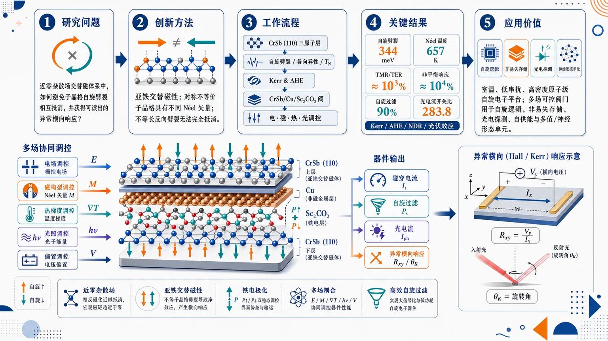
研究问题如何在近零杂散场的交替磁体系中，避免不同子晶格的交替自旋劈裂相互抵消，并同时获得可读出的异常横向响应与多场可控自旋电子器件性能。创新方法提出“亚铁交替磁性”新概念：让对称不等价的交替磁子晶格具有不同 Néel 矢量，使交替自旋劈裂像不等长的反向箭头一样无法完全抵消；并在三原子层 CrSb (110) 片层中实现，再与铁电 Sc₂CO₂ 和 Cu 间隔层堆叠成亚铁交替磁-铁电阀。工作流程从三原子层 CrSb (110) 原子片出发，计算其磁序、能带自旋劈裂、磁各向异性和 Néel 温度；识别 Kerr 效应与异常霍尔效应等横向响应；随后构建 CrSb / Cu / Sc₂CO₂ 多层阀器件，通过磁构型、铁电极化、偏压、热场和光场切换隧穿电流、自旋过滤和光电流输出。关键结果CrSb (110) 三原子层显示 344 meV 大自旋劈裂、657 K 高 Néel 温度和适中单轴磁各向异性，并出现磁光 Kerr 与异常霍尔响应；器件平衡态隧穿磁阻/电阻约 10³%，偏压、热场或光场下非平衡响应约 10⁴%，自旋过滤达 90%，光电流开关比达 283.8，并伴随负微分电阻和光伏效应。应用价值为室温、低串扰、高密度自旋电子学提供原子级薄的材料平台；同一器件可像多功能阀门一样由电、磁、热、光多场控制，适合超紧凑自旋逻辑、非易失存储、光电探测、自供能电子器件和多值/神经形态功能单元。第一部分：核心概览（Overview）
提出ferrialtermagnetism（亚铁交替磁性）作为交替磁性家族的新子类，并在三原子层 CrSb (110) flakes 中实现。该体系兼具大自旋劈裂 344 meV、高 Néel 温度 657 K、异常霍尔/磁光 Kerr 响应，并可与铁电 Sc₂CO₂ 构建多场调控阀器件，实现约 10³%–10⁴% 的隧穿磁阻/电阻响应、90% 自旋过滤和显著光伏效应，指向超紧凑、自供能自旋电子学平台。
---
第二部分：结构化快速回顾
《Anomalous Transverse Response and Multi-Field Ferrialtermagnetic-Ferroelectric Valve with CrSb Flakes》（None，）
背景
Altermagnets（交替磁体）同时具有反铁磁体的零杂散场和铁磁体的自旋极化，适合低串扰、高密度自旋电子器件。核心背景可由摘要原句支撑：*"Altermagnets combine the zero-stray-field of antiferromagnets with the spin polarization of ferromagnets, showing great potential for spintronic applications."*
方法
构造并计算三原子层 CrSb (110) flakes 的磁性、电子结构、各向异性、Néel 温度及横向响应；进一步将其与铁电 Sc₂CO₂ 和 Cu spacer 集成，设计 ferrialtermagnetic-ferroelectric valve。关键设计表述为：*"Integrating this ferrialtermagnetic CrSb with ferroelectric Sc2CO2 and Cu spacer, we design an ferrialtermagnetic-ferroelectric valve."*
结果
三原子层 CrSb (110) 表现出 344 meV 自旋劈裂、适中单轴磁各向异性、高 Néel temperature = 657 K，并出现磁光 Kerr 效应和异常霍尔效应。器件层面实现平衡态约 10³% 的 tunneling magnetoresistance/electroresistance，非平衡偏压、热场、光场下约 10⁴% 响应，90% 自旋过滤，光电流 extinction ratio 达 283.8。
讨论
ferrialtermagnetism 的关键区别在于两个或多个对称不等价交替磁子晶格具有非相同 Néel 矢量，导致交替自旋劈裂不完全抵消，并增强抗扰动能力。摘要中的定义为：*"symmetry-inequivalent altermagnetic sublattices possess nonidentical Neel vectors, preventing mutual cancellation of alternating spin splitting and conferring intrinsic robustness against perturbations."*
局限
可用材料仅包含题名、摘要与 arXiv 元数据，缺少正文、计算细节、结构参数、能量差、输运模型、k 点采样、泛函选择、器件几何、误差分析与补充材料。因此无法验证 344 meV、657 K、10³%–10⁴%、90%、283.8 的计算来源、定义方式和稳健性。
结论
ferrialtermagnetism 被定位为一种可实现多场调控、超紧凑、自供能自旋电子学与电子学的新平台。摘要结论为：*"These findings establish ferrialtermagnetism as a fertile platform for multi-field-controlled, ultracompact, and self-powered spintronics and electronics."*
---
第三部分：逐章节冷凝解析（Section-by-Section Condensing）
可解析材料仅包含 arXiv 页面中的 Title、Abstract、Comments、Subjects、Citation metadata，未包含论文 PDF 正文和原始章节标题。严格意义上的“逐章节”解析无法可靠完成；以下仅对已提供文本中的可验证部分进行冷凝解析，不伪造未给出的章节、图表、公式或方法细节。
---
Title: Anomalous Transverse Response and Multi-Field Ferrialtermagnetic-Ferroelectric Valve with CrSb Flakes
- Research object and phenomenon
题名直接锁定三个核心对象：CrSb flakes、anomalous transverse response、multi-field ferrialtermagnetic-ferroelectric valve。这意味着研究目标不是单纯材料预测，而是从材料物性延伸到器件功能。题名原文为：*"Anomalous Transverse Response and Multi-Field Ferrialtermagnetic-Ferroelectric Valve with CrSb Flakes"*。
- Device-level ambition
valve 一词暗示器件具有可开关输运态，且由ferrialtermagnetic 与 ferroelectric 自由度共同控制；multi-field 暗示调控场不止一种，结合摘要可确认为偏压、热场、光场等。相关证据来自摘要：*"non-equilibrium magnitudes under bias, thermal, or light field reaches ~10⁴%"*。
- Material platform
CrSb flakes 被选为二维或准二维片层平台，摘要进一步限定为 three-atomic-layer CrSb (110) flakes，即三原子层、晶面取向为 (110)。原文为：*"This concept is realized in the three-atomic-layer CrSb (110) flakes"*。
---
Abstract
- Altermagnets combine antiferromagnetic zero stray field and ferromagnetic spin polarization
Altermagnets 的基础优势来自两类传统磁序的互补结合：像反铁磁体一样几乎无外部杂散磁场，又像铁磁体一样可产生动量依赖自旋极化。摘要原句为：*"Altermagnets combine the zero-stray-field of antiferromagnets with the spin polarization of ferromagnets, showing great potential for spintronic applications."* 这一定位解释了交替磁体在高密度自旋电子学中的吸引力：低串扰、快动力学、可读出自旋输运信号。
- Ferrialtermagnetism is proposed as a distinct subclass of altermagnetism
ferrialtermagnetism 被定义为交替磁性家族中的一个“distinct subclass”，区别在于不同交替磁子晶格不再彼此完全等价。摘要明确写道：*"we propose ferrialtermagnetism as a distinct subclass of altermagnetic family"*。这里的“distinct subclass”说明它不是普通 altermagnet 的简单实例，而是引入了新的对称性与补偿机制。
- Symmetry-inequivalent altermagnetic sublattices with nonidentical Néel vectors prevent cancellation
该概念的关键物理机制是：symmetry-inequivalent altermagnetic sublattices 具有nonidentical Néel vectors，从而避免交替自旋劈裂相互抵消。摘要给出完整定义：*"where symmetry-inequivalent altermagnetic sublattices possess nonidentical Neel vectors, preventing mutual cancellation of alternating spin splitting and conferring intrinsic robustness against perturbations."* 这里的核心不在于存在净磁矩，而在于交替自旋劈裂的非完全补偿。
- Three-atomic-layer CrSb (110) flakes realize the proposed concept
实现平台为三原子层 CrSb (110) flakes。摘要原文：*"This concept is realized in the three-atomic-layer CrSb (110) flakes"*。三原子层结构意味着器件厚度极限接近原子级，有利于ultracompact spintronics。
- Spin splitting reaches 344 meV
spin splitting 达到 344 meV，属于非常显著的能带自旋分裂尺度，远高于室温热能量 (k_BT approx 25.9) meV。摘要原句：*"which exhibits spin splitting of 344 meV"*。如此大的自旋劈裂有利于室温自旋极化输运和异常横向响应。
- Magnetic anisotropy is moderate and uniaxial
该体系具有moderate uniaxial magnetic anisotropy，说明存在单一优选磁化/反铁磁序方向，且各向异性能垒不至于过低或过高。原文为：*"moderate uniaxial magnetic anisotropy"*。适中的单轴各向异性通常有利于磁态稳定与可控翻转之间取得平衡。
- Néel temperature reaches 657 K
Néel temperature = 657 K，显著高于室温，说明该磁序理论上可在常温及更高温度下稳定。摘要原句：*"and high Neel temperature of 657 K."* 这对自旋电子学尤为关键，因为许多二维磁体的转变温度远低于室温。
- Magneto-optical Kerr effect and anomalous Hall effect are observed
摘要报告观察到 magneto-optical Kerr effect 和 anomalous Hall effect：*"The magneto-optical Kerr and the anomalous Hall effects are observed."* 这两类响应通常需要非平凡的自旋-轨道耦合、破缺的有效时间反演对称性或动量空间 Berry 曲率贡献。对交替磁体而言，这尤其重要，因为即使净磁化接近零，也可能出现可读出的横向信号。
- Ferrialtermagnetic CrSb is integrated with ferroelectric Sc₂CO₂ and Cu spacer
器件设计将 ferrialtermagnetic CrSb、ferroelectric Sc₂CO₂ 与 Cu spacer 集成。原文为：*"Integrating this ferrialtermagnetic CrSb with ferroelectric Sc2CO2 and Cu spacer, we design an ferrialtermagnetic-ferroelectric valve."* 其中 Sc₂CO₂ 提供可翻转极化，Cu spacer 可能用于调节界面耦合、隧穿势垒或导电间隔。
- Equilibrium tunneling magnetoresistance and electroresistance reach ~10³%
平衡态下器件表现出约 10³% 的 tunneling magnetoresistance 和 electroresistance。摘要原句：*"This device displays equilibrium tunneling magnetoresistance and electroresistance of ~10³%"*。这意味着磁构型切换与铁电极化切换均可显著改变电导。
- Non-equilibrium response under bias, thermal, or light field reaches ~10⁴%
在偏压、热场或光场驱动下，非平衡响应可达约 10⁴%。原文为：*"and non-equilibrium magnitudes under bias, thermal, or light field reaches ~10⁴%"*。这表明该器件不仅是静态存储元件，也可作为多场耦合传感、整流或能量转换器件。
- Spin filtering reaches 90%
自旋过滤效率达到 90%。摘要写道：*"with high spin filtering of 90%."* 这一数值说明输出电流具有强自旋选择性，适合自旋注入、逻辑与探测应用。
- Negative differential resistance is achieved
器件出现 negative differential resistance（NDR，负微分电阻）。摘要原文：*"The negative differential resistance and photogalvanic effects..."*。NDR 意味着在某些偏压区间中电流随电压升高反而降低，可用于振荡器、存储器、多值逻辑和神经形态器件。
- Photogalvanic effects and photocurrent extinction ratio of 283.8 are achieved
器件具备 photogalvanic effects，并实现 photocurrent extinction ratio = 283.8。原句为：*"photogalvanic effects, and photocurrent extinction ratio of 283.8 are achieved."* 这表明光照可在无外加偏压或特定非平衡条件下产生显著可控光电流，且开/关光电流对比强。
- Platform-level significance
研究意义被概括为面向多场控制、超紧凑、自供能自旋电子学与电子学。摘要结论为：*"These findings establish ferrialtermagnetism as a fertile platform for multi-field-controlled, ultracompact, and self-powered spintronics and electronics."* 其中 self-powered 与光伏/热电/非平衡响应关联紧密。
---
Comments
- Manuscript scale
arXiv 元数据给出稿件规模为 30 pages, 3 tables, and 6 figures。原文为：*"30 pages, 3 tables, and 6 figures"*。这说明完整论文应包含较完整的材料计算、器件设计和输运/光响应分析，但当前输入未提供这些章节内容。
---
Subjects
- Interdisciplinary classification
学科分类覆盖 Materials Science、Mesoscale and Nanoscale Physics、Applied Physics、Computational Physics。原文为：*"Materials Science (cond-mat.mtrl-sci); Mesoscale and Nanoscale Physics (cond-mat.mes-hall); Applied Physics (physics.app-ph); Computational Physics (physics.comp-ph)"*。这表明研究横跨计算材料、介观输运、器件物理和应用自旋电子学。
---
第四部分：深度理解与语言支持（Understanding & Nuance）
1. 术语解析
- Altermagnets
Altermagnets 指一种不同于传统铁磁体和反铁磁体的磁有序态。它通常没有宏观净磁化或杂散场，却能在动量空间产生交替的自旋劈裂。摘要中的定义功能性表述为：*"combine the zero-stray-field of antiferromagnets with the spin polarization of ferromagnets"*。微妙之处在于：它不是“弱铁磁”或“普通反铁磁”，而是由晶体对称性允许的动量依赖自旋极化。
- Ferrialtermagnetism
Ferrialtermagnetism 可类比 ferrimagnetism（亚铁磁性） 相对于 antiferromagnetism 的关系：子晶格之间不完全等价，导致某些响应不能完全抵消。摘要定义为：*"symmetry-inequivalent altermagnetic sublattices possess nonidentical Neel vectors"*。这里的“ferri-”强调不完全补偿，但补偿对象是alternating spin splitting，不一定只是净磁矩。
- Néel vector
Néel vector 是描述反铁磁或交替磁有序方向的序参量，通常表示两个反平行子晶格磁矩之差。文中使用 nonidentical Neel vectors，说明不同交替磁子晶格的磁序方向或幅度关系并不完全相同，从而影响自旋劈裂是否抵消。
- Anomalous transverse response
Anomalous transverse response 通常指不完全由外加磁场 Lorentz 力产生的横向响应，例如异常霍尔效应、磁光 Kerr 效应等。摘要中对应证据为：*"The magneto-optical Kerr and the anomalous Hall effects are observed."* “Anomalous” 的含义是响应源于材料内部磁序、Berry 曲率、自旋-轨道耦合等，而非普通霍尔效应。
- Photocurrent extinction ratio
Photocurrent extinction ratio 是光电流开/关态强度比或高低态对比度。数值 283.8 表示光电流可被某种场、极化态或器件构型强烈调制。摘要原句为：*"photocurrent extinction ratio of 283.8 are achieved."*
---
2. 疑难查证：复杂概念解释
#### 为什么 ferrialtermagnetism 不是普通 altermagnetism？
普通 altermagnetism 中，不同自旋通道在动量空间出现交替劈裂，但由于晶体对称性，某些子晶格或动量区域的贡献可能相互补偿。Ferrialtermagnetism 的关键是引入对称不等价交替磁子晶格，使这些贡献不再精确抵消。摘要中的核心机制是：*"preventing mutual cancellation of alternating spin splitting"*。
直观类比：
- 反铁磁体：两个相反磁矩大小相等，总磁矩为零。
- 亚铁磁体：两个相反磁矩大小不等，总磁矩不为零。
- 交替磁体：动量空间自旋劈裂交替出现，但整体可能有对称补偿。
- 亚铁交替磁体：交替自旋劈裂来自不等价子晶格，不能完全补偿，因而横向响应和自旋输运更强、更稳定。
#### 为什么零杂散场还能有异常霍尔或 Kerr 响应？
传统直觉认为异常霍尔效应常与铁磁净磁化相关，但现代能带理论中，异常霍尔效应更直接地与Berry curvature 在占据态中的积分有关。即使净磁化接近零，只要磁序和晶体对称性允许非零 Berry 曲率总和，就可能出现异常霍尔响应。摘要证据为：*"The magneto-optical Kerr and the anomalous Hall effects are observed."*
#### 为什么 344 meV 自旋劈裂重要？
室温热能量约为 25.9 meV。344 meV 约为室温热能量的 13 倍以上，意味着自旋分裂不会轻易被热涨落淹没。摘要中的数值为：*"spin splitting of 344 meV"*。这对室温自旋过滤、异常输运和光响应非常关键。
#### 为什么 657 K Néel 温度重要？
很多二维磁体的磁转变温度低于室温，限制实际应用。657 K 显著高于室温，说明磁序理论上可在常温稳定。摘要原文为：*"high Neel temperature of 657 K."* 这使 CrSb flakes 更接近实际器件条件。
---
第五部分：创新评估与关联（Synthesis & Novelty）
1. 创新性判断
- 概念创新：从 altermagnetism 推进到 ferrialtermagnetism
过去 2–5 年交替磁性研究的核心集中在发现材料、对称分类、动量依赖自旋劈裂、无净磁化自旋流、异常霍尔/Kerr 响应等。该工作的新颖性在于提出 ferrialtermagnetism，即交替磁性内部的“亚铁型不完全补偿”子类。关键原句为：*"we propose ferrialtermagnetism as a distinct subclass of altermagnetic family"*。
- 机制创新：利用不等价 Néel vectors 避免交替自旋劈裂抵消
普通 altermagnets 的自旋劈裂可能因不同子晶格或对称相关区域而相互抵消。该工作提出通过 symmetry-inequivalent altermagnetic sublattices 与 nonidentical Néel vectors 保留净有效交替劈裂。摘要机制为：*"preventing mutual cancellation of alternating spin splitting and conferring intrinsic robustness against perturbations."* 这解决了交替磁体中响应可能被对称性抵消的问题。
- 材料创新：三原子层 CrSb (110) flakes 实现高温、大劈裂交替磁功能
三原子层 CrSb (110) 同时具备 344 meV 自旋劈裂和 657 K Néel 温度。摘要给出：*"three-atomic-layer CrSb (110) flakes, which exhibits spin splitting of 344 meV... and high Neel temperature of 657 K."* 这使其区别于许多低温二维磁体或自旋劈裂较弱的平台。
- 响应创新：零/低杂散场磁性平台中获得 Kerr 与异常霍尔信号
在交替磁体框架中观测 magneto-optical Kerr 和 anomalous Hall effects 具有重要读出意义。摘要证据为：*"The magneto-optical Kerr and the anomalous Hall effects are observed."* 这有助于解决反铁磁类器件读出困难的问题。
- 器件创新：ferrialtermagnetic-ferroelectric valve 实现多场耦合调控
器件集成 CrSb / Sc₂CO₂ / Cu spacer，同时利用磁序、铁电极化、偏压、热场和光场调控输运。摘要为：*"Integrating this ferrialtermagnetic CrSb with ferroelectric Sc2CO2 and Cu spacer, we design an ferrialtermagnetic-ferroelectric valve."* 这超越单一磁场或电场控制的自旋阀。
- 性能创新：10³%–10⁴% 量级响应与 90% 自旋过滤
平衡态响应约 10³%，非平衡多场响应约 10⁴%，自旋过滤 90%。摘要证据为：*"equilibrium tunneling magnetoresistance and electroresistance of ~10³%"* 与 *"non-equilibrium magnitudes under bias, thermal, or light field reaches ~10⁴% with high spin filtering of 90%."* 这些数值若经完整正文验证，将代表高性能多功能自旋电子器件。
- 功能创新：负微分电阻、光伏响应和高光电流开关比共存
同一器件平台中实现 negative differential resistance、photogalvanic effects 和 photocurrent extinction ratio = 283.8。摘要证据为：*"The negative differential resistance and photogalvanic effects, and photocurrent extinction ratio of 283.8 are achieved."* 这使其不仅是自旋阀，也可能用于光电探测、整流、逻辑和自供能器件。
需要进一步验证的关键问题
- 计算方法细节缺失：未提供泛函、U 值、自旋轨道耦合处理、vdW 修正、k 点密度、能量收敛标准。
- Néel temperature 来源不明：657 K 可能来自 Monte Carlo、平均场、交换参数映射或其他模型；不同方法误差很大。
- 器件输运定义不明：~10³% 与 ~10⁴% 的 TMR/TER/非平衡响应需明确分母定义、偏压窗口、温度、界面构型。
- 实验可实现性未能从摘要判断：三原子层 CrSb (110) flakes、Sc₂CO₂ 铁电层与 Cu spacer 的制备、界面稳定性、缺陷敏感性尚需正文证据。
- “observed” 的含义需查证：摘要中 *"are observed"* 可能指第一性原理计算中观察到，也可能指实验观测；当前材料无法确认。
-
02
📄 摘要：用微观理论研究含交替磁势的约瑟夫森结中超导量子比特的能量谱与相位势能，表明交替磁材料可提供额外可调的自旋相关相位与非对称 Josephson 效应，从而支持更可调的 qubit 设计。
💡 亮点：交替磁约瑟夫森结把自旋分裂直接写进量子比特势能面。为更可调、潜在更抗噪的超导 qubit 提供新材料路线。
📖 展开分析 + 配图
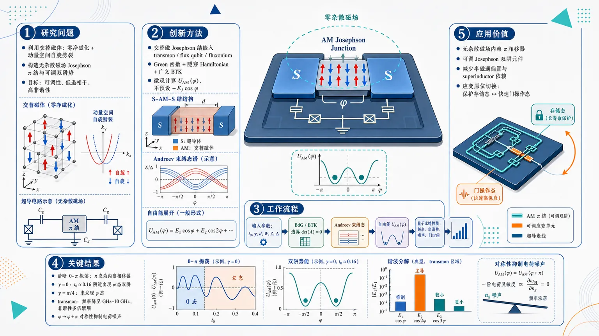
研究问题如何利用交替磁体“零净磁化但具有动量空间自旋劈裂”的特性，构造无杂散磁场的 Josephson π 结与可调双阱势，从而让超导量子比特同时获得可调性、低退相干和高非谐性。创新方法将交替磁 Josephson 结嵌入 transmon、flux qubit 与 fluxonium；用解析 Green 函数/隧穿 Hamiltonian 和广义 BTK 方法从 Andreev 束缚态微观计算能量-相位关系 UAM(φ)，而非假设普通 −EJ cosφ。Aha 点在于：交替磁结的一阶 Josephson 谐波可在 0-π 转变附近被压低，二阶谐波主导，天然形成 π 相移、ϕ 态双阱和对称性保护。工作流程输入交替磁 Josephson 结参数：Néel 场强度 t0、晶体取向 γ、结长 d、宽度 W、透明度 Z、超导能隙 Δ；求解 BdG/BTK 散射边界条件 det(A)=0 得到 Andreev 束缚态；对负能态求和得到相位相关自由能 UAM(φ)；将 UAM(φ) 分解为 E1 cosφ 与 E2 cos2φ 等谐波；把该势能放入 transmon/flux qubit/fluxonium Hamiltonian；计算量子比特频率、非谐性、电荷噪声弛豫/退相位和门操作时间。关键结果交替磁 Josephson 势出现清晰 0-π 振荡，π 态可作为无杂散场内禀相移器；γ=0 时在 t0≈0.16 及部分 0-π 转变附近出现 ϕ 态双阱，γ=π/4 未发现 ϕ 态。transmon 在 0-π 转变附近频率降至实验常用的数 GHz–10 GHz，同时非谐性多倍增强；电荷噪声弛豫率虽面对更低频率的 1/f 噪声，却因 φ→φ+π 对称性和左右阱矩阵元抵消而被抑制。应用价值为超导量子芯片提供一种无杂散磁场的内禀 π 相移器和可调 Josephson 双阱元件，可减少外加半磁通偏置与 superinductor 依赖；有望实现高非谐、低电荷噪声敏感、可通过应变在“保护存储态”和“快速门操作态”之间原位切换的新型超导量子比特。第一部分：核心概览 (Overview)
交替磁体被系统引入超导量子比特设计，形成具有零净磁化、非相对论自旋劈裂、可调 Josephson 能量-相位关系的新型材料平台。核心贡献在于用微观 Andreev 束缚态计算证明：交替磁 Josephson 结可在 0-π 转变与 ϕ 态附近同时提升 transmon 的退相干保护与非谐性，并可通过 Néel 场强度、晶体取向、应变实现保护态与快速门操作态之间的原位切换。该工作把交替磁自旋电子学与超导量子电路连接起来，提出一种不依赖杂散磁场的内禀 π 相移与双阱量子比特方案。
---
第二部分：结构化快速回顾
《Superconducting Qubits with Altermagnetic Josephson Junctions》（None，）
背景
超导量子比特需要兼具可调性与抗环境噪声能力。传统磁性 Josephson 结可提供内禀相移，但杂散磁场会干扰邻近量子比特。交替磁体具有零净磁化与动量空间自旋劈裂，为无杂散场 π 相移器与可调 Josephson 势提供新平台。
方法
采用解析 Green 函数 / 隧穿 Hamiltonian 推导与广义 Blonder–Tinkham–Klapwijk 数值方法，计算交替磁 Josephson 结的 Andreev 束缚态、自由能、谐波分解，再将所得 Josephson 势嵌入 transmon、flux qubit、fluxonium Hamiltonian。
结果
交替磁 Josephson 势出现明显 0-π 振荡，在特定参数下形成 ϕ 态双阱势。在 transmon 中，0-π 转变与 ϕ 态附近量子比特频率降至数 GHz–10 GHz，同时非谐性显著增强，且电荷噪声导致的弛豫率在转变点附近被抑制。
讨论
性能提升源于一阶 Josephson 谐波被压低、二阶谐波占优，使势能由近似单阱余弦势转为双阱或强非谐势。晶体取向 γ=0 与 γ=π/4 对转变频率、ϕ 态出现条件和能相位关系有决定性影响。
局限
ϕ 态对结长与交替磁强度存在调谐要求；数值自由能可能受 Andreev 态求解遗漏导致的高谐波噪声影响；完整器件仍需考虑多噪声通道、制备误差、材料应变控制和多量子比特串扰。
结论
交替磁 Josephson 结可作为无杂散场内禀 π 相移器和可调双阱 Josephson 元件，为高非谐、低电荷噪声敏感、可原位切换保护/操作状态的超导量子比特提供新设计路线。
---
第三部分：逐章节冷凝解析 (Section-by-Section Condensing)
Abstract
- Materials platform for tunable and noise-resilient qubits
量子计算的关键材料瓶颈是同时实现可调量子比特与抗环境噪声鲁棒性。摘要明确将目标定位为寻找新材料平台，原文指出 *"Identifying a materials platform for creating qubits that are both tunable and resilient towards environmental noise is one of the main hurdles that need to be overcome to realize quantum computation that is practically useful."* 交替磁体由此被置于超导量子比特材料创新的核心位置。
- Altermagnets remain underexplored in superconducting qubits
已有路线使用带有自旋轨道耦合或磁性相互作用的超导量子比特，但交替磁体在该语境下仍基本空白。摘要直接给出研究缺口：*"However, the recently discovered class of materials known as altermagnets remain largely unexplored in this context."*
- Microscopic calculations determine qubit-level consequences
研究策略是通过微观计算判断交替磁 Josephson 结如何改变超导量子比特性质，而非仅采用理想化 Josephson 能量。核心方法表述为 *"We here use microscopic calculations to determine how the properties of superconducting qubits are modified when altermagnetic Josephson junctions are included."*
- Key performance parameters show rich dependence on altermagnetic properties
关键性能量包括能级劈裂 splitting、非谐性 anharmonicity、退相干 decoherence、单量子比特/耦合量子比特门操作时间。这些量依赖交替磁体的Néel 场强度和相对于界面的晶体取向，原文为 *"The key qubit performance parameters, including splitting, anharmonicity, decoherence, and single/coupled-qubit gate operation times, display rich behavior depending on the characteristic properties of the altermagnetic material, such as the strength of the Néel field and the crystallographic orientation of the altermagnetic relative interfaces in the system."*
- Transmon can combine decoherence protection and superior anharmonicity
重点对象是 transmon。在 0-π 转变点附近和 ϕ 态中，量子比特同时具备强退相干保护与更优非谐性：*"We focus in particular on the transmon design and show that the qubit is very well protected against decoherence and simultaneously shows superior anharmonicity both near 0-π transition points and when it is in a ϕ-state."*
- Strain enables protection-operation switching
交替磁量子比特可通过应变 strain移出保护区以加快门操作，再移回保护态。该策略直接针对量子比特设计中的保护性—可操作性 tradeoff：*"We propose that by using strain, the altermagnetic qubit can be moved out of its protected regime to enable faster gate-operation times, and then moved back to its protected state."*
- Symmetry-derived protection competes with single-well robustness
主要物理主题是由能量-相位关系特定对称性产生的保护与单阱物理带来的鲁棒性之间的竞争。摘要结尾给出定位：*"This work clarifies how symmetry-derived protection from specific energy-phase relations in altermagnetic Josephson junctions competes with robustness from single-well physics, and shows how real devices interpolate between these limits."*
---
I Introduction
- Superconducting qubits dominate practical quantum-computing prototypes
量子比特是有效二能级系统，超导量子比特在实际原型机中受到高度关注。原文定义与领域定位为 *"Qubits, effective two-level quantum systems, are the building blocks of quantum computers."* 以及 *"superconducting qubits have garnered much attention when it comes to actual working prototypes of quantum computers."*
- Josephson junction supplies essential nonlinearity and anharmonicity
大多数超导量子比特架构依赖 Josephson 结，由两个超导体夹一个非超导中间层构成。其功能是引入非线性，使能级非等间距，从而选取二能级子空间。原文说明：*"The key component in the vast majority of architectures for superconducting qubits is a Josephson junction."* 以及 *"It introduces a necessary non-linearity in the system which provides anharmonicity in the quantum energy levels of the system, and thus allows for projection of a subspace of two energy levels."*
- Flux qubits need optimal operation without external half-flux bias
flux qubit 具有大非谐性和磁可调性，但传统非磁材料实现大规模集成困难，尤其通常需要外加 半个磁通量子实现最佳操作点。原文为 *"One such challenge is the necessity of providing an external magnetic field corresponding to half a flux quantum to achieve an optimal point of operating the device."*
- Magnetic Josephson elements solve phase bias but create stray-field problems
磁性元件可作为内禀超导相位移器，避免外加磁通，但磁体产生杂散场 stray field，会寄生影响芯片上邻近量子比特。原文指出 *"This can be solved by including a magnetic element, which acts as an intrinsic superconducting phase-shifter."* 以及 *"A magnet surrounds itself with a stray field, which will act parasitically on neighboring qubits on a chip."*
- Multi-domain magnets reduce stray fields but weaken intrinsic phase shift
多畴磁态可减小杂散场，但会损害 Josephson 结提供的内禀相移。该矛盾是交替磁体登场的直接动机：*"Allowing the magnet to enter a multi-domain state reduces this problem, but in turn hampers the intrinsic phase-shift provided to the Josephson junction."*
- Altermagnets combine antiferromagnetic zero magnetization with spin-split bands
交替磁体是一类共线反铁磁体，在动量空间具有非相对论自旋劈裂能带，同时保持零净磁化。原文定义基础为 *"collinear antiferromagnets can host nonrelativistic spin-split electron bands in momentum space while simultaneously having zero net magnetization."* 其优势概括为 *"combining the best of both worlds from ferromagnets and antiferromagnets."*
- Altermagnetic spin polarization is not limited by relativistic spin-orbit physics
与自旋轨道耦合系统不同，交替磁体的自旋极化能带不受相对论效应强度限制，同时没有净磁化和杂散场。原文关键句为 *"void of net magnetization and the resulting stray field, altermagnets have spin-polarized electron bands not limited by relativistic physics, unlike spin-orbit coupled systems."*
- Altermagnetic Josephson junctions already exhibit 0-π oscillations, ϕ states, and diode effects
交替磁 Josephson 结已被发现具有传统非磁 Josephson 结缺失的性质，包括 0-π 振荡、ϕ 态和高效无耗散二极管效应。原文列举为 *"interesting physical properties that are absent in conventional non-magnetic Josephson junctions, such as 0−π oscillations, ϕ-states, and very efficient dissipationless diode effects."*
- Research goal: realistic microscopic modeling of altermagnetic Josephson junctions in qubits
研究目标是通过广泛微观计算模拟现实交替磁 Josephson 结，并判断其对现有超导量子比特设计的影响。原文为 *"we here perform extensive microscopic calculations to model realistic altermagnetic Josephson junctions."*
- Altermagnetic JJs offer intrinsic tunable double-well qubits and alternative to superinductors
交替磁 Josephson 结提供内禀且可调的双阱超导量子比特机制，可作为 superinductor 的替代路线，并可通过应变实现保护—操作折中控制。原文直接陈述：*"We show that altermagnetic Josephson junctions provide an intrinsic and tunable mechanism for generating double-well superconducting qubits, offering an alternative for superinductors and offering in-situ control over the protection-operation tradeoff via their response to strain."*
- Transmon gains low charge-noise sensitivity and large anharmonicity simultaneously
transmon 通常电荷噪声保护强但非谐性小；交替磁 Josephson 结可让二者同时提升。原文目标句为 *"Focusing on the transmon design, we show that inclusion of altermagnetic JJs provide an operational regime with both low charge noise sensitivity and large anharmonicity simultaneously."*
- Performance map includes splitting, anharmonicity, decoherence, dephasing, and gate times
研究系统扫描交替磁层性质对 splitting、anharmonicity、decoherence、dephasing rates、gate operation times 的影响。原文为 *"We provide a detailed overview of how key qubit performance parameters such as splitting, anharmonicity, decoherence and dephasing rates, and gate operation times, depend on the properties of the altermagnetic layers."*
- Optimal regimes are near 0-π transitions or ϕ states
交替磁超导量子比特适合在 0-π 转变附近或 ϕ 态附近运行，并借助应变工程原位修改。原文总结为 *"we propose that altermagnet-based superconducting qubits are suitable for operation near either 0−π transitions or ϕ-states, with in situ modification via strain engineering."*
- Paper architecture links microscopic JJ physics to transmon, flux qubit, fluxonium, and CZ gates
章节安排包含：Sec. II 能量-相位关系与谐波分解；Sec. III transmon 性能、退相干、门时间、初始化与读出，并讨论 flux qubit 与 fluxonium；Sec. IV.3 电容耦合两个交替磁量子比特并分析 CZ 门。原文为 *"We start in Sec. II by characterizing the energy-phase relation and its belonging decomposition into harmonic functions for altermagnetic Josephson junctions"*，以及 *"We then couple two altermagnetic qubits capacitively in Sec. IV.3 and characterize the operation of an entangling CZ-gate."*
---
II Altermagnetic Josephson junction
- Altermagnetic JJs support 0-π oscillations and ϕ states relevant to qubit function
交替磁 Josephson 结理论研究已经揭示 0-π 振荡和 ϕ 态，两者均直接影响量子比特功能。原文开头指出 *"Altermagnetic Josephson junctions (JJs) have been intensively studied theoretically in recent years, unveiling key features such as 0−π oscillations and the emergence of a ϕ-state."*
- 0-π transition means the ground-state phase is either 0 or π
0-π 转变表示 Josephson 结基态相位差可随结参数取 0 或 π。影响参数包括结长、交替磁强度、交替磁能带瓣相对于界面的取向。原文为 *"The 0−π transition phenomenon refers to the property that the ground-state phase difference for the JJ can be either 0 or π, depending on the JJ junction parameters."*
- π junctions enable zero-flux flux-qubit operation
一个 0 结与一个 π 结组成的 flux qubit 可在零外部磁通下工作，这避免外加半磁通量子。原文指出 *"the design of flux qubits incorporating one 0 and one π-junction allows for operation at zero external flux."*
- ϕ state creates two degenerate nontrivial minima
ϕ 态不是单一 0 或 π 极小值，而是 Josephson 能量有双重简并极小值。原文定义为 *"The ϕ-state, on the other hand, describes a situation where the Josephson energy has a doubly degenerate minimum, rather than a single minimum at either 0 or π."*
- 0, π, and ϕ states allow tailored Josephson energy potentials
交替磁体中的 0 态、π 态、ϕ 态可用于设计 Josephson 势，从而强烈改变所有量子比特功能性质。原文为 *"the existence of 0, π, and ϕ-states in altermagnets provides the opportunity to tailor the JJ energy potential, which in turn drastically affects all of the qubit functional properties."*
---
II.1 Analytical solution: 0−, π−, and ϕ− states
- Spin-dependent phase accumulation controls Josephson energy
电子穿过势垒会积累相位 ψ=kd；在自旋相关势垒中，不同自旋积累不同相位，差值 Δψ=ψ↑−ψ↓ 会影响电流-相位关系与能量-相位关系。原文为 *"When an electron travels through a barrier separating two reservoirs, it accumulates a phase ψ=kd"*，以及 *"spin-dependent barriers give rise to a spin-dependent phase accumulation."*
- Ferromagnetic barriers generate 0-π transitions via cosΔψ modulation
铁磁势垒中，最低阶隧穿振幅下 Josephson 电流被 cosΔψ 调制；小自旋劈裂 h 时 Δψ≃2hkFd，这是 0 到 π 转变的来源。原文说明 *"In a ferromagnetic barrier, it modulates the Josephson current by cosΔψ to lowest order in the tunneling amplitude, with Δψ≃2hkFd for a small spin splitting h, and this is what produces the 0 to π transitions."*
- Altermagnetic spin splitting is trajectory-angle dependent
交替磁体遵循相同相位积累原则，但自旋劈裂依赖电子轨迹方向，即相对于界面的入射角 θ。原文为 *"An altermagnet operates under the same principles, but in this case the spin splitting depends on the direction of the electron trajectory, as represented by its angle of incidence θ with respect to the interface."*
- Oblique trajectories increase effective barrier length
非垂直入射粒子实际穿越距离为 d/cosθ，只有垂直入射粒子穿越长度 d。这使得即便铁磁体自旋劈裂各向同性，不同轨迹仍会产生不同 Δψ。原文为 *"Only particles travelling perpendicularly to the interface will travel a length d, whereas other particles travel a distance d/cosθ."*
- dxy and dx2−y2 orientations give opposite angular trends
对 dx2−y2 交替磁体且界面平行 ŷ，垂直界面方向 x̂ 自旋劈裂最大；随入射角增加，轨迹长度增加但自旋劈裂下降，因此 Δψ 随 θ 增大反而下降。对 dxy 交替磁体，法向入射 θ=0 时 Δψ=0，偏离法向后有效长度和自旋劈裂均增加。原文为 *"For a dx2−y2 altermagnet with interface ∥ŷ, the spin-splitting is maximal along the direction perpendicular to the interface, x̂"*，以及 *"In contrast, for a dxy altermagnet, Δψ is zero for normal incidence θ=0, but increases strongly when moving away from normal incidence."*
- Wide and narrow junctions reverse which orientation transitions faster
宽结中，dxy 情况 0-π 转变随结长或交替磁自旋劈裂增加得更快；窄结中，主要法向模贡献，情况反转。原文为 *"for a wide junction the 0−π transitions occur more rapidly as a function of the junction length or altermagnetic spin-splitting in the dxy-case compared to the dx2−y2 case"*，以及 *"for a narrow junction where primarily modes close to normal incidence contribute, the situation is reversed."*
- Analytical spin-dependent phase depends on γ, t0, kF, and d
解析表达式给出
ψs(θ)=−4st0kFd[cos2γ sinθ + sin2γ cos2θ/(2cosθ)]。其中 γ=0 对应 dxy，γ=π/4 对应 dx2−y2，s 是自旋取向，kF 是 Fermi 动量，t0 是交替磁强度。原文为 *"we find the following analytical expression for the accumulated spin-dependent phase"*，并定义 *"γ=0 and γ=π/4 corresponding to the dxy and dx2−y2 configuration, respectively."*
- Effective integrated spin splitting predicts faster dxy oscillations by 2√2
使用 Gauss-Legendre 求积估计，把 sinθ 替换为 1/√3，得到
Δψ=(4/√6)[2√2 cos2γ + sin2γ]t0kFd。由此 dxy 的有效自旋劈裂比 dx2−y2 大 2√2 倍。原文明确写道 *"the dxy altermagnet affects the junction with an effective spin splitting that is larger than dx2−y2 by a factor of 2√2."*
- Higher harmonics enable ϕ state near 0-π transitions
Josephson 自由能包含 cos(nφ), n>1 高阶谐波。0-π 转变点附近 n=1 谐波消失，n=2 谐波可能占优，这是形成 ϕ 态的必要但非充分条件。原文为 *"there are also higher harmonics present (cos nφ, n>1)"*，以及 *"where the n=1 harmonic vanishes, the n=2 harmonic might dominate, which is a necessary, but not sufficient, condition for the ϕ state."*
- ϕ state is fine-tuned in junction length but more robust in t0 at fixed d
ϕ 态在交替磁体中较少见，需要 t0 与结长 d 的精细关系；若在固定 t0 下长度 d=d* 出现，轻微偏离 d* 即可破坏。但在固定 d 下，对 t0 变化更具韧性。原文为 *"the occurrence of a ϕ-state in an altermagnet is rare, requiring a fine-tuned relation between t0 and the junction length d"*，以及 *"the ϕ-state is more resilient toward changes in the altermagnetic strength t0 at a fixed junction length d."*
---
II.2 Numerical solution: generalized BTK-approach
- Generalized BTK method models realistic superconducting transport
数值部分采用广义 Blonder–Tinkham–Klapwijk 方法，该方法已知能较好匹配超导结输运实验。原文为 *"we make use of a generalized Blonder-Tinkham-Klapwijk (BTK) methodology which is known to compare favorably to experimental measurements of transport in superconducting junctions."*
- Wavefunctions are solved in Nambu space across superconductors and barrier
BTK 思路是在 Nambu 空间建立波函数：超导体中为电子型和空穴型准粒子，非超导区为纯电子和空穴。原文为 *"set up a system of wavefunctions in Nambu-space that describe current-carrying excitations propagating in the system"*，以及 *"these excitations are electron-like and hole-like quasiparticles in the superconductors whereas they are pure electrons and holes in the region separating the superconductors."*
- Andreev bound states follow from det(A)=0
通过求解各区域 Bogoliubov–de Gennes 方程并匹配边界条件，得到齐次线性系统 A v=0；非平凡解要求 det(A)=0，对应允许的 Andreev 束缚态能量。原文为 *"These boundary conditions can be summarized as a system of homogeneous linear equations on matrix form A v=0"*，以及 *"we then proceed to solve the equation det(A)=0, which gives us a precise mathematical condition on which energies E are allowed in the system."*
- Zero-temperature free energy is summed over negative-energy ABS in short junctions
在短结极限 d≪ξ 中，零温自由能为 F=∑ky,E<0 E；ky 标记有限宽度 W 结的横向模，并在大宽度下近似为积分。原文为 *"one can compute the zero-temperature free energy of the system in the short junction limit d≪ξ with ξ the superconducting coherence length as F=∑ky,E<0 E."*
- Phase-dependent free energy is the altermagnetic Josephson potential UAM
总自由能含大相位无关常数，物理来自相位相关部分，记为 UAM。原文为 *"It contains a large phase-independent constant, but the physics is contained in the phase-dependent part which hereafter is referred to as UAM."*
- Idealized −EJ cosφ misses unconventional current-phase relations
常见量子比特 Hamiltonian 使用 −EJ cosφ 简化 Josephson 能，但这会漏掉交替磁等非常规材料导致的强电流-相位关系修正，也不能捕捉能量尺度随结参数变化。原文批评为 *"such an approach misses both the strong modification of the current-phase relations that may appear in JJs incorporating unconventional materials such as altermagnets, and also does not capture how the magnitude of the energy varies with the junction parameters."*
- Realistic modeling includes finite transparency, finite width, finite length, and exact ABS current-phase relation
数值建模包含有限界面透明度、有限宽度、有限结长，并由超流 Andreev 束缚态计算精确电流-相位关系。原文为 *"incorporate realistic features such as a finite interface transparency, finite width and length of the junction, and computing the exact current-phase relation due to supercurrent-carrying Andreev-bound states."*
- Figure 1 parameter set places system in experimentally relevant short-junction regime
Fig. 1 使用参数：d=0.2ξ、W=10d、界面参数 Z=0.4、超导能隙 Δ=0.15 meV、kFξ=100。原文图注给出 *"The parameters used are the junction length d=0.2ξ and width W=10d ... the interface parameter Z=0.4, the superconducting gap Δ=0.15 meV, and the Fermi wave vector kFξ=100."*
- Energy-phase relation decomposes into cosine harmonics without sine terms
Josephson 势写为 UAM(φ)=−∑n≥1 En cos(nφ)，且当前系统中对称性禁止 sin(nφ) 项。原文为 *"The energy-phase relation is given by UAM(φ)=−∑n≥1 En cos(nφ)"*，以及 *"Any sin(nφ)-terms are forbidden by symmetry in the present system."*
- First two harmonics dominate, so qubit calculations truncate at n=2
数值自由能存在由于遗漏 ABS 解引起的噪声，高阶谐波可拟合噪声；Fig. 2 显示 E1 与 E2 主导，因此量子比特计算截断到 n=2。原文为 *"we observe that E1 and E2 dominate the energy-phase relation"*，以及 *"we truncate the sum at n=2 when calculating the qubit properties to capture the effects of the AM junction while avoiding features arising from numerical noise."*
- 0-π transitions occur when E1 changes sign
E1 变号时发生 0-π 转变；两种取向 γ=0 与 γ=π/4 均有清晰振荡。原文为 *"When E1 changes sign, a 0−π transition occurs."* 以及 *"Clear 0−π oscillations are observed for both the altermagnetic orientations."*
- π state is common enough to serve as a stray-field-free π shifter
π 态在参数空间中频繁出现，使交替磁体可用作无杂散场 π 相移器。原文为 *"The π-state occurs frequently over a range of parameters and thus allows altermagnets to be used as stray-field free π-shifters."*
- ϕ state appears for γ=0 near t0≈0.16 and near 0-π transitions
对 γ=0，ϕ 态在 t0≈0.16 附近出现，也出现在 t0≈0.1 与 t0≈0.2 附近的 0-π 转变区域。原文指出 *"This occurs close to the 0−π transitions, as well as close to t0=0.16 when γ=0"*，并进一步说明 *"The ϕ-state shows up in our numerical simulations in a narrow range close to t0=0.16 in the case γ=0 as well as in the 0−π transitions close to t0=0.1 and t0=0.2."*
- No ϕ state is found for γ=π/4
对 γ=π/4，数值中没有发现 ϕ 态，与解析预测一致。原文为 *"We find no ϕ-state for γ=π/4, in accordance with analytical predictions."*
- Second harmonic must be negative and sufficiently large to shift minima away from 0 and π
ϕ 态形成时，E2 为负且相对 E1 足够大，使 Josephson 势极小值位于 φ0≠0,π。原文为 *"the second harmonic is negative and sufficiently large compared to the first harmonic in order to push the minima of the Josephson potential to φ0≠0,π."*
- ϕ state persists over variations of junction length and transparency in analytical checks
解析结果验证同一参数区间存在 ϕ 态，并确认其可在较大结长和势垒透明度变化范围内出现。原文为 *"we have used these analytical results to confirm that the ϕ-state appears over a large variation of junction lengths and barrier transparencies."*
- Resonant tunneling amplifies higher harmonics by increasing effective transparency
有限结长可产生共振隧穿，即左右传播激发在非超导区构造性干涉，使有效正常态透射最大；此时高谐波因透明度改善而增强。原文为 *"resonant tunneling may occur"*，以及 *"higher harmonics are amplified due to the improved transparency of the junction, despite the presence of barriers at the interfaces."*
- Figure 3 uses analytical expressions with Γ=0.86 to map φ0(d,t0)
Fig. 3 展示 γ=0 中 Josephson 势极小位置随 d 与 t0 变化；当 φ0≠0,π 时为 ϕ 态。使用解析表达式与透射概率 Γ=0.86。图注为 *"We used the analytical expressions ... with transmission probability Γ=0.86."*
---
III Altermagnetic qubits
- Three archetypal superconducting-qubit designs are transmon, flux qubit, and fluxonium
分析对象覆盖三类超导量子比特：transmon、flux qubit、fluxonium。原文为 *"there are three archetypes of superconducting qubit designs: i) the transmon and ii) the flux qubit, and iii) fluxonium."*
- Altermagnetic transmon Hamiltonian uses microscopic UAM instead of −EJ cosφ
transmon Hamiltonian 为
H=4Ec(n̂−ng)²⁺UAM(φ)，其中 n̂=−i∂φ，Ec=e²/2C。原文给出 *"Starting with the transmon, its circuit Hamiltonian is: H=4Ec(n̂−ng)²⁺UAM(φ)"*，以及 *"n̂=−i∂φ and Ec=e²/2C where C is the capacitance of the circuit."*
- Conventional transmon has charge-noise protection but small anharmonicity
transmon 工作在 |E1|≫Ec，相位局域；电荷噪声保护强，但因势近似谐振子，非谐性通常小。原文为 *"The transmon operates in the regime |E1|≫Ec and thus gives a well-localized phase."* 以及 *"the anharmonicity is typically small since the eigenstates mostly probe a phase-regime where the potential is close to a harmonic oscillator."*
- Flux-qubit Hamiltonian includes one altermagnetic JJ, one 0 junction, and loop inductance
flux qubit Hamiltonian 为
H=4Ec(n̂−ng)²−EJ cos(φ−2πΦ/Φ0)+UAM(φ)+(Φ−Φext)²/(2L)。原文完整列出该式，并说明 *"where Φext is the external flux through the loop, and Φ is the total flux through the loop."*
- π altermagnetic junction can create double-well flux qubit at zero flux
常规两个 0-JJ 需要 Φ=Φ0/2 和高谐波形成双阱；若一个结替换为具有足够强高谐波的 π-JJ，可在 Φ=0 时形成双阱。原文为 *"for two conventional 0-JJs, an external flux of Φ=Φ0/2, in addition to higher harmonics, is needed to produce the characteristic double-well potential of the flux qubit"*，以及 *"if one JJ is replaced with a π-JJ that has sufficiently strong higher harmonics, the double-well potential emerges even at Φ=0."*
- Fluxonium Hamiltonian gains intrinsic π-state double well from altermagnetism
fluxonium Hamiltonian 为
H=4Ec(n̂−ng)²⁺UAM(φ)+½EL(φ−2πΦ/Φ0)²，其中 EL=EJ/N。交替磁体可提供内禀 π 态，使 fluxonium 在 Φ=0 下产生双阱。原文为 *"for fluxonium the Hamiltonian reads..."*，以及 *"the altermagnet ... enables a similar advantage as in the flux qubit case, namely an intrinsic π-state which enables a double-well potential in fluxonium at Φ=0."*
- Fluxonium-like double wells yield exponentially small splitting and large anharmonicity
小 EL 时双阱相距远，两个阱基态的对称/反对称组合能量劈裂指数小，而阱内激发间距仍大，因此谱强非谐。原文为 *"For small EL, the wells become widely separated, leading to an exponentially small energy splitting between the symmetric and antisymmetric combinations of the ground states in each well."* 以及 *"the spacing to higher excited states ... remains large, resulting in a strongly anharmonic spectrum."*
- Main numerical focus is transmon with two crystallographic orientations
主要分析 transmon，考虑交替磁晶格相对于超导界面的两种取向。Fig. 4 显示交替磁 Josephson 结与电容并联。原文为 *"We will make the transmon design our primary focus in this work, and we consider two crystallographic orientations of the altermagnet."*
- Energy scale is tuned to transmon values near 0-π transitions
典型 transmon Josephson 能量为数十 GHz；Fig. 1 中多数 t0 下数值能量更大，但在 0-π 转变附近 Josephson 能量被强烈压低，达到数十 GHz。原文为 *"typical values for the Josephson energy in a transmon is tens of GHz"*，以及 *"Near these transitions, the Josephson energy is strongly suppressed and in fact reaches levels of precisely tens of GHz."*
- Charging energy is set to Ec/h=0.25 GHz
计算取 Ec/h=0.25 GHz，这是典型实验值。原文为 *"Therefore, we choose an Ec value of 0.25 GHz"*，Fig. 5 图注也写明 *"We set Ec/h=0.25 GHz, which is a typical experimental value."*
- UAM amplitude can be scaled by reducing superconducting gap Δ
若希望在远离转变的大 t0 区域使用交替磁 transmon，可通过减小超导能隙 Δ 干净地缩放 UAM 幅度而不改变量流-相位关系；可用 Al 超导体近邻化半导体实现较小诱导能隙。原文为 *"UAM could be cleanly scaled down in amplitude without changing the current-phase relation simply by using a smaller value for the superconducting gap Δ."*
---
III.1 Qubit splitting and anharmonicity
- Qubit splitting and anharmonicity are mapped versus altermagnetic strength t0
Fig. 5 展示交替磁 transmon 的量子比特频率 ω 与非谐性 α 随 t0 变化，并分别给出 γ=0 与 γ=π/4。原文为 *"The qubit splitting and anharmonicity for the altermagnetic transmon are shown in Fig. 5 as functions of the altermagnet strength t0."*
- Anharmonicity is defined as α=ω21−ω
非谐性定义为 α=ω21−ω，其中 ω21=(E2−E1)/ℏ，Ei 是本征值。原文精确定义：*"The anharmonicity is defined as α=ω21−ω, where ω21=(E2−E1)/ℏ and Ei are the eigenvalues."*
- Conventional SNS junction is used as t0→0 benchmark
为判断交替磁性的影响，计算与常规 SNS 结比较，SNS 对应 t0→0，图中虚线表示。原文为 *"we compare against a conventional SNS junction (dashed line), corresponding to the limit t0→0."*
- Altermagnetism lowers qubit splitting especially near 0-π transitions
交替磁性总体降低整个 t0 范围内的量子比特劈裂，尤其在 0-π 转变点附近最明显。原文为 *"The altermagnetism generally lowers the qubit splitting across the entire t0-range considered, particularly close to 0-π transition points."*
- Qubit splitting near transitions is experimentally typical: few GHz to 10 GHz
0-π 转变附近量子比特劈裂约为数 GHz 到 10 GHz，落在 transmon 实验典型范围。原文为 *"The qubit splitting lies in the range of a few GHz to 10 GHz close to the 0−π transitions, which falls squarely within typical experimental values for a transmon qubit."*
- Anharmonicity increases manyfold at the same transition locations
在频率被压低的位置，非谐性显著增强，幅度为多倍提升。原文为 *"At the same locations, the anharmonicity increases manyfold."*
- Physical origin is suppressed UAM and collapsing plasma frequency
0-π 转变附近 UAM 被强烈抑制，Josephson 能量减小导致 plasma frequency 坍缩。原文解释为 *"UAM is strongly suppressed near the 0−π transitions and the plasma frequency collapses as the accompanying Josephson energy shrinks."*
- Competition between first and second harmonics enhances quartic relative to quadratic terms
非谐性增强源于 Josephson 能量中不同谐波竞争；转变附近一阶谐波被压低，二阶谐波仍有限，使四次项相对二次项变大。原文为 *"Near the transition, the first harmonic is strongly suppressed, while the second harmonic remains finite."* 以及 *"This makes the quartic term larger relative to the quadratic term, and thus enhances the energy level anharmonicity."*
- Quartic/quadratic ratio increases from 1/12 to 1/3 when E1 vanishes
取 UAM(φ)=−E1 cosφ−E2 cos(2φ)，在 φ=0 附近展开，四次/二次系数比为
(E1+16E2)/[12(E1+4E2)]。若 E2=0，比值 1/12；若 E1=0，比值 1/3，非谐性增强。原文为 *"If E2=0, the ratio is 1/12. If E1=0, on the other hand, the ratio is much larger: 1/3."*
---
III.2 Charge noise sensitivity
- Relaxation rate is computed using Fermi’s golden rule
噪声源 λ 引起的弛豫率为
Γ1λ=(1/ℏ²)|⟨0|∂λH|1⟩|² Sλ(ωq)。原文为 *"The relaxation rate due to a noise source λ is given by Fermi’s golden rule."*
- Multiple superconducting-qubit noise channels often show 1/f spectra
超导量子比特通常受磁通噪声、电荷噪声、准粒子噪声、临界电流噪声影响，实验中这些通道常呈 1/f 谱。原文为 *"Superconducting qubits are typically exposed to multiple noise channels, such as magnetic flux noise, charge noise, quasiparticle noise and critical current noise."* 以及 *"Experimentally, it is seen that these channels typically have a 1/f spectral density."*
- 1/f noise spectral density is parameterized by amplitude Aλ and exponent γ≈1
噪声谱取
Sλ1/f(ω)=2πAλ²/|ω|γ，其中 γ≈1，Aλ 是噪声幅度。原文为 *"Sλ1/f(ω)=2πAλ²/|ω|γ with γ≈1 and where Aλ is the noise amplitude for channel λ."*
- Dephasing rate uses infrared cutoff and shot exposure time
1/f 噪声退相干率为
Γφλ=√[2Aλ²(∂λω)² |ln(ωir t)|]。其中 ωir 由最低噪声频率和总测量时间决定，t 是单次 shot 中量子比特暴露于噪声的时间。原文为 *"The dephasing rate from 1/f noise is given by..."*，以及 *"ωir is an infrared cutoff set by the lowest frequencies present in the noise spectrum and thus the total effective measurement time."*
- Representative experimental values set logarithmic factor around 10
实验观察到 1/f 噪声低至约 10 Hz；典型单次暴露时间约 10 μs，因此 ωir t∼10−4，对数因子约 10。计算采用 ωir t=2π×10−5。原文为 *"Experiments on superconducting qubits have observed 1/f-type noise down to frequencies of order 10 Hz"*，*"A typical experimental value for t is of order 10 μs"*，以及 *"We therefore adopt ωir t=2π×10−5 as a representative value."*
- Benchmark decoherence rates are 10³–10⁴ Hz
当前先进超导量子比特退相干率，包括弛豫 Γ1 与退相位 Γφ，约 10³–10⁴ Hz，较小值更理想。原文为 *"state-of-the-art decoherence rates ... lie in the range 10³−10⁴ Hz, with small Γ-values being desirable."*
- Charge-noise amplitude is set to Ang=10−4 e
分析电荷噪声响应时取 λ=ng，噪声幅度 Ang=10−4 e。原文为 *"we here analyze the qubit response to charge noise corresponding respectively to λ=ng with noise amplitude Ang=10−4e."*
- Relaxation is unexpectedly suppressed near 0-π transitions despite lower qubit frequency
0-π 转变点附近量子比特劈裂被压低，按 1/|ω| 噪声谱似乎应增大退相干，但结果相反：弛豫率 Γ1 在转变附近被抑制。原文为 *"This suggests that the noise spectral density Sλ should become large due to its 1/|ω| dependence, resulting in large decoherence rates."* 随后给出关键结果 *"However, we see that the opposite behavior occurs: the relaxation rate Γ1 is suppressed near the 0−π transitions."*
- Second-harmonic dominance creates φ→φ+π symmetry and two equivalent wells
0-π 转变附近 Josephson 势由二阶谐波主导，UAM(φ)≈−E2 cos(2φ)，具有 φ→φ+π 离散对称性，在 φ=0 与 φ=π 产生两个等价势阱。原文为 *"Near the 0–π transition, the Josephson potential is dominated by a second harmonic UAM(φ)≈−E2cos(2φ), which is invariant under the discrete transformation φ→φ+π."*
- Low-energy states are symmetric and antisymmetric superpositions across wells
低能本征态近似为两个局域阱态 ψL, ψR 的对称/反对称组合：
|0⟩≃(ψL+ψR)/√2，|1⟩≃(ψL−ψR)/√2。原文为 *"the low-energy eigenstates take the form of symmetric and antisymmetric superpositions"*。
- Charge relaxation matrix element cancels by symmetry
电荷噪声弛豫由 Γ1∝|⟨0|n̂|1⟩|² 控制；对称/反对称组合中两个阱的贡献符号相反，发生抵消，干涉项指数小。原文为 *"The relaxation rate is governed by the transition matrix element of the charge operator Γ1∝|⟨0|n̂|1⟩|²."* 以及 *"contributions from the two wells ... enter with opposite sign."*
---
第四部分：深度理解与语言支持 (Understanding & Nuance)
1. 术语解析
- Altermagnetism / altermagnets（交替磁性 / 交替磁体）
指一种不同于铁磁体和传统反铁磁体的磁有序态：净磁化为零，但电子能带在动量空间发生自旋劈裂。微妙之处在于，这种自旋劈裂不是常规自旋轨道耦合导致的相对论效应，而来自晶体对称性与自旋空间/实空间操作的特殊关系。因此它兼具“无杂散场”和“强自旋极化”的优点。
- 0-π transition（0-π 转变）
Josephson 结基态相位差从 0 变为 π，或反向转变。它不是普通相变意义上的热力学相变，而是 Josephson 能量最低点位置随参数变化发生切换。对量子比特而言，它可内禀提供 π 相移，避免外部磁通偏置。
- ϕ-state（ϕ 态）
Josephson 势能的最低点不在 0 或 π，而在 ±ϕ0 两个非平凡相位处，形成双重简并。与 φ0-junction 容易混淆：φ0-junction 通常指电流-相位关系整体偏移、单个非零基态相位；这里的 ϕ-state 强调双阱简并，常与高阶谐波竞争有关。
- Energy-phase relation / current-phase relation（能量-相位关系 / 电流-相位关系）
Josephson 结的自由能 U(φ) 随超导相位差 φ 变化；电流通常由相位导数给出。量子比特势能形状直接由能量-相位关系决定，因此一阶、二阶谐波比例会改变能级、非谐性与噪声矩阵元。
- Anharmonicity（非谐性）
定义为 α=ω21−ω10，衡量第三能级与前两个能级是否等间距。非谐性越大，越容易把系统当作干净二能级量子比特控制，减少泄漏到高能级。transmon 通常电荷噪声保护好但非谐性较小；交替磁 Josephson 势可在转变附近提高非谐性。
2. 疑难查证
- 为什么 0-π 转变附近频率变小，弛豫反而降低？
直觉上，1/f 噪声谱 S(ω)∝1/|ω|，量子比特频率降低应使噪声谱增大，弛豫率上升。但弛豫率不仅取决于噪声谱，还取决于矩阵元 |⟨0|∂λH|1⟩|²。0-π 转变附近一阶谐波消失，二阶谐波主导，势能近似 −E2 cos2φ，出现 φ→φ+π 对称性与两个等价阱。基态与第一激发态是左右阱局域态的对称/反对称组合，电荷算符在两个阱中的贡献符号相反，矩阵元被对称性压低。噪声谱增大被矩阵元消失压过，因此总弛豫率下降。
- 为什么二阶谐波增强会提高非谐性？
单纯 −EJ cosφ 在势能最低点附近展开，主要像谐振子，四次项相对二次项较小，因此能级接近等间距。若一阶谐波 E1 被压低而二阶谐波 E2 仍存在，势能曲率与四次修正的比例改变。公式
(E1+16E2)/[12(E1+4E2)]
显示，当 E1=0 时该比例从普通余弦势的 1/12 增至 1/3，四次非线性相对增强，能级间距更不均匀。
- 为什么晶体取向 γ 会决定 0-π 转变和 ϕ 态？
交替磁能带自旋劈裂具有强方向性。电子穿越结时的相位积累同时取决于轨迹长度 d/cosθ 和该方向上的自旋劈裂。不同 γ 改变动量空间自旋劈裂瓣相对于界面的方向，因此改变所有入射角模式综合后的有效 Δψ。这会移动 0-π 转变点，也会改变一阶与二阶谐波的竞争条件，最终决定是否出现 ϕ 态。
---
第五部分：创新评估与关联 (Synthesis & Novelty)
1. 创新性判断
- 把交替磁材料从自旋电子学扩展到超导量子比特工程
近 2–5 年交替磁研究主要集中在自旋输运、非相对论自旋劈裂、磁对称性分类、Josephson 二极管效应和 0-π 振荡。该工作把这些材料性质转化为可量化的量子比特性能指标：ω、α、Γ1、Γφ、门时间、CZ 门可行性，使交替磁体从“新型磁相”进入“量子电路元件”层面。
- 解决磁性 π 结的杂散场问题
传统铁磁 Josephson π 结可为 flux qubit 提供内禀相移，但杂散场会干扰芯片上其他量子比特。交替磁体同时具有零净磁化和自旋劈裂能带，因此可实现无杂散场 π 相移器。这直接解决了磁性 Josephson 元件在多量子比特集成中的核心障碍。
- 提供不依赖 superinductor 的双阱生成机制
fluxonium 和受保护量子比特常依赖 superinductor 或复杂结阵列形成双阱/大相位涨落结构。交替磁 Josephson 势本身可通过 0-π 转变与 ϕ 态生成双阱，为双阱超导量子比特提供更紧凑的材料内禀方案。
- 同时改善 transmon 的两项传统矛盾指标
普通 transmon 的典型权衡是：电荷噪声保护强，但非谐性较低。交替磁 transmon 在 0-π 转变和 ϕ 态附近通过高阶谐波主导，同时获得低电荷噪声弛豫与增强非谐性。这一点针对 transmon 架构的核心短板。
- 提出应变控制的保护—操作动态切换方案
受保护量子比特常面临“保护态不易快速操控”的矛盾。交替磁体对晶体取向、Néel 场和应变敏感，可通过应变把器件移出保护区进行快速门操作，再移回保护态存储信息。这种原位可逆调参机制区别于固定 Josephson 结设计。
- 从微观 Andreev 束缚态出发，而非现象学 Josephson 势假设
过去许多超导量子比特理论直接采用 −EJ cosφ 或少数现象学谐波。这里从广义 BTK 与 Andreev 束缚态计算得到真实 UAM(φ)，再输入量子比特 Hamiltonian，保留有限透明度、有限宽度、有限长度、晶体取向和交替磁强度影响，因而更接近实验可设计参数。
-
03
📊 含图深析
📄 摘要：将粗粒化粒子从点粒子扩展为带取向的有质量椭球 bead，并引入各向异性特征，在 E(3) 等变框架下同时学习能量、力和力矩，以提高粗粒化势对构型与结构保真度的表达能力。
💡 亮点：用椭球粗粒化代替点粒子，并把力矩纳入学习，显著增强了 CG 势的各向异性表达。该思路适合复杂软物质和分子体系的高效模拟。
📖 展开分析 + 配图
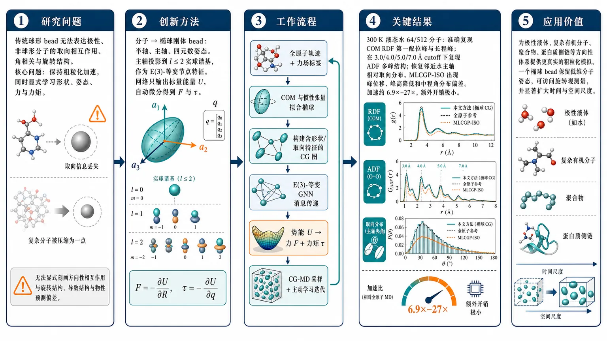
研究问题传统粗粒化机器学习势把分子压缩成无方向的点状 bead，难以表现极性、非球形分子的取向相互作用、角相关和旋转结构；核心问题是：如何在保持粗粒化加速的同时，让 CG bead 显式携带形状、姿态和力矩，从全原子轨迹中学习能量、力与转动响应。创新方法将每个分子映射为带半轴、主轴和四元数姿态的椭球刚体 bead，并把主轴方向投影到 l≤2 的实球谐基中作为 E(3)-等变节点特征；等变消息传递网络只输出标量能量，再通过自动微分同时得到质心力和四元数力矩。Aha 点是：不是给 bead 加一个装饰性方向标签，而是让取向自由度进入能量景观，使平动与转动都由同一个守恒势控制。工作流程输入全原子分子轨迹与原子力场标签；按质心和惯性张量把每个分子拟合成均匀椭球，得到 COM、半轴、主轴、四元数、bead 能量、合力和力矩；构建包含椭球形状与球谐取向特征的 CG 图；E(3)-等变 GNN 在 bead 间传递距离、方向和张量特征；输出总势能，并对位置与四元数求导生成力和力矩；用 CG 分子动力学采样，再通过主动学习筛选高误差构型、反向细粒化、重新标注并迭代训练。关键结果在 300 K 液态水 64/512 分子体系中，各向异性 MLCGP 准确复现质心 RDF 的第一配位峰与长程峰、3.0/4.0/5.0/7.0 Å cutoff 下的 ADF 多峰结构，以及邻近水分子的主轴相对取向投影分布；去除形状和取向的 MLCGP-ISO 出现第一/第二配位峰位移、峰高降低和中程角分布系统偏差。计算上各向异性模型实现约 6.9× 到 27× 加速，且相对各向同性基线只增加极小开销。应用价值该研究为极性液体、复杂有机分子、聚合物、蛋白质侧链和其他方向性相互作用显著的体系提供更真实的粗粒化模拟路径：用一个椭球 bead 保留低维分子姿态，既能访问传统球形 bead 无法定义的旋转观测量，又能在接近全原子结构统计的同时显著扩大模拟时间和空间尺度。第一部分：核心概览 (Overview)
该研究提出一种面向粗粒化分子模拟的各向异性 E(3)-等变机器学习势，把传统点状 bead 扩展为带有半轴、取向、力矩的椭球刚体 bead，并通过等变消息传递网络从全原子轨迹直接学习能量、力和力矩。在液态水 64/512 分子体系中，各向异性模型比去除取向信息的各向同性基线更准确再现 RDF、ADF 和相对取向分布，同时仅带来极小计算开销，实现约 7–27× 加速。其地位在于首次将学习型等变表征与显式取向自由度系统结合，用于机器学习粗粒化势，并实证证明取向特征对极性/方向性体系不是装饰性改进，而是结构保真所必需。
---
第二部分：结构化快速回顾
《Anisotropic representations for E(3)-equivariant machine learning coarse-grained potentials》（None，）
背景
全原子 DFT 与 MLIP 精度高但尺度受限；传统 CG 降低自由度却常依赖体系特异参数化。极性、手性、非球形分子中的方向相互作用难以由各向同性 bead 捕捉。
方法
每个分子被映射为均匀椭球 bead，由质心、惯性张量、主轴和四元数定义形状与取向。节点嵌入包含半轴 ((a,b,c)) 以及主轴在 (lłe2) 实球谐基上的投影。E(3)-等变 GNN 输出能量，并通过自动微分得到力与力矩。
结果
在 300 K 液态水中，各向异性 MLCGP 准确复现 RDF、不同 cutoff 下的 ADF，以及邻近分子的相对取向投影分布。各向同性 MLCGP-ISO 在第一、第二配位峰和中程角分布上出现系统偏差。
讨论
取向信息显著改善近邻结构、三体角相关和旋转结构相关，尤其在方向性相互作用主导的前几个配位壳层中最关键。
局限
各向异性输入增加维度，主动学习需要更多构型；不确定性量化效果不理想；目前仅以水作为最小测试体系，映射策略仍依赖预设规则。
结论
各向异性 E(3)-等变 MLCGP 能在保持结构保真的同时提供显著加速，为复杂分子液体、聚合物和生物分子体系的介观模拟提供可扩展路径。
---
第三部分：逐章节冷凝解析
Executive Summary
Anisotropic coarse-graining replaces point beads with oriented ellipsoids
核心贡献是把粗粒化位点从传统点粒子扩展为具有质量、形状和取向的椭球 bead，使模型能够学习方向相互作用。摘要明确指出：*"we introduce a novel anisotropic machine learning CG potential that extends the point particle representation of atomic nuclei to massive ellipsoidal beads with orientation-dependent features"*。这种设计特别针对极性分子与非对称分子，因为这些体系的结构和动力学强烈依赖方向性和形状各向异性：*"physically motivated for polar and asymmetric molecules, where directional interactions and shape anisotropy play important roles"*。
The model learns energies, forces, and torques from atomistic data
不同于只拟合 bead 间力的传统粗粒化 ML 势，该框架同时学习能量、力、力矩，因此覆盖平动与转动自由度。核心表述为：*"enabling the learning of energies, forces, and torques directly from atomistic data"*。力矩的引入是各向异性 CG 的关键，因为椭球 bead 的姿态演化不能只由质心力决定。
Orientation information is experimentally shown to be essential
与各向同性基线相比，缺少取向信息会造成短程和长程有序结构误差，以及角相关退化。摘要给出直接判断：*"the lack of orientation information leads to systematic errors in short and long range order and degradation of angular correlations"*，并进一步强调这证明取向特征必要：*"proving orientation features are essential for accurate coarse-graining"*。
Coarse-graining produces substantial speedups even for water
水分子仅由 3 个原子映射为 1 个 bead，自由度压缩比例较小，但仍实现 7–27× 加速：*"Even for coarse-graining just three degrees of freedom, CG simulations achieve 7-27× speedups"*。这意味着对于聚合物、蛋白质或有机分子等更高粗粒化比例体系，收益可能更大。
---
1 Introduction
DFT accuracy remains limited by steep computational scaling
DFT 级别模拟是化学和材料预测建模的基础，但计算成本随体系规模急剧增长，通常只能处理数百原子和短时间尺度：*"the computational cost of DFT scales steeply with system size, limiting practical simulations to hundreds of atoms and short timescales"*。目标应用如聚合、相分离、生物分子动力学往往需要百万原子和微秒尺度：*"occur at mesoscopic scales involving millions of atoms and microsecond dynamics"*。
MLIPs bridge part of the cost-accuracy gap but remain atomistically expensive
MLIP 已能以低得多成本接近 DFT 精度：*"near-DFT accuracy can be achieved at orders-of-magnitude lower cost"*，但由于仍保留全原子自由度，规模通常限制在数万原子：*"MLIPs remain limited to tens of thousands of atoms"*。核心瓶颈不是单步势能函数本身，而是自由度数量：*"The fundamental barrier is the number of degrees of freedom, as MLIPs retain full atomistic resolution"*。
Traditional coarse-graining reduces DoFs but sacrifices flexibility
CG 通过把原子组映射为有效相互作用位点来减少自由度：*"replacing atomistic interactions with effective mean potentials that represent groups of atoms as single interaction sites"*。传统 CG 常需要刚性参数化，且在结构保真、可迁移性和拟合成本之间折中：*"rigid parameterization strategies that often sacrifice accuracy or transferability"*；拟合过程也可能耗时且依赖人工：*"requires iterative optimization and careful attention from researchers"*。
Machine learning coarse-grained potentials are positioned as the next step after MLIPs
MLCGP 的定位是用灵活数据驱动势替代传统参数化 CG：*"MLCGPs aim to replace traditional parameterized CG models with flexible, data-driven potentials"*，同时保留粗粒化效率。其逻辑延伸为：*"machine learning coarse-grained potentials (MLCGPs) represent the next logical step to reach mesoscopic scales"*。
Anisotropic particles reduce information loss for directional systems
各向异性 bead 能表示极性、手性、形状各向异性等点状 bead 无法表达的信息：*"anisotropic particles as coarse-grained sites, which provide richer representations than isotropic beads by accounting for features such as polarity, chirality, and shape anisotropy"*。研究任务因此聚焦于将E(3)-等变图神经网络与显式取向自由度结合，并在液态水中比较各向异性模型与各向同性基线。
---
2 Background
Coarse-graining depends jointly on mapping and effective interaction form
CG 的本质是减少自由度并平滑势能面：*"This mapping smooths the underlying potential energy surface, suppressing high-frequency fluctuations"*。但结构、热力学和集体动力学能否保留，取决于映射与有效相互作用形式：*"depends not only on the quality of the mapping, but also on the form of the effective interactions"*。
Isotropic bead models are useful but structurally limited
Martini 等各向同性 bead 模型已广泛用于蛋白质、脂质和聚合物：*"widely adopted for biomolecular and soft-matter systems"*。Martini 将多个重原子映射为 bead 类型，并通过 LJ 势控制相互作用：*"map several heavy atoms to various bead-types, governed by Lennard-Jones (LJ) potentials"*。局限在于体系特异参数化和无法捕捉方向性：*"isotropic bead approximations often fail to capture directional features of interactions such as polarity or chirality"*。
Anisotropic CG has a long history but parameterization remains the bottleneck
椭球或有限尺寸粒子提供取向依赖相互作用：*"anisotropic coarse-grained sites like ellipsoids or other finite-sized particles have long been considered"*，且有更丰富表达能力：*"orientation-dependent interactions and a richer representational capacity"*。但手工或体系特异参数化仍是核心瓶颈：*"the requirement of system-specific parameterization in CG models remains a key bottleneck"*。
MLIPs provide methodological tools relevant to CG
Behler–Parrinello、GAP 和等变 GNN 已证明 ML 势能接近从头算精度：*"learned potentials can approach ab-initio accuracy"*。主动学习和不确定性量化可提高数据效率：*"Active learning frameworks allow the model to adaptively select training data"*；不确定性方法包括 ensembles 与 Bayesian methods：*"uncertainty quantification (UQ) techniques, such as ensembles and Bayesian methods"*。
Existing MLCGPs underrepresent orientation and torque
已有 CG-MLP 多基于 force matching 学习 bead 的能量和力：*"adapted existing MLIP architectures to the CG domain simply by targeting force-matching mean forces on beads"*。等变网络已用于各向同性 CG，并显示小数据优势：*"highlighting the improved accuracy of the latter within a small-data regime"*。但现有框架很少处理各向异性必需的取向和力矩：*"orientation and torque, which are required for anisotropic CG models, remain underrepresented in current ML frameworks"*。
Two specific gaps define the study’s niche
第一，各向异性 CG 尚未与使用学习表征的等变消息传递网络结合：*"Anisotropic CG approaches have not been combined with equivariant message-passing networks that use learned representations"*。第二，取向特征的实际收益缺乏与各向同性基线的系统对照：*"the added complexity of orientation features has not been systematically evaluated through direct comparison with isotropic baselines"*。
---
3 Research Focus
The main technical target is equivariant anisotropic CG with torque prediction
研究明确填补文献空白：*"combining E(3)-equivariant graph neural network architectures with explicit orientation inputs"*，并将预测目标从力扩展到力矩：*"predict torques in addition to forces"*。
The isotropic baseline isolates the value of orientation information
同一数据、同一训练条件下比较各向异性模型与各向同性模型，用来隔离取向特征贡献：*"perform a direct comparison against an isotropic variant trained on identical data"*。这种设计避免把性能差异混淆为数据量、架构或训练过程差异。
Each molecule is mapped into an ellipsoid through inertia-based rigid-body transformation
每个分子通过惯性张量映射为椭球 bead：*"mapped to an ellipsoidal bead through a rigid body transformation based on the inertia tensor"*。模型输入包括形状参数和主轴球谐投影：*"node features constructed from both shape parameters and spherical harmonic projections of principal axes"*。
Results show orientation features are necessary, not optional refinements
各向异性模型在径向、角度、取向分布上与参考数据定量一致，而各向同性模型在近邻结构和中程角相关上系统偏离：*"anisotropic model quantitatively matches the reference data across radial, angular, and orientation distributions"*；*"isotropic variant exhibits systematic errors in nearest-neighbor structure and pronounced deviations in angular correlations"*。结论强烈指向必要性：*"not simply refinements but necessary components"*。
---
4 Methods
4.1 Coarse-Grained Mapping
Each molecule is converted into one inertia-consistent ellipsoidal bead
每个分子被表示为单个各向异性 CG 粒子，方法是对原子质量分布拟合均匀椭球：*"represented as a single anisotropic coarse-grained particle by fitting a uniform ellipsoid to its atomic mass distribution"*。质心计算为
[
rCOM=fracsumᵢ mᵢᵣᵢsumᵢ mᵢ
]
随后在 COM 坐标系中构造惯性张量。
Principal moments and axes define bead orientation and shape
惯性张量特征值 ((Iₐ,I_b,I_c)) 与特征向量 ((mathbf e₁,mathbf e₂,mathbf e₃₎) 定义主转动惯量和主轴：*"whose eigenvalues ... and eigenvectors ... define the principal moments and axes of rotation"*。旋转矩阵 (mathbf R=[mathbf e₁,mathbf e₂,mathbf e₃]) 被强制满足 (det(mathbf R)=1)，以保证右手系：*"ensuring consistent right-handed coordinate frames across beads"*。
Ellipsoid semi-axes are inferred from uniform-density inertia relations
半轴 ((a,b,c)) 通过均匀密度椭球惯性关系求解：*"determined by solving the following system of equations given by the standard inertia relations for a uniform-density ellipsoid"*。公式为
[
Iₐ₌fracM5(b²⁺c²⁾,quad I_b=fracM5(a²⁺c²⁾,quad I_c=fracM5(a²⁺b²⁾
]。
Training labels aggregate atomistic energy, force, and torque into bead quantities
bead 能量为原子能量求和，力为原子力求和，力矩为相对质心力矩和：
[
Ebₑₐd=sumᵢ eᵢ,quad mathbf Fbₑₐd=sumᵢmathbf fᵢ,quad boldsymbolτbₑₐd=sumᵢ₍mathbf r'ᵢ×mathbf fᵢ₎
]
原文强调：*"These quantities were used directly as supervised training targets"*。图 1 以 ethylene carbonate 展示该映射过程：*"Presents an overview of the coarse-graining procedure for an ethylene carbonate molecule"*。
---
4.2 Node Embedding
The anisotropic node embedding contains both shape and orientation
传统 MLIP 节点主要由化学类型等标量嵌入表示；该方法将其扩展为各向异性 CG 粒子的形状和取向表示：*"extended to anisotropic CG particles by incorporating both shape and orientation into the node representation"*。节点嵌入包括半轴 ((aᵢ,bᵢ,cᵢ₎) 和由四元数导出的取向分量。
Orientation is encoded by spherical harmonic projections of principal axes
四元数先转为旋转矩阵，再提取全局坐标中的单位主轴：*"The quaternion is first converted to the corresponding rotation matrix ... from which the unit-normalized principal axes ... in the global frame are extracted"*。只需两根轴即可定义局部坐标系：*"Only two axes are required to fully define the local frame"*。这些轴投影到 (l=2) 以内实球谐基，形成等变取向特征：*"projected onto a real spherical harmonic basis up to l=2"*。
Node-centric orientation features outperform edge-based alternatives empirically
节点中心嵌入比相对旋转、半轴在相对位置上的投影等边特征更稳定、更可泛化：*"Empirically, this node-centric embedding produced more stable and generalizable representations than edge-based relative orientation encodings"*。这一选择说明局部刚体姿态作为节点属性，比 pairwise orientation 编码更适合作为基础表征。
The isotropic baseline removes orientation and shape features only
MLCGP-ISO 排除取向和形状依赖特征，保留相同网络架构与训练流程：*"excludes the orientation- and shape-dependent features"*；*"maintaining the same network architecture and training procedure"*。因此性能差异可以归因于显式各向异性信息。
---
4.3 Equivariant Model Architecture
The network uses E(3)-equivariant message passing
模型采用类似现有 MLIP 的 E(3)-等变消息传递架构：*"employs an E(3)-equivariant message-passing neural network architecture"*。节点包含学习特征和固定属性，包括化学身份、CG 粒子的形状和取向：*"Each node carries learned features and fixed attributes, such as chemical identity, and for CG particles, anisotropic shape and orientation"*。
Edges encode relative positions through radial bases and spherical harmonics
边特征来自相对位置向量 (mathbf rᵢⱼ)，包括距离基函数和球谐投影：*"Edge features contain transformations of a relative position vector ... including basis-projected magnitude and spherical harmonic projections"*。特征以 O(3) 不可约表示组织：*"represented in their O(3) irreducible representations"*，包括标量、向量和高阶张量。
Tensor products preserve equivariance while mixing channels
每个 interaction block 中，节点和边特征通过学习张量积混合：*"combined through learned tensor products that mix scalar and tensor channels while preserving overall equivariance"*。最终每个节点输出标量能量贡献并求和：*"The final per-node latent states are projected to scalar energy contributions ... which sum to the total potential energy"*。
Forces and torques are energy-conserving by construction
力和力矩由能量对平动和转动自由度的自动微分得到：*"Forces and torques are obtained via automatic differentiation of this energy with respect to translational and rotational degrees of freedom"*。这保证严格能量守恒：*"ensuring strict energy conservation"*。
---
4.4 Force and Torque Computation
Forces are negative gradients with respect to bead positions
力定义为总能量对 bead 位置的负梯度：
[
mathbf Fᵢ₌₋fracpartial Eₜₒₜₐₗpartial mathbf rᵢ
]
原文为：*"Forces are computed directly from the energy gradient"*。
Torques are computed from quaternion gradients through a conversion matrix
力矩由能量对四元数坐标的导数转换到笛卡尔力矩：*"torques are obtained from the energy derivative with respect to quaternion coordinates"*。转换公式为
[
boldsymbolτᵢ₌₋mathbf T(mathbf qᵢ₎fracpartial Eₜₒₜₐₗpartial mathbf qᵢ
]
矩阵 (mathbf T(mathbf q)) 明确定义为 (3×4) 形式，含 (q_w,qₓ,q_y,q_z) 分量。
The formulation extends MLIP autodifferentiation to anisotropic particles
该方案将标准 MLIP 的能量守恒自动微分框架推广到具有转动自由度的椭球 bead：*"extending the standard MLIP autodifferentiation workflow to handle anisotropic particles"*。关键不是额外拟合一个独立力矩网络，而是从同一个标量势能导出平动与转动响应。
---
4.5 Active Learning Framework
Training is embedded in an iterative active learning loop
模型训练嵌入主动学习循环：*"embedded within an iterative active learning (AL) loop designed to efficiently explore CG configuration space"*。目标是自动扩展数据集并探索 CG 构型空间。
The seed dataset comes from equilibrated atomistic simulations
初始化数据来自平衡全原子模拟，并映射为 CG 表示：*"begins with a seed dataset generated from equilibrated atomistic simulations"*。标签由 CG oracle 提供，包括 bead 能量、力和力矩：*"provides bead-level energies, forces, and torques derived from high-fidelity atomistic MLIPs or reference force fields"*。
High-error CG configurations are fine-grained and relabeled
训练后的 MLCGP 用于 CG 分子动力学采样新构型，识别高误差构型：*"High error configurations are identified and marked for recalculation"*。这些构型再反向细粒化为全原子表示、由 ground-truth calculator 评估、重新粗粒化，并追加进训练集：*"fine-grained to an atomistic representation, evaluated by the ground truth all-atom calculator and subsequently coarse-grained"*。
---
4.6 Training Configuration
Optimization uses Adam with AMSGrad and cosine annealing
训练采用 Adam optimizer，启用 AMSGrad，初始学习率 (10⁻²)：*"Training used the Adam optimizer with AMSGrad enabled, an initial learning rate of 10−2"*。学习率调度使用 cosine annealing with warm restarts，每 40 epochs 重启：*"cosine annealing with warm restarts every 40 epochs"*。
Early stopping uses long patience and relative improvement threshold
早停作用于训练损失，patience 为 500 epochs，相对提升阈值为 2%：*"Early stopping was applied to the training loss with a patience of 500 epochs and a relative improvement threshold of 2%"*。这说明训练可能较长，且允许主动学习数据扩展后的稳定收敛。
The loss combines bead-level and global observables
损失函数联合 bead-level 与 global targets，包括能量、力、力矩、总能量和应力：*"combined bead-level and global targets (energies, forces, torques, total energy, and stress)"*。各项系数经缩放以归一化量纲和尺度差异：*"coefficients scaled to normalize magnitude disparities across observables"*。
---
5 Results
5.1 Dataset and Reference Data
The benchmark system is liquid water with 64 molecules
所有结果均基于液态水：*"All results presented here were obtained for liquid water"*。参考数据为 64 分子体系，在 NVT、300 K 下模拟 10 ps：*"64-molecule system simulated in the canonical ensemble (NVT) at 300 K for 10 ps"*。
Initial configurations are equilibrated by 100 ps NPT simulation
初始结构来自 300 K、1 atm 下 100 ps NPT 平衡：*"taken from a 100 ps NPT equilibration at 300 K and 1 atm"*，目的是确保密度和结构松弛：*"to ensure proper density and structural relaxation"*。
Ground truth is generated by all-atom MACE-driven MD
全原子能量和力由 MACE universal ML potential 驱动的 AA 分子动力学生成：*"generated using an all-atom (AA) molecular dynamics simulation driven by the MACE universal machine learning potential"*。MACE 在此作为粗粒化训练的 ground truth：*"served as the ground-truth for coarse-grained training"*。
Coarse-grained labels include positions, orientations, mean forces, and torques
全原子数据按椭球规则映射，得到质心、取向、平均力和力矩：*"providing COM positions, orientations, and corresponding mean forces and torques for each water molecule"*。这些标签同时作为训练数据和后续比较参考：*"provided both the seed training data for the MLCGP and the reference trajectories"*。
---
5.2 Structural Distributions
RDF confirms accurate pair structure for anisotropic MLCGP
RDF (g(r)) 比较 bead 质心结构。各向异性 MLCGP 准确再现第一配位峰和长程峰的位置与高度：*"accurately reproduces both the position and magnitude of the first coordination peak and subsequent peaks at longer ranges"*。图 3 说明其与 AA 粗粒化参考几乎完全一致：*"near-perfect agreement with the reference data"*。
The isotropic model shifts coordination peaks and degrades local structure
MLCGP-ISO 第一和第二配位峰发生明显位移：*"exhibits a clear shift of the first and second coordination peaks"*，图注进一步指出第一峰右移且峰高降低：*"shows a clear rightward shift of the first coordination peak and reduced peak height"*。这意味着各向同性表示无法捕捉正确近邻距离与配位结构：*"fails to capture the correct nearest-neighbor distances and coordination structure"*。
ADF reveals anisotropic features encode many-body geometry
ADF 在 cutoff radii 为 3.0、4.0、5.0、7.0 Å 下计算：*"evaluated at cutoff radii of 3.0, 4.0, 5.0, and 7.0Å"*。各向异性模型在所有 cutoff 下复现 AA 分布特征，包括短程第一壳峰和长程多峰结构：*"faithfully reproduces the characteristic features of the AA distributions across all cutoff radii"*。这说明模型学习到了有效势中的多体贡献：*"correctly encodes many-body contributions to the effective potential"*。
Isotropic ADF errors are strongest at intermediate coordination shells
在 (r_c=3.0) Å 时，各向同性模型已有可见差异：*"At rc=3.0Å, the isotropic model shows visible discrepancies"*。在 (r_c=4.0) 和 (5.0) Å 时，峰位置与振幅偏差更明显：*"more pronounced at intermediate cutoffs ... deviations in both peak positions and amplitudes"*。在 (r_c=7.0) Å 时准确性似乎改善，因为角相关在大尺度平均后变弱：*"accuracy appears to improve as angular correlations become weaker due to averaging over larger spatial regions"*。
Orientation projections expose rotational observables inaccessible to isotropic beads
各向异性映射允许分析传统各向同性 bead 根本无法得到的取向结构：*"enables orientation-dependent structural observables that are inaccessible in traditional isotropic bead models"*。图 5 展示主轴对分子间矢量的投影及相邻 bead 主轴之间的交叉投影：*"projections of each principal axis onto the intermolecular vector as well as cross-projections between corresponding principal axes of adjacent beads"*。
Relative orientation distributions are non-uniform and reproduced by MLCGP
图 6 的相对取向投影分布非均匀，说明邻近分子具有偏好取向排列：*"The resulting distributions are non-uniform, reflecting preferential orientation alignments among neighboring molecules"*。各向异性 MLCGP 准确复现峰位置和大小：*"accurately reproduces the peak positions and magnitudes of these relative orientation correlations"*。这证明模型不仅学到位置结构，也学到液体旋转结构：*"captures not only positional structure, but also the rotational structure of the liquid"*。
Combined structural evidence validates orientation-dependent coarse-graining
RDF、ADF 和取向投影综合证明 MLCGP 学到了控制位置与旋转相关的有效能量景观：*"successfully learns the effective energy landscape governing both positional and rotational correlations"*。各向同性对照显示缺少取向信息会导致结构相关系统误差：*"lack of orientation information leads to systematic errors in structural correlations"*。核心结论是：*"orientation-dependent features are not merely beneficial but essential"*。
---
5.3 Computational Performance
Benchmarks compare AA, anisotropic MLCGP, and isotropic MLCGP-ISO
计算性能通过相同分子组成的 AA 与 CG 模拟 wall-clock time 比较：*"compared wall-clock simulation times for atomistic and coarse-grained systems of identical molecular composition"*。64 分子在 NVIDIA T4 GPU 上运行，512 分子在 NVIDIA A100 GPU 上运行：*"64-molecule system simulations were performed on an NVIDIA T4 GPU, while 512-molecule simulations were performed on an NVIDIA A100 GPU"*。动力学由 LAMMPS 执行：*"Simulations used LAMMPS for evaluating the dynamics"*。
The anisotropic model achieves 6.9× to 27× acceleration
64 分子体系中，AA 为 0.196 ns/day，MLCGP 为 1.343 ns/day（6.9×），MLCGP-ISO 为 1.389 ns/day（7.1×）。512 分子体系中，AA 为 0.049 ns/day，MLCGP 为 1.322 ns/day（27×），MLCGP-ISO 为 1.431 ns/day（29×）。表述为：*"Values represent wall-clock time in ns/day, with speedup factors relative to all-atom (AA) simulations noted"*。
Anisotropy introduces minimal computational overhead
各向异性与各向同性模型速度相近，说明显式取向特征额外成本很小：*"both anisotropic and isotropic models achieve substantial and comparable speedups"*；*"the anisotropic representation introduces minimal computational overhead"*。512 分子中，MLCGP 与 MLCGP-ISO 仅从 1.322 到 1.431 ns/day 的差异。
Speedup increases with system size
512 分子加速比高于 64 分子，原因是大体系更好饱和 GPU 并降低 I/O 等固定开销相对占比：*"larger systems better saturate GPU resources and reduce the relative impact of baseline overhead such as I/O"*。研究指出 CG 表征优势随体系规模增加而增强：*"performance advantage of the coarse-grained representation grows with system size"*。
Water is a conservative minimal test case
水只有 3 个原子映射到 1 个 bead，是收益较小的保守案例：*"water represents a minimal test case with only three atoms per coarse-grained bead"*。对聚合物、蛋白质、复杂有机分子等多个或数十个原子映射为 bead 的体系，计算优势会更大：*"the computational advantage would be substantially greater"*。
---
6 Conclusion
The framework accurately captures translational and rotational behavior
各向异性 MLCGP 能同时捕捉分子液体的平动和转动行为：*"capable of accurately capturing both translational and rotational behavior of molecular liquids"*。每个分子表示为带取向特征的椭球 bead，并由 E(3)-等变消息传递网络编码：*"representing each molecule as an ellipsoidal bead with orientation-dependent features and encoding these features within an E(3)-equivariant message-passing neural network"*。
The model directly learns bead energies, forces, and torques
训练目标包括 per-bead energies、forces、torques：*"directly learns per-bead energies, forces, and torques from all-atom reference data"*。验证表明模型定量复现 RDF、ADF 和相对取向相关：*"reproduces radial and angular distribution functions as well as relative orientation correlations with quantitative accuracy"*。
Orientation-dependent features enable observables inaccessible to spherical beads
各向异性表示不仅改善 pair structure，还允许访问各向同性球形 bead 无法表示的旋转观测量：*"access to rotational observables that are fundamentally inaccessible to spherical bead models"*。额外计算成本不显著：*"without significant additional computational cost"*。
Orientation also improves reverse mapping for active learning
显式取向有助于主动学习中的反向映射，因为转动自由度约束全原子重构：*"rotational degrees of freedom constrain atomistic reconstruction in a way that is not available to isotropic models"*。这对 autonomous CG pipeline 很重要。
The approach is fast but more data-hungry
基准显示小到中等体系加速 7–27×：*"Computational benchmarks show 7-27× speedups"*。但各向异性特征增加输入维度，扩大训练数据需求：*"inclusion of anisotropic features increases the dimensionality of the input space, expanding the data requirements for accurate training"*。主动学习中所需额外构型量超过典型原子势开发：*"volume of additional configurations required during active learning ... exceeded those typical of atomistic potential development"*。
Uncertainty quantification remains unresolved
虽然 UQ 被纳入主动学习循环，但效果不佳：*"although uncertainty quantification was incorporated to guide the active learning cycle, its performance was unsatisfactory"*。可靠 UQ 与增强采样是未来自动化 CG 势构建的关键：*"Developing reliable UQ methodologies and enhanced sampling techniques ... will be essential"*。
Future work must test molecular generality and automate mapping
未来方向包括扩展到更多分子类型，以判断何时椭球表示优于各向同性 bead：*"extending this to other molecular classes will help establish when ellipsoidal representations are most valuable"*。还需要自动化或数据驱动映射策略：*"Automated or data-driven mapping strategies are needed"*，以及与层级/多尺度模型集成，最终从 first-principles 数据或 AA MLIPs 系统构建 MLCGP。
---
第四部分：深度理解与语言支持
1. 术语解析
E(3)-equivariant
E(3) 指三维欧氏群，包括平移、旋转和反射。等变不是“不变”：不变量在旋转后数值不变，如能量；等变量会随输入旋转而按同样规则旋转，如力、力矩、向量特征。该研究依赖 E(3)-equivariance，使网络天然满足三维物理对称性。
Anisotropic representation
各向异性表征指 bead 不再是无方向的点或球，而具有形状轴和取向。这里具体是椭球半轴 ((a,b,c))、主轴方向和四元数。其微妙之处在于：各向异性不仅表示“粒子长得不像球”，还表示相互作用随相对姿态变化。
Torque matching / force and torque computation
力匹配只约束质心平动；力矩匹配约束取向演化。对于椭球 bead，若没有力矩，姿态自由度无法物理演化。该研究通过能量对四元数求导得到力矩，而不是单独回归力矩，因此保持能量守恒。
Spherical harmonic projections
球谐投影把方向向量编码成按旋转规则变换的数学对象。这里将主轴投影到 (lłe2) 的实球谐基，使取向信息能与 E(3)-等变网络兼容。(l=0) 类似标量，(l=1) 类似向量，(l=2) 捕捉更高阶方向结构。
Coarse-grained all-atom reference
这不是原始全原子轨迹本身，而是把全原子轨迹按同一映射规则投影到 CG 空间后得到的参考分布和标签。比较 RDF/ADF 时，目标是复现“全原子数据在 CG 表示下的统计结构”。
2. 疑难查证
为什么水只有 3 个原子仍需要各向异性 bead？
水分子虽然小，但高度极性且具有弯曲几何。若将一个水分子压缩成无方向点 bead，氢键网络、偶极取向、局部角排列都会被隐藏。各向异性椭球 bead 并不完全恢复 H/O 原子细节，但通过主轴和取向保留了分子姿态的低维信息，因此能改善 RDF、ADF 和取向相关。
为什么 RDF 也会受取向信息影响？RDF 不是只看距离吗？
RDF 统计的是质心距离，但质心距离由相互作用势决定。对于方向性分子，两个分子在某个距离是否稳定，取决于相对取向。若模型看不到取向，只能把多种取向平均成一个球对称势，容易把第一配位壳距离和峰高学偏。因此取向信息即使不直接出现在 RDF 公式里，也会影响 RDF 的动力学采样结果。
为什么 (r_c=7.0) Å 时各向同性 ADF 看起来改善？
短程配位壳中方向相互作用强，角分布尖锐，各向同性模型容易失败。cutoff 增大后，统计包含更多远邻三体组合，方向性信号被空间平均稀释，分布变宽、变平，模型差异看起来变小。这不是各向同性模型真正学会了方向相互作用，而是观测量本身对方向性的敏感度降低。
为什么用四元数而不是欧拉角？
四元数避免欧拉角的万向节锁，并更适合连续旋转动力学。该研究用四元数表示 bead 姿态，再通过四元数梯度转为笛卡尔力矩。难点在于四元数有单位范数约束，力矩转换必须保证旋转自由度上的能量导数物理一致。
---
第五部分：创新评估与关联
1. 创新性判断
Learned anisotropic equivariant CG representation
近年 CG-MLP 多集中于把 DeePMD、Allegro、MACE 类架构用于各向同性 bead，或用 force matching 学习 bead 力。已有各向异性 CG 工作可学习力和力矩，但多依赖手工描述符。该研究的新颖点在于把各向异性 bead、显式姿态、力矩学习、E(3)-等变消息传递、学习型表征整合到同一 MLCGP 框架中。
Direct isotropic-vs-anisotropic ablation
过去对各向异性 CG 的必要性常停留在物理直觉或单模型验证层面。该研究用相同数据、相同架构和训练流程构造 MLCGP-ISO，对比去除取向/形状信息后的性能变化，从 RDF、ADF、orientation projection 三层证据证明取向特征对水这类极性体系是必要条件。
Torque-conserving energy-based learning
模型不是把力矩作为任意向量输出，而是从同一个标量能量对四元数自动微分得到力与力矩。这使平动和转动响应满足能量守恒，扩展了传统 MLIP 的自动微分范式到刚体各向异性 CG 粒子。
Rotational structural observables become model validation targets
传统各向同性 CG 模型无法定义分子主轴，因此无法验证取向投影、主轴相关、相对旋转分布。该研究把这些旋转观测量纳入验证，展示 MLCGP 不仅复现位置结构，还复现转动结构。这对极性液体、液晶、聚合物链段、蛋白质侧链或粗粒化有机溶剂尤其重要。
Efficiency-accuracy tradeoff is favorable
各向异性输入通常被担心会显著增加成本，但实测 64 分子中 MLCGP 为 1.343 ns/day、MLCGP-ISO 为 1.389 ns/day；512 分子中 MLCGP 为 1.322 ns/day、MLCGP-ISO 为 1.431 ns/day。取向建模几乎不牺牲速度，却显著改善结构保真，形成明确实用价值。
Remaining unsolved problem: autonomous data-efficient anisotropic CG
创新仍未完全解决主动学习与 UQ 问题。各向异性输入空间更高维，数据需求上升；UQ 表现不满意。未来关键突破将是可靠不确定性估计、自动映射、多体系可迁移训练，以及从 first-principles/AA-MLIP 到 MLCGP 的多层级自动化工作流。
-
04
📊 含图深析
📄 摘要：针对 PINN 中不同区域与约束被同步同权优化、与“源到响应”的物理信息传播顺序不一致的问题，提出多维训练优先加权与统一残差权重框架，把时空与边界残差纳入同一 causal weighting 机制。
💡 亮点：把 PINN 训练顺序和物理传播路径对齐，用统一加权同时处理时空与边界残差。对难收敛 PDE 和自适应训练尤其有用。
📖 展开分析 + 配图
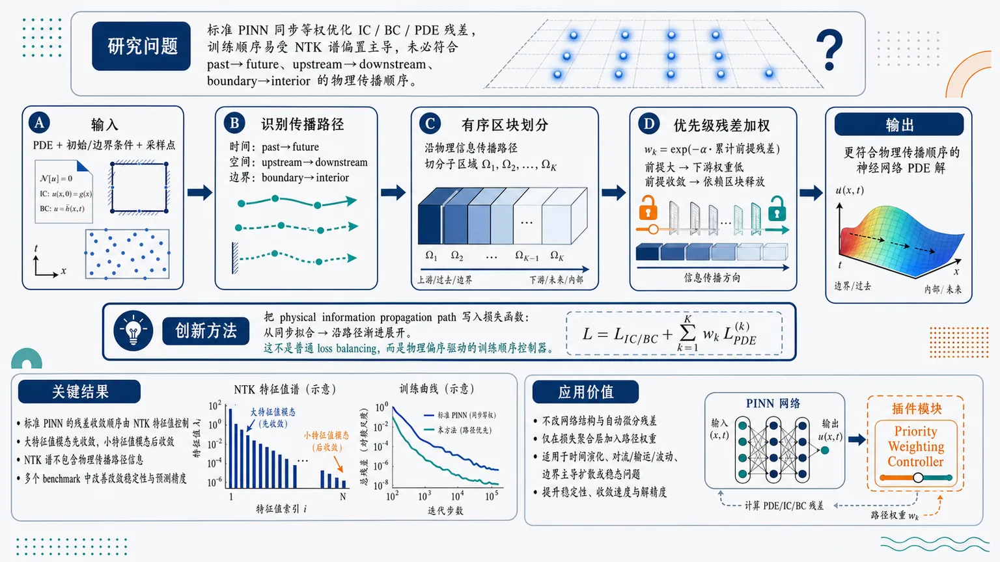
研究问题标准 PINN 把初始条件、边界条件和所有 PDE 残差像一张“同时点亮的网格”一样等权同步优化，但许多 PDE 的解实际沿物理信息传播路径逐步形成：时间上过去决定未来，空间上上游影响下游，边界约束从边界向内部传递。核心问题是：PINN 的训练顺序如何与“源头区域先学、依赖区域后学”的物理传播顺序一致，而不是被网络自身的谱偏置随机主导。创新方法提出基于 physical information propagation path 的统一残差加权框架：先把计算域沿传播路径切成有序区块，再用负指数权重把“前提区域残差”变成后续区域的训练闸门。当前提残差大时，下游/未来/内部区域权重被指数压低；当前提残差下降后，后续区域权重自动释放。Aha 点在于：它不是普通 loss balancing，而是把物理传播偏序直接写进损失函数，使训练从“同步拟合”变成“沿路径渐进展开”。同时用 NTK 解释标准 PINN 的学习顺序由核特征值决定，并提出方向兼容性系数判断多维优先级能否乘法耦合。工作流程输入 PDE、初始/边界条件和采样点；识别物理信息传播路径，如 past→future、upstream→downstream、boundary→interior；沿路径将时间、空间或边界法向划分为有序子区域；分别计算每个区块的 PDE 残差；用前面所有前提区块的累计残差生成负指数权重；将加权残差汇入 PINN 总损失；训练过程中前提区块先主导优化，残差降低后依赖区块逐步释放；输出更符合物理传播顺序的神经网络 PDE 解。关键结果理论上证明标准 PINN 的残差收敛顺序由 NTK 谱控制：大特征值模态先收敛，小特征值模态后收敛，而 NTK 谱由网络结构和配点几何决定，不包含物理传播路径信息，因此不会主动保证“前提先于依赖”。论文声称多个 benchmark 中，该优先级加权方法能稳定改善收敛行为和预测精度，尤其适合传播路径清晰或边界约束主导的问题；但给定内容未提供具体误差数值、样本量或显著性统计。应用价值该方法不改网络结构，不改自动微分残差计算，只在损失聚合层增加传播路径权重，可像一个“训练顺序控制器”嵌入现有 PINN。它适用于时间演化问题、对流/输运/波动中的上游—下游传播问题，以及扩散或稳态问题中的边界—内部约束传递，有助于提升 PINN 在物理传播方向明确场景下的稳定性、收敛速度和解精度。第一部分：核心概览 (Overview)
该研究提出一种面向 PINNs 的统一残差加权框架，将时间因果、空间上游—下游传播、边界—内部约束传递统一为 physical information propagation path 上的训练优先级。核心贡献在于用 NTK training dynamics 解释标准 PINN 的同步优化为何无法保证“前提区域先学、依赖区域后学”，并通过 negative-exponential residual weights 将物理传播顺序注入损失函数。其地位在于把已有时间因果 PINN 扩展为多维训练优先级理论框架。
---
第二部分：结构化快速回顾
《Multi-dimensional training-priority weighting based on physical information propagation paths: a unified residual-weighting framework for physics-informed neural networks》（None，）
背景 / 标准 PINN 将 PDE 残差、初始条件、边界条件统一放入损失函数，但默认所有区域和约束可同步优化；这一假设与许多 PDE 中物理信息沿时间、空间或边界逐步传播的结构不一致。
方法 / 定义 physical information propagation path 上的训练优先级：前提区域应先于依赖区域学习。使用 NTK 分析标准 PINN 的残差收敛顺序由核谱决定，而非物理传播路径。随后构造按传播路径分块的 negative-exponential residual weighting，并提出多维耦合中的 directional compatibility coefficient。
结果 / 给定内容声称多个 benchmark 显示该方法可改善收敛行为和预测精度，尤其适用于具有清晰传播路径或约束主导结构的问题；但未提供具体实验章节、误差数值、样本量或统计显著性。
讨论 / 方法不改变网络结构，也不改变自动微分计算残差方式，只作用于损失聚合层，因此可作为通用 PINN 训练机制嵌入现有框架。
局限 / 对椭圆型或强全局耦合问题，空间中不存在唯一传播方向，严格因果关系难以定义；同轴反向优先级不能直接乘法耦合。
结论 / 训练优先级应与物理信息传播路径一致；标准 PINN 不保证这一点；残差加权可将传播顺序转化为优化顺序，形成时间、空间、边界统一的 PINN 训练优先级框架。
---
第三部分：逐章节冷凝解析 (Section-by-Section Condensing)
Abstract
- Core problem: synchronous optimization conflicts with progressive physical formation
标准 PINNs 的核心缺陷被定位为同步优化机制：不同区域、不同约束的残差被平行且等权处理，而许多 PDE 解的形成是沿物理信息路径由源到响应逐步展开。摘要直接指出：*"their synchronous optimization mechanism treats the residuals of different regions and different constraints with equal weight and in parallel"*，这种机制与 *"the process by which the solution forms progressively “from source to response” along the physical information propagation path"* 不一致，从而导致训练稳定性和解精度下降，即 *"thereby degrading training stability and solution accuracy"*。
- Unified priority generalizes temporal causality to spatial and boundary dimensions
已有因果训练主要集中在时间维度，缺少对空间和边界维度的统一刻画。核心概念是：沿 PDE’s physical information propagation path，前提区域优先于依赖区域学习。摘要给出统一原则：*"premise regions should be learned before the regions that depend on them"*，并进一步说明 *"the temporal, spatial, and boundary priorities are precisely instances of this principle on different propagation paths"*。
- NTK analysis explains why standard PINN lacks propagation-order awareness
理论分析基于 neural tangent kernel (NTK) training dynamics。标准 PINN 的残差收敛顺序由 NTK spectrum 控制，而不是由物理传播路径控制。摘要中的关键判断是：*"its residual convergence order is governed by the NTK spectrum and is independent of the propagation path"*；同时，spectral bias 不会主动偏向前提区域，即 *"the spectral bias does not actively favor premise regions"*。
- Negative-exponential residual weights convert propagation order into loss-level priority
方法通过按传播路径有序划分区域，并构造 negative-exponential residual weights，把物理传播顺序转化为损失函数层面的训练优先级。摘要明确表述为：*"by partitioning the domain in order along the propagation path and constructing negative-exponential residual weights, converts the physical propagation order into a training priority at the loss level"*。
- Directional compatibility coefficient defines coupling boundary
多个优先级共存时，并非所有方向都可直接耦合。摘要提出 directional compatibility coefficient，并给出适用边界：*"orthogonal directions can be coupled multiplicatively in synergy, whereas coaxial opposite directions cannot"*。这一定义将多维残差加权从经验组合推进到方向兼容性约束。
- Claimed benchmark performance without architectural modification
摘要声称多个 benchmark 上方法稳定提升 PINN 的收敛和精度，尤其适合具有明确传播路径或约束主导结构的问题。原句为：*"Multiple benchmark cases show that the proposed method consistently improves the convergence behavior and prediction accuracy of PINNs on problems with a clear propagation path or a constraint-dominated structure"*。同时方法不改变网络架构，计算成本可控：*"without modifying the network architecture and with controllable additional computational cost"*。
---
1 Introduction
- PINNs are positioned as a mesh-free scientific-computing paradigm
Physics-informed neural networks 被界定为近年来用于求解 partial differential equations (PDEs) 的新兴科学计算范式。引言开头指出：*"Physics-informed neural networks (PINNs), an emerging scientific-computing paradigm, have shown broad application prospects in solving partial differential equations (PDEs) in recent years"*。其核心优势在于将 PDE、初始条件、边界条件统一嵌入一个损失函数，避免传统数值方法中的网格和离散格式构造：*"embed the PDE, the initial condition, and the boundary conditions uniformly into a single loss function"*，并 *"avoiding the complex mesh generation and discretization-scheme construction required by traditional numerical methods"*。
- Unified loss implies a strong synchronous-optimization assumption
PINN 的统一损失形式隐含一个关键假设：所有物理约束、所有空间/时间区域可并行同步优化。引言明确指出：*"this unified loss form also implies an important assumption: that all physical constraints and all regions can be optimized synchronously and in parallel during training"*。对于简单问题这一假设通常可接受，但对具有明显时间推进、空间输运或边界主导特征的 PDE，该同步机制可能偏离真实解形成过程：*"such synchronous optimization may not conform to the process by which the solution forms progressively along the physical information propagation path"*。
- Existing PINN improvements do not fundamentally answer training-order consistency
既有工作主要通过 network-architecture design、loss-balancing strategies、domain decomposition and sequential learning、adaptive weighting or sampling 改善训练。引言列举为：*"network-architecture design, loss-balancing strategies, domain decomposition and sequential learning, and adaptive weighting or sampling"*。这些方法可缓解梯度不平衡、局部欠采样、复杂区域拟合不足等问题，即 *"alleviate problems such as gradient imbalance, local under-sampling, and insufficient fitting in complex regions"*；但仍保留同步优化前提，无法回答更基本问题：*"should the training order of a PINN be consistent with the propagation path of physical information in the PDE?"*
- Temporal causal PINNs are important but dimensionally incomplete
Wang 等提出的 temporally causal PINN 通过时间分块残差的负指数权重显式施加 past → future 训练顺序。引言表述为：*"by imposing negative-exponential weights on time-blocked residuals, explicitly enforces the “past → future” training order"*。后续已有一系列时间维度因果建模工作，但其限制在于：*"Existing causal training methods focus mainly on the temporal dimension and lack a unified characterization of the spatial and boundary dimensions"*。
- Physical propagation order also exists in space and boundary constraints
论文将上风格式作为空间传播优先级的物理类比：*"Take the upwind scheme in computational fluid dynamics as an example: by preferentially using upstream information for discretization"*，体现 *"the discretization process should be consistent with the direction of information propagation"*。在对流、输运、波动问题中，信息沿特征方向传播；在边界主导扩散或稳态问题中，边界条件作为约束源向内部传递信息：*"boundary conditions act as constraint sources that transmit information from the boundary to the interior"*。
- Training priority replaces overstrict causality for broader PDE classes
对椭圆型或强全局耦合问题，严格空间因果并不成立。引言谨慎限定概念：*"calling the above mechanism “causal” is not strictly accurate"*，因为 *"for elliptic or strongly globally coupled problems, the solution has no unique propagation direction in space, and a strict causal relationship is difficult to define"*。因此使用 training priorities based on the physical information propagation path，避免因果概念过度外推。
- Main theoretical claim: standard PINN does not actively obey priority
引言提出一个核心否定结论：标准 PINN 不会主动遵守物理传播路径优先级。原因是：*"the residual convergence order of the standard PINN is governed by the NTK spectrum and is independent of the propagation path"*，且 *"the spectral bias does not actively favor premise regions"*。因此标准 PINN 不建立明确的前提—依赖收敛顺序。
- Main methodological contribution: unified multi-dimensional priority weighting
方法把时间推进、空间传播、边界约束传递统一解释为训练优先级，并通过有序分块与负指数残差权重实现。引言表述为：*"interprets the temporal advancement, spatial propagation, and boundary-constraint transmission in a PDE uniformly as training priorities"*，并通过 *"ordered partitioning and negative-exponential residual weights"* 使 PINN 按 *"earlier regions are satisfied first, later regions are then released"* 的方式渐进学习。
- Three stated contributions
三项贡献分别为：第一，用 NTK training dynamics 分析标准 PINN 偏离物理传播顺序的机制：*"using NTK training dynamics, we show that the standard PINN does not actively obey this priority"*。第二，提出统一多维优先级加权框架，将训练优先级从时间扩展到空间和边界：*"systematically extends the training priority from the temporal dimension to the spatial and boundary dimensions"*。第三，提出方向兼容性准则：*"clarifying the applicability boundary of “orthogonal synergy, coaxial-opposite failure” in coupling"*。
---
2 Training Priority Based on Physical Information Propagation Path and Its Violation by the Standard PINN
- Section-level purpose: define priority and prove standard PINN lacks it
第二章承担两个任务：定义基于 physical information propagation path 的统一训练优先级，并用 NTK training dynamics 分析标准 PINN 为什么不主动满足该优先级。章节标题本身给出逻辑结构：*"Training Priority Based on Physical Information Propagation Path and Its Violation by the Standard PINN"*。其中“violation”并非指所有具体问题中必然反向学习，而是指标准机制没有保证传播路径一致性的结构。
---
2.1 Priorities Based on the Physical Information Propagation Path
- Physical information propagation path is a directional transmission structure
PDE 描述的物理系统中，任一区域的解不是孤立确定，而是由控制方程和定解条件沿特定路径传递的信息共同决定。原文定义基础为：*"the solution in any region is not determined in isolation; rather, it is determined by information transmitted from other regions along a specific path by the governing equation and the definite-solution conditions"*。该方向性信息传递结构被称为 physical information propagation path，记为 𝒫：*"We refer to this directional information-transmission structure, determined by the physical mechanism, as the physical information propagation path, denoted 𝒫"*。
- Priority is formalized as a partial order over subregions
沿传播路径 𝒫，计算域被有序划分为子区域 (Dₘₘ₌₁M)。若 (Dᵢ) 向 (Dⱼ) 传递信息，且 (Dⱼ) 的解依赖 (Dᵢ) 而 (Dᵢ) 不依赖 (Dⱼ)，则 (Dᵢ) 是 (Dⱼ) 的前提区域，记为 (Dᵢ precP Dⱼ)。原文给出：*"If region (Dᵢ) transmits information along 𝒫 to (Dⱼ)—that is, the solution of (Dⱼ) depends on information from (Dᵢ) while (Dᵢ) does not depend on (Dⱼ)—then (Dᵢ) is called a premise region of (Dⱼ)"*。
- Training priority means premise regions should be learned first
优先级原则是：前提区域先于依赖区域被确定，解从 source 到 response 沿 𝒫 推进。原文定义为：*"premise regions should be determined before their dependent regions, and the solution process advances progressively from “source” to “response” along 𝒫"*。因此训练中前提区域应获得更高优先级：*"premise regions should have a higher priority during learning"*。
- Priority is physical, not algorithm-specific
该优先级由 PDE 类型和定解条件决定，与具体数值算法或学习算法无关。原文强调：*"This priority is determined by the type of PDE and the definite-solution conditions and is independent of any specific solution algorithm"*。这使训练优先级成为物理问题结构的一部分，而不是某个优化器或网络结构的经验技巧。
- Temporal priority corresponds to past-before-future
对演化型 PDE (uₜ₌N[u])，系统状态沿时间单向演化，后续状态由早期状态经方程推进得到。原文表述：*"the system state evolves unidirectionally in time"*，且 *"information propagates along the time axis from the past to the future"*。因此较早时间区域是较晚时间区域的前提，优先级为 past ≺ future：*"earlier time regions are the premises of later time regions, and the priority is “past ≺ future.”"*
- Spatial priority corresponds to upstream-before-downstream
对对流主导或双曲型问题，若信息沿空间某一特征方向占主导，可近似视为单向传播。上风格式体现这一原则：*"using only upstream information for discretization is precisely the embodiment of the rule that “information propagates from upstream to downstream along the flow direction”"*。因此上游区域是下游区域的前提，优先级为 upstream ≺ downstream：*"upstream regions are the premises of downstream regions, and the priority is “upstream ≺ downstream.”"*
- Boundary priority corresponds to boundary-before-interior
对扩散型或稳态问题，空间内部通常没有明确单向传播方向，解的形成主要由边界条件支配。边界条件作为约束源，先约束边界邻域，再层层传向内部。原文为：*"the formation of the solution is mainly dominated by the boundary conditions"*，并且 *"boundary conditions first constrain the solution shape in the boundary neighborhood and then transmit constraint information layer by layer toward the interior"*。因此优先级为 boundary ≺ interior：*"regions near the boundary are the premises of interior regions, and the priority is “boundary ≺ interior.”"*
- Temporal, spatial, and boundary priorities are one principle on different paths
三种优先级不是相互独立的概念，而是同一传播路径优先原则的不同实例。原文总结：*"The three dimensions above are not mutually independent concepts but instances of the same principle on different propagation paths"*。对于任意 PDE，𝒫 在区域上诱导偏序 (precP)，优先级总是从前提指向依赖：*"the priority always points from premise to dependent along 𝒫"*。
---
2.2 The Standard PINN and Its Synchronous-Optimization Assumption
- Standard PINN approximates the PDE solution by a parameterized neural network
给定时空 PDE：
[
uₜ₊N[u]=0,quad tin[0,T], xinØmega;quad u(0,x)=g(x);quadB[u]=0
]
其中 (N[ḑot]) 是线性或非线性微分算子，(B[ḑot]) 是边界算子。未知解 (u(t,x)) 由神经网络 (uθ(t,x)) 近似。原文写明：*"the unknown solution (u(t,x)) is approximated by a parameterized neural network (uθ(t,x))"*。
- Composite loss combines initial, boundary, and PDE residual terms
标准 PINN 损失为：
[
L(θ)=łambdaᵢcLᵢc(θ)+łambdabcLbc(θ)+łambdaᵣLᵣ₍θ)
]
其中 (łambdaᵢc,łambdabc,łambdaᵣ) 用于平衡初始条件、边界条件和 PDE 残差。原文指出：*"The weights (łambdaᵢc,łambdabc,łambdaᵣ) are used to balance the various constraints"*。导数通过自动微分计算：*"the required derivatives are computed by automatic differentiation"*。
- Interior residual is averaged equally over all collocation points
PDE 残差损失为：
[
Lᵣ₍θ)=frac1Nᵣsumᵢ₌₁Nᵣłeft|fracpartial uθpartial t(tᵣⁱ,xᵣⁱ⁾⁺N[uθ](tᵣⁱ,xᵣⁱ⁾ⁱ̊ght|²
]
这里所有采样点残差以均方形式等权聚合。原文强调：*"aggregates the residuals at the individual sampling points with equal weight"*。
- The standard objective is agnostic to propagation-path priority
标准 PINN 的损失函数同步求和初始、边界、内部残差，并固定权重处理；它没有包含物理传播路径结构。原文指出：*"the composite loss sums the initial, boundary, and interior residuals synchronously with fixed weights"*。这种形式隐含假设：*"all physical constraints and all spatial and temporal regions can be optimized simultaneously and equivalently"*。
- Premise and dependent regions are treated alike
标准 PINN 既不区分前提区域和依赖区域，也没有“先满足前提、再求解依赖”的机制。原文表述为：*"it treats premise regions and dependent regions alike"*，并且 *"neither distinguishing their different roles in the formation of the solution nor possessing a mechanism of “satisfy the premise first, then solve the dependent.”"*。
- Conceptual agnosticism is separated from dynamic violation
第二节只说明标准 PINN 目标函数在结构上对优先级无感，并不直接证明训练动态必然偏离传播路径。原文谨慎说明：*"this conceptual “agnosticism” only indicates that the standard PINN does not actively obey the priority; it is not yet sufficient to assert that its training will actually deviate from the priority"*。真正的训练动态结论留给 NTK spectral analysis。
---
2.3 Violation of the Unified Priority by the Standard PINN: An NTK Training-Dynamics Analysis
- Analysis isolates the PDE residual to focus on priority
为突出优先级问题，分析首先只保留 PDE 残差项：
[
L(θ)=frac1Nsumᵢ₌₁Nrᵢ²⁽θ)
]
其中
[
rᵢ₍θ)=fracpartial u_θpartial t(zᵢ₎₊N[u_θ](zᵢ₎
]
(zᵢ₌₍ₜᵢ,xᵢ₎)。原文说明：*"To focus on the priority issue, we first retain only the PDE residual term"*。
- Shared parameters couple all residuals during optimization
损失梯度为：
[
nabla_θL(θ)=frac2Nsumᵢ₌₁Nrᵢ₍θ)nabla_θ rᵢ₍θ)
]
因为 PINN 在所有采样点共享同一参数 (θ)，更新方向由所有点的残差梯度共同决定。原文指出：*"Since the PINN shares a single set of parameters θ across all sampling points, the update direction is jointly determined by the residual-gradient terms of all sampling points"*。
- Residual NTK quantifies cross-point influence
残差的 neural tangent kernel 定义为：
[
Θ(zᵢ,zⱼ₎₌łanglenabla_θ rᵢ₍θ),nabla_θ rⱼ₍θ)ångle
]
原文给出：*"we introduce the neural tangent kernel (NTK) of the residuals"*。该核度量任意两个采样点残差梯度的内积，从而描述一个点的残差更新如何受其他点影响。
- Gradient flow makes each residual depend on all residuals
在梯度流 (dotθ=-nabla_θL) 下，第 (i) 个残差演化为：
[
fracdrᵢdt=-frac2Nsumⱼ₌₁NΘ(zᵢ,zⱼ₎ᵣⱼ
]
原文直接说明：*"the evolution of the residual at the i-th point is"* 该公式。由于非对角项通常非零，前提区域的残差演化会受到依赖区域残差影响：*"the residual evolution of a premise region is not independent of its dependent region"*。
- Off-diagonal NTK terms prevent independent premise-first learning
既有研究显示 (Θ(zᵢ,zⱼ₎) 的非对角项通常非零，即 (i≠ j) 时跨点耦合存在。原文为：*"the off-diagonal terms (Θ(zᵢ,zⱼ₎) ((i≠ j)) are generally nonzero"*。因此 (drᵢ/dt) 依赖所有点的残差，包括传播路径更下游的依赖区域：*"including those in the dependent region (Dⱼ) that lies further along the propagation path"*。
- NTK matrix form reveals spectrum-controlled convergence
将残差堆叠为 (r=[r₁,łdots,r_N]^→p)，演化方程为：
[
fracdrdt=-frac2NKr
]
其中 (K=[Θ(zᵢ,zⱼ₎]) 是 PINN 的 NTK 矩阵且半正定。原文写明：*"(K) is the neural tangent kernel matrix of the PINN and is positive semi-definite"*。
- Lazy-training limit makes residual dynamics linear
当网络宽度趋于无穷，(K) 以概率收敛到确定性核 (K^ast)，并在训练中近似不变：
[
łimwᵢdₜₕᵢ̊gₕₜₐᵣᵣₒwᵢₙfₜysupₜᵢₙ[₀,T]|K(t)-K(0)|₂₌₀
]
原文称这导致 lazy training：*"giving rise to lazy training"*。在该极限下，残差演化成为线性常微分方程：*"In this limit, (2.9) is a linear ordinary differential equation"*。
- Eigenmodes decay exponentially at rates proportional to NTK eigenvalues
对 (Kast) 作谱分解：
[
Kast=QŁambdaQ→p
]
(Łambda=øperatornamediag(łambda₁,łdots,łambda_N))，残差在特征基下满足：
[
widetilderᵢ₍ₜ₎₌widetilderᵢ₍₀₎expłeft(-frac2Nłambdaᵢ ti̊ght)
]
原文总结为：*"each residual mode of the standard PINN decays at a rate proportional to its NTK eigenvalue"*。大特征值模态优先收敛，小特征值模态显著滞后：*"modes with large eigenvalues converge preferentially, whereas modes with small eigenvalues have their convergence markedly delayed"*。
- Effective training priority is spectral, not physical
标准 PINN 的实际学习顺序完全由 NTK spectrum 决定。原文明确指出：*"The convergence order of the standard PINN is therefore governed entirely by the NTK spectrum"*。区域若对应更大的有效特征值，就获得更高网络注意和更早学习：*"the larger the NTK eigenvalue of a region, the more attention the network pays to that region during training and the earlier and more thoroughly it is learned"*。
- NTK spectrum contains no propagation-path structure
NTK 由网络架构和配点几何共同决定，不包含物理传播路径的结构信息。原文为：*"the NTK kernel that determines the convergence order is jointly determined by the network architecture and the collocation geometry"*，且 *"contains no structural information about the physical information propagation path"*。因此谱本身不会区分前提与依赖，也不会自然赋予前提区域更大特征值：*"neither distinguishes which regions are premises and which are dependents, nor possesses any mechanism that would naturally endow premise regions with larger eigenvalues"*。
- The claim is mechanism-level, not problem-specific eigenvalue ordering
该分析不声称依赖区域的特征值一定大于前提区域，也不声称各区域特征值必然不同。原文强调：*"this section does not assert that the eigenvalues of the later (dependent) regions must be larger than, or must differ from, those of the earlier (premise) regions"*。结论是机制层面的：标准 PINN 无保证传播方向一致训练的机制，具体谱分布取决于问题、网络和配点。
- Remedy: priority weights reshape the NTK spectrum
第三章的补救方向是沿物理传播路径引入有序权重 (W)，通过重塑 NTK 谱使前提区域获得更大的有效特征值。原文预告：*"Section 3 will inject ordered priority weights (W) into the regions along the physical information propagation path and, by reshaping the NTK spectrum so that premise regions obtain larger effective eigenvalues, restore the directionality of training"*。
---
3 Priority-Weighting Method Based on the Physical Information Propagation Path
- Priority is implemented as loss-level residual weighting
第三章将第二章定义的传播路径优先级显式实现为损失层残差加权。核心机制是：前提区域残差决定后续依赖区域的权重，只有当前提区域充分拟合后，依赖区域残差才逐渐主导总损失。原文表述为：*"the residuals of the premise regions determine the weights of the subsequent dependent regions"*，并且 *"only after the premise regions have been sufficiently fitted do the residuals of the dependent regions dominate the total loss"*。
- Architecture and automatic differentiation remain unchanged
该方法不改变神经网络结构，也不改变残差通过自动微分计算的方式，只作用于损失聚合层。原文明确：*"This weighting does not change the network architecture or the way the residuals are computed by automatic differentiation; it acts only on the loss-aggregation layer"*。这使其可作为外接式训练策略集成到现有 PINN 框架。
- Progressive learning follows source-to-response propagation
权重设计使优化从物理传播路径的源头向响应端推进。原文概括：*"the optimization advances progressively from source to response along the physical information propagation path 𝒫"*。图 1 的说明进一步强调：*"the training advances progressively from the earlier regions to the later regions along the propagation path"*。
---
3.1 Single-Dimensional Priority-Weighting Algorithm
- Domain is ordered from premise to dependent
沿传播路径 𝒫，计算域被划分为有序子区域 (Dₘₘ₌₁M)，索引 (m) 沿从前提到依赖方向递增。原文说明：*"the computational domain is partitioned in order into subregions (Dₘₘ₌₁M) ((m) increases from premise to dependent along 𝒫)"*。
- Composite loss incorporates subregion weights
加权后的损失为：
[
L(θ)=łambdaᵢcsumᵢLᵢc(θ)+łambdabcsumᵢLbc(θ)+łambdaᵣsumₘ₌₁MømegaₘLₘ₍θ)
]
其中每个子区域残差为：
[
Lₘ₍θ)=frac1Nₘsumz_ᵢᵢₙ D_ₘ|rθ(zᵢ₎|²
]
原文定义：*"Before the PDE residuals enter the total loss, priority weights (ømegaₘ) are introduced"*。
- Negative-exponential weight depends on cumulative premise residuals
子区域 (Dₘ) 的权重为：
[
ømegaₘ₌expłeft(-ǎrepsilonsumDₖₚᵣₑcPDₘLₖ₍θ)i̊ght)
]
其中 (ǎrepsilon>0) 控制权重衰减强度。原文说明：*"The priority weight is constructed from the cumulative residual of all premise regions of that region"*，且 *"(ǎrepsilon>0) controls the strength of the weight decay"*。
- Large premise residual suppresses dependent regions
当前提区域残差大时，依赖区域权重 (ømegaₘ) 被指数压低；当前提残差下降后，(ømegaₘ→1)，依赖区域被释放。原文解释为：*"when the residual of a premise region is large, (ømegaₘ) is suppressed and the subsequent regions are inhibited"*；随后 *"as the premises are progressively satisfied and the cumulative residual becomes small, (ømegaₘ→1) and the weights of the subsequent regions are released accordingly"*。
- Unified single-dimensional weighted residual
单维优先级加权残差写为：
[
Lc(θ)=frac1Msumₘ₌₁MømegaₘLₘ₍θ)
]
该形式适用于时间、空间、边界三类传播路径，差异仅在前提关系 (precP) 的定义。原文指出：*"The three dimensions differ only in the form of the premise relation (precP)"*。
- Temporal weighting partitions time into ordered intervals
时间维度中，([0,T]) 被划分为 (Mₜ) 个有序子区间 (Iₘ)，时间块残差为：
[
Lₜ,ₘ(θ)=frac1Nₜ,ₘsum₍ₜ_ᵢ,ₓ_ᵢ₎ᵢₙ I_ₘ×Øₘₑgₐ|r_θ(tᵢ,xᵢ₎|²
]
权重为：
[
ømegaₜ,ₘ=expłeft(-ǎrepsilonₜsumₖ₌₁m⁻¹Lₜ,ₖ(θ)i̊ght)
]
原文标注为 Temporal causality (past ≺ future)，并说明：*"the time domain is partitioned into ordered subintervals"*。
- Spatial weighting partitions along dominant propagation direction
空间维度中，(Ømega) 沿主导传播方向划分为 (Mₛ) 个空间块 (Ømegaₘ)。残差与权重为：
[
Lₛ,ₘ(θ)=frac1Nₛ,ₘsum₍ₜ_ᵢ,ₓ_ᵢ₎ᵢₙ[₀,T]×Øₘₑgₐ_ₘ|r_θ(tᵢ,xᵢ₎|²
]
[
ømegaₛ,ₘ=expłeft(-ǎrepsilonₛsumₖ₌₁m⁻¹Lₛ,ₖ(θ)i̊ght)
]
原文标注为 Spatial causality (upstream ≺ downstream)，并说明：*"the spatial domain is partitioned along the dominant propagation direction"*。
- Single-direction weighting encodes source-to-response release
时间和单向空间传播共享同一机制：较早/上游区域先收敛，较晚/下游区域后释放。原文总结：*"Both encode the single-direction transmission order of “from source to response” into the loss aggregation"*，从而 *"making the upstream/early regions converge preferentially and the downstream/late regions be released thereafter"*。
- Boundary weighting may require both-sides-toward-the-middle partitioning
当边界约束存在于两端时，两端边界均为约束源，信息同时从两侧向中间传递。原文说明：*"boundary constraints usually exist simultaneously at both ends along the boundary normal"*，且 *"information is transmitted from the two boundaries toward the middle simultaneously"*。此时若强行用单线性序列排序，会错误地把一侧边界当作最后依赖区域：*"one side’s boundary would be erroneously treated as the “last dependent”"*。
- Coaxial opposite boundary priorities cannot be multiplicatively coupled
双边界同一法向上的反向优先级属于 coaxial-opposite conflict，即 (h̊o=-1)，不能直接乘法耦合。原文指出：*"if one forced both boundaries to serve simultaneously as premises and applied multiplicative coupling to the same normal, the two mutually opposite priorities would fall into the coaxial-opposite conflict ((h̊o=-1))"*。
- Two-sided boundary strategy splits the domain at the midline
解决方案是沿边界法向将计算域在中线处分成两个子区域：
[
Ømega=Ømega₁ᵤ̧pØmega₂
]
每个子区域由相邻边界主导，并从边界指向中线施加单向加权：
[
Lcb(θ)=frac1M₁sumₘ₌₁M₁ømega₁,ₘL₁,ₘ(θ)+frac1M₂sumₘ₌₁M₂ømega₂,ₘL₂,ₘ(θ)
]
原文为：*"the computational domain is divided at the midline into two subregions (Ømega=Ømega₁ᵤ̧pØmega₂), each dominated by its adjacent boundary"*。
- Equivalent ordering by distance to nearest boundary
另一种等价实现是按“到最近边界距离”统一排序，越靠近边界的块越优先。原文表述：*"Equivalently, the whole domain can be ordered uniformly by “distance to the nearest boundary,” taking the block closer to a boundary as the premise"*。这一策略保持 boundary → interior 主导关系，同时避免同轴反向冲突：*"avoiding coaxial-direction conflict while simultaneously maintaining the dominant “boundary → interior” relation on both sides"*。
---
3.2 Directional Compatibility Coefficient and Multi-Dimensional Coupling
- Multiple physical propagation paths may coexist
实际 PDE 问题常同时包含多个信息传播路径，例如时间推进、空间输运、边界约束传递。原文开头指出：*"Practical PDE problems often contain multiple physical information propagation paths simultaneously"*。因此需要多维优先级耦合机制，而不只是单一方向加权。
- Independent priorities are coupled multiplicatively
当多个传播路径相互独立时，采用可分离乘法耦合。若耦合集合为 (C)，第 (q) 个方向的权重为 (ømega_q)，复合权重为：
[
ømegaₘᵤₗₜᵢ=prodqᵢₙ Cømega_q
]
原文说明：*"When multiple propagation paths are mutually independent, a separable multiplicative coupling is adopted"*。
- Temporal, spatial, and boundary weights can multiply when compatible
对同时包含时间推进、空间传播、边界约束传递的问题，复合权重为：
[
ømegaₘᵤₗₜᵢ=ømegaₜømegaₛømega_b
]
原文写明：*"For a problem that simultaneously contains temporal advancement, spatial propagation, and boundary-constraint transmission, (ømegaₘᵤₗₜᵢ=ømegaₜømegaₛømega_b)"*。
- Multiplicative weight means all preconditions must be satisfied
乘法耦合的物理含义是：一个区域只有在所有相关方向的前提依赖都被满足时，才获得较高训练优先级。原文解释为：*"This product form can be understood as “multiple preconditions satisfied simultaneously”"*，并进一步说明：*"a region obtains a high training priority only when the premise dependencies in all relevant directions are satisfied"*。
- Multi-dimensional residual averages over multi-index blocks
多维优先级加权残差为：
[
Lₘᵤₗₜᵢc(θ)=frac1|M|sumₘᵢₙ MømegaₘLₘ₍θ)
]
其中 (m) 是多维块索引，(ømegaₘ) 来自各单维权重乘积。原文说明：*"where (m) is the multi-dimensional block index and (ømegaₘ) is obtained from the product of the single-dimensional weights"*。
- Algorithm 1 implements nested directional partitioning
Algorithm 1 以 (y) 方向和 (x) 方向为例：先按 (y) 的依赖顺序划分为 (K_y) 块，计算每块总残差 (łambdayᵢ)，再用
[
wyᵢ=exp(-ϵsumⱼ₌₀ⁱ⁻¹łambdayⱼ)
]
计算 (y) 方向权重；随后在每个 (y) 块内按 (x) 方向划分为 (Kₓ) 块，计算
[
wₓⱼ=exp(-ϵsumₖ₌₀j⁻¹łambdaₓₖ)
]
并相乘获得二维块权重。伪代码中的关键步骤为：*"Partition the points into (K_y) chunks based on (y) in dependence order"*，以及 *"Multiply (wyᵢ) by (wₓⱼ) to obtain (wₓ_ᵢ y_ᵢ)"*。
- Directional compatibility coefficient tests whether coupling is valid
两个优先级方向是否可乘法耦合取决于方向兼容性。设两个传输方向为 (d₁,d₂ᵢₙR^d)，定义：
[
h̊o(d₁,d₂₎₌d₁ḑotd₂ᵢₙ[-1,1]
]
原文表述：*"Whether multiplicative coupling is effective depends on whether the two priority directions involved in the coupling are compatible"*，并定义 *"directional compatibility coefficient"*。
- Direction means priority-order direction, not physical flux direction
这里的方向不是物理通量方向，而是优先级排序从起点到终点的方向。原文特别说明：*"here “direction” refers to the direction from the start to the end of the priority ordering, rather than the physical flux direction"*。这一限定很重要，因为流向、法向、约束传播方向在不同 PDE 中可能不完全等同。
- Compatibility is mostly classified by (h̊o=-1,0,1)
给定内容中表 1 开始列出兼容性分类，并说明大多数问题中 (h̊o) 取 (-1)、0 或 1。原文为：*"since in most problems (h̊o) is -1, 0, or 1, the case in which (h̊o) takes other values is not discussed for now"*。已给出的第一类是 Orthogonal-compatible：(h̊o=0)，含义为两个方向作用于不同坐标轴，表格片段写为：*"Orthogonal-compatible (h̊o=0) Two directions act on different coordinate axes"*。
- Available text ends before full compatibility table and experiments
给定内容在 Table 1 的第一行附近中断，未包含完整 (h̊o=1)、(h̊o=-1) 分类说明、Section 4 benchmark 细节、Section 5 结论全文、实验误差、训练轮数、网络宽度、采样点数、P 值或统计区间。因此不能从给定材料中提取实验样本量 (n)、精度数值、显著性检验或具体 benchmark 表格。
---
第四部分：深度理解与语言支持 (Understanding & Nuance)
1. 术语解析
- Physical information propagation path
学术含义：PDE 中物理信息从“源”到“响应”传递的方向性结构，不等同于简单空间坐标方向。它可以是时间轴、流动上游到下游方向、波的特征线方向、边界到内部的约束传递方向。原文定义为 *"directional information-transmission structure, determined by the physical mechanism"*。微妙之处在于它不是算法路径，而是由 PDE 类型和定解条件诱导的物理依赖路径。
- Training priority
学术含义：优化过程中不同区域残差被学习的先后倾向。这里不是硬性冻结后续区域，而是通过权重抑制后续区域残差，使前提区域先被优化。原文核心定义为 *"premise regions should be learned before the regions that depend on them"*。微妙之处在于 priority 比 causality 更弱、更通用，适合无法严格定义因果关系的 PDE。
- Premise region / dependent region
Premise region 是沿传播路径位于上游、过去或边界侧的区域；dependent region 是其解依赖前者的区域。原文形式化为 (DᵢprecPDⱼ)，即 *"the solution of (Dⱼ) depends on information from (Dᵢ) while (Dᵢ) does not depend on (Dⱼ)"*。微妙之处在于“premise”不是逻辑命题，而是物理解形成中的先决区域。
- Spectral bias
在神经网络训练中，某些特征模态因核谱或网络结构而更快学习。这里具体指 NTK 特征值大的残差模态衰减更快。原文指出 *"modes with large eigenvalues converge preferentially"*。微妙之处在于 spectral bias 不是物理偏置；它可能与物理传播路径一致，也可能完全无关。
- Directional compatibility coefficient
学术含义：判断多个优先级方向能否乘法耦合的方向相容性指标：
[
h̊o(d₁,d₂₎₌d₁ḑotd₂
]
原文说明 *"Whether multiplicative coupling is effective depends on whether the two priority directions involved in the coupling are compatible"*。微妙之处在于 (h̊o) 衡量的是优先级排序方向，而不是物理通量方向。
---
2. 疑难查证
- 为什么标准 PINN 的“等权同步优化”会破坏物理传播顺序？
标准 PINN 的损失函数把所有点的残差加总，优化器每一步都试图同时降低所有区域误差。由于所有点共享同一组神经网络参数，一个下游点的残差梯度会影响上游点的参数更新，反之亦然。NTK 方程
[
fracdrdt=-frac2NKr
]
表明残差不是逐点独立下降，而是由核矩阵整体耦合下降。谁先收敛取决于 (K) 的特征值，而不是物理上谁应先确定。因此，即便 PDE 物理上要求“过去决定未来”或“上游决定下游”，标准 PINN 也只是在数学优化上同步拟合所有点。
- 负指数权重为什么能产生“先学前提、后学依赖”？
权重
[
ømegaₘ₌expłeft(-ǎrepsilonsumDₖₚᵣₑcPDₘLₖᵢ̊ght)
]
具有门控效果。若前提区域残差很大，指数项中的负数很大，(ømegaₘ) 接近 0，依赖区域对总损失贡献很小；优化器主要被迫先降低前提区域残差。当前提残差变小，指数项趋近 0，(ømegaₘ→1)，依赖区域逐步进入训练主导阶段。这不是人工设定固定课程表，而是由前提区域残差动态控制的自适应释放机制。
- 为什么椭圆型或强全局耦合问题不宜称为严格 causal？
抛物型演化方程常有明确时间因果：过去状态决定未来状态。双曲型输运也可沿特征线定义传播方向。但椭圆型问题如 Poisson 方程通常具有全局耦合：内部任一点解受到整个边界共同影响，空间中不存在唯一“前方—后方”。因此使用 “causal” 容易暗示严格单向依赖，概念过强。使用 training priority 更稳妥：它只要求训练上优先满足某些约束源或前提区域，而不声称 PDE 存在严格因果链。
- 为什么正交方向可以乘法耦合，而同轴反向方向会冲突？
若一个优先级沿 (x) 方向，另一个沿 (y) 方向，它们作用于不同坐标轴，乘法权重表示同时满足两个独立前提，例如“先上游再下游”同时“先边界再内部”。若两个优先级位于同一轴但方向相反，例如左边界要求从左到右，右边界要求从右到左，直接乘法会让同一条轴上的排序同时要求 A 先于 B 和 B 先于 A，形成逻辑冲突。因此双边界问题需要分域或按最近边界距离排序，而不是简单同轴反向乘法。
---
第五部分：创新评估与关联 (Synthesis & Novelty)
1. 创新性判断
- 从 temporal causality 推广到 unified propagation-path priority
过去 2–5 年内，PINN 因果训练主要集中于时间维度，典型形式是时间分块负指数权重，确保 past → future。该研究的新颖性在于将这一思想抽象为 physical information propagation path 上的统一偏序，不再局限于时间，而是同时覆盖 temporal priority、spatial priority、boundary priority。这解决了已有 causal PINN 难以解释空间上游—下游传播和边界—内部约束传递的问题。
- 用 NTK 解释“为什么标准 PINN 不会自动遵守传播路径”
许多已有 PINN 加权方法关注梯度不平衡、损失尺度不一致或局部误差自适应采样，但较少从训练动力学证明标准 PINN 的学习顺序为何与物理传播顺序无关。这里通过
[
widetilderᵢ₍ₜ₎₌widetilderᵢ₍₀₎expłeft(-frac2Nłambdaᵢ ti̊ght)
]
说明残差模态收敛由 NTK eigenvalue 控制，而 NTK 谱由网络架构和配点几何决定，不包含物理传播路径信息。创新点在于将“训练优先级错位”提升为谱动力学问题。
- 将残差加权解释为重塑有效训练优先级，而非普通 loss balancing
传统 loss balancing 通常平衡不同损失项的数值尺度；该框架中的权重不是为了让各项大小相近，而是为了实现“前提残差未满足时抑制依赖区域”。负指数权重具有明确物理含义：将传播路径上的前提关系转化为损失层的动态门控。它解决的是“学习顺序”问题，不只是“损失幅值”问题。
- 提出 boundary priority 作为独立维度
以往 PINN 中边界条件通常只是损失项之一，或通过 hard constraint / soft constraint 强化；这里将边界视为 constraint source，提出 boundary ≺ interior 的训练优先级。这一处理尤其适合扩散型、稳态或边界主导问题，拓展了因果训练在非时间传播问题中的适用范围。
- 提出 directional compatibility coefficient 处理多维优先级冲突
多维加权不是简单把所有方向权重相乘。通过
[
h̊o(d₁,d₂₎₌d₁ḑotd₂
]
区分正交兼容与同轴反向冲突，给出“什么时候能乘法耦合、什么时候不能”的边界。这相对于经验式多权重组合更具理论约束，也能解释双边界向中间传播为何需要分域而非直接反向耦合。
- 解决的前人未充分解决的问题
该框架集中解决三个过去工作未充分统一的问题：
- 标准 PINN 同步优化与物理传播顺序不一致：已有方法多缓解训练困难，但未系统回答训练顺序是否应遵循物理传播路径。
- 时间因果 PINN 不能覆盖空间和边界优先级：已有 causal PINN 多处理 evolution-type PDE，缺少空间传播和边界约束传递的统一形式。
- 多方向优先级耦合缺少适用边界：简单乘法权重可能在同轴反向场景失败；方向兼容性系数提供了判别准则。
- 主要风险与待验证点
给定内容未包含完整实验数据，因此“consistently improves convergence behavior and prediction accuracy”的经验强度无法量化。关键待验证点包括：不同 PDE 类型上的误差下降幅度、训练成本增加比例、(ǎrepsilon) 敏感性、分块数 (M) 的鲁棒性、强全局耦合椭圆问题中的适用边界、以及 NTK 特征值是否确实被权重重塑为沿前提—依赖方向递减或优先收敛结构。
-
05
📄 摘要：在 RuO₂(101)/Pt/Co 异质结中观测到明显的非常规转矩，具有较大的面外分量和强晶体各向异性，支持 RuO₂ 存在磁性轨道霍尔效应，并表明轨道角动量可参与电流致磁化翻转。
💡 亮点：RuO₂ 被实验确认可产生磁性轨道霍尔效应，且转矩呈强晶向依赖和面外分量。说明交替磁体可成为轨道流驱动自旋操控的新平台。
📖 展开分析 + 配图
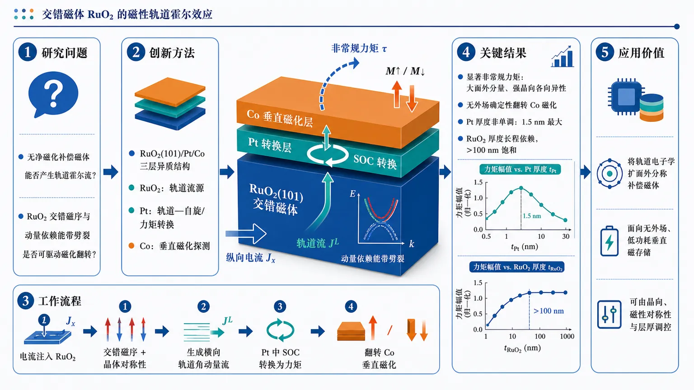
研究问题无净磁化的补偿磁性材料是否也能像非磁材料一样产生轨道霍尔流？具体聚焦 RuO₂ 交错磁体：其交错磁序和动量依赖能带劈裂能否产生可驱动磁化翻转的“磁性轨道霍尔效应”，并突破传统自旋流机制的解释框架。创新方法构建 RuO₂(101)/Pt/Co 三层异质结构：RuO₂ 作为交错磁体轨道流源，Pt 作为轨道—自旋/力矩转换层，Co 作为垂直磁化探测层。Aha 点在于：利用 RuO₂ 的交错磁序、交换诱导的动量依赖能带劈裂、晶场耦合和自旋—轨道耦合共同生成磁性轨道流，再由 Pt 转换成作用于 Co 的非常规力矩。工作流程输入纵向电流进入 RuO₂(101) 薄膜；RuO₂ 内部交错磁序和晶体对称性产生横向轨道角动量流；轨道流注入 Pt 层；Pt 中强自旋—轨道耦合将轨道流转换为力矩；力矩作用于 Co 垂直铁磁层；通过改变 Pt 厚度和 RuO₂ 厚度，观察力矩大小、晶向各向异性和无外场磁化翻转。关键结果RuO₂(101)/Pt/Co 中出现显著非常规力矩：具有大的面外分量、强晶体各向异性，并能在无外加磁场下确定性翻转垂直 Co 磁化。力矩随 Pt 厚度非单调变化，在 1.5 nm Pt 达到最大；随 RuO₂ 厚度呈长程依赖，并在 tRuO₂ > 100 nm 后饱和，这些特征难以由传统自旋霍尔或界面自旋流机制解释。应用价值证明交错磁体可作为内禀轨道流源，把轨道电子学从非磁材料扩展到对称补偿磁体。该机制为无外场、低功耗垂直磁存储和自旋—轨道—轨道耦合器件提供新材料平台，可用晶体方向、磁性对称性和层厚设计来调控磁化翻转。第一部分：核心概览 (Overview)
RuO₂ 作为交错磁体（altermagnet）被证明可在无净磁化补偿体系中产生磁性轨道霍尔效应（magnetic orbital Hall effect）。RuO₂(101)/Pt/Co 异质结构中出现大幅面外非常规力矩、强晶向各向异性、宽 RuO₂ 厚度范围内的无外场确定性翻转，且 Pt 与 RuO₂ 厚度依赖均不符合传统自旋流机制。该工作把轨道电子学（orbitronics）从非磁材料扩展到对称补偿磁体，并将交错磁体确立为内禀轨道流源。
---
第二部分：结构化快速回顾
《Magnetic Orbital Hall Effect in Altermagnet RuO₂》（None，）
背景
轨道角动量可作为电流诱导磁化翻转的新通道，区别于传统依赖自旋—轨道耦合（spin–orbit coupling）的自旋霍尔力矩。非磁材料中的轨道霍尔效应已有实验观察，但其在对称补偿磁性体系中的表现仍缺乏实验证据。
方法
构筑 RuO₂(101)/Pt/Co 异质结构，利用 RuO₂ 作为潜在轨道流源，Pt 作为轨道—自旋/力矩转换层，Co 作为具有垂直磁各向异性的铁磁探测层。通过改变 Pt 厚度与 RuO₂ 厚度，识别力矩来源及其输运长度尺度。
结果
观察到显著非常规力矩，核心特征包括：大的面外分量、强晶体各向异性、可在无外加磁场条件下实现垂直铁磁体确定性翻转。力矩随 Pt 厚度呈非单调变化，在 1.5 nm Pt 达到最大；随 RuO₂ 厚度呈长程依赖，并在 tRuO₂ > 100 nm 后饱和。
讨论
这些实验特征难以由传统自旋流机制解释。更合理的图像是：RuO₂ 中由交错磁序诱导的动量依赖能带劈裂，结合自旋—轨道耦合与晶场耦合，产生磁性轨道霍尔流；该轨道流进入 Pt 后转换为作用于 Co 的力矩。
局限
现有摘要信息未给出完整器件尺寸、测量几何、温度范围、电流密度、开关阈值、谐波霍尔提取公式、误差条、统计样本量、对照样品或第一性原理计算细节。机制解释仍需依赖完整数据与模型验证。
结论
RuO₂ 交错磁体可作为内禀轨道流源，并能驱动垂直铁磁体无外场翻转。该结果把轨道霍尔效应拓展到对称补偿磁性体系，为低功耗、自旋—轨道—轨道耦合器件提供新材料平台。
---
第三部分：逐章节冷凝解析 (Section-by-Section Condensing)
可核验材料仅包含 arXiv 页面中的 Abstract 与论文元数据；未提供 PDF 正文、引言、实验方法、结果图注、讨论、补充材料等完整章节。因此，严格可证据化解析只能覆盖可见原始标题 Abstract 及 arXiv 元数据。以下所有英文引文均来自所给内容。
---
Abstract
Orbital angular momentum offers a switching channel beyond conventional spin–orbit coupling
轨道角动量（orbital angular momentum）被定位为电流诱导磁化翻转的替代自由度，不再仅依赖传统自旋—轨道耦合产生的自旋流或自旋霍尔力矩。关键表述为：*"Orbital angular momentum provides an alternative channel for current-induced magnetization switching beyond conventional spin--orbit coupling."*
这一点直接对应当前轨道电子学的核心问题：电荷流不仅能通过自旋霍尔效应产生自旋角动量流，也可能通过轨道霍尔效应（orbital Hall effect, OHE）产生轨道角动量流，再经界面或重金属层转换为磁化力矩。
Orbital Hall effects had been observed in nonmagnetic materials, but not in symmetry-compensated magnetic systems
已有实验主要集中在非磁材料中的轨道霍尔效应，而对称补偿磁性体系（symmetry-compensated magnetic systems）中的轨道霍尔响应仍处于空白状态。关键句为：*"While orbital Hall effects have been observed in several nonmagnetic materials, their manifestation in symmetry-compensated magnetic systems remains unexplored."*
这里的“symmetry-compensated”强调体系宏观净磁矩可为零，但微观磁序并非普通非磁态；RuO₂ 作为交错磁体具备动量空间自旋劈裂与补偿磁序并存的特征，因此成为检验磁性轨道霍尔效应的理想平台。
RuO₂ is presented as the experimental platform for magnetic orbital Hall effect
核心实验结论是 RuO₂ 中存在磁性轨道霍尔效应（magnetic orbital Hall effect）的实验证据。摘要明确给出：*"Here, we report experimental evidence for a magnetic orbital Hall effect in RuO₂."*
“magnetic orbital Hall effect”并非普通非磁 OHE 的简单延伸，而是暗示轨道流的产生与磁性、交换劈裂或交错磁序有关；这一区分是该工作的概念创新点。
RuO₂(101)/Pt/Co heterostructures show pronounced unconventional torque
实验结构为 RuO₂(101)/Pt/Co 异质结构。该结构中观察到显著非常规力矩（unconventional torque），关键描述为：*"In RuO₂₍₁₀₁₎/Pt/Co heterostructures, we observe a pronounced unconventional torque characterized by a large out-of-plane component, strong crystalline anisotropy, and deterministic field-free switching of a perpendicular ferromagnet over a wide range of RuO₂ thicknesses."*
该句包含三个关键实验现象：
- 大的面外力矩分量（large out-of-plane component）；
- 强晶体各向异性（strong crystalline anisotropy）；
- 垂直铁磁体无外场确定性翻转（deterministic field-free switching of a perpendicular ferromagnet）。
这些现象共同构成“非常规”的判据，因为普通重金属自旋霍尔力矩通常主要给出特定对称性的阻尼型或场型力矩，难以自然解释强晶向依赖和大面外分量。
The perpendicular ferromagnet can be switched without an external magnetic field
无外场确定性翻转是器件意义最强的结果之一。摘要直接给出：*"deterministic field-free switching of a perpendicular ferromagnet"*。
对垂直磁化铁磁层而言，常规自旋轨道力矩翻转通常需要外加面内辅助磁场打破对称性；若 RuO₂/Pt/Co 可在无外场下完成确定性翻转，说明异质结构内部存在额外对称性破缺来源，可能来自 RuO₂(101) 晶向、交错磁序、轨道流极化或界面转换。
The torque depends non-monotonically on Pt thickness and peaks at 1.5 nm
Pt 层厚度依赖是区分轨道流转换机制与普通自旋流机制的重要证据。摘要给出明确数值：*"The torque exhibits a non-monotonic dependence on Pt thickness, reaching a maximum at 1.5~nm"*。
非单调 Pt 厚度依赖意味着 Pt 不只是被动导电层或普通自旋霍尔源；Pt 可能承担轨道流到自旋/力矩的转换层功能。若 Pt 太薄，转换效率或连续膜质量不足；若 Pt 太厚，轨道信息衰减、散射或去相干增强，导致力矩下降。最大值 1.5 nm 是该机制判断中的关键尺度。
The RuO₂ thickness dependence is long-ranged and saturates above 100 nm
RuO₂ 厚度依赖显示长程特性，摘要给出：*"displays a long-range RuO₂ thickness (tRᵤO_₂) dependence that saturates for tRᵤO_₂>100~nm."*
这一点非常重要：普通自旋扩散长度通常在许多金属中为数纳米至十几纳米量级；若力矩随 RuO₂ 厚度增长直至 超过 100 nm 才饱和，则难以用常规短程自旋流解释。长程厚度依赖更接近轨道流、晶体对称性相关输运或体相磁性轨道霍尔响应的特征。
Conventional spin-current mechanisms are judged insufficient
摘要明确排除了传统自旋流机制的充分解释能力：*"These features cannot be reconciled with conventional spin-current mechanisms."*
“these features”至少包括：大面外力矩、强晶向各向异性、无外场确定性翻转、Pt 厚度非单调且 1.5 nm 达峰、RuO₂ 厚度长程依赖并在 >100 nm 饱和。传统机制包括常规自旋霍尔效应、Rashba-Edelstein 效应、界面自旋—轨道力矩等；这些机制通常难以同时解释如此长的 RuO₂ 厚度尺度与强晶体方向依赖。
The proposed origin involves exchange-induced momentum-dependent band splitting
机制解释指向 RuO₂ 交错磁体中的交换诱导动量依赖能带劈裂（exchange-induced momentum-dependent band splitting）。摘要表述为：*"Rather, they indicate a magnetic orbital Hall effect in RuO₂ that could originate from exchange-induced momentum-dependent band splitting and its interplay with spin--orbit and crystal-field coupling"*。
交错磁体的核心物理正是无净磁化条件下的动量空间自旋劈裂；当这种劈裂与自旋—轨道耦合和晶场耦合相互作用时，可能形成具有磁性选择规则的轨道霍尔流。这一区别于非磁 OHE，因为轨道流不仅受晶体轨道纹理影响，也受磁交换场调制。
Pt converts the generated orbital current into torque
Pt 在异质结构中的角色是轨道流转换层。摘要给出：*"with the generated orbital current converted into torque in Pt."*
这一机制链条可概括为：RuO₂ 体相产生轨道流 → 轨道流进入 Pt → Pt 中较强自旋—轨道耦合促使轨道角动量转换为可作用于 Co 的自旋/力矩 → Co 垂直磁化发生翻转。该图像也解释了 Pt 厚度存在最优值 1.5 nm：Pt 需要足够厚以完成转换，但过厚可能带来轨道/自旋衰减。
Altermagnets are established as intrinsic orbital-current sources
最终概念结论是：交错磁体可作为内禀轨道流源。摘要原句为：*"Our findings establish altermagnets as intrinsic sources of orbital currents and extend orbitronics to symmetry-compensated magnetic systems."*
这把交错磁体从“无净磁化但具动量自旋劈裂的磁性材料”推进到“可输出轨道角动量流的功能材料”。这对轨道电子学具有方向性意义：材料选择不再局限于非磁轻元素/重元素体系，也可引入补偿磁序作为轨道流调控手段。
---
Bibliographic metadata
The work is an arXiv preprint in condensed matter mesoscopic and nanoscopic physics
论文归类于凝聚态物理中的介观与纳米物理方向，页面信息为：*"Condensed Matter > Mesoscale and Nanoscale Physics"*，主题栏为：*"Subjects: Mesoscale and Nanoscale Physics (cond-mat.mes-hall)"*。
该分类与研究内容一致：RuO₂/Pt/Co 异质结构、纳米薄膜厚度依赖、自旋/轨道力矩与磁化翻转均属于介观输运和纳米磁性器件范畴。
The arXiv identifier and version history indicate a 2025 submission and 2026 revision
元数据显示 arXiv 编号为：*"arXiv:2501.12593"*；投稿时间为：*"Submitted on 22 Jan 2025 ( v1 ), last revised 13 Jul 2026 (this version, v2)"*。
版本信息显示该预印本经历至少一次修订：*"v1"* 于 2025 年 1 月提交，*"v2"* 于 2026 年 7 月修订。版本差异、图表变化和数据补充需要 PDF 正文或版本比较才能判断。
The listed title and authors define the study scope and team
标题为：*"Magnetic Orbital Hall Effect in Altermagnet RuO₂"*。作者列表为：*"Badsha Sekh, Hasibur Rahaman, Shilei Ding, Pinkesh Kumar Mishra, Ramu Maddu, Tianli Jin, Subhakanta Das, S.N. Piramanayagam"*。
标题直接限定三项核心对象：磁性轨道霍尔效应、交错磁体、RuO₂。摘要实验结构进一步锁定为 RuO₂(101)/Pt/Co。
The manuscript length and figure count are limited but focused
页面给出的备注为：*"Comments: 13 pages, 3 figures"*。
13 页、3 幅图的规模通常意味着以少量核心实验图支撑主要结论；关键数据很可能集中在结构表征、力矩测量/厚度依赖、磁化翻转三类图中。但未提供图像与图注，无法进一步提取坐标轴、误差条、拟合参数或统计显著性。
---
第四部分：深度理解与语言支持 (Understanding & Nuance)
1. 术语解析
#### Magnetic orbital Hall effect
Magnetic orbital Hall effect 可译为磁性轨道霍尔效应。普通 orbital Hall effect 指纵向电流诱导横向轨道角动量流，可在非磁材料中由轨道纹理、晶体场和能带几何产生。加上 magnetic 后，重点变为：轨道霍尔响应受到磁序、交换劈裂或磁性对称性的控制。RuO₂ 中的效应并非简单“非磁 OHE + 材料替换”，而是可能由交错磁体的动量依赖交换劈裂参与产生。
#### Altermagnet
Altermagnet 通常译为交错磁体或交变磁体。它不同于铁磁体和普通反铁磁体：
- 与铁磁体不同，宏观净磁化可接近零；
- 与传统共线反铁磁体不同，动量空间能带可出现自旋劈裂；
- 自旋劈裂由晶体对称性与磁子晶格排列共同决定。
RuO₂ 是该领域最受关注的候选材料之一，因为它兼具补偿磁序与可观的动量依赖自旋劈裂。
#### Symmetry-compensated magnetic systems
Symmetry-compensated magnetic systems 指由对称性导致宏观磁矩相互抵消的磁性体系。这里的“compensated”不是“没有磁性”，而是指净磁化为零或很小；“symmetry”强调这种抵消来自空间群、子晶格或反演/旋转/平移相关对称操作。该术语容易被误解为普通非磁材料，但实际上它保留交换相互作用和磁序。
#### Unconventional torque
Unconventional torque 可译为非常规力矩。常规自旋轨道力矩通常分为阻尼型力矩和场型力矩，方向由电流、界面法向和磁化方向的矢量关系决定。非常规力矩意味着实验观察到的力矩对称性、方向或厚度依赖不符合标准模型。这里的关键异常包括large out-of-plane component、strong crystalline anisotropy 和 field-free switching。
#### Exchange-induced momentum-dependent band splitting
Exchange-induced momentum-dependent band splitting 指由交换相互作用导致、且随晶体动量 k 改变的能带劈裂。普通铁磁体中，自旋劈裂常可粗略看作整体交换场导致的上/下自旋能带分离；交错磁体中，劈裂强烈依赖动量方向，并受晶体对称性约束。该机制可使电流在不同 k 空间区域选择性激发轨道/自旋纹理，从而产生特殊横向角动量流。
---
2. 疑难查证：复杂概念解释
#### 为什么“无净磁化”的 RuO₂ 仍可能产生磁性轨道霍尔效应？
“无净磁化”只说明实空间中不同磁子晶格的磁矩相互抵消，不等于电子能带完全等同于非磁材料。交错磁体的关键在于：不同动量方向上的电子态可以感受到不同符号或不同大小的交换场。于是，即使总体磁矩为零，动量空间仍存在非平庸的自旋—轨道—轨道纹理。
类比：普通反铁磁体像两队人数相同、方向相反的人，总和为零；交错磁体不仅人数抵消，而且每个人站在不同道路分叉上，导致沿不同方向行走时遇到的“有效规则”不同。电流推动电子在 k 空间偏离平衡后，这些方向性规则可转化为净横向轨道角动量流。
#### 为什么 RuO₂ 厚度超过 100 nm 才饱和不容易用传统自旋流解释？
传统自旋流依赖自旋极化电子或自旋积累传播。金属中的自旋记忆容易被散射、自旋翻转和自旋退相干破坏，因此典型自旋扩散长度往往较短。若力矩随 RuO₂ 厚度持续变化直到 tRuO₂ > 100 nm 才饱和，说明参与信号的体相响应具有较长有效长度尺度。
这并不自动证明轨道流传播 100 nm；也可能涉及电流分布、体相霍尔响应积分、晶体取向相关导电路径或界面注入效率变化。但它强烈排除了“仅靠界面 Rashba 效应”或“几纳米内普通自旋扩散”的简单解释。
#### Pt 为什么既不是普通自旋霍尔源，又是必要转换层？
Pt 具有强自旋—轨道耦合，传统上常作为自旋霍尔材料产生自旋流。但在 RuO₂/Pt/Co 中，Pt 厚度依赖呈非单调并在 1.5 nm 达峰，这更像一个转换层存在最优厚度，而不是普通厚重金属自旋霍尔源的单调趋于饱和行为。
机制上，RuO₂ 产生轨道流；轨道角动量进入 Pt 后，由 Pt 的强 SOC 把轨道角动量部分转换为自旋角动量或直接产生界面力矩。Pt 太薄时转换不足，Pt 太厚时轨道/自旋信息衰减，因此出现峰值。
#### “面外力矩”为什么重要？
垂直磁化铁磁体的确定性翻转需要打破上/下磁化态的对称性。普通阻尼型自旋轨道力矩在没有外加磁场时往往只能降低能垒或产生双稳态竞争，难以决定最终方向。若存在大的面外力矩分量，则它可以直接偏置垂直磁化态，使无外场确定性翻转成为可能。RuO₂(101) 的低对称性、交错磁序和轨道流极化方向可能共同提供这种对称性破缺。
---
第五部分：创新评估与关联 (Synthesis & Novelty)
1. 创新性判断
#### 从非磁轨道霍尔材料扩展到交错磁体
过去 2–5 年轨道电子学的重点集中在非磁材料中的轨道霍尔效应、轻元素材料中的大轨道霍尔电导、以及重金属中轨道—自旋转换。该工作把研究对象推进到 RuO₂ 交错磁体，使轨道流不再只是非磁能带几何的结果，而可能与磁交换劈裂和补偿磁序直接耦合。
#### 提出并实验指认“磁性轨道霍尔效应”
普通 OHE 的核心是电场诱导横向轨道流；这里的关键新意是“磁性”二字：轨道霍尔响应与交错磁体的磁性对称性相关。实验特征包括：
- 大面外非常规力矩；
- 强晶体各向异性；
- 无外场确定性翻转；
- Pt 厚度非单调依赖，1.5 nm 达峰；
- RuO₂ 厚度长程依赖，tRuO₂ > 100 nm 饱和。
这些共同构成区别于传统自旋霍尔效应、Rashba-Edelstein 效应和普通非磁 OHE 的证据链。
#### 解决传统自旋流机制难以解释的厚度尺度问题
传统自旋流机制难以解释 RuO₂ 厚度超过 100 nm 的长程依赖。若完整实验数据支持该厚度趋势，则说明力矩来源具有明显体相累积特征，而非单纯界面效应。该点对区分体相磁性轨道霍尔效应与界面自旋轨道力矩尤其关键。
#### 为无外场 SOT 翻转提供新对称性来源
无外场翻转通常需要额外结构破缺，例如楔形氧化层、交换偏置、面内磁化辅助层、低对称晶体或反铁磁有序。RuO₂(101) 交错磁体提供一种不同路径：利用磁性晶体对称性和轨道流方向性直接产生非常规力矩。这为垂直磁存储器件提供潜在简化结构。
#### 把 altermagnetism 与 orbitronics 连接起来
交错磁体研究近年主要集中在动量依赖自旋劈裂、反常霍尔/自旋霍尔响应、隧穿磁阻、太赫兹动力学等方向。该工作把交错磁体引入轨道流产生与轨道力矩转换问题，建立了 altermagnetism–orbitronics 的直接桥梁。概念上，交错磁体不只是“无净磁化自旋源”，也可以是“内禀轨道角动量源”。
#### 仍需完整论文验证的关键点
创新结论的强度取决于完整正文中是否提供以下证据：
- RuO₂ 晶向、外延质量和磁序确认；
- Pt/Co 对照样品、不同 RuO₂ 晶向或非磁替代层对照；
- 力矩分量的定量提取方法，例如谐波霍尔或磁化翻转相图；
- 排除热效应、Oersted 场、界面氧化、Pt 自旋霍尔效应、电流分流的定量分析；
- RuO₂ 厚度 >100 nm 饱和的误差条与重复性；
- 轨道流到 Pt 中力矩转换的理论模型或第一性原理支持。
-
06
📊 含图深析
📄 摘要：利用非平衡格林函数和 Landauer-Büttiker 公式研究正常金属/手性分子/交替磁结的输运，提出可调非常规自旋阀方案；手性诱导自旋选择与交替磁自旋分裂协同，增强电导与磁阻的可控性。
💡 亮点：把手性分子自旋选择与交替磁自旋分裂叠加，构造出新型自旋阀。为分子自旋电子学和低场磁阻器件提供组合式设计。
📖 展开分析 + 配图
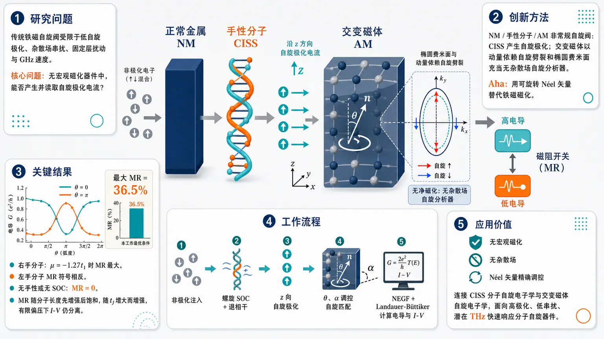
研究问题传统铁磁自旋阀依赖净磁化铁磁层，存在自旋极化低、杂散场串扰、固定层易受外场扰动和 GHz 速度限制；核心问题是：能否在没有宏观磁化的器件中，仍用手性分子产生自旋极化电流，并用交变磁体读取该自旋信号，实现可调磁阻自旋阀。创新方法提出正常金属/手性分子/交变磁体（NM/chiral molecule/AM）非常规自旋阀：手性分子的螺旋结构、分子 SOC 与退相干共同产生 CISS 自旋极化电流；交变磁体虽无净磁化，却利用动量依赖自旋劈裂和椭圆费米面各向异性充当无杂散场自旋分析器。Aha 点是用可旋转的 Néel 矢量替代铁磁磁化方向，实现无宏观磁化的磁阻开关。工作流程非极化电子从左侧正常金属注入 → 穿过单螺旋手性分子，在跳跃、螺旋几何 SOC 和 Büttiker 虚电极退相干作用下形成沿 z 方向偏置的自旋极化电流 → 电流进入右侧交变磁体 → AM 的 Néel 矢量角 θ 和晶体取向角 α 改变动量空间自旋劈裂与费米面投影 → 自旋匹配时高电导，自旋失配时低电导 → 通过非平衡格林函数与 Landauer-Büttiker 公式计算电导、I-V 曲线和磁阻。关键结果在右手分子、E=t1、α=0、Nz=30、Nx=41、tJ=1.5t1 条件下，θ=π 与 θ=0 的电导明显分离，最大磁阻达到 36.5%，出现在 μ=-1.27t1；左手分子的磁阻符号与右手完全相反。无手性分子或无分子 SOC 时，两种 Néel 方向电导完全重合，MR=0。磁阻随分子长度增加先增强后饱和，随交变磁强度 tJ 增大而增强，对电极横向宽度 Nx 基本不敏感；有限偏压下两条 I-V 曲线仍明显分离。应用价值该研究给出一种无宏观磁化、无杂散场、可由 Néel 矢量精确调控的自旋阀器件路线，有望避免传统铁磁自旋阀的串扰和速度瓶颈，并连接 CISS 分子自旋电子学与交变磁体自旋电子学。它为高极化、低串扰、潜在 THz 快速响应的分子自旋电子器件提供理论设计蓝图。第一部分：核心概览 (Overview)
该研究提出一种正常金属/手性分子/交变磁体（NM/chiral molecule/AM）自旋阀，用手性诱导自旋选择性（CISS）产生高自旋极化电流，用交变磁体动量依赖自旋劈裂替代铁磁探测层，实现无宏观磁化、无杂散场且可由Néel 矢量调控的磁阻效应。基于非平衡格林函数与 Landauer-Büttiker 公式，理论计算显示磁阻最高达 36.5%，并随分子长度和交变磁各向异性增强而增大；无手性或无分子 SOC 时磁阻消失。该方案连接 CISS 自旋电子学与交变磁体自旋电子学，定位为一种规避传统铁磁自旋阀低极化、杂散场和 GHz 速度限制的新型器件概念。
---
第二部分：结构化快速回顾
《Unconventional Spin Valve Based on Normal Metal/Chiral Molecule/Altermagnet Junctions》（None，）
背景
传统铁磁自旋阀依赖两个铁磁层的相对磁化方向产生磁阻，但受限于铁磁低自旋极化、固定层易受外场扰动、杂散场串扰、GHz 进动频率。CISS 可由非磁性手性分子产生高自旋极化电流；交变磁体具有补偿反平行磁序、无宏观磁化、动量依赖自旋劈裂、THz 磁动力学，适合作为无杂散场自旋分析器。
方法
构建 NM/chiral molecule/AM 结。手性分子用单螺旋紧束缚模型描述，包含跳跃、螺旋几何诱导 SOC 与 Büttiker 虚电极退相干；AM 用二维连续模型及其晶格离散化描述，关键参数包括 Néel 矢量角 θ、晶体取向角 α、交变磁强度 tJ。输运通过非平衡格林函数和 Landauer-Büttiker 公式计算。
结果
右手分子在 E = t1、α = 0、Nz = 30、Nx = 41、tJ = 1.5t1 时，G(θ = π) 与 G(θ = 0) 明显不同，磁阻最大 36.5%，出现在 μ = −1.27t1。左手分子的磁阻符号完全相反。无手性分子或无 SOC 分子中 G(θ = π) 与 G(θ = 0) 完全重合，MR = 0。
讨论
磁阻来自三者协同：分子手性、分子 SOC、AM 动量依赖自旋劈裂。Néel 矢量可作为开关调节电导，晶体取向 α 也通过 AM 费米面各向异性改变输运。MR 对电极横向宽度 Nx 近似不敏感，但随分子长度 Nz 先增大后饱和，并随 tJ 增大而增强。
局限
研究为理论数值工作，缺少实验验证。分子电子相互作用以非相互作用/平均场方式处理；退相干通过 Büttiker 虚电极参数化，取 Γd = 0.06t1。有限偏压电流由能量积分近似计算，真实分子-电极界面、热效应、结构无序、具体 AM 材料匹配仍需实验和第一性原理层面进一步检验。
结论
NM/chiral molecule/AM 结可作为一种非常规自旋阀：由 CISS 产生自旋极化，由 AM 无杂散场地探测和调制该极化电流。该器件兼具高极化、无宏观磁化、潜在快速响应和可电/磁调控优势，为 CISS 与交变磁体结合的自旋电子器件提供理论路径。
---
第三部分：逐章节冷凝解析 (Section-by-Section Condensing)
Abstract
- Device concept and motivation
核心器件是将手性分子与交变磁体结合，构成可调高效自旋阀。摘要明确指出手性分子可产生强自旋极化电流：*"Chiral molecules have attracted broad interdisciplinary interest for their ability to produce highly spin-polarized current."* 该效应即 CISS，其应用场景定位于自旋电子学：*"This phenomenon, known as the chiral-induced spin selectivity effect, holds great potential in the field of spintronics."*
- Computational framework
输运计算采用非平衡格林函数方法与 Landauer-Büttiker 公式，目标量为电导与磁阻：*"Using the nonequilibrium Green’s function method and the Landauer-Büttiker formula, we obtain the conductance and the magnetoresistance of a normal metal/chiral molecule/altermagnet spin valve."*
- Main physical result
器件电导可通过改变 AM Néel 矢量方向调控，磁阻随分子长度和交变磁各向异性增大：*"the conductance of the spin valve can be effectively tuned by reorienting the Néel vector of the altermagnet, and the magnetoresistance of the spin valve increases with molecular length and altermagnetic anisotropy."*
- Necessary conditions for magnetoresistance
磁阻不是单独由 AM 自旋劈裂产生；在无手性或无分子 SOC时消失：*"the magnetoresistance vanishes for achiral molecules or in the absence of molecular spin-orbit coupling."* 这表明 CISS 条件与 AM 自旋分析能力必须同时存在。
- Device-level implication
目标器件优势包括高效、可控、无杂散场：*"Our work paves the way for developing efficient, controllable, and stray-field-free spintronic devices."*
---
I Introduction
- CISS as the starting phenomenon
手性物质具有结构不对称性，并横跨物理、化学、生物、材料科学多个领域：*"Chirality and chiral substances are ubiquitous in nature."* 关键历史起点是 Naaman 等发现非极化电子穿过手性非磁性硬脂酰赖氨酸分子后变为自旋极化：*"unpolarized electrons become spin-polarized after transmitting through chiral, nonmagnetic stearoyl lysine molecules."*
- CISS reverses with chirality
实验广泛观察到手性分子产生自旋极化电流，且手性反转会反转自旋极化方向：*"Experiments consistently show that chiral molecules can generate spin-polarized currents, with the spin polarization direction reversing upon inversion of the material chirality."* 这为后文右手/左手分子磁阻符号相反提供物理基础。
- Mechanistic ingredients of CISS
有效机制强调分子手性 + SOC + 退相干共同诱导 CISS：*"One effective mechanism suggests that the combination of molecular chirality with spin-orbit coupling (SOC) and dephasing induces the CISS effect."* 该机制还能统一解释纵向/横向 CISS、逆 CISS、动态 CISS 与手性分子/FM 结巨磁阻：*"This mechanism provides a unified explanation for longitudinal and transverse CISS effects, the inverse CISS effect, the dynamic processes of CISS, the giant magnetoresistance (MR) phenomenon in chiral molecule/ferromagnet (FM) junctions, and more."*
- Conventional spin valves have intrinsic limits
传统自旋阀由固定 FM 层、自由 FM 层和 NM 间隔层组成，电导依赖两层磁化相对取向：*"a conventional spin valve consists of a fixed FM layer and a free FM layer separated by a normal metal (NM)."* 其缺陷包括铁磁自旋极化低、固定层受外场影响、杂散场串扰、GHz 级低进动频率：*"low FM spin polarization, susceptibility of the fixed layer to change under external fields, undesirable stray magnetic fields that cause crosstalk, and low FM precession frequencies (around GHz)."*
- CISS-based spin valves solve only part of the problem
用手性分子替代固定 FM 层可提供高自旋极化且不受外场影响的电流：*"CISS provides highly spin-polarized currents that are unaffected by external fields."* 但自由层仍为 FM，因此杂散场和开关速度问题仍存在：*"since the free layer remains FM, challenges related to stray fields and switching speed persist."*
- Altermagnetism provides the missing component
交变磁体（AM）是具有实空间补偿反平行磁序的新磁相，对立自旋子晶格由晶体旋转对称性连接：*"AM is a novel magnet phase characterized by a compensated antiparallel magnetic order in real space, where opposing spin sublattices are linked by crystal rotation symmetries."* 虽无宏观磁化，却破缺时间反演并产生强动量依赖自旋劈裂：*"Despite the absence of macroscopic magnetization, it still breaks time-reversal symmetry and induces a strong momentum-dependent spin splitting."* 劈裂能量可达 1 eV 量级：*"with the splitting energy reaching the order of 1 eV."*
- AM Néel vector is controllable and useful for spin detection
AM 磁序，即 Néel 矢量，可通过电学与磁学方法控制：*"the magnetic order (Néel vector) of AM can be controlled through electrical and magnetic methods."* 动量依赖自旋劈裂使 AM 能像 FM 一样探测自旋极化电流：*"the momentum-dependent spin splitting enables AMs to efficiently probe spin-polarized currents, much like FMs."*
- Proposed junction and claimed advantages
器件为手性分子夹在 NM 与 AM 之间的 NM/chiral molecule/AM 结：*"a system with a chiral molecule sandwiched between an NM and an AM electrode, forming an NM/chiral molecule/AM junction."* 由于 AM 具有无杂散场补偿磁序和 THz 级磁动力学，该自旋阀有望克服传统 FM 自旋阀全部关键限制：*"Owing to the compensated magnetic order without stray fields and the THz-scale magnetic dynamics of AM, such a chiral molecule/AM spin valve is expected to overcome all key limitations of conventional spin valves based on FMs."*
- Central mechanism of MR
磁阻来源被明确归因于手性、分子 SOC、AM 动量依赖自旋劈裂的相互作用：*"the MR of this system arises from the interplay of the chirality, molecular SOC, and the momentum-dependent spin splitting of the AM."* 三者共同必要，且 MR 随分子长度和 AM 各向异性增加：*"These contributions are collectively necessary, and the MR increases with both the length of the molecule and the degree of AM anisotropy."*
---
II Model and Hamiltonian
- Full Hamiltonian decomposition
总哈密顿量写作 H = HAM + HNM + Hcmol + HT + Hd，分别描述 AM、NM、手性分子、耦合与退相干：*"The whole system can be simulated by the Hamiltonian: H=HAM+HNM+Hcₘₒₗ+HT+Hd."* 其中退相干项 Hd 对应分子中的相干性破坏：*"Hd describes the dephasing in the chiral molecule."*
- Device geometry
左侧为沿 −z 延伸的半无限 NM，右侧为沿 +z 延伸的半无限 AM，两电极在 x 方向有限宽 Nx，中间手性分子长度为 Nz：*"the left side in orange is the semi-infinite NM electrode extending along the −z direction, and the right side in green is the semi-infinite AM electrode extending along the +z direction."* 电流沿 z 方向穿过分子：*"a current will flow along the z direction across the molecule."*
- Continuum AM Hamiltonian
AM 连续模型为
HAM(kx,kz)=t0(kx²+kz²)+tJ[(kz²−kx²)cos2α+2kxkz sin2α] σ·s。其中 t0 是动能系数，tJ 是 AM 强度，α 是晶轴与 +z 的夹角：*"t₀ is the kinetic coefficient, and tJ is the magnitude of AM."*；*"the angle α between the crystalline axis and the +z axis defines the orientation of AM."*
- Néel vector parameterization
输运由 AM Néel 矢量与分子自旋极化方向之间的角度控制：*"transport is governed by the angle between s and spin polarization direction of the molecule."* 因分子自旋极化主要沿 z 方向，Néel 矢量限制在 xz 平面，写为 s = (sinθ, 0, cosθ)：*"Since the molecular spin polarization is primarily along the z direction, we can, without loss of generality, constrain s to vary within the xz plane."*
- AM Fermi surface anisotropy
两种自旋的 AM 费米面为主轴互相垂直的椭圆：*"The Fermi surface of two spins consists of two ellipses with mutually perpendicular major axes."* 在 α = 0 下，θ = 0 时自旋向上和向下费米面主轴分别沿 kx 与 kz；θ = π 时完全相反：*"When θ=0, the major axis of the spin-up and spin-down Fermi surfaces lies along the kx and kz directions, respectively."*；*"When θ=π, the situation is exactly the opposite."*
- NM reference electrode
NM 哈密顿量为 HNM(kx,kz)=t0(kx²+kz²)，两种自旋费米面为完全重合圆：*"the Fermi surfaces for the two spin species are two completely overlapping circles."* 这保证 NM 本身不引入磁性或自旋选择。
- Single-helical molecular Hamiltonian
分子为单螺旋结构，含站点化学势、长程跳跃和 SOC 项：*"the molecule is single-helical, and can be described by the Hamiltonian."* 创建算符为 c†nz=(c†nz,↑, c†nz,↓)，分子长度为 Nz：*"The length of the chiral molecule is Nz."*
- Distance-dependent hopping and SOC
跳跃与 SOC 均随站点间距离指数衰减：tj=t1 exp[−(lj−l1)/lc]，sj=s1 exp[−(lj−l1)/lc]。原文定义为：*"tⱼ=t₁e⁻⁽lⱼ⁻l₁⁾/lc and sⱼ=s₁e⁻⁽lⱼ⁻l₁⁾/lc are hopping integral between sites n_z and n_z+j and the corresponding SOC, respectively."* 距离 lj 由分子半径 R、扭转角 Δφ 和堆垛距离 Δh 决定。
- Molecular chirality encoded by twist angle
右手、左手和非手性分子分别通过 Δφ = 5π/9、−5π/9、0 表示：*"The twist angle is set to Δφ=5π/9 (−5π/9) for right- (left-) handed molecules, and Δφ=0 for achiral molecules."* 这是后文比较手性反转和无手性极限的模型基础。
- Dephasing modeled by Büttiker virtual electrodes
杂质、电子-电子相互作用和电子-声子相互作用会引起退相干：*"impurities, electron-electron interaction, and electron-phonon interaction inevitably cause the dephasing effect."* 退相干通过连接到每个分子站点的 Büttiker 虚电极模拟：*"we introduce the Büttiker’s virtual electrodes connecting to each site of the chiral molecule."*
- Numerical parameters for molecule
分子结构参数为 R = 0.25 nm、Δh = 0.15 nm、Nz = 30、lc = 0.9 Å。最近邻跳跃 t1 = 100 meV 作为能量单位：*"The nearest-neighbor hopping t1=100 meV is taken as the energy unit."* SOC 取 s1 = 0.05t1 = 5 meV，符合轻元素手性分子的 meV 级 SOC：*"The SOC is set as s1=0.05t1=5 meV, which aligns with the SOC strength (a few meV) in chiral molecules composed of light elements."*
- Numerical parameters for AM and electrodes
AM 参数取 t0 = 3t1、tJ = 1.5t1，对应约 300 meV 自旋劈裂：*"we take t0=3t1 and tJ=1.5t1, which are obtained by fitting the first-principles calculation results and correspond to a spin splitting of about 300 meV."* 电极宽度 Nx = 41，分子-电极耦合 tc = t1：*"The width of NM and AM electrodes is Nx=41, and tc=t1."*
---
III Transport behaviors
- Conductance depends on AM Néel vector orientation
在 α = 0、E = t1 下，右手分子的电导谱显示 G(θ = π) 与 G(θ = 0) 不同：*"it clearly shows that G(θ=π) is different from G(θ=0)."* 这一差异类似手性分子/FM 结中通过调节 FM 方向调节电导的现象：*"the conductance could likewise be tuned by adjusting the FM orientation."*
- Absence of macroscopic magnetism makes the effect unconventional
该电导差异比 FM 情况更特殊，因为手性分子、NM、AM 均无宏观磁性：*"this conductance difference here is more intriguing than the FM case, since neither the chiral molecule nor the NM and AM electrodes exhibit macroscopic magnetism."* 物理来源是分子 CISS 与 AM 动量依赖自旋劈裂：*"This difference in conductance between the cases of θ=0 and θ=π arises from the CISS effect in the molecule and the momentum-dependent spin splitting in the AM."*
- Magnetoresistance definition and maximum value
磁阻定义为
MR = [G(θ = π) − G(θ = 0)]/[G(θ = π) + G(θ = 0)]。在该系统中，最大磁阻为 36.5%，出现在 μ = −1.27t1：*"MR can achieve a maximum value of 36.5% (when μ=−1.27t1), despite the complete absence of macroscopic magnetism."*
- Chirality reversal reverses MR
左手分子的 MR 曲线与右手分子完全相反：*"the MR curve for the left-handed molecule, which is exactly opposite to that of the right-handed molecule."* 这被解释为 CISS 的清晰标志：*"a clear signature of the CISS effect."*
- Spin-polarized current confirmed in NM/chiral molecule/NM control
附录 B 中 NM/chiral molecule/NM 结的自旋分辨电导与自旋极化证明穿过手性分子的电流确为自旋极化：*"we calculate the spin-resolved conductance and spin polarization of the NM/chiral molecule/NM junction, which shows that the current passing through the chiral molecule is indeed spin-polarized."*
- AM performs comparably to FM without losing efficiency
与 NM/chiral molecule/FM 结对比表明 AM 电极可实现类似电导调制，且效率不降低：*"compared with the FM case, the AM electrode can achieve similar conductance modulation and does not reduce the efficiency."* 这支持 AM 替代 FM 探测层的可行性。
- Achiral molecule eliminates MR
对非手性分子，G(θ = π) 和 G(θ = 0) 完全重合，尽管电导有限，因此 MR = 0：*"G(θ=π) and G(θ=0) completely overlap, indicating that MR=0, although the conductance remains finite."* 这说明 AM 自身自旋劈裂不足以在非极化入射电流中产生 MR。
- No molecular SOC eliminates MR
对右手但 s1 = 0 的无 SOC 分子，同样 G(θ = π) 与 G(θ = 0) 重合，MR = 0：*"right-handed molecule without SOC"*；*"G(θ=π) and G(θ=0) completely overlap, indicating that MR=0."* 这验证 SOC 是 CISS 与 MR 的必要条件。
- AM is essential, not merely chirality
NM/chiral molecule/NM 结构中两种手性的总电导相同，突出 AM 电极不可或缺：*"the conductance is identical for both chiralities, highlighting the essential role of the AM electrode."* 因此 MR 来自 CISS 与 AM 自旋劈裂的组合，而非单独分子手性。
- Dephasing remains crucial
退相干被列为关键要素，并在附录 C 中系统考察：*"Moreover, dephasing is also a crucial element."* 计算显示显著 MR 在宽参数范围内持续存在：*"It shows that a significant MR persists over a wide range of parameters."*
- Néel vector angle θ gives 2π-periodic conductance
在 μ = −1.27t1、E = t1、α = 0 下，电导随 θ 呈 2π 周期，因为 AM 费米面自旋纹理旋转 2π 后恢复：*"The conductances of both right- and left-handed molecules exhibit a period of 2π, because the spin texture on the AM’s Fermi surface recovers its original state after a full 2π rotation."*
- Right-handed conductance increases from θ = 0 to π due to spin matching
右手分子在 θ = 0 时电导小，因为 AM 偏好通过的自旋方向与分子自旋极化不匹配：*"When θ=0, the conductance is small, because the spin orientation favored to flow in AM mismatches the spin polarization direction of the chiral molecule."* 随 θ 从 0 到 π 增大，匹配增强，电导增加：*"As θ increases from 0 to π, the favored spin orientation of AM gradually matches the molecular spin polarization, leading to an increase in conductance."*
- Left-handed molecule shifts θ dependence by π
左手分子自旋极化方向相反，因此其电导相对右手分子平移 π：*"the conductance of the left-handed molecule is shifted by π relative to that of the right-handed molecule."* 数学关系为 G(θ, −Δφ) = G(θ + π, Δφ)：*"which can be expressed as G(θ,−Δφ)=G(θ+π,Δφ)."*
- Néel vector acts as an effective transport switch
由于 θ 可调节 AM 偏好通过的自旋方向，Néel 矢量可作为自旋阀开关：*"the Néel vector in AM serves as an effective switch for precisely tuning the transport behavior."*
- Crystal orientation angle α gives π-periodic conductance
在 θ = 0 下，电导随晶体取向角 α 呈 π 周期：*"The conductances of both right- and left-handed molecules exhibit a period of π."* 该周期源自 AM 费米面旋转 α = π 后恢复：*"This periodicity originates from the symmetry of the AM’s Fermi surface, which recovers its original state after a rotation of α=π."*
- α dependence reflects AM Fermi-surface anisotropy
右手分子在 α = 0 时电导小，在 α = 0.5π 时电导大，因为自旋方向从不匹配转为匹配：*"When α=0, the conductance is small because of the mismatch between the favored spin orientation in the AM and the spin polarization of the chiral molecule."*；*"at α=0.5π, the conductance becomes large as these two spin directions are matched."* 因此电导随 α 变化体现 AM 费米面各向异性：*"The conductance variation with the crystal orientation angle α demonstrates the anisotropic nature of the AM’s Fermi surface."*
- Symmetry G(α)=G(π−α)
电导关于 α = 0.5π 对称，因为输运沿 z 方向，传输概率取决于 AM 费米面在 z 轴上的投影，而 α 与 π−α 的投影相同：*"the transmission probability depends on the z axis projection of the AM Fermi surface."*；*"As a result, G(α)=G(π−α) holds."*
- Left-handed α dependence shifts by 0.5π
左手分子自旋极化反向，因此 AM 费米面需旋转 0.5π 才能恢复原自旋对齐：*"the spin polarization of the injected current is reversed."*；*"the Fermi surface of the AM must be rotated by α=0.5π."* 对应关系为 G(α, −Δφ)=G(α+0.5π, Δφ)：*"which leads to the relation G(α,−Δφ)=G(α+0.5π,Δφ)."*
- Chirality curves intersect where z-projected spin splitting vanishes
在 α = 0.25π、0.75π、1.25π、1.75π，左右手曲线相交，因为 AM 费米面沿 z 轴投影相同，沿输运方向无自旋劈裂：*"At α=0.25π, 0.75π, 1.25π and 1.75π, the two curves intersect."*；*"the projections of the AM Fermi surface onto the z-axis are identical, exhibiting no spin splitting along this direction."*
- MR is nearly independent of electrode width Nx
固定 Nz = 30 时，MR 随 Nx 变化近似不变：*"the MR of the system is nearly independent of Nx."* 这说明效应源于单分子的 CISS，而非电极横向尺寸：*"the effect originates from the CISS of a single molecule and is not influenced by the lateral dimensions of the electrode."* 小的分段连续变化来自有限宽度横向模式，并在大宽度下减弱：*"small piecewise continuous variation, which arises from the transverse modes at a finite width and diminishes for larger electrode widths."*
- MR increases then saturates with molecular length Nz
固定 Nx = 41 时，MR 随 Nz 先增大后在长分子处饱和：*"the MR initially increases with Nz before saturating at longer lengths."* 这符合 CISS 理论与实验：*"This characteristic dependence is well-aligned with previous theoretical and experimental studies on the CISS effect."* 原因是 CISS 自旋极化随分子长度积累：*"spin polarization in CISS builds up with increasing molecular length, which naturally leads to the enhancement of MR."*
- MR increases with AM strength tJ
在不同 Nx 与 Nz 扫描中，MR 均随 tJ 增大：*"the MR increases consistently with tJ."* 物理原因是 tJ 增强 AM 自旋劈裂，使某一 Néel 方向下自旋极化电流更易通过、反向 Néel 时更受阻：*"as tJ increases, the spin splitting in the AM becomes more pronounced."*；*"while hindering its transmission for a reversed Néel vector."*
---
IV MR in finite bias
- Finite-bias current formula
有限偏压下电流由电导谱在偏压窗口中积分：
I = (1/e) ∫E−ₑV/₂E⁺eV/² G(ε)dε。原文写明：*"The current flowing across the device can be calculated by I=frac1eintE₋ₑV/₂E⁺eV/²G(ǎrepsilon)dǎrepsilon with V the voltage."*
- Finite-bias MR definition
有限偏压磁阻定义为
MR(V) = [I(θ = π) − I(θ = 0)]/[I(θ = π) + I(θ = 0)]：*"Then in finite bias, MR(V)=[I(θ=π)-I(θ=0)]/[I(θ=π)+I(θ=0)]."*
- I-V curves remain distinguishable over chemical potentials
在 μ = −1.27t1、−1.4t1、−1.2t1 下分别计算 I(θ = π) 与 I(θ = 0) 随电压变化，结果显示宽化学势范围内 MR 效应持续：*"These results show that the MR effect in the device persists over a wide range of chemical potentials."*
- I-V response is nonlinear and antisymmetric
随电压幅值增大，I-V 曲线呈非线性和反对称行为：*"As the magnitude of voltage V increases, the I-V curves exhibit nonlinear and antisymmetric behavior."* 两种 Néel 方向下的 I-V 曲线在宽电压范围内明显不同：*"A clear difference between the two I-V curves is observed over a wide voltage range."*
- Finite-bias curves resemble FM-based CISS detection without macroscopic magnetism
I-V 曲线形状类似用 FM 电极检测 CISS 的实验特征曲线：*"Their shape closely resembles the characteristic curves measured using FM electrodes to detect the CISS effect."* 但当前系统没有宏观磁性：*"even though the entire present system lacks any macroscopic magnetism."*
- Finite-bias MR is symmetric and strengthened by tJ
从 Fig. 4(a) 得到的 MR(V) 呈对称线形，并随 tJ 增大增强：*"The MR exhibits a symmetric lineshape and enhances with increasing tJ."* 由此说明真实有限偏压条件下仍能产生显著 MR：*"These results demonstrate that a significant MR effect can be generated in the system under realistic finite bias."*
---
V Conclusion
- Unconventional spin valve concept
结论明确提出一种结合手性分子和 AM 的非常规自旋阀，用于克服传统 FM 自旋阀缺陷：*"we propose the concept of an unconventional spin valve that integrates a chiral molecule with AM, which overcomes the shortcomings of conventional spin valves based on FMs."*
- Three device advantages
新自旋阀具有高分子自旋极化、无宏观磁化、快速响应三项优势：*"This new type of spin valve features high molecular spin polarization, the absence of macroscopic magnetization, and fast response characteristics."*
- Considerable MR and precise tunability
标准数值方法显示 NM/chiral molecule/AM 结中可实现可观 MR，并可通过 AM Néel 矢量方向精确便利地调控电导：*"a considerable MR can indeed be achieved in the NM/chiral molecule/AM junction, and its conductance can be precisely and conveniently tuned by controlling the orientation of the AM Néel vector."*
- Field-level contribution
研究促进 CISS 与 AM 两个领域互联，并为自旋电子器件开辟新方向：*"Our results promote the interconnection of both the CISS and AM fields, and open a new avenue for the development of spintronic devices."*
---
ACKNOWLEDGMENTS
- Funding sources
资助来源包括中国国家重点研发计划 2024YFA1409002、国家自然科学基金 12374034、12274466、125B2065、量子科学与技术国家科技重大专项 2021ZD0302403、湖南省杰出青年科学基金 2023JJ10058：*"This work was financially supported by the National Key R and D Program of China (Grant No. 2024YFA1409002), the National Natural Science Foundation of China (Grant No. 12374034, No. 12274466 and No. 125B2065), Quantum Science and Technology-National Science and Technology Major Project (2021ZD0302403), and Hunan Provincial Science Fund for Distinguished Young Scholars (Grant No. 2023JJ10058)."*
- Computational resource
数值计算使用北京大学高性能计算平台：*"We also acknowledge the High-performance Computing Platform of Peking University for providing computational resources."*
---
Appendix A DETAILS OF MODEL HAMILTONIAN
- Discrete AM Hamiltonian includes nearest and diagonal hoppings
AM 连续模型被离散到二维方格晶格，离散哈密顿量包含 onsite 项 4t0、x/z 方向最近邻项和由 sin(2α) 引入的对角耦合项。原文写明：*"The discrete Hamiltonian of the AM electrode can be written as."* AM 中创建算符 a†nx,nz 定义在 nz ≥ Nz + 1 的电极格点上：*"is the creation operator on lattice site (nx,nz) in the AM electrode with width Nx."*
- Discrete NM Hamiltonian is spin-independent
NM 离散模型只有 4t0 onsite 项与 −t0 最近邻跳跃，无自旋相关项：*"The discrete Hamiltonian of the NM electrode is."* 其创建算符定义在 nz ≤ 0 的 NM 格点上：*"with nz≤0 is the creation operator on lattice site (nx,nz) in the NM electrode with width Nx."*
- Molecule contacts the middle of electrodes
分子-电极耦合哈密顿量为
HT = tc c†Nz aNm,Nz+1 + tc c†1 aNm,0 + H.c.。其中 Nm = [(Nx+1)/2]，表示分子连接在电极中间：*"This indicates that the molecule is connected at the middle of the electrodes with coupling energy tc."*
- Noninteracting molecular model is justified by Fermi-level active orbital argument
分子模型不含显式相互作用，理由是蛋白质类手性分子中每个氨基酸有许多能级，但输运主要发生在费米能级附近：*"When an external voltage is applied, electronic transport predominantly occurs near the Fermi level."* 费米能级以上无占据，以下近满占据，只有每个氨基酸最接近费米能级的一个能级活跃：*"only one energy level nearest the Fermi level in each amino acid is active."*
- Mean-field interaction renormalizes onsite energy without changing physics
相互作用在平均场下等价于重整化费米能级轨道 onsite 能：*"the mean-field theory works well"*；*"which is equivalent to renormalizing the on-site energy of the Fermi-level orbital."* 因此非相互作用模型被认为合理：*"Our model is therefore well justified."*
---
Appendix B TRANSPORT FORMULATION AND SPIN POLARIZATION
- Landauer-Büttiker conductance for NM/chiral molecule/AM junction
电导公式为
G = (e²/h) Σm TAM,m Vm/Vb：*"according to the Landauer-Büttiker formula, the conductance is G=(e²/h)sumₘTAM,ₘVₘ/Vb."* 传输系数为 TAM,m = Tr[ΓAM Gr Γm Ga]：*"TAM,ₘ=Tr[ΓAMGrΓₘGa] is the transmission coefficient from the m-th electrode to the AM electrode."*
- Retarded Green’s function and linewidth functions
格林函数为
Gr = [E I − Hcmol − Σm Σrm]⁻¹，线宽函数为 Γm = i(Σrm − Σam)：*"The Green’s function Gr=[Ga]†=[EI−Hcₘₒₗ−∑mΣₘr]⁻¹, and the linewidth function Γₘ₌ᵢ[Σₘ^r−Σₘ^a]."* 其中 m = NM, AM, 1,2,…,Nz，包括真实电极和虚电极。
- Virtual-electrode dephasing parameter
虚电极自能取能量无关形式 Σrm = −iΓd/2 = −iπρdtd²，退相干参数为 Γd = 0.06t1：*"For the virtual electrodes, Σₘ^r=−iΓ_d/2=−iπρ_dt_d² is energy independent, with ρ_d being the density of states in each virtual electrode and Γ_d=0.06t1 the dephasing parameter."*
- Voltage profile in dephasing model
NM 与 AM 电压为 VNM = Vb、VAM = 0；前后 Nd = [Nz/3] 个虚电极电压设为邻近真实电极电压，中间区域线性下降：*"the voltage on the first and the last Nd virtual electrodes are set to be the same as that of the adjacent real electrodes, and here we set Nd=[Nz/3]."*；*"The voltage linearly decreases in the middle area because of the uniform distribution of molecular sites."*
- Spin-resolved conductance for NM/chiral molecule/NM junction
自旋分辨电导为
Gs = (e²/h) Σm,s′ TRs,ms′ Vm/Vb：*"the conductance for spin-up (G↑) and spin-down (G↓) electrons can be calculated by Gₛ₌₍ₑ²/h)sumₘ,ₛ'TRₛ,ₘₛ'Vₘ/V_b."* G↑ 与 G↓ 正比于右 NM 电极发射的自旋向上与自旋向下电子数：*"the spin-up conductance G↑ and spin-down conductance G↓ are proportional to the number of spin-up and spin-down electrons emitted from the right NM electrode."*
- FM comparison uses finite polarization
NM/chiral molecule/FM 对照结构采用固定 FM 极化 PFM = 30%：*"The FM polarization is fixed at PFM=30%."* 该对照用于显示 AM 能达到类似 FM 的电导调制而无需宏观磁化。
---
第四部分：深度理解与语言支持 (Understanding & Nuance)
1. 术语解析
- Chiral-induced spin selectivity (CISS)
手性诱导自旋选择性。含义不是“分子本身有磁性”，而是非磁手性结构在 SOC、几何螺旋性和退相干等作用下，使通过分子的电子电流出现自旋偏置。关键微妙点：CISS 的自旋极化方向随分子手性反转而反转，因此右手/左手分子的 MR 符号相反。
- Altermagnet
交变磁体。它不同于铁磁体和普通反铁磁体：没有宏观净磁化，但仍破缺时间反演并在动量空间产生自旋劈裂。微妙点在于“无宏观磁化”不等于“无自旋选择能力”；AM 的自旋选择来自 k 空间各向异性自旋劈裂，而不是净磁矩。
- Néel vector
Néel 矢量。在反铁磁或交变磁系统中，描述两个相反自旋子晶格的有序方向。这里它相当于 AM 的“可调自旋分析轴”。改变 θ 并不产生净磁化，却会改变 AM 偏好通过的自旋方向，从而调节电导。
- Momentum-dependent spin splitting
动量依赖自旋劈裂。指能带中自旋上/下态的能量差依赖电子动量方向。与铁磁体中较均匀的交换劈裂不同，AM 的自旋劈裂在费米面上表现为不同自旋椭圆费米面的方向各异，因此晶体取向 α 会直接影响沿 z 方向的输运。
- Stray-field-free spintronic devices
无杂散场自旋电子器件。铁磁体有净磁化，会产生外泄磁场并导致邻近器件串扰；AM 净磁化为零，可保留自旋选择功能同时避免宏观杂散场。这是该器件相对 FM 自旋阀的核心工程优势之一。
2. 疑难查证
- 为什么没有宏观磁化仍能产生磁阻？
传统直觉认为磁阻需要铁磁磁化。但这里的“磁阻”本质上是两种 Néel 矢量取向下输运概率不同。手性分子先通过 CISS 将非极化电流变成沿某方向偏置的自旋极化电流；AM 虽无净磁化，但其费米面中不同自旋的可传播态沿不同动量方向分布。若分子输出的自旋与 AM 在 z 方向可接受的自旋通道匹配，电导大；若不匹配，电导小。因此宏观磁化不是必要条件，必要的是自旋极化源 + 自旋选择性接收端。
- 为什么无手性或无 SOC 时 MR 为零？
AM 本身有强自旋劈裂，但若入射电流不带自旋极化，AM 对两类自旋通道的选择会在总电导中抵消。手性与 SOC 是 CISS 产生自旋极化的必要要素；缺少任一项，分子输出电流近似非极化，改变 AM Néel 矢量不会改变总传输，因此 G(θ = π)=G(θ = 0)，MR 消失。
- 为什么 MR 随分子长度增加后饱和？
CISS 自旋极化不是在单个站点瞬间形成，而是在电子沿螺旋路径传播、经历 SOC 和退相干后逐渐积累。分子越长，自旋选择越充分，MR 越大。但当自旋极化接近模型允许的上限后，继续增加长度主要增加散射或路径长度，不再显著提高极化，因此出现饱和。
- 为什么晶体取向 α 会调节电导？
AM 的自旋劈裂具有动量空间方向性。电流沿 z 方向流动，因此真正影响输运的是 AM 费米面在 z 方向投影的可用态。旋转晶体取向 α 等于旋转椭圆费米面；当某一自旋椭圆在 z 方向投影更适合接收分子输出自旋时，电导增大。α 与 π−α 具有相同 z 投影，因此出现 G(α)=G(π−α)。
---
第五部分：创新评估与关联 (Synthesis & Novelty)
1. 创新性判断
- 用 AM 替代 FM 自由/探测层，解决 CISS 自旋阀残余瓶颈
近年 CISS 自旋阀已经提出用手性分子替代固定 FM 层，以避免固定层受外场扰动并提升自旋极化。但自由层仍是 FM，杂散场、串扰和 GHz 开关速度问题仍存在。该方案进一步用 AM 替代 FM 探测功能，实现无宏观磁化但保留自旋分析能力，直接针对 CISS/FM 自旋阀未解决的核心瓶颈。
- 提出 CISS 与 AM 的功能互补机制
CISS 提供自旋极化电流，AM 提供无净磁化的动量选择性自旋探测。此前 CISS 器件常依赖 FM 读取自旋极化，AM 自旋电子学则主要关注自身自旋输运和 Néel 矢量操控。该工作将二者耦合为一个明确器件机制：chirality + molecular SOC + dephasing → spin-polarized current；AM momentum-dependent spin splitting → magnetoresistive readout。
- 证明无宏观磁性体系也可实现显著自旋阀磁阻
最大 MR 达 36.5%，且系统中 NM、手性分子、AM 整体均无宏观净磁化。这一结果突破了“自旋阀必须依赖铁磁净磁化”的常规器件直觉，属于概念层面的新型自旋阀范式。
- 揭示双重可调自由度：Néel 矢量 θ 与晶体取向 α
传统 FM 自旋阀主要调节磁化相对方向；该方案不仅可通过 θ 改变 AM 自旋分析方向，还可通过 α 利用 AM 费米面各向异性调节输运。θ 给出 2π 周期，α 给出 π 周期，并具有 G(α)=G(π−α)、G(θ,−Δφ)=G(θ+π,Δφ) 等明确对称关系。
- 明确给出必要性判据和失效条件
研究不仅展示 MR，还通过对照说明：无手性 MR = 0、无 SOC MR = 0、无 AM 读取端则左右手总电导相同。这种“正例 + 反例”的理论结构清楚限定了机制边界，增强了创新点的可检验性。
- 面向可实验测量的有限偏压预测
有限偏压下 I-V 曲线保持两种 Néel 取向差异，MR(V) 随 tJ 增强，并呈类似 FM 电极检测 CISS 的特征形状。这使方案不只是线性响应概念，而具备与实际两端测量相接的理论预测。
-
07
📄 摘要：建立常规能带量子几何与交替磁自旋分裂之间的对应关系，指出量子度规可作为判断交替磁不稳定性的关键量，并讨论磁涨落与有序态形成的几何来源。
💡 亮点：把交替磁不稳定性和量子几何直接关联起来，强调量子度规对自旋分裂涨落的控制作用。为研究交替磁相变提供几何视角。
📖 展开分析 + 配图
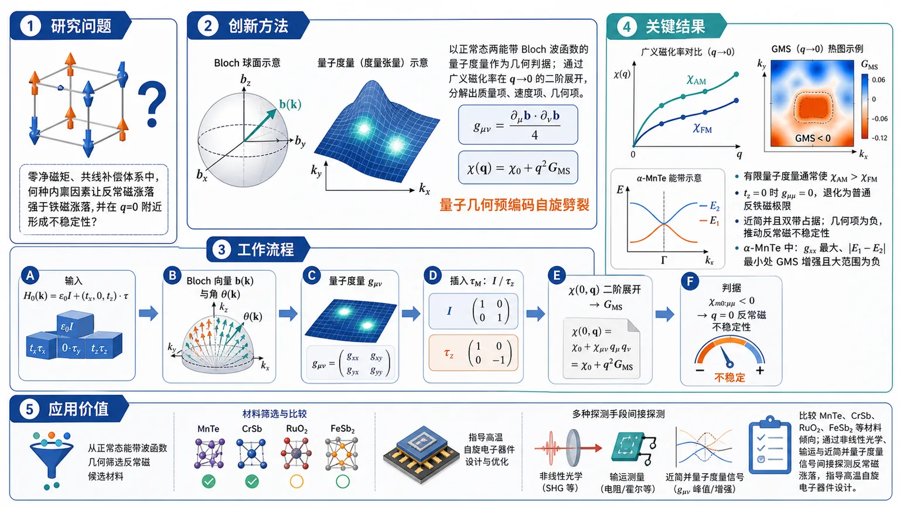
研究问题反常磁体为何会从正常态中形成：在零净磁矩、共线补偿的体系里，是什么内禀因素让反常磁涨落强于铁磁涨落，并在 q=0 附近发展为反常磁不稳定性，而不仅仅是由群论说明“允许存在”。创新方法把正常态两能带 Bloch 波函数的量子度量作为反常磁不稳定性的几何判据：通过广义磁化率 GMS 的 q→0 二阶展开，将响应解析拆成质量项、速度项、几何项；其中几何项显式含量子度量 gμμ，Bloch 角 θ 又把 tx、tz 的动量纹理嵌入所有项，形成“正常态量子几何预编码有序态自旋劈裂”的 Aha 点。工作流程输入正常态两能带哈密顿量 H0(k)=ε0(k)I+(tx,0,tz)·τ；计算 Bloch 向量 b(k) 与 Bloch 角 θ(k)；由 ∂kb 得到量子度量 gμν；在密度算符中插入 τM，τM=I 表示铁磁/普通通道，τM=τz 表示反常磁通道；对静态易感性 χ(0,q) 在 q=0 附近做二阶展开；得到质量、速度、几何三项 GMS；用 χm0:μμ<0 判断 q=0 反常磁涨落峰和不稳定性；最后在 α-MnTe 有效模型中计算能带、自旋劈裂、量子度量与 GMS 分布。关键结果有限量子度量通常使反常磁易感性超过铁磁易感性，即 χAM>χFM；当 tz=0 时 Bloch 向量不随动量转动，量子度量消失，体系退化为普通反铁磁极限；近简并且两能带位于费米能以下时，几何项因 gμμ≥0 且 F≤0 而为负，直接推动反常磁不稳定性；MnTe 计算显示总 GMS 大范围为负，几何项在量子度量 gxx 最大、能带间隔 |E1−E2| 最小的区域增强，验证近简并量子几何促进反常磁涨落。应用价值提供一种从正常态能带波函数几何筛选反常磁候选材料的图像化指标，不再只依赖磁有序态或群论分类；可用于比较 MnTe、CrSb、RuO2、FeSb2 等材料中反常磁倾向强弱；也提示可通过非线性光学响应、输运实验和近简并区域的量子度量信号间接探测反常磁涨落，为高温反常磁自旋电子器件设计提供理论依据。第一部分：核心概览 (Overview)
量子几何被建立为反常磁性（altermagnetism）不稳定性的内禀判据：正常态两能带模型的量子度量与有序态的反常磁自旋劈裂一一关联，并通过广义磁化率（GMS）解析分解为质量、速度、几何三项。核心结论是：有限量子度量通常增强反常磁涨落，使 χAM > χFM，且近简并处几何项可直接推动反常磁不稳定性。以 α-MnTe 有效模型验证后，该工作把反常磁性从群论分类推进到“为何形成”的量子几何机制层面。
---
第二部分：结构化快速回顾
《Altermagnetic Instabilities from Quantum Geometry》（None，）
背景
反常磁体是具有零净磁矩、共线补偿反铁磁序、但在布里渊区部分区域解除 Kramers 简并的新型磁态。实验已在 MnTe、CrSb 等材料中观测到自旋劈裂，但反常磁涨落与不稳定性的形成机制仍缺乏系统理论。
方法
从正常态两能带反常磁模型出发，构造包含亚晶格 Pauli 矩阵的哈密顿量，并定义区分铁磁与反常磁涨落的广义磁化率。通过对静态易感性在 q → 0 附近作二阶展开，解析分离出质量项、速度项与量子几何项。
结果
正常态量子度量与反常磁有序态自旋劈裂项紧密相关。有限 tx 与 tz 使 Bloch 向量随动量变化，从而产生有限量子度量；当 tz = 0 时退化为普通反铁磁情形，量子度量消失。几何项在近简并且能带位于费米能以下时为负，从而有利于反常磁不稳定性。
讨论
反常磁不稳定性不仅由费米面或有效质量决定，还受到能带波函数几何结构控制。量子度量可作为区分普通反铁磁与反常磁候选材料的诊断量，也可能通过非线性光学响应和输运实验间接探测。
局限
显式公式主要针对两能带模型；多能带推广虽原则上直接，但几何量识别和物理解释复杂。相互作用处理仍停留在非相互作用易感性及 RPA 启发层面，长程相互作用可能与量子度量效应竞争。
结论
量子度量不仅刻画正常态反常磁能带的局域几何，也直接参与反常磁涨落的形成。反常磁不稳定性的判据可由广义磁化率曲率给出，MnTe 模型计算支持几何机制的普适性。
---
第三部分：逐章节冷凝解析 (Section-by-Section Condensing)
Abstract
Altermagnetism is defined by compensated collinearity and partial Kramers splitting
反常磁体被界定为一种新识别的共线补偿反铁磁性：总磁矩为零，但在布里渊区部分区域解除 Kramers 简并。核心定义直接给出：*"Altermagnets are a newly identified type of collinear anti-ferromagnetism with vanishing net magnetic moment, characterized by lifted Kramers’ degeneracy in parts of the Brillouin zone."* 这一区分使其不同于普通反铁磁体：普通反铁磁体通常因反演或分数平移与时间反演组合保持全局自旋简并，而反常磁体只在特定对称不变动量处保留简并。
Ordered-state bands are known, but fluctuations remain unresolved
反常磁有序态的能带自旋劈裂已经有实验和理论基础，但反常磁涨落及其如何发展为不稳定性仍是开放问题。摘要明确指出：*"Their time-reversal symmetry broken band structure has been observed experimentally and is theoretically well-understood."* 与之相对，*"altermagnetic fluctuations and the formation of the corresponding instabilities remains largely unexplored."* 该空白构成研究动机。
Quantum metric is linked to altermagnetic spin splitting
核心理论贡献是建立正常态量子度量与有序态反常磁自旋劈裂之间的对应关系。关键表述为：*"We establish a correspondence between the quantum metric of normal and the altermagnetic spin-splitting of ordered phases."* 这意味着即使在 Néel 温度以上、尚未磁有序时，正常态波函数几何已经包含反常磁有序倾向的信息。
Instability criterion is derived analytically
解析推导给出反常磁不稳定性的判据，并显示量子度量倾向于促进反常磁性。摘要直接写道：*"We analytically derive a criterion for the formation of instabilities and show that the quantum metric favors altermagnetism."* 判据在正文中表现为广义磁化率在 q = 0 附近的负曲率条件，即 χm0:μμ < 0。
Conventional q = 0 instability is recovered as a limiting case
当正常态模型中局域自旋劈裂项消失时，反常磁广义磁化率退化为普通 q = 0 不稳定性的表达式。摘要给出：*"We recover the expression for conventional q=0 instabilities where the spin-splitting terms of the normal state model are locally absent."* 这说明理论框架不是孤立构造，而是包含传统铁磁/反铁磁涨落理论作为极限。
MnTe provides the explicit material example
以 MnTe 为例构造有效模型，并显式计算量子度量与广义磁化率。摘要写明：*"As an example, we construct an effective model of MnTe and illustrate the relationship between quantum geometry and altermagnetic fluctuations by explicitly computing the quantum metric and the generalized magnetic susceptibility."* MnTe 的重要性在于它是 2024 年首批实验确认的反常磁材料之一。
---
Introduction
Quantum geometry has become a central organizing principle in condensed matter physics
Bloch 态流形的几何结构已深刻改变凝聚态物理和材料科学。引言开篇指出：*"Recognizing the importance of the geometrical aspects of the manifold that is formed by a set of Bloch states has revolutionized condensed matter physics and material science."* 这里的几何结构包括 Berry 曲率与量子度量，并被用于大规模拓扑材料搜索。
Band topology relies on local geometric contributions even when invariants are global
拓扑不变量原则上不依赖局域细节，但实际计算常通过对整个参数空间的局域几何量积分实现。关键句为：*"topological invariants do not depend on local terms, but in practice, conventional band topological invariants are computed as an integral of individual geometric contributions over the full parameter space."* 这为将局域量子度量用于判断磁不稳定性提供概念铺垫。
Quantum geometry comes from nearby-state overlap and projector variation
量子几何源于参数空间中相邻本征态的非零重叠，也可通过能带投影算符变化率或广义 Bloch 向量变化率描述。原文给出双重解释：*"Quantum geometry – including both the quantum metric and Berry curvature – arises from the non-zero overlap of well-defined eigenstates that are close in parameter space, or alternatively is encoded in the rates of changes of band projectors and their associated (generalized) Bloch vectors."* 对两能带模型而言，量子度量可由 Bloch 向量导数直接计算。
Quantum metric now predicts interacting phenomena
尽管量子几何通常依赖准粒子能带描述，量子度量近年被用于预测本质上相互作用的问题。引言强调：*"the quantum metric has lately been proven to be a powerful tool to make predictions about what are innately interacting problems."* 具体包括电阻率、电容、Drude 权重、平带超导、分数量子反常霍尔态、平带 Landau 能级扩展，以及 FFLO、anapole、三重态超导增强。
Altermagnetism has immediate technological relevance
磁性与现代技术密切相关，而反常磁性因无净磁矩但可产生自旋分裂而对自旋电子学有潜在价值。原文指出：*"magnetism is extremely relevant to modern-day technology, and altermagnetism – which has been observed experimentally for the first time only earlier this year – holds the potential to be a key ingredient for many spintronic or other future device applications."* 这里的“earlier this year”对应 2024 年 MnTe 实验结果。
Group theory classifies altermagnets but does not explain instability selection
反常磁体的群论分类正在发展且已相当清楚，但反常磁涨落与不稳定性内在结构仍未被充分探索。引言最后指出：*"The group theoretical classification of altermagnets is ongoing, but nevertheless well understood."* 与之对照，*"the nature and intrinsic structure of altermagnetic fluctuations and instabilities continue to be mostly uncharted."* 关键问题从“哪些材料允许反常磁性”转向“为什么系统选择反常磁不稳定性”。
---
Quantum Metric in Altermagnetic Models
Altermagnetism can be viewed as less symmetric antiferromagnetism
第一种视角把反常磁性看成“对称性较低”的反铁磁序。普通反铁磁体中两个磁性亚晶格由反演或磁性晶胞中的分数平移联系，因此任意动量处都有全局能带简并。原文写道：*"In a conventional anti-ferromagnet the two magnetic sublattices are related by inversion or a fractional translation symmetry (w.r.t. the magnetic unit cell), which leads to a global band degeneracy at any momentum."* 反常磁体中，亚晶格由一个不正旋转或旋转操作 A 联系，因此简并只保留在满足点群对称不变的动量处：*"The sublattices in an altermagnet are mapped onto each other by an (improper) rotation A, resulting in degeneracies only at momenta that are invariant under the action of any point group symmetry containing A."*
Altermagnets can also be viewed as symmetry-enforced degeneracy platforms
第二种视角强调反常磁体不是简单的“自旋劈裂反铁磁体”，而是由晶体对称保护扩展简并的体系。原文表述为：*"altermagnets are not spin-split anti-ferromagnets, but rather platforms with extended band degeneracies as enforced by crystal symmetry."* 这一点把反常磁体与 nodal line、nodal loop、nodal chain、nodal plane 半金属联系起来；绕反常磁 nodal line 的 Berry 相位为 π 量子化：*"the Berry phase around a loop enclosing an altermagnetic nodal line is π-quantized."*
Normal-state symmetry already distinguishes altermagnets from ordinary antiferromagnets
即使磁序参量形式完全相同，只通过 Néel 温度 TN 以上正常态空间群对称性，也能区分反常磁与普通反铁磁。原文指出：*"just by analyzing the space group symmetry of the normal state (above Néel temperature TN), we can distinguish altermagnets from anti-ferromagnets even though the magnetic order parameter is exactly the same."* 这意味着反常磁性的信息并非只存在于低温磁有序态，而已经编码在正常态晶体对称与能带结构中。
Group theory cannot explain preference over ferromagnetism
群论可以判断反常磁性是否被允许，却不能解释为什么系统偏好反常磁不稳定性而非铁磁不稳定性。关键句为：*"However, group theory cannot explain why an instability towards altermagnetism is preferred over, for example, a ferromagnetic instability."* 因此必须分析正常态能带和易感性，而非只分析对称表示。
Extended degeneracies imply important interband effects
正常态对称保护的扩展能带简并暗示带间效应对反常磁不稳定性至关重要。原文明确提出假设：*"These symmetries enforce extended band degeneracies, which suggests that interband effects are important in forming altermagnetic instabilities."* 这一点与 Ref. [70] 的两能带紧束缚模型计算一致。
Modified density susceptibility distinguishes conventional and altermagnetic channels
非相互作用易感性定义为
χ(iΩn, q) = ∫0β dτ eiΩnτ ⟨Tτ ñ(τ,q) ñ(0,−q)⟩。原文给出：*"χ(iΩn, q)=∫0β dτ eiΩnτ⟨Tτñ(τ,q)ñ(0,−q)⟩."* 修正密度算符为
ñ(τ,q)=1/N ∑k c†(τ,k) τM c(τ,k+q)。其中 τM 决定通道：*"The inserted operator τM lives in the space of the bipartite, magnetic sublattice and toggles between the conventional density-density susceptibility for τM=𝟙2×2 ... and the altermagnetic susceptibility χAM for τM=τz."* 因为 τz 在能带基底中非对角，反常磁通道必然包含带间贡献：*"Because τz is not diagonal in the band basis, it is clear immediately that interband contributions must enter."*
Two-band normal-state model captures pairwise altermagnetic degeneracies
由于反常磁正常态通常由成对简并主导，远离能带对的贡献快速衰减，可用两能带模型描述：
H0(k)=ε0(k)𝟙2×2+(tx(k),0,tz(k))·τ。原文写道：*"it can be generically described by two-band models of the form ... H0(k)=ε0(k)𝟙2×2+(tx(k),0,tz(k))·τ."* 其中 tx 为亚晶格间 hopping，tz 为亚晶格内差异项；二者在交换亚晶格的点群操作下分别为偶/奇：*"The inter- and intra-sublattice hopping coefficients tx and tz transform even and odd under any point group symmetry that exchanges the two sublattices respectively."*
Néel order has the same operator form as conventional antiferromagnetism
低温磁有序由 Néel 序参量 Δ 描述，哈密顿量项为 HN = Δτzσz。原文强调：*"The corresponding Néel order parameter Δ describes collinear, but fully compensated order that enters on the level of the effective Hamiltonian as HN=Δτzσz."* 在无自旋轨道耦合时可选磁矩沿 z 方向：*"In the absence of spin-orbit coupling (SOC), we can choose w.l.o.g. the direction of magnetic moment to be along the z-direction."* 重要的是，该项与普通反铁磁体完全相同：*"HN looks just like for a conventional anti-ferromagnet."*
Altermagnetic spin splitting requires tz
反常磁自旋劈裂并不只由 Néel 序参量 Δ 产生，还需要正常态中的 tz 结构。原文明确指出：*"if tz was zero, the spin-splitting, which is a defining characteristic of an altermagnet, would be absent – even for finite Δ."* 因而 tz 是反常磁区别于普通反铁磁的关键正常态能带成分。
Quantum metric detects the same structure already in the normal state
正常态量子度量已经反映未来有序态自旋劈裂的可能性。原文写道：*"Our work is largely inspired by the fact that this is reflected in the quantum metric of the normal state Hamiltonian H0 already."* 两能带量子度量写为
g±,μν(k)=1/4 ∂kμ b±(k) ∂kν b±(k)，对应英文为：*"In terms of Bloch vectors, the quantum metric can be expressed as g±,μν(k)=1/4∂kμb±(k)∂kνb±(k)."*
Bloch angle encodes tx and tz
两能带 Bloch 向量为
b±(k)=±(tx(k),0,tz(k))/√[tx²(k)+tz²(k)]，也可写成
b±(k)=±(sinθ(k),0,cosθ(k))。原文给出：*"The Bloch vectors of the two-band model are given by b±(k)=±(tx(k),0,tz(k))/√(tx²(k)+tz²(k)), or in terms of the Bloch angle θ as b±(k)=±(sinθ(k),0,cosθ(k))."* 因此 θ(k) 的动量依赖直接决定量子度量。
tz = 0 eliminates the quantum metric and recovers conventional antiferromagnetism
当 tz ≠ 0 时，Bloch 向量随动量变化，量子度量通常有限；当 tz = 0 时，Bloch 向量不再依赖动量，量子度量处处为零。原文写道：*"For non-zero tz, the quantum metric is generally finite, but for tz=0 (the anti-ferromagnetic case) the Bloch vector is no longer momentum-dependent, which results in zero quantum metric at all k."* 这提供了无需知道完整空间群也能区分反常磁与普通反铁磁的几何诊断。
tx = 0 also kills the quantum metric and degenerates AM/FM susceptibilities
当 tx = 0 时，量子度量同样为零；尽管该条件不影响有序态自旋劈裂，但先前研究发现反常磁与铁磁易感性退化。原文指出：*"Notably, tx=0 leads to zero quantum metric as well, and while it does not affect the spin-splitting, Ref. [70] found that when it is zero, the AM and FM susceptibilities are degenerate."* 这说明反常磁不稳定性相对铁磁通道的优势需要量子几何参与，而不只是自旋劈裂存在。
Quantum metric is proposed as both diagnostic and instability indicator
量子度量既能区分反常磁与普通反铁磁，也能指示反常磁不稳定性是否更容易形成。原文总结为：*"the quantum metric is not only a measure by which altermagnets can be distinguished from conventional anti-ferromagnets ... but moreover that it can be indicative of whether or not an altermagnetic instability is favored."* 后续广义磁化率推导正是为了验证这一点。
---
Main Result
Generalized magnetic susceptibility extends generalized electric susceptibility
广义磁化率（GMS）χm0:μν 是对 Ref. [50] 中广义电易感性（GES）χe0:μν 的扩展。原文定义：*"We define the generalized magnetic susceptibility (GMS) χ0:μνm which is an extension of the generalized electric susceptibility (GES) introduced in Ref. [50] as χ0:μνe=limq→0∂qμ∂qνχ(0,q)."* 其中 τM 在 𝟙2×2 与 τz 之间切换，分别对应铁磁/电荷型与反常磁型涨落。
GMS curvature is an instability criterion
对当前问题，GMS 可理解为 q = 0 附近的二阶导数检验。原文给出判据：*"For our purposes, it is sufficient to think of it as a second-derivative test: A peak of χAM at q=0 corresponds to altermagnetic fluctuations, so a criterion for the formation of an instability is χ0:μνm<0, that is negative curvature at that point."* 因此 χm0:μν < 0 意味着 χAM(q) 在 q = 0 处有峰值，反常磁涨落增强。
GMS separates into mass, velocity, and geometric terms
对 Eq. 2 的两能带反常磁模型，GMS 对角项大幅简化为三部分：
χm:tot0:μμ = χm:mass0:μμ + χm:velo0:μμ + χm:geom0:μμ。原文写道：*"For altermagnetic models of the form Eq. 2 it simplifies drastically, and we write the (diagonal part of the) GMS as χ0:μμm:tot=χ0:μμm:mass+χ0:μμm:velo+χ0:μμm:geom."* 这一分解是全文最核心的解析结果。
Mass term depends on cos²θ and third Fermi derivative
质量项为
χm:mass0:μμ = 1/6 ∫BZ cos²θ(k) ∑n=1² f(3)[En(k)] vn,μ²(k)。原文公式为：*"χ0:μμm:mass=1/6∫BZ cos²θ(k)∑n=1² f(3)[En(k)]v²n,μ(k)."* 该项与 Bloch 角 θ、费米函数三阶导数 f(3)、能带速度平方 vn,μ² 相关，通常在数值上占主导。
Velocity term couples both bands through sin²θ and velocity product
速度项为
χm:velo0:μμ = 2∫BZ sin²θ(k) F[E1(k),E2(k)] v1,μ(k)v2,μ(k)。原文写道：*"χ0:μμm:velo=2∫BZ sin²θ(k)F[E1(k),E2(k)]v1,μ(k)v2,μ(k)."* 它显式包含两条能带速度乘积，因此反映带间耦合和 Bloch 角偏离简并极限后的贡献。
Geometric term explicitly contains the quantum metric
几何项为
χm:geom0:μμ = ∫BZ (3cos²θ(k) − 1) F[E1(k),E2(k)] gμμ。原文公式为：*"χ0:μμm:geom=∫BZ(3cos²θ(k)−1)F[E1(k),E2(k)]gμμ."* 这里 gμμ 是量子度量分量；由于两能带模型中两条带的量子度量相同，省略能带指标：*"The band index of the quantum metric gμμ is omitted, because it is the same for both bands at any momentum."*
Local geometry enters both explicitly through g and implicitly through θ
与铁磁涨落的 GES 相比，反常磁 GMS 中局域几何不仅通过 gμμ 显式出现，还通过 Bloch 角 θ 进入所有项。原文强调：*"the effect of the local geometry on χ0:μμm is not solely due to the explicit dependence on the quantum metric g, but also enters through the Bloch angle θ."* 因此反常磁不稳定性的几何机制比单一量子度量项更广。
Bloch angle is tied to interband Berry connection
θ 与带间 Berry connection 或 dipole coupling 有关，因此量子度量可写成 θ 导数的平方。原文指出：*"we find that θ is related to the interband Berry connection or dipole coupling, and hence the quantum metric itself can be written as gμμ=1/2 θμ(k)θμ(k)."* 其中 θμ = ∂kμθ。这揭示了反常磁涨落与带间光学矩阵元/偶极耦合之间的联系。
Near degeneracy, GMS reduces to GES
在近简并处，反常磁自旋劈裂项 tz 局部消失，cosθ → 1 且 sinθ → 0。原文写道：*"In the vicinity of a (near) degeneracy, the altermagnetic spin-splitting term tz is absent, and cosθ→1 and sinθ→0."* 此时：*"There, we recover the expression for the GES: χ0:μμm→χ0:μμe."* 因而传统 q = 0 不稳定性公式是该理论的局部极限。
Conventional antiferromagnet limit is non-geometric
当 tz → 0，系统从反常磁体退化为普通反铁磁体，仅质量项存活，且 cos²θ → 1。原文指出：*"For tz→0 (going from an altermagnet to a conventional anti-ferromagnet) only χ0:μμm:mass survives and since cos²(θ)→1 the GMS is completely non-geometric."* 该结果严格说明普通反铁磁情形中缺少反常磁量子几何机制。
Finite quantum metric favors χAM over χFM without fine tuning
此前 Ref. [50] 中铁磁几何项要主导往往需要化学势精细调到 avoided crossing 内。这里无需这种精细调谐，因为有限量子度量意味着反常磁易感性超过铁磁易感性。原文写道：*"We do not require such fine-tuning because – even though χ0:μμm:mass will typically dominate – finite quantum metric g implies χAM>χFM."* 这是全文关于反常磁优先性的最直接结论。
Geometric term is negative near occupied degeneracies
在近简并且相关能带对位于费米能以下时，几何项为负，从而促进反常磁不稳定性。原文给出条件：*"χ0:μμm:geom is negative (favouring an AM instability) in the vicinity of (near) degeneracies as long as the considered band-pair is below the Fermi level since the quantum metric is positive semidefinite and F[E1,E2]≤0 if E1,E2<0 for any temperature."* 关键数学原因是 gμμ ≥ 0 且占据能带下 F ≤ 0。
---
Example
MnTe is selected because it provided the first experimental evidence
α-MnTe 是首批实验证实反常磁性的材料之一。原文开头写道：*"The first experimental evidence of altermagnetism was found in α-MnTe."* 这使其成为检验量子几何—反常磁涨落关系的代表性体系。
MnTe has hexagonal NiAs structure and P63/mmc symmetry
MnTe 具有六方 NiAs 型结构，空间群为 P63/mmc (#194)，Mn²⁺ 位于 Wyckoff 2a，Te²⁻ 位于 2c。原文给出：*"its hexagonal NiAs-type structure crystalizing in space group symmetry P63/mmc (#194) with Mn2+ on Wyckoff position 2a and Te2- on 2c."* 该结构也与金属反常磁体 CrSb 共享空间群：*"It is an insulator and shares the space group symmetry with the metallic altermagnet CrSb."*
MnTe orders antiferromagnetically below TN = 307 K
MnTe 在 Néel 温度 TN = 307 K 以下发生反铁磁有序，Mn 自旋在相邻层之间反平行，在平面内沿 (210) 方向，即沿 Mn–Mn 键方向排列。原文写道：*"MnTe orders antiferromagnetically below a Néel temperature TN=307K with the Mn spins aligning in the ab-plane antiferromagnetically between adjacent layers, and in-plane along the (210)-direction (along a Mn-Mn bond)."* 这是文中最明确的材料实验数值。
Ab-initio plus tight-binding fitting constructs the two-site model
为构造 Eq. 2 形式的有效模型，进行了相对论第一性原理计算，并用 topwave 拟合两站点紧束缚模型。原文给出：*"we perform relativistic ab-initio calculations of Néel-ordered MnTe using a generalized-gradient approximation as implemented within the VASP package and then fit a two-site tight-binding model using the topwave package."* 方法链条为 GGA + VASP + topwave tight-binding。
Long-range hoppings are needed to reveal the true space group
只考虑 Mn 磁性亚晶格会得到高于真实晶体的对称性，因此需要长程 hopping 才能显现真实空间群。原文指出：*"The magnetic sublattice (only the Mn sites) has higher symmetry than the real crystal. In order for the true space group symmetry to become manifest, long-range hoppings are needed."* 能区分反常磁与普通反铁磁对称性的首个 Mn–Mn 交换路径是第十和第十一近邻：*"The first Mn-Mn exchange path that discriminates between the altermagnetic, and what would otherwise be an anti-ferromagnetic symmetry are the tenth- and eleventh-nearest neighbors."*
Mirror planes enforce Kramers degeneracy at kz = 0 and kz = π/c
kz = 0 镜面对零面外动量和 kz = π/c 面外动量强制 Kramers 简并。原文写道：*"The kz=0 mirror enforces a Kramers’ degeneracy for zero and kz=π/c out-of-plane momenta."* 因此图 1 选择偏离镜面的 kz = 0.3π/c 截面来展示自旋劈裂：*"along a path of constant kz=0.3π/c."*
Spin splitting appears along D–U but not along U–P–D
图 1(c) 中，正常态取 Δ = 0，反常磁态取 Δ = 0.2；沿 D–U，上自旋与下自旋简并解除；沿 U–P–D，镜面对称性保护 Kramers 简并。图注给出：*"Band structure along D-U-P-D of the normal Δ=0 (dashed) and the altermagnetic state with Δ=0.2. Along D-U, the degeneracy of up- (red) and down-spins (blue) is lifted. Along U-P-D (purple), mirror symmetries preserve the Kramers’ degeneracy."* 这直接展示了反常磁自旋劈裂的动量选择性。
The spin expectation forms the characteristic g-wave pattern
图 1(d) 显示第二低能带在 DUPD 平面中的自旋期望值，呈现 MnTe Néel 有序反常磁体的典型 g-wave pattern。图注写道：*"The spin expectation value in the DUPD-plane of the second lowest band. The g-wave pattern alternates between positive (red) and negative values (blue)."* 这种 g 波型自旋纹理是反常磁体中动量依赖自旋劈裂的重要特征。
GMS is computed on a 1000² grid for the nonmagnetic model
对非磁模型 Δ = 0 计算 Eq. 5–7，并在接近 ΓMKΓ 平面的 kz 截面上使用 1000² 网格作图。原文给出：*"Next, we compute Eq. 5 - 7 for the non-magnetic model (Δ=0) and plot them in Fig. 2 (a)-(c) for a kz-cut close to the ΓMKΓ-plane ... on a 1000²-grid."* 这是数值验证的关键计算设置。
At β = 3.7 the plotted GMS reveals geometric and velocity features
图 2(a) 计算总广义磁化率 χm:tot0:xx，参数为 β = 3.7；图 2(b) 为几何项，图 2(c) 为速度项，图 2(d) 为量子度量 gxx。图注写道：*"The total generalized magnetic susceptibility χ0:xxm:tot of the normal state model at β=3.7 close to the ΓMKΓ plane."* 几何项贡献布里渊区边界附近的圆线结构：*"It contributes to the circular lines at the boundary of the BZ."* 速度项产生中心骨状结构：*"χ0:xxm:velo, which makes up the bone-shaped features in the middle of the BZ."*
Insulating MnTe yields overwhelmingly negative total GMS
MnTe 是绝缘体，且两条能带均低于费米能；总 GMS χm:tot0:xx 显著为负。原文写道：*"MnTe is an insulator, and with both bands below the Fermi level, we find χ0:xxm:tot to be overwhelmingly negative."* 根据前述判据，负曲率意味着 q = 0 反常磁涨落强，支持反常磁不稳定性。
Geometric susceptibility peaks where the quantum metric is large
图 2(d) 的 gxx 与图 2(b) 的几何项空间分布相似，几何项在量子度量大的区域显著。原文指出：*"We show the quantum metric gxx in Fig. 2 (d) and note that χ0:xxm:geom is large where gxx is large."* 这些区域对应两条能带间隔最小的位置：*"As predicted, these are the regions where |E1−E2| is smallest."* 这直接验证“近简并增强量子度量并促进几何 GMS”的机制。
Mass term also peaks near avoided crossings through inverse effective mass
近简并处 cosθ → 1，质量项可经分部积分写成有效质量形式：
χm:mass0:μμ → −1/6 ∫BZ ∑n=1² f(2)[En(k)] ∂kμ∂kμ En(k)。原文写道：*"There, χ0:μμm:mass peaks too, because cosθ→1 and χ0:μμm:mass→−1/6∫BZ∑n=1² f(2)[En(k)]∂kμ∂kμEn(k) through integration by parts."* 其中 ∂kμ∂kμEn 是反有效质量：*"∂kμ∂kμEn is the inverse effective mass, which is large when a crossing is avoided."*
Mass contribution is about one order of magnitude larger near TN
在接近 TN 上方的温度，质量项的布里渊区积分数值比几何项大约高一个数量级。原文给出：*"For temperatures just above TN, the numerical values of χ0:xxm:mass are an order-of-magnitude larger than χ0:xxm:geom (integrated over the BZ)."* 为了让各项更易区分，图 2 采用了高于 Néel 温度一个数量级的温度：*"the results in Fig. 2 (a)-(c) were computed at one order-of-magnitude above the Néel-temperature."*
High TN in MnTe and CrSb supports experimental relevance
已经实验验证的两种反常磁体 MnTe 与 CrSb 都具有较高 TN。原文最后补充：*"the two so-far experimentally verified altermagnets MnTe and CrSb have comparatively high TN."* 这意味着反常磁涨落与量子几何效应可能在相对高温下可观测。
---
Discussion
Quantum metric and altermagnetic spin splitting are directly related
核心结论是反常磁自旋劈裂与量子度量相联系。讨论开头总结：*"we have related the occurrence of altermagnetic spin-splitting and the quantum metric."* 这将反常磁性的“动量依赖自旋劈裂”从群论性质转化为正常态波函数几何性质。
GMS reveals the role of quantum geometry in instability formation
广义磁化率公式揭示了量子几何如何进入反常磁不稳定性形成。原文写道：*"We have derived an expression for the GMS that elucidates the role of quantum geometry in the formation of altermagnetic instabilities."* 该表达式可数值应用于其他反常磁模型：*"Our expression can easily be (numerically) evaluated for other altermagnetic models."*
Other candidate altermagnets remain to be compared
未来可对 RuO2、CrSb、FeSb2 等候选反常磁体进行比较分析。原文指出：*"a comparative analysis for other (proposed) altermagnets like RuO2, CrSb, FeSb2, etc. is left for future research."* 这表明目前只完成 MnTe 个案验证，还未形成材料筛选数据库。
Multi-band extension is conceptually direct but interpretively hard
多能带 GMS 推广原则上直接，但将高阶项识别为已知几何量并保持可解释性并不容易。原文写道：*"The extension of the equations found in the supplemental material are straight-forward in principle, however the identification of the resulting terms with known (geometric) quantities and overall interpretability is non-trivial."* 这是理论推广的主要技术难点。
Higher-order multi-band terms may cancel by symmetry
用于反常磁模型时，多能带 GMS 中某些高阶项会相互抵消。原文指出：*"Applied to altermagnetic models, we found some of the higher-order terms that arise in the multi-band GMS to cancel."* 抵消是否发生取决于不同因子在反演和点群操作下的变换性质：*"cancellation over the BZ depends on the transformation properties of the different factors under inversion ... and the other point group symmetries."*
Even parity constrains Brillouin-zone integrals
反常磁体具有偶宇称，因此任何在交换站点的对称操作下为奇的量，在整个布里渊区积分后消失。原文给出：*"Altermagnets have even parity, so any quantity that is odd under a symmmetry that exchanges the sites vanishes over the BZ."* 因此具体 spin-point group 会约束 χm0:μν 的张量结构：*"The exact implications of these constraints depend on the specific spin-point group of a given altermagnet, and have to be evaluated case-by-case."*
Interactions beyond RPA may compete with quantum metric
未来需要研究不同相互作用对 χAM 的影响，尤其是铁磁与 Néel 型序竞争的模型。原文写道：*"we wish to investigate the effect of different interactions on χAM in the future, specifically in models where FM and Néel-type order compete."* 简单 RPA 下，非相互作用易感性最强峰会被增强：*"Within a simple random phase approximation (RPA) treatment of on-site interactions, the prominent peak of the non-interacting susceptibility gets enhanced most."* 但超越 RPA 后，长程相互作用可能与量子度量竞争：*"beyond RPA longer-range interactions might compete with the quantum metric."*
Experimental signatures may appear in nonlinear optics and transport
反常磁体可作为探测量子几何信号的平台，尤其通过非线性光学响应和输运实验。讨论结尾写道：*"we ... hope that it motivates the experimental community to consider altermagnets as platforms to measure signatures of quantum geometry through non-linear optical response and transport experiments."* 这将理论机制与可观测实验方向连接起来。
---
Acknowledgements
Collaborations and funding support are specified
致谢对象包括 K. Alpin、L. Debbeler、T. Kitamura、M. Franz、A. Schnyder。原文写道：*"We thank K. Alpin, L. Debbeler, T. Kitamura, M. Franz and A. Schnyder for helpful discussions."* 经费支持来自斯图加特马克斯·普朗克固体研究所和 UBC Quantum Matter Institute 的 Quantum Electronic Science and Technology 项目：*"NH acknowledges financial support from the Max Planck Institute for Solid State Research in Stuttgart and the Quantum Electronic Science and Technology program from the Quantum Matter Institute at the University of British Columbia."*
---
第四部分：深度理解与语言支持 (Understanding & Nuance)
1. 术语解析
Altermagnetic instability
Altermagnetic instability 指正常态在某种相互作用或温度降低下，易感性在反常磁通道增强并最终发展出反常磁有序的趋势。这里的“instability”不是机械失稳，而是凝聚态中“某个对称性破缺通道的响应函数发散或出现峰值”。文中判据是 χm0:μν < 0，即 χAM(q) 在 q = 0 附近具有负曲率、形成峰值。
Quantum metric
Quantum metric 是量子几何张量的实部，度量动量空间中相邻 Bloch 态的“距离”。它不同于 Berry curvature：Berry 曲率更像相空间中的“磁场”或几何相位源，量子度量则衡量波函数随动量变化的快慢。文中两能带形式为 gμν = 1/4 ∂μb · ∂νb，因此 Bloch 向量越快变化，量子度量越大。
Lifted Kramers’ degeneracy
Lifted Kramers’ degeneracy 指原本由时间反演对称性保护的自旋简并被解除。普通非磁且有时间反演的体系中，Kramers 定理保证某些简并；反常磁有序破坏时间反演，但总磁矩仍为零，因此可以在部分动量区域出现自旋劈裂。微妙点在于：反常磁体不是铁磁体，却能产生类似自旋分裂的能带结构。
Bare susceptibility
Bare susceptibility 指未加入相互作用重整之前的非相互作用响应函数。文中强调正常态对称性决定 bare susceptibility，而 bare susceptibility 的峰值会在 RPA 等处理中被相互作用增强。因此它是判断哪种序更容易出现的“种子”。
Generalized magnetic susceptibility
Generalized magnetic susceptibility (GMS) 是通过在密度算符中插入亚晶格矩阵 τM 并对 q 做二阶展开得到的磁性响应指标。它不是普通均匀磁化率，而是能够区分 铁磁通道与反常磁/亚晶格交错磁通道的广义量。文中 τM = 𝟙 对应普通密度/铁磁型涨落，τM = τz 对应反常磁涨落。
---
2. 疑难查证
为什么普通反铁磁和反常磁的 Néel 项相同，却能带劈裂不同？
Néel 有序项都是 HN = Δτzσz，表示两个亚晶格上的自旋方向相反，总磁矩抵消。差别不在磁序参量本身，而在正常态哈密顿量 H0(k) 的亚晶格结构。
普通反铁磁体中，两个亚晶格常由反演或分数平移联系，导致每个动量处的两自旋态仍保持某种组合对称保护的简并。反常磁体中，两个亚晶格由旋转或不正旋转联系，这种对称只在某些高对称动量或平面上保护简并；离开这些区域，Δτzσz 与正常态中的 tz(k) 结合后产生动量依赖的自旋劈裂。
因此，同一个 Néel 序参量在不同正常态几何/对称背景中会产生不同能带结果。
为什么量子度量会促进反常磁性？
反常磁通道的算符 τz 在能带基底中通常不是对角的，因此它会连接不同能带。带间矩阵元的大小与 Bloch 态随动量变化的程度相关，而这正是量子度量衡量的东西。
在两能带模型中，Bloch 向量
b(k)= (sinθ,0,cosθ)。若 θ(k) 随动量强烈变化，量子度量
gμμ = 1/2 [∂μθ(k)]² 变大。大的量子度量意味着能带本征态在动量空间快速旋转，带间耦合强，从而增强反常磁易感性。近简并区域最典型：能量间隔小，波函数变化快，量子度量大，几何项可为负并推动不稳定性。
为什么几何项为负代表“有利于不稳定性”？
这里分析的是 χAM(q) 在 q = 0 附近的曲率。若二阶导数 χm0:μμ < 0，表示 q = 0 是局部峰值，而不是谷值。易感性峰值意味着系统对该通道的微小扰动响应强，加入相互作用后更容易达到 Stoner/RPA 型发散条件，形成有序。
几何项
χm:geom0:μμ = ∫BZ (3cos²θ − 1) F[E1,E2] gμμ。近简并时 cosθ → 1，前因子约为 2；若两条带都在费米能以下，文中给出 F ≤ 0；又因 gμμ ≥ 0，所以几何项整体为负。负几何项降低曲率、增强 q = 0 峰，从而有利于反常磁不稳定性。
为什么 tz = 0 时量子度量消失？
若 tz = 0，两能带 Bloch 向量变成
b±(k)=±(1,0,0) 或等价常向量，方向不再随 k 改变。量子度量由 Bloch 向量导数给出：
gμν = 1/4 ∂μb · ∂νb。常向量的导数为零，所以量子度量处处为零。
这也解释了为什么普通反铁磁极限中 GMS “completely non-geometric”：没有波函数几何变化，只有能量色散和有效质量贡献。
---
第五部分：创新评估与关联 (Synthesis & Novelty)
1. 创新性判断
从“反常磁能带分类”推进到“反常磁不稳定性机制”
过去 2–5 年内，反常磁研究主要集中在群论分类、spin group、动量依赖自旋劈裂、异常霍尔效应、实验 ARPES 观测等方向。核心问题多为：哪些对称性允许反常磁？哪些材料具有反常磁能带？自旋劈裂如何在实验中出现？
这里解决的是更靠前的问题：在尚未有序的正常态中，为什么系统会偏向形成反常磁不稳定性，而不是普通铁磁或其他 q = 0 磁序？群论不能回答这个选择问题，广义磁化率与量子度量提供了动力学/响应层面的解释。
建立正常态量子度量与有序态自旋劈裂的桥梁
新颖点在于：有序态的反常磁自旋劈裂被追溯到正常态两能带 Bloch 向量的动量依赖，而该动量依赖由量子度量刻画。换言之，反常磁性不只是低温磁序的结果，而是在正常态波函数几何中已有“预编码”。
这一点相对于常规反常磁研究具有概念创新：正常态量子几何可作为预测反常磁倾向的诊断量。
提出广义磁化率的量子几何分解
GMS 被解析分解为：
- mass term
- velocity term
- geometric term
其中几何项显式含 gμμ，其他项又通过 θ(k) 隐式含几何信息。该分解让“量子几何促进反常磁性”从定性直觉变成可计算判据。
尤其重要的是结论 finite quantum metric g implies χAM > χFM。这比“某些材料中 AM susceptibility 较大”的数值观察更一般。
避免对化学势的精细调谐
此前量子几何增强铁磁或超导通道的工作常要求化学势位于 avoided crossing 或平带附近。这里强调反常磁情形不需要同样精细调谐：即使质量项通常主导，有限量子度量仍使反常磁通道相对铁磁通道占优。
这使机制更适合真实材料，尤其是 MnTe 这类绝缘反常磁体。
用 MnTe 将理论机制连接到已验证材料
MnTe 是 2024 年实验确认的反常磁材料，具有 TN = 307 K，并可构造符合理论形式的有效两站点模型。数值计算显示：
- 1000² 网格上 GMS 总体为负；
- 几何项在 gxx 大的位置增强；
- 这些位置对应 |E1 − E2| 最小的近简并区域；
- 质量项在接近 TN 时约比几何项大一个数量级，但几何分布与预测一致。
这种材料级验证增强了理论结果的可信度。
仍未完全解决的问题
- 多能带体系的完整几何解释仍不成熟。实际材料通常不止两条相关能带，多能带 GMS 中会出现更复杂的高阶项。
- 相互作用效应尚未系统处理。RPA 只会增强已有非相互作用峰，但长程相互作用、Hund 耦合、电子-声子耦合等可能改变通道竞争。
- 材料筛选尚未完成。RuO2、CrSb、FeSb2 等体系需要统一比较，才能判断量子度量是否能成为可靠材料设计指标。
- 实验可观测量仍需具体化。非线性光学和输运被提出为方向，但具体信号、频率窗口、温度依赖和与其他效应的区分仍需后续研究。
-
08
📄 摘要：研究短声波包在铁磁波导中的激发与传播，比较磁弹耦合共振、非共振强迫磁化振荡和切伦科夫型自旋波辐射三种磁声机制，并给出不同体制之间切换的判据与实验特征。
💡 亮点：短声波包驱动自旋波的三种磁声机制被系统区分，并给出切换条件。对低能耗磁振子器件设计很关键。
📖 展开分析 + 配图
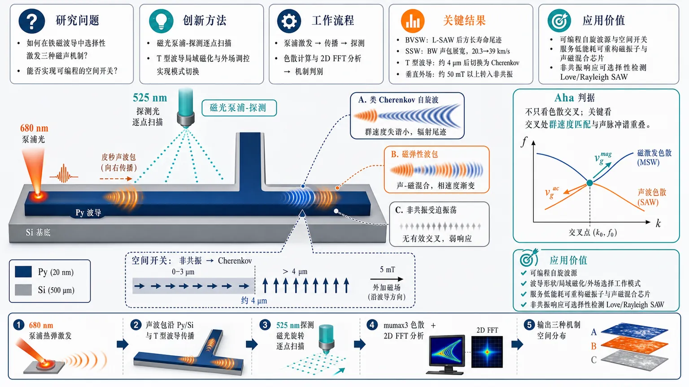
研究问题短皮秒声波包在铁磁波导中与自旋波相遇时，何时会辐射出类 Cherenkov 自旋波、何时形成声-磁混合的磁弹性波包、何时只产生弱的非共振受迫磁化振荡；核心是为这三种看似相近的磁声机制找到可直接成像、可切换的统一判据。创新方法在同一 Py/Si 铁磁波导平台中，用扫描磁光泵浦-探测直接拍摄声波包与磁静波包的时空演化，并提出“Aha”判据：不是只看声波和自旋波色散是否相交，而是看交叉处声波包群速度与磁静波群速度的失谐；T 型波导的局域 90° 磁化旋转像一个空间开关，使单个声脉冲传播途中从非共振区切入 Cherenkov 辐射区。工作流程680 nm 飞秒泵浦光照射 Py 结构边缘，通过热弹膨胀产生皮秒声波包；声波包沿 20 nm Py/(011)-Si 薄膜或 5 μm 宽 T 型波导传播；525 nm 探测光逐点扫描磁光旋转，记录声波和磁化振荡的时空图；结合 mumax3 自旋波色散、声波线性色散和局域二维 FFT，判断声-磁色散交叉、群速度匹配程度与声脉冲谱重叠；最终输出三种机制的空间分布：类 Cherenkov 自旋波尾迹、展宽的磁弹性波包或局域弱受迫振荡。关键结果连续膜中直接看到三种图像特征：BVSW 几何下，L-SAW 后方出现长寿命自旋波尾迹，对应类 Cherenkov 辐射；SSW 几何下，BW 声包明显展宽且相速度在单个波包内从约 20.3 到 39 km/s 变化，对应磁弹性波包；无有效交叉时，仅有局限在声包内部的低振幅非共振磁化响应。T 型波导中，5 mT 轴向外场使磁化沿传播方向局域旋转，单个声脉冲在 0–3 μm 为非共振响应，约 4 μm 后切换为 Cherenkov 发射；垂直外场下，MEW 可随外场升高在约 50 mT 以上转入非共振机制。应用价值该研究把皮秒声脉冲变成可编程的自旋波激发源：通过波导形状、局域磁化方向和外场即可选择“辐射自旋波”“形成混合波包”或“弱耦合探测”三种工作模式，为低能耗、局域可控、可重构的磁振子器件和声磁混合芯片提供设计规则；非共振磁光响应还可用于选择性检测 Love 或 Rayleigh 表面声波。第一部分：核心概览 (Overview)
皮秒声波包在同一 Py/Si 铁磁波导系统中实现三种磁声相互作用：类 Cherenkov 自旋波辐射、磁弹性波包形成、非共振受迫磁化振荡。核心贡献在于用扫描磁光泵浦-探测直接成像三种机制，并以声波与磁静波群速度失谐给出统一判据。T 型波导中的局域磁化旋转进一步实现单个声脉冲传播过程中的原位机制切换，为低能耗、局域可控的磁振子器件提供了实验范式。
---
第二部分：结构化快速回顾
《Switching picosecond magnetoacoustic regimes in a ferromagnetic waveguide》（None，）
背景
磁振子计算需要高效、脉冲式、CMOS 兼容的自旋波激发方式。声表面波可通过磁弹耦合驱动自旋波，但短声波包下的 MEW、Cherenkov-like emission 与非共振受迫响应之间的判据长期不清晰。
方法
使用 20 nm Ni(₈₀)Fe(₂₀) 薄膜和 5 μm 宽 T 型 Py 波导，置于 (011)-Si 基底上；采用 680 nm 泵浦 / 525 nm 探测、200 fs 脉冲、空间扫描磁光泵浦-探测技术，结合 mumax3 微磁模拟与解析模型。
结果
连续膜中直接观测到：
- BVSW 几何下的类 Cherenkov 自旋波辐射；
- SSW 几何下的磁弹性波包；
- 非交叉色散下的非共振受迫磁化振荡。
T 型波导中，局域磁化方向变化使单个声脉冲从非共振机制切换到 Cherenkov 机制，外场调节还可使 MEW 转入非共振机制。
讨论
三种机制由声波包速度与磁静波群速度的失谐控制：大失谐且色散交叉产生 Cherenkov 辐射；群速度匹配产生局域增强的磁弹性波包；无有效交叉则为非共振响应。
局限
体系近似为准一维，无法直接观测 Cherenkov 辐射锥；短声脉冲约一个周期，难以解析传统 MEW 反交叉能隙；Py 磁弹系数较小，信号依赖磁光增强和局域谱重叠。
结论
皮秒磁声相互作用可在单一铁磁波导中通过局域磁化结构与外场实现机制切换；群速度失谐提供了统一设计规则，适用于可重构磁振子与声磁混合器件。
---
第三部分：逐章节冷凝解析 (Section-by-Section Condensing)
Abstract
- Three picosecond magnetoacoustic regimes are unified in one experimental platform
声波既可共振激发自旋波形成磁弹性波，也可非共振驱动受迫磁化振荡；短声波包额外开启此前较少探索的 Cherenkov radiation of spin waves。摘要明确提出问题为三种机制的判据、特征及相互转变：*"This raises a question regarding the criteria and signatures of these three regimes of picosecond magnetoacoustics and transitions between them in confined magnetic structures."*
- Direct observation is achieved in both film and waveguide geometries
扫描磁光泵浦-探测直接成像 thin permalloy film 与 waveguide fabricated on Si substrate 中声波包和磁静波包的耦合：*"we use a scanning magneto-optical pump-probe technique to directly observe all three regimes of interaction between laser-driven acoustic and magnetostatic wavepackets in a thin permalloy film and a waveguide fabricated on Si substrate."*
- Transition criterion is group-velocity detuning
机制切换由磁振子与声子群速度失谐控制，而非仅由频率交叉决定：*"Direct measurements of the phase velocities reveal the transition from a coupled magneto-elastic wavepacket to Cherenkov-like radiation and the non-resonant regime, controlled by the detuning between magnon and phonon group velocities."*
- Back-action appears selectively in the magneto-elastic regime
声脉冲受到磁化动力学反馈仅发生在 magneto-elastic regime：*"The acoustic pulse is found to be affected by the excited magnetization dynamics only in the magneto-elastic regime."*
---
I Introduction
- Magnonics targets efficient information processing beyond CMOS constraints
磁振子器件被定位为高效信息处理方案，已有半加器、二极管、多数门等构件可形成数字计算基础；同时神经形态与储备池计算正在发展。文中给出计算需求背景：*"Increasing demands for computing efficiency drive the search for new ways of processing information."* 以及器件层面基础：*"available magnonic elements such as half-adder, diode and majority gate form a sufficient set for conventional digital computing."*
- Current bottlenecks are excitation efficiency, pulsed operation, and CMOS integration
微磁模拟预测磁振子计算可超越 7-nm CMOS，但前提是自旋波激发效率、脉冲操作和电子集成能力提升：*"Recent micromagnetic simulations predict that magnonic computation can outperform classical 7-nm CMOS technologies, but this requires improved spin-wave excitation efficiency, pulsed operation, and seamless integration with existing CMOS and electronic components."*
- SAW–spin-wave coupling provides an energy-efficient route
表面声波 SAW 与自旋波耦合被视为满足上述需求的重要方向；磁弹耦合已有长期研究历史，可实现声波对自旋波参数的高效、选择性控制：*"One of the promising directions to meet these requirements is to utilize the coupling between spin waves and a surface acoustic waves (SAW)."*；*"This interaction enables acoustic control of spin wave parameters with superior energy efficiency ... and selectivity to various acoustic modes."*
- Short acoustic pulses introduce picosecond magnetoacoustic nonlinearities
短声脉冲使 picosecond magnetoacoustics 中出现无需大振幅的非线性，可用于储备池计算：*"Such a coupling is now actively explored in the modern field of picosecond magnetoacoustics, where short acoustic pulses enable novel dynamics."*；*"the spin wave-SAW coupling becomes a source of nonlinearity that does not require large dynamic amplitudes and can be harnessed for reservoir computing."*
- Two resonant regimes share the same magnetoelastic coupling but differ physically
声脉冲在磁性层中传播可产生两类共振效应：magneto-elastic wave / magnon-polaron 与 Cherenkov-like spin-wave excitation。二者能量转移来源相同，导致机制区分成为基础问题：*"The first is the formation of a coupled magneto-elastic wave (MEW), also called a magnon-polaron."*；*"The second is spin wave excitation through a Cherenkov-like process."*；*"In both effects, the energy transfer between spin wave and lattice oscillations is realized through the same magnetoelastic coupling."*
- Non-resonant forced oscillations complete the three-regime framework
当声波与自旋波色散不相交时，仍可出现非共振受迫磁化振荡：*"a non‑resonant regime of forced magnetization oscillations can also occur when the acoustic and spin‑wave dispersions do not intersect."*
- Single-system demonstration and local switching are central advances
使用激光诱导短声波包，在同一系统中实验展示三种机制，并通过 T 型波导非均匀磁化实现传播过程中的局域切换：*"we experimentally demonstrate all three regimes of magnetoacoustic interaction in a single system: Cherenkov-like spin-wave emission, magnetoelastic wavepacket formation, and non-resonant forced magnetization oscillations."*；*"we experimentally demonstrate local switching between the regimes during the propagation of a single acoustic pulse."*
---
II Methods
- Two sample classes separate mechanism identification and switching demonstration
连续膜用于研究不同皮秒磁声机制，T 型波导用于实现机制切换：*"A continuous film with uniform magnetization is used to investigate various regimes of picosecond magnetoacoustics, while a T-shape waveguide with local magnetization nonuniformities is used to achieve a switching between them."*
- Material stack is 20 nm polycrystalline permalloy on monocrystalline Si
样品为 Ni(₈₀)Fe(₂₀) 多晶坡莫合金，厚度 d = 20 nm，沉积在 (011)-Si 单晶基底上：*"A polycrystalline permalloy (Ni80Fe20, Py) film of thickness d = 20 nm is deposited on a monocrystalline (011)-Si substrate by magnetron sputtering."*
- Low damping and moderate saturation magnetization make Py suitable for accessible spin-wave crossings
Py 的 Gilbert damping (α_G = 0.01)，(M_S = 8 × 10⁵) A m(⁻¹)；较低 (M_S) 降低自旋波频率，使声波与自旋波色散交叉进入实验可测波矢范围：*"Py serves as a model magnonic material with a low Gilbert damping αG = 0.01, allowing clear observation of propagating spin waves."*；*"Its saturation magnetization MS = 8⋅10⁵ A m−1 ... is lower than that of typical magnetoacoustic materials ... which results in lower spin-wave frequencies and thereby brings the intersection point of the acoustic and spin-wave dispersions into the experimentally accessible wavenumber range."*
- Magnetization direction is field-collinear in the continuous film but shape-controlled in the T waveguide
多晶 Py 无面内磁晶各向异性，连续膜中 (M parallel Hₑₓₜ)；T 型波导中局域磁化由外场和形状各向异性共同决定，且保持面内：*"The polycrystalline nature of Py ensures no in-plane magnetocrystalline anisotropy, so the equilibrium magnetization M is collinear with the external in-plane magnetic field Hext."*；*"In the T-shape waveguide with a nonuniform magnetization direction, the local M is determined by the sum of Hext and the shape anisotropy field, and remains strictly in-plane."*
- Fabricated structures include a 500 μm square and a 5 μm-wide T-shaped waveguide
掩膜less激光直写制备边缘质量高的结构：500 μm 横向尺寸方形区域和 5 μm 宽 T 型波导；T 型波导在一定外场范围内发生 90° 磁化旋转：*"we fabricate structures with high edge quality using maskless laser writing: a square of lateral size 500 μm ... and a T‑shaped waveguide of width 5 μm, in which a 90° rotation of the magnetization occurs over a certain range of applied fields."*
- Dispersion modeling combines linear acoustic approximation and mumax3 spin-wave simulations
实验频率范围内声波色散近似线性，自旋波色散由 mumax3 获得：*"The dispersion of acoustic waves in the studied frequency range is taken as linear, which agrees with numerical simulations."*；*"The spin-wave dispersion in the continuous film and in the T-shaped waveguide is obtained from micromagnetic simulations using the mumax3 package."*
- Pump-probe configuration gives femtosecond temporal and submicron spatial resolution
双颜色光学泵浦-探测：泵浦 680 nm、FWHM 0.9 μm；探测 525 nm、FWHM 0.5 μm；脉冲宽度 200 fs，法向入射。可探测波矢至 (k = 1.1,μ m⁻¹)：*"Tightly focused pump (wavelength 680 nm, FWHM = 0.9 μm) and probe (wavelength 525 nm, FWHM = 0.5 μm) pulses of 200 fs duration are incident normally."*；*"This enables detection of waves with wavenumbers up to k = 1.1 μm−1."*
- Acoustic pulses are generated by thermoelastic expansion of Py and enhanced by edge excitation
声波由 Py 膜热弹膨胀产生；裸 Si 上同条件无声信号。泵浦置于 Py 结构边缘，扩展生成 SAW 波矢范围：*"Acoustic waves are generated by thermoelastic expansion of the Py film: no acoustic signal is detected when exciting the bare Si substrate under identical conditions."*；*"The pump spot is placed at the edge of the Py structure ... which extends a range of wavenumbers of the generated SAW’s beyong the one limited by the pump spot diameter."*
- Generated acoustic spectra center at 3.3 GHz with mode-specific central wavenumbers
声波包谱中心 3.3 GHz；对应中心波矢：BW 0.3 μm(⁻¹)、L-SAW 0.6 μm(⁻¹)、R-SAW 0.8 μm(⁻¹)：*"The spectra of generated wavepackets are centered at 3.3 GHz."*；*"For three acoustic wave modes ... the corresponding central wavenumbers are: 0.3 μm−1 (bulk wave, BW), 0.6 μm−1 (Love surface acoustic wave, L-SAW), and 0.8 μm−1 (Rayleigh surface acoustic wave, R-SAW)."*
---
III Results and Discussion
III.1 Picosecond Magnetoacoustics in a continuous film
- Bare Si reveals two nondispersive acoustic packets: R-SAW and BW
裸 (011)-Si 中从 Py 边缘激发出两个短声波包，形状传播中不变，说明群速度色散可忽略；低速 6.0 km s(⁻¹) 归属 Rayleigh SAW，高速 10.3 km s(⁻¹) 归属 bulk longitudinal acoustic wave：*"Two short wavepackets propagate with different group velocities."*；*"their shapes do not change during propagation ... indicating the absence of group velocity dispersion."*；*"we classify the packet that propagates at a lower velocity (6.0 km s−1) as a R-SAW and the one that propagates at a higher velocity (10.3 km s−1) as a BW."*
- Phase velocity is measured directly from waveform tracking
由于波包无明显色散，可通过追踪波形固定点直接测量相速度：*"This allows us to directly measure the phase velocity by tracking a fixed point in the waveform."*
- Py capping introduces Love mode and modifies Rayleigh mode
Py 膜使体系出现 Love acoustic mode，其原子位移为垂直于 (kSAW) 的面内线偏振；Rayleigh 波变为准 Rayleigh 波：*"The presence of the Py film enables an additional Love acoustic mode (L-SAW) with linearly polarized in-plane atomic motion perpendicular to kSAW."*；*"It also modifies the Rayleigh wave into a quasi‑Rayleigh wave."*
- Ferromagnetic film supports both SSW and BVSW depending on magnetization geometry
Py 层支持 surface spin waves (SSW) 与 backward volume spin waves (BVSW)，二者极化取决于平衡磁化方向：*"The ferromagnetic Py layer also enables surface (SSW) and backwards volume (BVSW) magnetostatic waves, whose polarization m depends on the equilibrium magnetization direction MS."*
- BVSW geometry produces Cherenkov-like spin-wave emission
当 (Hₑₓₜ parallel k)，即 BVSW geometry，SAW 后方出现明显振荡，对应声脉冲之后的 BVSW 辐射：*"For Hext || k (BVSW geometry), pronounced oscillations follow the SAW wavepacket."*；*"The emergence of a BVSW following an acoustic pulse corresponds to the Cherenkov-like emission of a spin wave."*
- SSW geometry produces magneto-elastic packet broadening instead of emitted BVSW
当 (Hₑₓₜ perp k)，即 SSW geometry，未观测到 Cherenkov 发射，而是 BW packet 显著展宽：*"For Hext ⟂ k (SSW geometry), such emission is not observed."*；*"Instead, a significant broadening of the BW packet appears."*
- MEW interpretation is supported by phase-velocity variation inside one packet
展宽意味着形成的 MEW 具有非线性色散，不同频率分量以不同相速度传播；单个 BW 波包内测得相速度从 20.3 到 39 km s(⁻¹)：*"The broadening may indicate the nonlinear dispersion of the formed magneto-elastic wavepacket (MEW), which causes different frequency components to travel at different phase velocities."*；*"the measured phase velocity varies across the extent of the single BW packet, taking values from 20.3 to 39 km s−1."*
- Non-resonant magnetization dynamics enhances magneto-optical detection of acoustic packets
相比裸基底，所有波包信噪比显著升高，归因于铁磁层中非共振磁化动力学介导的磁光探测：*"the signal-to-noise ratio is significantly higher for all wavepackets compared to the bare substrate case, which we attribute to magneto-optical detection mediated by non-resonant magnetization dynamics in the ferromagnetic layer."*
---
III.2 Theoretical Model of Interaction Regimes
- Acoustic driving is modeled as a moving Landau-Lifshitz torque
BW/SAW 对 Py 磁化的作用被近似为通过磁弹耦合产生的有效 LL torque (T(x))；力矩大小依赖声波和磁静波相对极化，厚度重叠因 (kd łl 1) 近似为最大：*"The impact of BW/SAW wavepacket on the magnetization of Py layer is approximated by an effective Landau-Lifshitz (LL) torque T(x) via magnetoelastic coupling."*；*"their overlap across the film thickness is assumed to be maximal, as kd ≪ 1."*
- The model isolates generic velocity-detuning physics from mode-specific selection rules
解析模型先忽略具体声模和自旋波模的力矩细节，仅假定耦合非零，以提取一般机制：*"For the sake of generality, in this part of the analysis we disregard the specifics of the LL-torque for particular acoustic and spin wave modes, assuming it to be nonzero."*
- Critical velocity is defined at tangential intersection of acoustic and spin-wave dispersions
在声波与自旋波色散相切交点 (k_c) 附近展开 (f(k))，临界速度满足 (f'(k_c)=f(k_c)/k_c=v_c)：*"We use the Taylor expansion for f(k) near the point kc of the tangent intersection of the acoustic and spin wave dispersion."*；*"The corresponding critical velocity is f′(kc)=f(kc)/kc=vc."*
- Analytic solution gives two excited spin-wave wavenumbers
磁化响应 (m(tildex)) 由驱动力 (T(tildex)) 与两个波矢 (k₁,₂) 的格林函数卷积决定；(tildex=x-vt)，(α) 为 Gilbert 阻尼：*"Equation (1) describes the magnetization dynamics driven by the acoustic pulse without taking into account the back-action on the pulse itself."*；公式中明确给出 *"k1,2 are the wavenumbers of two spin-waves"* 与 *"α is the Gilbert damping parameter."*
- Regime I is Cherenkov-like radiation under dispersion crossing with large group-velocity mismatch
若色散相交但群速度差异明显，两个被激发自旋波从驱动脉冲向前或向后辐射，空间衰减由 Gilbert 阻尼和频率控制：*"In case I, the dispersions intersect but the group velocities differ significantly."*；*"The excited spin waves are radiated away from the pulse: waves with wave numbers k1 and k2 propagate ahead of or behind the driving pulse according to their group velocities."*
- Regime II is localized resonant enhancement under group-velocity matching
当 (v approx v_c)，声脉冲和自旋波群速度近似相等，磁化动力学局域于声脉冲附近并被共振增强：*"In case II, the condition v ≈ vc holds at the dispersions crossing point, meaning that the pulse and the spin waves have nearly equal group velocities."*；*"This leads to a localization of the excited magnetization dynamics around the acoustic pulse and a resonant enhancement of its amplitude."*
- Regime III is low-amplitude non-resonant forced dynamics without dispersion crossing
无色散交叉时，仅存在局限在声脉冲内部的低振幅受迫磁化动力学：*"In case III, the dispersions do not intersect and only a non-resonant, low-amplitude magnetization dynamics is observed, which remains confined within the acoustic pulse."*
- Damping broadens regime transitions and suppresses MEW-like enhancement
将阻尼从近零提高到 (α=0.1) 会扩大群速度失配范围内的过渡，并明显压低 Regime II 的峰值响应；低阻尼 YIG 中应有更锐利切换和更高对比：*"Increasing the Gilbert damping α broadens the transition between the regimes over a wider range of group-velocity mismatch."*；*"The effect is most pronounced for regime II, where increased damping suppresses the peak amplitude of the magnetization dynamics at v ≈ vc."*；*"in low-damping magnetic insulators such as yttrium iron garnet, one would expect both sharper transitions and a dramatically amplified contrast between the regimes."*
- Finite acoustic pulse spectrum suppresses regimes I and III relative to regime II
真实有限尺寸声脉冲按谱重叠调制自旋波激发强度；声脉冲中心设在 (k = 0.7 k_c) 的示意中，Regime II 的脉冲内重叠积分出现尖峰：*"Accounting for a realistic finite‑size acoustic pulse ... modifies the amplitudes of the excited spin waves according to their spectral overlap with the driving pulse."*；*"This leads to a reduction of the amplitude in regimes I and III compared to regime II."*；*"the magnetization dynamics amplitude inside the acoustic pulse (overlap integral) exhibits a sharp peak at regime II."*
- Experimental Cherenkov regime corresponds to L-SAW–BVSW crossing with (v ≠ v_c)
连续膜中 L-SAW 与 BVSW 色散相交但群速度不匹配，对应 (Hₑₓₜparallelk) 下 SAW 后方 BVSW 发射：*"The L-SAW and BVSW dispersion curves intersect, and v ≠ vc."*；*"This is a Cherenkov-like regime manifesting itself in Hext ∥ k geometry through the BVSW following the SAW wavepacket."*
- Short pulse duration is essential for Cherenkov-like emission
对单色声波，同样条件下激发自旋波会局限于声束内，无法辐射离开；短脉冲使 Cherenkov-like emission 成为可能：*"for a monochromatic acoustic wave the excited spin wave under the same conditions would remain confined within the acoustic beam and could not be radiated away."*；*"the Cherenkov‑like emission is enabled specifically by the short duration of the acoustic pulse."*
- Experimental MEW regime corresponds to tangential BW–SSW crossing with (v approx v_c)
BW 与 SSW 色散相切且群速度匹配，对应 (Hₑₓₜperpk) 下 BW 波包展宽：*"The BW and SSW dispersion curves are tangent, with v ≈ vc."*；*"a propagating magneto-elastic wavepacket can form manifesting itself in the broadening of the BW wavepacket."*
- MEW definition is broadened for thin-film-on-substrate hybridization
因 BW 主要在基底传播，与薄 Py 层自旋波杂化是特殊情形；MEW 被定义为交叉附近色散不同于两个未耦合分支的耦合激发：*"Since in our system the BW pulse propagates predominantly in the substrate, its hybridization with spin waves in the thin Py layer represents a special case."*；*"by a magneto-elastic wavepacket we mean a coupled excitation whose dispersion near the crossing point of the acoustic and spin-wave branches differs from both uncoupled dispersions."*
- Non-resonant regime explains enhanced acoustic detection when no shared dispersion point exists
L-SAW/R-SAW 与 BVSW/SSW 无可达交叉时，只能产生非共振相互作用，表现为增强的磁光旋转检测信噪比：*"The L-SAW (R-SAW) dispersion has no shared points with BVSW (SSW)."*；*"only non-resonant interaction is possible, enabling the detection of acoustic wavepackets with an enhanced signal-to-noise ratio via magneto-optical rotation."*
- Cherenkov cone and MEW anticrossing are not directly observable in this geometry
系统准一维，声波前曲率小，无法直接看到 Cherenkov 辐射锥；短声脉冲约一个周期，传统反交叉能隙无法分辨，因此 MEW 通过声包相速度改变识别：*"the problem is quasi-one-dimensional owing to the small curvature of the acoustic wavefront, which prevents direct observation of the radiation cones."*；*"For the MEW regime, the conventional anticrossing gap cannot be resolved for short acoustic pulses (duration of about one period)."*；*"the formation of an MEW is identified by a change in the phase velocity of the acoustic packet upon resonant interaction with the magnetostatic wave."*
---
III.3 In Situ Switching of Interaction Regimes in a T-shaped Waveguide
- Local control requires nonuniform magnetization structures
磁静波色散可由外场调控，但器件应用需要局域控制；T 型波导因形状各向异性可实现局域磁化方向变化：*"The dispersion of magnetostatic waves can be controlled by an external magnetic field."*；*"for magnonic device applications, such control must be performed locally."*；*"This is possible in structures with a nonuniform magnetization direction, a classic example being the T-shaped waveguide."*
- A 5 mT axial field rotates magnetization by 90° along the T waveguide
外场 5 mT 沿结构轴施加时，由局域形状各向异性变化导致磁化沿波导旋转 90°：*"With an external field of 5 mT applied along the structure axis, the magnetization rotates by 90° along the waveguide ... because of the change in the local shape anisotropy."*
- Local dispersion switches from mixed SSW/BVSW character to pure BVSW
通过中心在 (x₀₌₁,μ m) 与 (x₀₌₆,μ m) 的空间高斯窗提取局域色散；从 1 μm 到 6 μm，磁静波色散从 SSW/BVSW 中间型转为纯 BVSW：*"The local magnetostatic-wave dispersion is extracted within the spatial Gaussian windows centered at x0 = 1 and 6 μm."*；*"The dispersion switches from an intermediate type between SSW and BVSW ... to a pure BVSW type when the window is moved from 1 μm to 6 μm."*
- Experiment observes non-resonant to Cherenkov switching during one acoustic-pulse propagation
在 0–3 μm 范围，磁化动力学局限于声脉冲内，为非共振机制；从约 4 μm 开始，声包之后出现长寿命磁化动力学，为 Cherenkov 机制：*"we successfully observe a change in the interaction regime during the propagation of the acoustic pulse."*；*"In the spatial range 0–3 μm, the dynamics is localized inside the acoustic pulse, which we identify as the non‑resonant regime."*；*"Starting at around 4 μm from the excitation area, long‑lived magnetization dynamics emerges after the acoustic packet, corresponding to the Cherenkov mechanism."*
- Windowed 2D FFT verifies the local non-resonant regime near (x=1 μm)
使用 FWHM 2.4 μm 的高斯窗对时空图作局域二维 FFT；(x=1,μ m) 附近 L-SAW 与自旋波交叉落在 (k approx 0.8,μ m⁻¹)，声包谱幅度已显著下降，因此无 MEW 或 Cherenkov：*"we obtain the local experimental dispersion by applying a windowed two-dimensional Fast Fourier Transform ... using Gaussian windows with a FWHM of 2.4 μm."*；*"the crossing point of the L-SAW and spin-wave dispersions falls into the region k ≈ 0.8 μm−1 where the acoustic packet amplitude drops significantly."*；*"neither MEW nor Cherenkov regime of interaction is realized."*
- Cherenkov switching near (x=6 μm) is caused by L-SAW–BVSW crossing at high acoustic spectral amplitude
(x₀₌₆,μ m) 区域，L-SAW–BVSW 交叉位于 (k approx 0.45,μ m⁻¹)，声脉冲谱幅度高，且群速度失配大，导致 Cherenkov 发射；激发波谱密度局域于交叉点附近：*"the crossing point between L-SAW and BVSW dispersions is at k ≈ 0.45 μm−1 corresponding to high spectral amplitude of the acoustic pulse, while the group‑velocity mismatch is large."*；*"As a result of Cherenkov emission, the spectral density of the excited waves is localized near the dispersion crossing point."*
- Increasing field suppresses local switching by overcoming shape anisotropy
外场增大后克服局域形状各向异性，使磁化几乎均匀沿外场排列；BVSW 色散上移，交叉点向更高 (k) 偏离声包中心，整个距离范围由非共振机制主导：*"When the field is increased, it overcomes the local shape anisotropy and the magnetization along the structure axis becomes nearly uniformly aligned with the external field."*；*"the dispersions crossing point shift to the higher k relative to the packet centre, and the non‑resonant regime dominates over the entire range of distances."*
- Perpendicular field gives uniform SSW geometry and enables MEW analysis
当 (Hₑₓₜ) 垂直结构轴，波导轴向磁化在全部场范围内保持均匀，磁静波色散对应 SSW：*"When Hext is applied perpendicular to the structure axis, the magnetization along the axis remains uniform over the entire range of fields ... and the magnetostatic wave disperion corresonds to that of SSW."*
- At 5 mT perpendicular field, SSW–BW crossing satisfies (v approx v_c) and realizes MEW
在可达 (k) 范围、(μ₀ Hₑₓₜ=5) mT 下，只有 SSW 与 BW 色散相交并满足群速度匹配；一个波包对应 MEW，另一个对应与 R-SAW 的非共振相互作用：*"In the accessible range of k at μ0Hext = 5 mT, only the SSW and BW dispersions intersect with v ≈ vc."*；*"One of the wavepackets corresponds to this crossing, suggesting that MEW regime is realized."*；*"Another wavepacket corresponds to the non-resonant interaction with R-SAW."*
- MEW identification relies on field-dependent BW phase velocity rather than anticrossing splitting
短 MEW 波包强空间局域导致频谱离域，传统反交叉分裂不可测；相速度随外场变化成为关键证据：*"For short MEW wavepackets, conventional detection of its signature – an anticrossing splitting ... is precluded by the strong spatial localization of the pulse and the resulting delocalization of its spectrum."*；*"we detect a significant increase in the phase velocity of the BW pulse."*；*"the interaction modifies the SSW and BW dispersion curves, leading to a dependence of the wavepacket phase velocity on Hext."*
- MEW phase velocity increases at lower fields and disappears above ~50 mT
垂直外场下，SSW 色散满足 (v approx v_c)，BW 相速度依赖场强；场降低时相速度升高，脉冲内不同相位速度散布增大。约 50 mT 以上，交叉点移向更大 (k)，相互作用切换为非共振：*"For the perpendicular orientation ... the phase velocity depends on the field magnitude."*；*"As the field decreases, the phase velocity increases, and the spread among the velocities of different packet phases ... grows."*；*"At fields above approximately 50 mT, the crossing point shifts towards larger k, and the interaction switches to the non-resonant regime."*
- Parallel BVSW geometry lacks the MEW-related field dependence
(Hₑₓₜparallelk) 的 BVSW 几何中未观察到类似 BW 相速度场依赖：*"For the parallel orientation (BVSW geometry), no such field dependence is observed."*
---
III.4 Selective coupling between acoustic modes and magnetization dynamics
- Regime switching depends on dispersion positions, group-velocity mismatch, and pulse spectral density
两种共振机制的选择性由声/磁色散相对位置、交叉处群速度失配和声脉冲在交叉波矢处的谱密度共同决定：*"the switching between regimes is governed by relative positions of the acoustic and magnetostatic wave dispersions, group velocity mismatch at the crossing point, and the spectral density of the acoustic pulse at the wavevectors correspondign to the crossing point."*
- Non-resonant selectivity is experimentally BVSW–L-SAW and SSW–R-SAW
非共振机制中观察到 BVSW 与 L-SAW 耦合、SSW 与 R-SAW 耦合：*"In experiment we observe non-resonant coupling of BVSW to L-SAW and SSW - to R-SAW."*
- Phase velocities identify which SAW mode is detected in each geometry
在波导 (x₀₌₆,μ m) 区域测得的 SAW 相速度表明，BVSW 和 SSW 几何中检测到不同速度的 SAW，分别对应 L-SAW 与 R-SAW：*"This selectivity is deduced from the SAW phase velocities obtained in the waveguide within area around x0 = 6 μm."*；*"in the BVSW and SSW geometries, SAWs with different velocities are detected, corresponding to L-SAW and R-SAW respectively."*
- Non-resonant selectivity cannot be explained by dispersion detuning alone
由于 Fig. 3(k) 中非共振耦合的色散失谐关系无法解释这种模式选择，选择性被归因于短激光声脉冲施加于磁化的驱动力特征：*"this selectivity cannot be related to the dispersions detuning."*；*"We attribute the emergence of this selectivity to the features of the driving force inserted on magnetization by short laser-induced acoustic pulses."*
- Field-dependent amplitude confirms magneto-optical detection through non-resonant coupling
在 (x₀₌₆,μ m) 区域积分信号谱密度；外场沿 T 结构轴时，(μ₀Hₑₓₜ=5) mT 处出现峰值，对应 Cherenkov 额外贡献。其他场强和方向下仅有非共振相互作用，信号较低：*"The amplitude was determined as the integral of the spectral density of the signal at area around x0 = 6 μm."*；*"a peak is observed at μ0Hext = 5 mT, corresponding to the additional contribution from the Cherenkov emission."*；*"Under any other field magnitude and direction, only non-resonant interaction is expected and the signal amplitude is indeed lower."*
- Increasing magnetic field suppresses non-resonant detection efficiency
外场升高使磁静波色散向高频移动，非共振相互作用效率下降；66 mT 时幅度下降，88 mT 以上传播波包信号不可探测：*"As the field increases, the magnetostatic-wave dispersions in both geometries shift toward higher frequencies and the efficiency of non-resonant interaction regime diminishes."*；*"further increase to 66 mT results in the amplitude drop, and for fields above 88 mT the signal from the propagating wavepackets is no longer detected."*
- Selective detection of L-SAW or R-SAW becomes a practical output
非共振磁声耦合可作为选择性探测 Love 或 Rayleigh SAW 的机制：*"The observed effect can be used for selective detection of the L- or R‑SAW."*
---
IV Conclusions and Outlook
- Three regimes are experimentally realized within one T-shaped waveguide
单一 T 型波导中通过皮秒声波包实现 Cherenkov-like spin-wave emission、magnetoelastic wavepacket formation 与 non-resonant forced magnetization oscillations：*"we experimentally realized three regimes of picosecond magnetoacoustic interaction – Cherenkov-like spin-wave emission, magnetoelastic wavepacket formation, and non-resonant forced magnetization oscillations – within a single T-shaped waveguide using picosecond acoustic wavepackets."*
- Transition criterion is acoustic–magnetostatic group-velocity detuning
理论模型确立三机制切换判据为声波包与磁静波群速度之间的失谐：*"Using a theoretical model, we established the criterion for the transitions between these regimes, namely the detuning between the group velocities of the acoustic wavepacket and magnetostatic waves."*
- Local switching provides device-level relevance for energy-efficient magnonics
局域磁化结构和外场可在声脉冲传播中切换磁声机制，直接对应可重构、低能耗磁振子器件的需求；摘要与引言共同将意义定位为：*"The development of magnonics requires energy-efficient methods for generating spin waves and controlling their parameters."* 以及 *"local switching between the regimes during the propagation of a single acoustic pulse."*
---
第四部分：深度理解与语言支持 (Understanding & Nuance)
1. 术语解析
Magneto-elastic wavepacket / MEW
Magneto-elastic wavepacket 指声学分支和自旋波分支在交叉附近发生杂化后形成的耦合波包。这里不是简单“声波驱动磁化”，而是声-磁两个自由度共同决定传播相速度和色散。关键细微点：短脉冲条件下无法看到传统反交叉能隙，因此用波包相速度改变识别 MEW。
Cherenkov-like spin-wave emission
Cherenkov-like 表示“类似 Cherenkov”，并非电磁 Cherenkov 辐射本身。核心是移动局域声源的速度关系使自旋波从驱动脉冲中辐射出去。这里的特征不是光锥，而是声脉冲后方或前方出现离开源的磁静波包。准一维几何限制了辐射锥观测，所以使用 “like” 保留物理类比而避免过度声称。
Group-velocity detuning
Group-velocity detuning 是声波包群速度与自旋波群速度之间的偏离量。它比“频率是否相等”更关键：
- 色散交叉但群速度差大 → Cherenkov-like emission；
- 色散交叉且群速度匹配 → MEW；
- 无有效交叉 → 非共振受迫响应。
“detuning” 带有可调谐失配的含义，通常暗示通过外场、结构或材料参数可连续控制。
Forced magnetization oscillations
Forced oscillations 指磁化被外部声致力矩拖动而振荡，但系统未满足本征自旋波共振条件。其振幅低、局域在声脉冲内，但可通过磁光旋转增强声波探测。它不是传播自旋波辐射，也不是强杂化模式。
Backward volume spin wave / BVSW
Backward volume spin wave 是磁化方向与传播方向平行时的磁静波模式，常具有“反向”色散特征，即相速度和群速度关系可不同于普通波。本文中 BVSW 与 L-SAW 的交叉支持 Cherenkov-like emission。
---
2. 疑难查证：复杂概念解释
为什么色散交叉不必然意味着 MEW？
色散交叉只说明某个频率和波矢处，声波和自旋波满足能量-动量匹配。但短声脉冲是一个移动局域源，真正决定相互作用后形态的是群速度关系。
- 若声波包和自旋波群速度相近，自旋波一直“跟着”声波包，能量持续交换，形成局域增强的混合波包，即 MEW。
- 若群速度差很大，自旋波一旦被激发就离开声波包，表现为辐射，即 Cherenkov-like emission。
- 若交叉点落在声脉冲谱幅度很低的 (k) 区域，即使数学上有交叉，实际激发也可能很弱，表现近似非共振。
为什么短声脉冲使 Cherenkov-like emission 成为可能？
单色连续声波近似为无限长周期驱动，激发出的自旋波被锁定在声束中，难以作为离开源的波包被观察。短声脉冲同时具有有限空间宽度和宽波矢谱，像一个移动的局域扰动源。局域源经过某点后，自旋波可以以自己的群速度继续传播，从而在声包后方或前方留下独立磁化振荡。
为什么 MEW 的证据不是反交叉而是相速度改变？
传统 MEW 或 magnon-polaron 通常通过频率-波矢图中的反交叉能隙确认。但这里声脉冲持续时间约一个周期，空间很局域，导致频谱很宽，反交叉小间隙难以分辨。相反，耦合后波包内不同相位点以异常相速度传播，例如连续膜中 BW 波包相速度从 20.3 到 39 km s(⁻¹)，这比裸声波速度显著异常，更适合作为短脉冲 MEW 指纹。
为什么 T 型波导能实现“同一个声脉冲”的机制切换？
声脉冲沿波导传播时，局域磁化方向因形状各向异性从近 SSW 几何旋转到 BVSW 几何。磁化方向改变会重塑磁静波色散，使声波与自旋波交叉位置和群速度失配随空间变化。于是同一个 L-SAW 或 BW 脉冲在前段可能只是非共振驱动，传播到后段后满足 L-SAW–BVSW 交叉与大群速度失配条件，转为 Cherenkov-like emission。
---
第五部分：创新评估与关联 (Synthesis & Novelty)
1. 创新性判断
From isolated demonstrations to a unified three-regime map
近年相关工作分别展示过磁弹性波、声驱动自旋波或 Cherenkov-like 激发，但通常局限于单一机制、单一材料或单一几何。该研究的创新在于同一 Py/Si 平台中直接观察三种机制，并用一个统一参数——声波与磁静波群速度失谐——组织三者关系。
Transition criterion moves beyond simple dispersion crossing
前人常把声-磁相互作用理解为频率与波矢匹配问题，即“色散是否相交”。该工作进一步区分：
- 有交叉 + 大群速度失配 → Cherenkov-like；
- 有交叉 + 群速度匹配 → MEW；
- 无有效交叉或谱重叠弱 → 非共振。
这解决了 MEW 与 Cherenkov-like 两种共振机制同源于磁弹耦合却难以区分的问题。
Direct real-space observation of switching during propagation
T 型波导中的局域磁化旋转实现了“空间内机制切换”，而不是仅通过更换样品或改变全局场获得不同结果。单个声脉冲在传播中从非共振转入 Cherenkov-like emission，展示了可编程声磁波导的基本雏形。
Short-pulse regime clarifies signatures inaccessible to continuous-wave experiments
短声脉冲使 Cherenkov-like emission 得以辐射离开声源，也使传统反交叉难以解析。该研究提出以波包展宽、相速度异常、局域 FFT 谱密度、传播后磁化振荡作为皮秒磁声机制判据，补充了连续波磁声学中以反交叉为核心的诊断框架。
Non-resonant coupling is reframed as useful acoustic-mode selectivity
非共振响应通常被视为弱背景信号；这里显示其可用于选择性检测 L-SAW 或 R-SAW，并且选择性来自短激光声脉冲对磁化的驱动力结构，而非简单色散失谐。这为声学模式读出和磁光声波探测提供了新的器件功能。
Device relevance is concrete but not yet complete
对低能耗磁振子计算的意义在于：声波可高效激发自旋波，局域磁化结构可选择相互作用机制，外场可开关 MEW/非共振/Cherenkov-like 响应。仍需进一步解决的问题包括：降低外场需求、提高磁弹耦合强度、实现片上电声激发替代光泵浦、量化能耗与级联逻辑可靠性。
-
09
📊 含图深析
📄 摘要：在外延 BaTiO3/YBa2Cu3O7-δ 薄膜中，通过精确控制生长条件与氧化学计量，并结合压电力显微镜和中子反射，验证双层与异质结构都存在铁电翻转，为铁电近邻调制超导临界温度提供实验基础。
💡 亮点：BaTiO3/YBCO 外延异质结构中同时保留铁电翻转与可控界面结构。它为“铁电调超导 Tc”的近邻效应提供直接材料证据。
📖 展开分析 + 配图
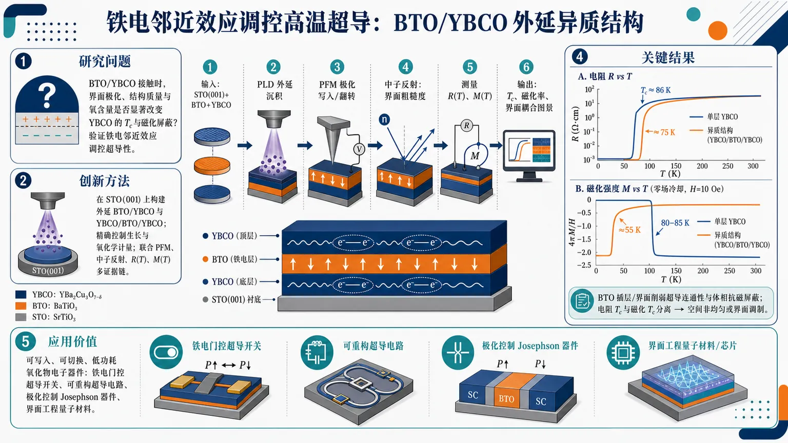
研究问题铁电 BaTiO₃ 与高温超导 YBa₂Cu₃O₇₋δ 接触时，界面极化、结构质量与氧含量是否会显著改变 YBCO 的超导转变温度和磁化屏蔽响应；核心是验证“铁电邻近效应调控超导性”这一理论预言是否能在外延氧化物异质结构中被实验观察。创新方法构建 SrTiO₃(001) 衬底上的外延 BTO/YBCO 与 YBCO/BTO/YBCO 异质结构，用 PLD 精确控制生长条件和氧化学计量；Aha 点在于把可切换铁电极化、低粗糙度埋藏界面和高温超导层放入同一材料平台，并用 PFM、中子反射、电阻 R(T)、磁化 M(T) 形成多证据链，而不是只凭单一输运曲线判断耦合。工作流程输入为 STO(001) 衬底、BTO 铁电层和 YBCO 超导层；先用 PLD 外延沉积单层 YBCO 与 YBCO/BTO/YBCO 多层膜，并控制氧含量；再用 PFM 显示 BTO 极化可写入与翻转，用中子反射描绘埋藏界面粗糙度；随后测量电阻-温度曲线和磁化-温度曲线；最终输出单层与异质结构的 Tc、磁化率和界面耦合差异图景。关键结果单层 YBCO 表现出较高超导转变：电阻 Tc 约 86 K，磁化 Tc 约 80–85 K；相同条件下的 YBCO/BTO/YBCO 异质结构明显被压低：电阻转变约 75 K，磁化转变约 55 K，并伴随整体磁化率下降。结果显示 BTO 插层或 BTO/YBCO 界面显著削弱超导连通性和体相抗磁屏蔽，且电阻 Tc 与磁化 Tc 的差异暗示空间非均匀超导或界面调制效应。应用价值该研究为铁电极化调控高温超导提供实验材料平台，可用于发展可写入、可切换、低功耗的氧化物电子器件；潜在应用包括铁电门控超导开关、可重构超导电路、极化控制的 Josephson 器件以及界面工程量子材料。第一部分：核心概览 (Overview)
该研究围绕铁电体 BaTiO₃ 与高温超导体 YBa₂Cu₃O₇₋δ 的界面耦合展开，通过 PLD 外延生长、PFM、 neutron reflectometry、电阻与磁化测量，展示 BTO/YBCO 异质结构中超导转变温度与磁化响应相较单层 YBCO 明显降低。核心贡献在于把理论预言的铁电极化调控超导性推进到可实验表征的氧化物异质结构体系中，并强调多技术联合表征对识别细微界面耦合的重要性。
---
第二部分：结构化快速回顾
《Ferroelectric--Superconducting Interaction in Epitaxial YBa2Cu3O7-δ/BaTiO3 Films》（None，）
背景
微观理论预测，超导层靠近铁电材料时，其临界温度可能被显著调制；但实验层面的直接证据仍不足。BTO/YBCO 异质结构因此成为研究铁电—超导相互作用的关键平台。
方法
采用脉冲激光沉积（PLD）在 SrTiO₃ (001) 衬底上生长 BaTiO₃/YBa₂Cu₃O₇₋δ 异质结构，并控制生长条件与氧化学计量。使用 PFM 验证铁电开关行为，使用中子反射评估埋藏界面粗糙度，使用 R(T) 与 M(T) 测量超导转变。
结果
单层 YBCO 的电阻转变温度 TCR ≈ 86 K，磁化转变温度 TCM ≈ 80–85 K。相同条件下生长的 YBCO/BTO/YBCO 异质结构表现出更低转变温度：电阻约 75 K，磁化约 55 K，同时整体磁化率降低。
讨论
BTO/YBCO 界面具备低粗糙度，这对铁电极化与超导态之间的界面耦合至关重要。电输运与磁测量给出的转变温度不完全一致，提示异质结构中的超导性可能具有空间非均匀性、界面退化、氧含量变化或极化诱导调制等复杂因素。
局限
现有摘要信息未给出薄膜厚度、PLD 参数、氧分压、退火条件、PFM 电压窗口、neutron reflectometry 拟合参数、误差条、重复样本数、统计显著性或极化方向依赖测试，因此无法定量区分铁电耦合、应变、氧亏损、界面粗糙度与厚度效应的相对贡献。
结论
BTO/YBCO 异质结构展现出铁电功能与超导响应之间的可探测关联，是发展可调控氧化物电子学与可重构超导器件的候选材料体系。
---
第三部分：逐章节冷凝解析 (Section-by-Section Condensing)
当前可用材料仅包含 arXiv 页面元数据与摘要，未包含完整 PDF 正文、引言、实验方法、结果、讨论、结论等原始章节。以下严格基于已提供英文内容进行解析；无法访问的章节不进行臆造。
---
Abstract
#### Theoretical motivation: Ferroelectric proximity may modify superconducting Tc
铁电—超导邻近效应构成研究动机。微观理论预测，当超导层与铁电材料相邻时，超导临界温度可能发生强烈变化。关键原文为：*"Microscopic theories predict that the critical temperature of a superconducting layer can be strongly modified in proximity to a ferroelectric; however, experimental evidence is lacking."*
该句包含两个核心判断：第一，临界温度 Tc 是主要可观测量；第二，理论预言已有，但实验实证不足。这将研究定位在“理论预测—实验缺口”的交叉点。
#### Materials platform: BTO/YBCO heterostructures on STO (001)
实验材料体系为 BaTiO₃/YBa₂Cu₃O₇₋δ 异质结构，衬底为 SrTiO₃ (001)。原文表述为：*"We report on BaTiO3 (BTO)/YBa2Cu3O7-δ (YBCO) heterostructures grown on SrTiO3 (001) substrates using pulsed laser deposition (PLD), with precise control of growth conditions and oxygen stoichiometry."*
该体系具有明确物理分工：BTO 提供铁电极化，YBCO 提供高温超导性，STO (001) 提供外延模板。氧化学计量被特别强调，因为 YBCO 的超导转变温度对 δ 值高度敏感，氧亏损可显著改变载流子浓度与超导相。
#### Growth method: PLD with oxygen stoichiometry control
薄膜通过 pulsed laser deposition, PLD 生长。原文中的关键信息为：*"using pulsed laser deposition (PLD), with precise control of growth conditions and oxygen stoichiometry."*
PLD 常用于复杂氧化物外延薄膜，优势在于可较好维持靶材化学成分转移。对 YBCO 而言，氧含量控制尤其关键，因为 YBa₂Cu₃O₇₋δ 中 δ 的变化直接影响 CuO 链、空穴掺杂与 Tc。因此，“precise control”在此不仅是工艺描述，也是排除氧亏损伪效应的必要条件。
#### Ferroelectric verification: PFM confirms switching in single-layer and heterostructured films
压电响应力显微镜（PFM）验证了铁电开关行为。直接证据为：*"Piezoresponse force microscopy confirms ferroelectric switching within both single-layer and heterostructured films."*
该结果说明 BTO 在单层膜及异质结构中仍保持可切换极化，而不是因外延应变、界面电荷、漏电或上层 YBCO 覆盖而完全丧失铁电性。PFM 的意义在于证明体系具备可用于调控超导层的铁电自由度。
#### Interface quality: Neutron reflectometry indicates low buried-interface roughness
中子反射测量显示埋藏界面粗糙度较低。原文为：*"Neutron reflectometry measurements show low roughness parameters for the buried interfaces, which is critical for mediating the interfacial coupling between superconductivity and ferroelectric polarization."*
低粗糙度界面对于研究铁电—超导耦合至关重要。若界面粗糙或互扩散严重，观测到的 Tc 改变可能来自结构缺陷、界面死层、化学混合或氧迁移，而非真实的铁电极化调控。这里的 buried interfaces 指被上层薄膜覆盖、不能直接通过普通表面显微技术观察的内部界面。
#### Single-layer YBCO benchmark: Resistive Tc around 86 K
单层 YBCO 的电阻转变温度约为 86 K。原文为：*"The superconducting transition temperature (TCR) measured from the R(T) curve of the single-layer YBCO was approximately 86 K"*。
TCR 表示由电阻—温度曲线得到的超导转变温度。该数值为异质结构比较提供基准。对于接近最佳掺杂的 YBCO，Tc 常接近 90 K；约 86 K 说明薄膜具备较好的超导性，但可能仍受薄膜厚度、应变、缺陷或氧含量影响。
#### Single-layer YBCO magnetic transition: TCM around 80–85 K
单层 YBCO 的磁化测量给出 TCM ≈ 80–85 K。原文为：*"and a transition temperature (TCM) of approximately 80-85 K was observed from the M(T) curve."*
TCM 与 TCR 不完全相同。电阻测量反映形成连续无阻路径的温度，磁化测量则反映体相抗磁屏蔽与超导体积分数。80–85 K 稍低于 86 K，提示薄膜可能存在超导体积分数、磁通穿透、厚度或局部非均匀性的影响。
#### Heterostructure transport suppression: Resistive transition near 75 K
相同条件下生长的 YBCO/BTO/YBCO 异质结构电阻转变温度约为 75 K。原文为：*"For the heterostructure film (YBCO/BTO/YBCO) grown under the same conditions, both resistivity and magnetization measurements indicate lower transition temperatures of approximately 75 K and approximately 55 K, respectively"*。
与单层 YBCO 的 TCR ≈ 86 K 相比，异质结构电阻转变下降约 11 K。这一差异可能反映 BTO 插层或界面对 YBCO 超导通道造成调制，包括载流子密度变化、应变改变、界面散射、氧迁移或极化电场效应。
#### Heterostructure magnetic suppression: Magnetic transition near 55 K and lower susceptibility
异质结构磁化转变温度约为 55 K，且整体磁化率更低。原文为：*"as well as a lower overall susceptibility."*
磁化转变从单层 YBCO 的 80–85 K 降至约 55 K，降低幅度约 25–30 K，明显大于电阻转变下降幅度。该差异说明异质结构中可能存在较早形成的局部超导电流路径，但整体体相超导屏蔽较弱；也可能存在超导层被分割、界面退化、有效超导体积分数降低或磁通钉扎行为改变。
#### Methodological implication: Multiple techniques are necessary
多技术联合表征是识别铁电—超导耦合细节的必要条件。原文明确指出：*"These findings highlight the need to combine multiple techniques to characterize BTO/YBCO heterostructures and identify subtle features of the ferroelectric--superconducting coupling."*
单独依赖 R(T) 可能高估连通超导路径的代表性；单独依赖 M(T) 可能受超导体积分数、磁场条件和样品几何影响。PFM、neutron reflectometry、电输运和磁化测量的组合可以分别约束铁电性、界面质量、电学超导转变、磁性超导体积分数。
#### Application outlook: Tunable oxide electronics and reconfigurable superconducting devices
BTO/YBCO 被定位为可调氧化物电子学与可重构超导器件的候选体系。原文为：*"This establishes BTO/YBCO heterostructures as promising systems for tunable oxide electronics and reconfigurable superconducting devices."*
这里的应用逻辑是：若 BTO 极化方向可逆切换，并能稳定调制 YBCO 的超导性质，则可构建基于铁电门控的超导开关、可重构 Josephson 网络、低功耗超导逻辑或极化可写入的超导电路元件。
---
Subjects
#### Disciplinary placement: Superconductivity, materials science, and quantum physics
学科归属包括 Superconductivity、Materials Science 与 Quantum Physics。页面列出：*"Subjects: Superconductivity (cond-mat.supr-con) ; Materials Science (cond-mat.mtrl-sci); Quantum Physics (quant-ph)"*。
该归类显示研究同时涉及三层问题：第一，高温超导薄膜的转变温度与磁响应；第二，复杂氧化物外延与界面结构；第三，铁电极化与超导凝聚态之间的量子耦合机制。
---
第四部分：深度理解与语言支持 (Understanding & Nuance)
1. 术语解析
#### Proximity to a ferroelectric
*"in proximity to a ferroelectric"* 不只是“靠近铁电体”，而是指超导层处于铁电材料附近时，铁电极化、电场、界面电荷、应变或局域结构畸变可能影响超导电子态。这里的 proximity 具有凝聚态物理中的“邻近效应”含义，不等同于简单空间接触。
#### Critical temperature
Critical temperature 指超导体从正常态进入超导态的转变温度，即 Tc。在该研究中存在两个实验定义：
- TCR：从 R(T) 电阻曲线提取；
- TCM：从 M(T) 磁化曲线提取。
二者可能不同，因为电阻为零只要求存在贯通超导路径，而磁化抗磁响应要求更大体积分数参与屏蔽。
#### Oxygen stoichiometry
Oxygen stoichiometry 指氧含量与理想化学式的偏离程度。YBa₂Cu₃O₇₋δ 中的 δ 决定氧缺位浓度。δ 增大通常会降低空穴掺杂并压低 Tc。因此，“precise control of oxygen stoichiometry”是判断 Tc 改变是否来自铁电耦合而非氧亏损的关键前提。
#### Buried interfaces
Buried interfaces 指位于多层薄膜内部、被其他材料覆盖的界面。普通 AFM 只能看表面形貌，无法直接观测内部界面。Neutron reflectometry 可通过深度方向散射长度密度变化拟合层厚、界面粗糙度与层间结构，因此适合研究 BTO/YBCO 内部界面。
#### Lower overall susceptibility
Lower overall susceptibility 指样品对外加磁场的整体响应减弱。对于超导体，低温抗磁磁化率通常反映 Meissner 屏蔽能力和超导体积分数。异质结构磁化率降低意味着有效超导体积分数、屏蔽连通性或磁通排斥能力下降。
---
2. 疑难查证
#### 为什么电阻 Tc 和磁化 Tc 可以相差很大？
电阻测量只需要样品中形成一条连续的超导路径，电阻就可能接近零。因此，若异质结构中只有部分 YBCO 区域保持较高 Tc，只要这些区域连成通路，R(T) 仍可显示较高转变温度。
磁化测量反映整个样品的抗磁屏蔽能力，需要较大体积分数进入超导态并形成有效屏蔽电流。若超导区域零散、界面层退化、BTO 插层破坏电流环路或有效超导厚度降低，M(T) 给出的转变温度会更低，磁化率也会下降。
因此，异质结构中 TCR ≈ 75 K 而 TCM ≈ 55 K 并不矛盾；它更可能说明超导性在空间上不均匀，电学连通性与体相屏蔽能力被不同机制控制。
#### 铁电极化如何影响超导性？
BTO 的铁电极化可在界面处产生束缚电荷。为屏蔽这些束缚电荷，YBCO 近界面区域的载流子浓度会发生改变。对于 YBCO 这类铜氧化物高温超导体，Tc 对空穴掺杂非常敏感，因此界面电荷调制可能导致 Tc 上升或下降。
此外，BTO 的铁电畸变还可能通过外延应变影响 YBCO 的晶格参数、Cu–O 键长、CuO₂ 平面结构和链层氧排列。实际观测到的 Tc 改变可能是电荷调制、应变耦合、氧迁移、界面散射和结构缺陷共同作用的结果。
#### 为什么低界面粗糙度很重要？
铁电极化调控通常是界面局域效应，作用长度有限。若 BTO/YBCO 界面粗糙，局部厚度、接触面积、应变状态和电荷补偿条件都会不均匀，导致耦合信号被结构无序掩盖。
低粗糙度界面提高了以下判断的可信度：
- Tc 变化不是单纯由粗糙界面造成的弱连接；
- BTO 极化可以更均匀地作用于 YBCO；
- neutron reflectometry 拟合得到的层状结构更接近真实样品；
- 铁电—超导耦合可作为器件物理机制进一步研究。
---
第五部分：创新评估与关联 (Synthesis & Novelty)
1. 创新性判断
#### Experimental move from theoretical prediction to oxide heterostructure evidence
核心新颖性在于把“铁电邻近效应可显著调控超导 Tc”的理论预言推进到 BTO/YBCO 外延异质结构实验体系。摘要明确给出研究缺口：*"Microscopic theories predict that the critical temperature of a superconducting layer can be strongly modified in proximity to a ferroelectric; however, experimental evidence is lacking."*
#### Coupled characterization of ferroelectricity, buried interfaces, and superconductivity
相较于只测电阻或只展示铁电开关的工作，该研究同时使用 PFM、neutron reflectometry、R(T)、M(T)，覆盖了铁电性、界面结构、电输运超导转变与磁性超导体积分数。创新点不只是制备 BTO/YBCO，而是把多个证据链合并，用于识别微弱且容易被伪效应掩盖的铁电—超导耦合。
#### Direct comparison between single-layer YBCO and YBCO/BTO/YBCO
单层 YBCO 与异质结构在相同生长条件下对比，形成关键证据链：
- 单层 YBCO：TCR ≈ 86 K，TCM ≈ 80–85 K；
- YBCO/BTO/YBCO：TCR ≈ 75 K，TCM ≈ 55 K。
这种对比显示 BTO 插入或界面形成后，超导转变与磁化响应显著改变，为铁电—超导相互作用提供实验线索。
#### Potential advance over recent related work
在过去 2–5 年相关复杂氧化物研究中，常见重点包括铁电门控、氧化物二维电子气、超导薄膜应变调控、YBCO 界面工程或 BTO 铁电薄膜表征。该研究的潜在推进点在于将可切换铁电极化、高温超导 YBCO与埋藏界面结构质量评估整合到同一外延体系中，并用电阻与磁化两种超导指标呈现差异化响应。
#### Unresolved problem addressed
前人难点通常在于无法区分以下因素：
- 铁电极化真实调控超导载流子；
- 氧亏损改变 YBCO 掺杂；
- 界面粗糙或互扩散破坏超导层；
- 应变改变晶格与电子结构；
- 电阻转变不代表体相超导。
该研究通过强调 oxygen stoichiometry control、PFM ferroelectric switching、low roughness buried interfaces、R(T) 与 M(T) 对照，尝试把这些混杂因素分开处理。
#### Remaining uncertainty in novelty assessment
完整评估仍需要全文中的文献综述、样品设计、厚度序列、极化写入前后 Tc 对比、误差分析和可重复性数据。现有摘要无法确认 Tc 降低是否由铁电极化方向可逆控制，也无法确认是否完成“极化写入—超导响应变化—极化反转—超导响应恢复”的闭环实验。若缺少该闭环证据，创新性更偏向材料平台建立与多模态表征；若全文包含该闭环证据，则创新性可提升为铁电可重构高温超导调控的直接实验证明。
-
10
📊 含图深析
📄 摘要：利用相位分辨扫描隧道显微镜在 d 波交替磁体 Rb₁₋δV₂Te₂O 中发现由对称性驱动的有限 q 电荷序列级联：一级电荷密度波先重构电子结构，随后出现向列分量和离轴调制，揭示晶体对集体电子序的组织作用。
💡 亮点：在 Rb₁₋δV₂Te₂O 中直接看到有限 q 电荷序列级联，并伴随向列和离轴调制。说明交替磁晶体对电子有序的选择远比预期更丰富。
📖 展开分析 + 配图
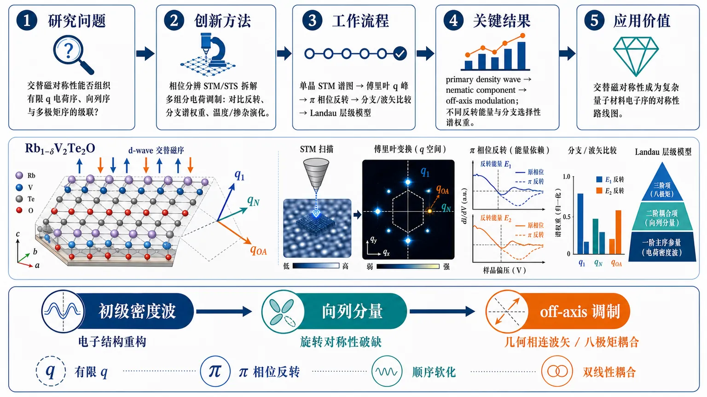
研究问题在 d-wave 交替磁体 Rb₁₋δV₂Te₂O 中，晶体/交替磁对称性是否不仅塑造自旋劈裂能带，还能像“规则模板”一样组织有限动量电荷序、向列序与多极矩序的逐级出现？创新方法利用相位分辨 STM/STS 像“电子显微地图”一样拆解多组分电荷调制：通过不同电荷序的对比反转能量、off-axis 模式的分支选择性谱权重转移，以及温度/掺杂演化，识别出 primary density wave → nematic component → off-axis modulation 的对称性驱动级联；Aha 点是把交替磁对称性从能带劈裂机制扩展为集体电子序的组织原则。工作流程输入为 Rb₁₋δV₂Te₂O 单晶表面的 STM/STS 空间谱图；先在实空间和傅里叶空间提取有限 q 电荷调制峰；再用相位分辨谱学追踪不同能量下亮暗条纹的 π 相位反转；随后比较各调制组分的反转能量、谱权重分支和波矢几何关系；最后结合温度与掺杂演化，构建由初级密度波触发、向列分量跟随、off-axis 调制生成的多级电荷序层级，并用 Landau 顺序软化和八极矩双线性耦合解释。关键结果发现一个清晰的有限 q 电荷序级联：初级密度波首先引发电子结构重构；随后出现破坏旋转对称性的向列分量；再进一步产生波矢与前序电荷序几何相连的 off-axis 调制。不同组分具有彼此分离的对比反转能量，off-axis 模式内部显示分支选择性谱权重再分配，说明这些不是单一 CDW 的谐波或噪声，而是相互耦合、逐级软化的独立电子序。应用价值该研究展示了交替磁对称性可以作为设计和理解复杂量子材料中多组分电子序的“对称性路线图”，有助于解析电荷序、向列序、多极矩序和自旋劈裂能带之间的纠缠关系，并为未来调控关联材料中的新型多体态、自旋电子学材料和对称性工程器件提供概念基础。第一部分：核心概览 (Overview)
该研究在 d-wave altermagnet Rb₁₋δV₂Te₂O 中发现由晶体对称性驱动的多级有限动量 charge order cascade。核心贡献在于把 altermagnetic symmetry 的作用从非相对论自旋劈裂能带扩展到集体电子序的组织机制：初级密度波诱发电子重构，随后出现 nematic component 与几何相关的 off-axis modulation，并通过相位分辨 STM/STS 区分不同组分的反转能量与谱权重转移。该工作把 电荷序、电子多极矩、对称性降低、Landau 级联软化 统一到一个实验—理论框架中，为理解交关联量子材料中的多组分纠缠序提供了新的范式。
---
第二部分：结构化快速回顾
《Discovery of a symmetry-driven electronic cascade in a d-wave altermagnet》（None，）
背景
Altermagnets 同时具有磁补偿与非相对论自旋劈裂能带，这种共存由晶体对称性允许。已有研究主要关注其能带层面的新奇性，而 crystal symmetry 是否还能组织 collective electronic order 仍未充分探索。
方法
采用 phase-resolved scanning tunneling microscopy 研究 d-wave altermagnet Rb₁₋δV₂Te₂O 中的有限波矢电荷调制。相位分辨谱学用于区分不同电荷序组分的 contrast-inversion energies，并追踪 off-axis 模式中的 branch-selective spectral-weight redistribution。结合掺杂与温度演化，构建多级电荷序的层级关系。
结果
发现一个由对称性驱动的电子级联：首先出现 primary density-wave instability 并导致电子结构重构；随后产生 nematic component；进一步出现波矢与前序电荷序几何关联的 off-axis modulation。不同组分具有不同的对比反转能量，off-axis 模式表现出分支选择性的谱权重再分配。
讨论
实验现象符合 successive symmetry lowering：电子系统并非一次性形成单一电荷序，而是经历一系列相互耦合的密度波不稳定性。Landau 框架中，多个电荷序依次软化，并在较低对称性阶段通过与兼容的 octupolar partners 双线性耦合而互相稳定，形成 intertwined charge-multipole state。
局限
所提供内容未包含完整正文、图像、补充材料、样品数量、温度范围、掺杂定量、STM 扫描参数、能量数值、统计误差、拟合细节、Landau 自由能显式形式及参考文献比较，因此无法核验全部实验可重复性、定量显著性与模型唯一性。
结论
Altermagnetic symmetry 不仅塑造非相对论自旋劈裂能带，还能组织多级集体电荷序。Rb₁₋δV₂Te₂O 提供了一个透明案例，显示对称性可驱动从密度波到向列序、再到 off-axis 调制的电子级联。
---
第三部分：逐章节冷凝解析 (Section-by-Section Condensing)
当前可解析的原始内容仅包含 arXiv 元数据与 Abstract；未提供完整 PDF 正文，因此无法严格恢复 Introduction、Results、Discussion、Methods、Supplementary Information 等原始章节标题。以下按照已给出的原始标题与摘要内容进行逐项冷凝。
---
Abstract
Altermagnetism combines magnetic compensation with spin-split bands
Altermagnets 的关键物理特征是同时具有 magnetic compensation 与 non-relativistic spin-split bands。这一区别于传统铁磁体和反铁磁体：铁磁体有净磁矩并常伴随自旋劈裂；常规反铁磁体磁矩补偿但通常不产生类似铁磁体的动量依赖自旋劈裂。该体系中的共存由 crystal symmetry 允许，而非仅由自旋轨道耦合或外磁场驱动。原文直接表述为：*"Altermagnets host magnetic compensation together with non-relativistic spin-split bands, a coexistence enabled by crystal symmetry."*
The central unresolved question concerns collective electronic order
研究问题聚焦于 crystal symmetry 是否组织 collective electronic order。已有 altermagnet 研究多强调能带结构、自旋劈裂、反常输运或自旋电子学潜力；这里的问题进一步推进到多体层面：对称性是否不仅决定单粒子能带，也决定有限波矢电荷序、向列序与多极矩序的出现顺序和耦合方式。摘要明确指出这一空白：*"Yet whether and how crystal symmetry organizes collective electronic order remains largely unexplored."*
A finite-q charge-order cascade is discovered in Rb₁₋δV₂Te₂O
实验对象是 d-wave altermagnet Rb₁₋δV₂Te₂O。发现的核心现象是 symmetry-driven cascade of finite-q charge order，即多个有限波矢电荷调制不是孤立出现，而是按层级级联发生，并且其层级关系受对称性约束。摘要中的关键原句为：*"Here we uncover a symmetry-driven cascade of finite-q charge order in a d-wave altermagnet Rb₁₋δV₂Te₂O, using phase-resolved scanning tunneling microscopy."*
Phase-resolved STM is the principal experimental probe
主要方法是 phase-resolved scanning tunneling microscopy。该方法不仅测量局域态密度，还解析电荷调制的相位信息，因此能够区分不同波矢、不同相位、不同能量反转行为的电荷序组分。相较普通 STM topography 或 Fourier-transform STM，phase-resolved 分析更适合识别多组分密度波之间的层级关系。原文依据为：*"using phase-resolved scanning tunneling microscopy."*
A primary density-wave instability triggers the first electronic reconstruction
级联的第一步是 primary density-wave instability。该不稳定性驱动初始 electronic reconstruction，意味着电子态密度、费米面相关散射或能带占据发生重组。这里的“primary”说明它在层级中处于先导地位，后续序参量并非独立原生，而与该初级密度波相关。原文表述为：*"A primary density-wave instability drives an initial electronic reconstruction..."*
A nematic component emerges after the primary density wave
第二级现象是 nematic component 的出现。Nematicity 通常指电子系统自发降低旋转对称性而不必破坏平移对称性；在电荷序背景下，它可表现为不同晶轴方向上的调制强度不等、相位关系破缺或 C₄/C₆ 到 C₂ 的有效对称性降低。摘要指出该组分在初级重构之后出现：*"...followed by the emergence of a nematic component..."*
An off-axis modulation appears with geometrically constrained wave vectors
第三级现象是 off-axis modulation。其波矢并非任意出现，而是与此前形成的序参量存在几何关系，说明级联过程具有强约束性。这里的 geometrically tied 暗示 off-axis 波矢可能由前序波矢的和差、旋转、投影或对称性允许组合产生。摘要原句为：*"...and an off-axis modulation with wave vectors geometrically tied to the preceding orders."*
Different charge-order components have distinct contrast-inversion energies
Phase-resolved spectroscopy 发现不同组分具有彼此独立的 contrast-inversion energies。在 STM/STS 中，contrast inversion 指某一电荷调制在特定能量附近相位翻转，例如亮暗条纹互换，通常反映粒子—空穴非对称性、能隙边缘、能带重构或局域态密度调制机制不同。不同反转能量说明这些组分并非同一调制的简单谐波，而具有不同电子起源或耦合通道。摘要证据为：*"Phase-resolved spectroscopy distinguishes these components through separate contrast-inversion energies..."*
The off-axis mode shows branch-selective spectral-weight redistribution
off-axis 模式内部出现 branch-selective spectral-weight redistribution。这说明并非所有等价或近似等价的分支都以相同方式重排谱权重；某些分支在特定能量或动量方向上增强，另一些减弱。该结果支持 off-axis 调制具有内在结构，而不是噪声、畴边界或单一电荷密度波的简单副产物。摘要原句为：*"...and maps out branch-selective spectral-weight redistribution within the off-axis mode."*
Doping and temperature evolution establish a coordinated hierarchy
通过 doping evolution 与 temperature evolution，多个电荷序之间的层级关系得到建立。若不同序参量随掺杂和温度依次出现、消失或强弱转移，则可支持“级联”而非“偶然共存”的解释。摘要直接指出这些观测建立了高度协调的密度波层级：*"Together with doping and temperature evolution, these observations establish a highly coordinated hierarchy of coupled density-wave instabilities..."*
The observed hierarchy is consistent with successive symmetry lowering
多级电荷序与 successive symmetry lowering 一致。初级密度波先降低部分对称性，随后允许原本高对称性下被禁止或不稳定的次级序参量出现；进一步降低对称性又允许 off-axis 模式和多极矩耦合。这是一种典型的 Landau 对称性逻辑：低对称相中可出现更多耦合项和混合序参量。摘要依据为：*"...consistent with successive symmetry lowering."*
Landau theory describes the cascade through sequential softening
理论解释采用 Landau framework。多个电荷序通过 sequential softening 依次变得不稳定，即对应二次项系数随温度、掺杂或背景序参量演化而逐步接近零或变负。该描述把实验上看到的多级出现顺序转化为序参量自由能中的层级软化问题。摘要原句为：*"This multi-component hierarchy can be well described in the Landau framework through sequential softening of the charge orders..."*
Bilinear coupling to compatible octupolar partners stabilizes lower-symmetry stages
在较低对称性阶段，电荷序可与兼容的 octupolar partners 发生 bilinear coupling。双线性耦合通常形式为 łambda φ O，其中 φ 是电荷序参量，O 是八极矩序参量；只有当二者在低对称群下属于相同或相容表示时，该项才被对称性允许。该耦合可以使原本较弱的序参量被诱导或稳定。摘要原句为：*"...where bilinear coupling to their compatible octupolar partners at the lower-symmetry stages enables mutual stabilization within an intertwined charge-multipole state."*
The final state is an intertwined charge-multipole state
最终图像不是单纯的电荷密度波，而是 intertwined charge-multipole state。这意味着电荷调制与多极矩自由度相互锁定、共同稳定，不能简单分解为独立序。该概念把有限-q 电荷序和局域/动量空间多极矩结构联系起来。摘要证据为：*"...within an intertwined charge-multipole state."*
The broader implication is that altermagnetic symmetry organizes many-body states
最重要的领域意义在于：altermagnetic symmetry 不只决定 band formation，还可组织 collective electronic order。这将 altermagnetism 从单粒子能带物理扩展到强关联多体序参量物理。摘要总结为：*"Such a transparent realization of a charge-order cascade shows how altermagnetic symmetry can extend beyond band formation to organize collective electronic order, offering a new perspective on emergent many-body states in correlated quantum materials."*
---
arXiv metadata
The work is a 2026 preprint in condensed matter mesoscopic and nanoscale physics
该稿件编号为 arXiv:2607.11567，分类为 cond-mat.mes-hall，提交日期为 13 Jul 2026。元数据给出：*"arXiv:2607.11567 (cond-mat) [Submitted on 13 Jul 2026]"*，主题栏为：*"Mesoscale and Nanoscale Physics (cond-mat.mes-hall)"*。
The manuscript contains 26 pages and 11 figures
稿件规模为 26 pages, 11 figures。这意味着完整版本应包含较丰富的实验图像、谱图、温度/掺杂演化数据和理论分析图。元数据原文为：*"Comments: 26 pages, 11 figures. Comments are welcome."*
The author list includes 12 researchers
署名包含 Zhouyi Yin, Zheng Shi, Shuxuan Zhang, Changchao Liu, Xingkai Cheng, Fayuan Zhang, Han-Bin Deng, Jia-Xin Yin, Chaoyu Chen, Guang-Han Cao, Junwei Liu, Yue Zhao。元数据列出：*"Authors: Zhouyi Yin, Zheng Shi, Shuxuan Zhang, Changchao Liu, Xingkai Cheng, Fayuan Zhang, Han-Bin Deng, Jia-Xin Yin, Chaoyu Chen, Guang-Han Cao, Junwei Liu, Yue Zhao."*
---
第四部分：深度理解与语言支持 (Understanding & Nuance)
1. 术语解析
#### Altermagnet
Altermagnet 指一类不同于传统铁磁和反铁磁的磁有序态。其总磁矩可补偿，因此宏观上类似反铁磁；但由于晶体对称性与磁亚晶格排列方式，电子能带可出现动量依赖的自旋劈裂，类似铁磁体的自旋分辨结构。摘要中用 *"magnetic compensation together with non-relativistic spin-split bands"* 精准定义其关键矛盾统一。
微妙之处：
- magnetic compensation 不等于“没有自旋物理”；
- non-relativistic spin-split bands 表明自旋劈裂不主要依赖自旋轨道耦合；
- enabled by crystal symmetry 强调根源是空间群/磁空间群，而非外磁场或偶然交换场。
#### d-wave altermagnet
d-wave altermagnet 中的 “d-wave” 通常描述自旋劈裂或磁序相关量在动量空间具有类似 d 波的角向结构，例如沿不同晶向符号改变、具有节点或二重/四重角向特征。它不是超导语境中的 d-wave 配对，但共享“角向变号”的对称性语言。
微妙之处：
- “d-wave” 是对称性标签，不必意味着 superconducting gap；
- 在 altermagnet 中，它常与 spin splitting 的动量依赖形式 相关；
- 对电荷序级联而言，d-wave 对称性可能限制允许的波矢方向与序参量耦合。
#### Finite-q charge order
Finite-q charge order 指电荷密度以非零波矢 q 空间调制，即存在周期性电荷密度波或局域态密度调制。与 q=0 的均匀电荷重排不同，finite-q 序会在 STM Fourier map 或衍射实验中表现为非零动量峰。
微妙之处：
- finite-q 不一定等于传统 Peierls CDW；
- 它可能源自费米面嵌套、强关联、电子—声子耦合、轨道/多极矩耦合或对称性诱导；
- 摘要中的 cascade 表明存在多个有限 q 序参量，而非单一 CDW。
#### Contrast-inversion energy
Contrast-inversion energy 是 STM/STS 中极关键的相位诊断量。某一电荷调制在不同偏压下可能由亮变暗、暗变亮，即空间调制相位相差 π。发生这种反转的能量称为 contrast-inversion energy。
学术含义：
- 可用于区分不同电子序组分；
- 如果两个调制的反转能量不同，说明它们可能对应不同能带、不同能隙或不同粒子—空穴结构；
- 摘要中 *"separate contrast-inversion energies"* 是判定多组分独立性的关键证据。
#### Intertwined charge-multipole state
Intertwined charge-multipole state 指电荷序与多极矩序相互耦合、共同形成的复合电子态。这里的 multipole 尤其涉及 octupolar partners，即八极矩型序参量。它们可能不直接表现为简单电荷密度高低，而表现为更复杂的空间角向分布、轨道结构或对称性破缺模式。
微妙之处：
- “intertwined” 强调互相稳定，而非简单并存；
- “charge-multipole” 表明局域态密度调制与高阶对称性自由度相连；
- 低对称阶段的 bilinear coupling 是二者锁定的理论机制。
---
2. 疑难查证
#### 为什么 altermagnet 的晶体对称性可以组织电荷序？
在普通理解中，磁性决定自旋结构，电荷序决定电子密度，两者似乎是不同自由度。但在晶体中，任何电子序参量都必须服从空间群或磁空间群约束。Altermagnet 的特殊性在于：它的磁补偿并没有恢复简单的自旋简并，因为不同自旋通道通过晶体旋转、镜面或非平凡平移操作连接。结果是，电子能带、可嵌套波矢、散射通道和序参量表示都被同一套对称性规则组织。
简化理解：
- 高温或高对称相中，只有某些电荷波矢和序参量被允许或最易软化。
- 初级密度波出现后，系统对称性降低。
- 降低后的对称群允许新的耦合项，例如 φ₁ φ₂、φ O 或三线性项。
- 原本不能独立出现的 nematic 或 off-axis 模式被诱导出来。
- 级联因此不是随机的，而是由“先破缺什么对称性、再允许什么耦合”决定。
这正是摘要中 successive symmetry lowering 与 sequential softening 的核心逻辑。
---
#### “Cascade” 与普通多个电荷序共存有什么区别？
多个电荷序共存只说明同一温度或同一样品中出现多个调制峰；cascade 更强，要求存在层级顺序和因果组织。
一个真正的电子级联至少需要满足：
- 初级序先出现，并改变电子结构；
- 次级序在初级序背景下出现；
- 波矢之间存在几何或对称性关系；
- 不同组分有可区分的能谱特征；
- 温度或掺杂演化显示先后关系；
- 理论上存在允许的耦合项解释这种顺序。
摘要中这些条件分别对应：
*"A primary density-wave instability drives an initial electronic reconstruction"*、*"followed by the emergence of a nematic component"*、*"an off-axis modulation with wave vectors geometrically tied to the preceding orders"*、*"separate contrast-inversion energies"*、*"doping and temperature evolution"*、*"sequential softening"*。
---
#### 为什么 contrast-inversion energy 能区分不同电荷序？
STM 测量的是局域微分电导 dI/dV(r,E)，近似反映能量 E 处的局域态密度。若存在电荷调制，可写成：
[
h̊o(r,E)=h̊o₀₍E)+A(E)o̧s(qḑotr+φ(E)).
]
当 A(E) 过零并改变符号时，等价于相位 φ(E) 跳变 π，图像中的亮暗对比反转。不同电荷序若源自不同能带或耦合不同轨道，其 A(E) 过零位置通常不同。因此，separate contrast-inversion energies 是区分多个电子组分的重要谱学证据。
---
#### Landau 框架中的 sequential softening 如何产生级联？
设不同电荷序参量为 φ₁,φ₂,φ₃，自由能可写成：
[
F = r₁|φ₁|² + r₂|φ₂|² + r₃|φ₃|²
+ u₁|φ₁|⁴ + u₂|φ₂|⁴ + u₃|φ₃|⁴
+ łambda₁₂|φ₁|²|φ₂|²
+ łambda₂₃|φ₂|²|φ₃|² + ḑots
]
当温度降低或掺杂改变时，r₁ 先变负，φ₁ 凝聚。φ₁ 的存在改变 φ₂ 的有效质量：
[
r₂eff = r₂ + łambda₁₂|φ₁|².
]
若耦合使 r₂eff 降低，φ₂ 随后软化并出现。低对称相中又允许新的双线性耦合：
[
Fcₒᵤₚₗᵢₙg = łambda φ O,
]
其中 O 是 octupolar partner。该项可使电荷序和八极矩序互相诱导，形成 intertwined charge-multipole state。
---
第五部分：创新评估与关联 (Synthesis & Novelty)
1. 创新性判断
#### 从能带 altermagnetism 推进到多体电子序 altermagnetism
过去 2–5 年中，altermagnetism 的核心关注点多集中在：
- 非相对论自旋劈裂；
- 磁补偿下的自旋输运；
- 自旋流、反常霍尔效应或隧穿磁阻；
- 磁空间群分类与候选材料预测；
- ARPES 或输运验证自旋劈裂能带。
该研究的新颖性在于将问题推进到 collective electronic order：晶体/磁对称性不仅生成自旋劈裂能带，还能决定电荷序如何依次出现、如何耦合、如何降低对称性。摘要中的关键定位是：*"how altermagnetic symmetry can extend beyond band formation to organize collective electronic order."*
#### 发现多级有限-q 电荷序级联，而非单一 CDW
传统 CDW 研究常聚焦一个主波矢、一个转变温度或一个能隙结构。该研究揭示的是 primary density wave → nematic component → off-axis modulation 的多级路径，并且 off-axis 波矢与前序序参量几何相关。创新点不是“发现电荷序”本身，而是发现 有顺序、有几何约束、有谱学区分、有温度/掺杂演化证据的电荷序级联。
#### 相位分辨 STM/STS 提供多组分电荷序的谱学解剖
通过 separate contrast-inversion energies 与 branch-selective spectral-weight redistribution，不同电荷序组分被谱学地区分。这比仅凭 Fourier 峰位置更强，因为峰位置可能来自谐波、畴结构或结构超调制；而能量依赖相位反转和分支选择性谱权重转移更接近电子本征机制。
#### 把 nematicity、off-axis modulation 与 octupolar partners 统一到 Landau 层级模型
新颖之处还在于理论组织方式：多个电荷序不是用彼此独立的序参量描述，而是通过 sequential softening 和低对称阶段允许的 bilinear coupling 串联起来。尤其是 octupolar partners 的引入，把电荷序与高阶多极矩序联系起来，形成 intertwined charge-multipole state。
#### 解决的前人问题
该研究针对的未解决问题包括：
- Altermagnetic symmetry 是否影响多体序？
过去主要讨论能带；这里证明其可组织电荷序级联。
- 多组分电荷调制如何区分主次关系？
通过温度/掺杂演化、几何波矢关系、contrast-inversion energies 与谱权重分支选择性建立层级。
- 为何低对称相中会出现新调制？
Landau sequential softening 与 octupolar bilinear coupling 给出对称性机制。
- 电荷序与多极矩序是否只是并存？
Intertwined charge-multipole state 提供互相稳定的统一解释。
---
可核验信息缺口
- 未给出 STM 温度范围。
- 未给出 掺杂量 δ 的具体数值。
- 未给出 电荷序波矢大小。
- 未给出 contrast-inversion energies 的具体能量值。
- 未给出 transition temperatures。
- 未给出 样品数量 n。
- 未给出 统计显著性、误差棒或 P 值。
- 未给出 Landau 自由能完整表达式与参数拟合。
- 未给出 11 幅图的具体内容。
- 未给出 Methods 细节，包括 STM setpoint、bias、lock-in modulation、cleavage condition、growth protocol。
-
11
📊 含图深析
📄 摘要：用 Hartree-Fock 平均场和无偏 determinant QMC 研究铁基 pnictides 相关 Hubbard 模型，发现由 (π,0) 自旋密度波驱动的 dxy 波条纹有序交替磁绝缘相，说明交替磁性可从关联涨落中自发涌现。
💡 亮点：相关驱动的 (π,0) SDW 可直接生成条纹有序交替磁绝缘相。把交替磁性从晶体对称性问题推进到强关联不稳定性框架。
📖 展开分析 + 配图
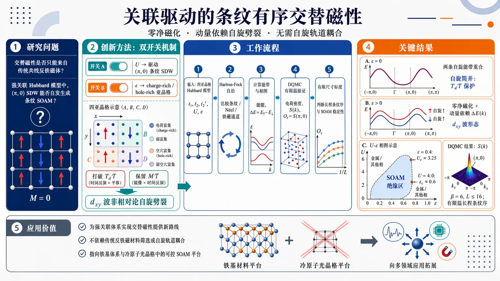
研究问题交替磁性是否只能来自传统共线反铁磁体？论文聚焦一个更基础的问题：在铁基砷化物相关的强关联 Hubbard 模型中，电子关联诱导的 ((π,0)) 自旋密度波不稳定性，能否在零净磁化条件下自发生成具有动量依赖自旋劈裂的条纹有序交替磁性。创新方法Aha 点是把“产生磁序”和“释放自旋劈裂”拆成两个协同开关：Hubbard 相互作用 (U) 驱动 ((π,0)) 条纹 SDW，单轴交错电势 (ǎrepsilon) 制造 charge-rich / hole-rich 亚晶格，打破保护自旋简并的 (T_dT) 对称性，同时保留 (MT) 对称性，从而在无自旋轨道耦合下打开 (dₓy)-波非相对论自旋劈裂。工作流程输入四亚晶格平方晶格 Hubbard 模型，设置铁基砷化物型跃迁 (t₁,t₂,t₂')、在位排斥 (U) 与单轴交错电势 (ǎrepsilon)；先用 Hartree-Fock 自洽比较条纹、Néel 和铁磁通道，计算能带、能隙、(Δ E=Eᵤₚ-Edₒwₙ) 与相图；再用无偏 DQMC 在有限温下计算亚晶格电荷密度、动量自旋结构因子 (S(k)) 和 (Oₛ₌S(π,0))；最后通过有限尺寸标度判断长程条纹序与 SOAM 稳定性。关键结果(ǎrepsilon=0) 时，条纹 SDW 虽可由大 (U) 打开绝缘能隙，但因保留 (T_dT) 对称性，自旋能带完全简并；(ǎrepsilon>0) 后出现零净磁化但显著动量依赖的 (dₓy)-波自旋劈裂。均场相图显示宽广 SOAM 绝缘区：(ǎrepsilon=0.4) 时临界 (U_capprox3.25)，固定 (U=4.0) 时过大 (ǎrepsilon_capprox0.6) 会破坏条纹序。DQMC 在 (β=6)、最高 (L=16) 下显示 (S(k)) 在 ((π,0)) 处尖峰，有限尺寸标度支持有限温长程条纹序。应用价值该研究为强关联体系中实现交替磁性提供一条新路线：不依赖传统反铁磁材料筛选或自旋轨道耦合，而是利用电子关联驱动的 SDW 与可调电荷调制来生成自旋劈裂。它为铁基体系中的交替磁性搜索提供理论指纹，也指向冷原子光晶格中通过激光干涉工程化单轴交错电势、可控模拟 SOAM 相的实验平台。第一部分：核心概览 (Overview)
该工作提出一种由电子关联诱导的 ((π,0)) 自旋密度波（SDW）不稳定性产生的条纹有序交替磁性（SOAM）。在与铁基砷化物相关的最小 Hubbard 模型中，单轴交错电势 (ǎrepsilon) 引入亚晶格电荷不均匀性，破坏 (T_dT) 对称性并保留 (MT) 对称性，从而释放无自旋轨道耦合条件下的 (dₓy)-波非相对论自旋劈裂。Hartree-Fock 与无偏 DQMC 有限尺寸标度共同表明，该 SOAM 绝缘相可在有限温下稳定存在。贡献在于把交替磁性从传统共线反铁磁框架推进到关联驱动 SDW 不稳定性领域。
---
第二部分：结构化快速回顾
《Stripe-Ordered Altermagnetism Emerging from Correlation-Driven Spin-Density-Wave Instability》（None，）
背景
交替磁性（AM）通常被理解为具有零净磁化但存在动量依赖自旋劈裂的共线反铁磁态。现有研究多依赖晶体学或轨道跃迁各向异性，而这些各向异性可能引入阻挫并削弱 Hubbard 模型中的关联反铁磁序。核心未解问题是：AM 是否能由电子关联和 SDW 不稳定性自发产生。
方法
采用与铁基砷化物相关的四亚晶格平方晶格 Hubbard 模型，包含 (t₁₌₀.3)、(t₂₌₁.4)、(t₂'=-0.6)、在位排斥 (U)、单轴交错电势 (ǎrepsilon)。零温用 Hartree-Fock 自洽计算比较条纹、Néel 反铁磁和铁磁序；有限温用无偏 DQMC 计算电荷密度、动量分辨自旋结构因子 (S(k)) 和 (Oₛ₌S(π,0)) 的有限尺寸标度。
结果
(ǎrepsilon=0) 时，条纹 SDW 保持 (T_dT) 对称性，能隙可开启但自旋能带完全简并。(ǎrepsilon>0) 时，电荷不均匀性打破 (T_dT)，保留 (MT)，在零净磁化下产生明显 (dₓy)-波自旋劈裂。MF 相图显示宽广 SOAM 绝缘区；例如 (ǎrepsilon=0.4) 时 (U_capprox3.25)，(U=4.0) 时 (ǎrepsilon_capprox0.6) 会破坏条纹序。DQMC 在 (β=6)、最高 (L=16) 的数据支持有限温长程条纹序。
讨论
SOAM 需要两种相互竞争但可共存的机制：(U) 促进单占据和 ((π,0)) 条纹 SDW；(ǎrepsilon) 产生 AM 所需的电荷不均匀与 (MT) 对称性，但过大 (ǎrepsilon) 会稀释局域磁矩并破坏条纹序。自旋劈裂随 (ǎrepsilon) 增强而增加，随 (U) 增强略受抑制。
局限
模型没有完整描述真实铁基砷化物的所有微观复杂性；NNN 跃迁破坏粒子-空穴对称性，使 DQMC 在低温和大尺寸下存在符号问题，限制可达温区和尺寸。
结论
关联驱动 SDW 不稳定性可以稳定产生一种新型 (dₓy)-波条纹有序交替磁性绝缘相。该机制为强关联体系中的 AM 提供了不依赖传统反铁磁范式的新路径，并指向光晶格冷原子中通过激光干涉工程化 USEP 的可调实现。
---
第三部分：逐章节冷凝解析 (Section-by-Section Condensing)
Abstract
- Altermagnetism beyond collinear antiferromagnets
交替磁性通常在共线反铁磁体框架中识别，但是否能在 SDW 等其他自旋不稳定性中实现仍是基础问题。摘要明确提出：*"Altermagnetism is conventionally identified within the paradigm of collinear antiferromagnets."* 同时指出开放问题为：*"Its potential realization within other spin instabilities, such as a spin-density wave (SDW), remains a fundamentally compelling open question."*
- Minimal Hubbard model for iron pnictides
研究对象是与铁基砷化物相关的最小 Hubbard 模型，方法结合 Hartree-Fock mean-field 与 determinant quantum Monte Carlo (DQMC)。证据表述为：*"we combine Hartree-Fock mean-field and unbiased determinant quantum Monte Carlo methods to investigate a minimal Hubbard model relevant to iron pnictides."*
- Correlation-induced ((π,0)) SDW as the origin of SOAM
核心发现是一个由关联诱导 ((π,0)) SDW 不稳定性驱动的 (dₓy)-波条纹有序交替磁性绝缘相。关键句为：*"We reveal a novel (dₓy)-wave stripe-ordered altermagnetic (SOAM) insulating phase driven fundamentally by the correlation-induced ((π,0)) SDW instability."*
- Symmetry switching unlocks nonrelativistic spin splitting
单轴交错电势改变对称性：破坏原有 (T_dT)，保留 (MT)，从而释放明显的非相对论自旋劈裂。原文为：*"an introduced uniaxial staggered electric potential alters the underlying symmetry: it breaks the original combined time-reversal and spatial translation symmetry ((T_dT)) and retains a combined time-reversal and mirror invariance ((MT)), thereby unlocking the pronounced nonrelativistic spin splitting."*
- Finite-temperature stability verified by DQMC scaling
SOAM 相不仅是均场结果，还通过 DQMC 有限尺寸标度确认可在有限温下稳定存在。摘要强调：*"the exact finite-size scaling from our determinant quantum Monte Carlo simulations confirms that this correlation-driven SOAM phase stably survives at accessible finite temperatures."*
---
Introduction
- AM combines zero net magnetization and macroscopic spin splitting
AM 的关键物理特征是净磁化为零但存在宏观自旋劈裂，且可在无 SOC 条件下出现。原文定义为：*"Altermagnetism (AM) has recently emerged as a fundamental magnetism beyond conventional ferromagnetism and antiferromagnetism (AFM), uniquely combining a vanishing net magnetization with macroscopic spin splitting, notably in the absence of spin-orbit coupling."*
- Symmetry criterion distinguishes AM from conventional AFM
传统反铁磁体常由 (PT) 或类似联合对称性保护 Kramers 简并；AM 则破坏联合反演-时间反演，同时保留某些时间反演与晶体旋转/镜面对称的组合。原文为：*"Unlike traditional antiferromagnets, altermagnets break the combined parity-time symmetry while preserving specific combined symmetries of time-reversal and crystal rotation or mirror operations."*
- Spin splitting produces functional responses
AM 的非相对论、动量依赖自旋劈裂能触发输运、磁电、光学响应，因此与自旋电子学相关。原文表述为：*"This unique symmetry breaking induces a nonrelativistic, momentum-dependent spin splitting in the electronic band structure, which in turn triggers a series of nontrivial transport, magnetoelectric, and optical properties."*
- Prior AM engineering often relies on explicit anisotropy
近年 AM 研究大量通过显式引入晶体学或轨道跃迁各向异性实现。关键表述为：*"Currently, the studies for AM mainly concentrate on explicitly introducing specific crystallographic or orbital-hopping anisotropies."* 但这一路径可能削弱关联磁性：*"incorporating such anisotropies usually introduces frustrations and destabilizes the correlation-driven AFM, particularly in unbiased numerical calculations of Hubbard models."*
- Correlation-driven AM remains unresolved
由电子关联自发产生 AM 仍是核心开放问题。原文直接提出：*"whether AM can be spontaneously driven by electron correlations remains a compelling open question."*
- Conventional AM paradigm centers on collinear AFM
AM 常被视为由特定晶格对称性保护的共线反铁磁，例如时间反演与晶体旋转组合对称将相反自旋亚晶格联系起来。原文为：*"Conventionally, AM is generally regarded as a collinear AFM protected by specific lattice symmetries, such as combined symmetry of time-reversal and crystal rotations, which connect opposite spin sublattices."*
- Experimental AM examples mostly remain AFM-based
已有实验证据包括 CrSb 与 MnTe 中的 (g)-波 AM，自旋劈裂；以及 KV(₂)Se(₂)O、Rb(₁₋δ)V(₂)Te(₂)O 中的 (d)-波 AM。原文列举：*"g-wave AM band splitting has been definitively observed in A-type antiferromagnets CrSb and MnTe."* 以及：*"The d-wave AM has been reported in the AFM oxychalcogenide metals KV(₂)Se(₂)O and Rb(₁₋δ)V(₂)Te(₂)O."*
- Central question: AM from SDW rather than conventional AFM
关键问题被明确扩大到 SDW：*"beyond the paradigm of conventional AFM, can AM be stably established within other spin instabilities, such as the spin-density wave (SDW)?"* 相关背景包括已有理论关于 AM 背景中 SDW 不稳定性，以及 CsCr(₃)Sb(₅) 中磁场调控 altermagnetic SDW 的实验：*"recent experiments demonstrate a magnetic-field tuning of an altermagnetic SDW order in the kagome magnet CsCr(₃)Sb(₅)."*
- Iron pnictides provide a natural SDW platform
铁基化合物具有承载 AM 的潜力，尤其铁基砷化物父体化合物具有稳健 SDW 基态和各向异性轨道间跃迁。原文为：*"iron-based compounds exhibit tremendous potential for hosting AM."* 以及：*"iron pnictides are characterized by intrinsic anisotropic inter-orbital hoppings, with their parent compounds robustly stabilizing a SDW ground state."*
- ((π,0)) stripe order is tied to Fermi-surface topology
铁基砷化物的 SDW 基态表现为由 ((π,0)) 不稳定性驱动的自旋条纹序，其费米面包含 (Γ=(0,0)) 空穴口袋与 (X/Y=(π,0)/(0,π)) 电子口袋。原文为：*"this ground state manifests as a spin-stripe order driven by ((π,0)) spin instability"*，并补充：*"tied to the Fermi surface topology comprising hole pockets at the (Γ) point ((0,0)) and electron pockets at the (X/Y) points ((π,0)/(0,π))."*
- Main claim: USEP-assisted SOAM from SDW
在电荷不均匀存在时，关联 (U) 自发驱动 SOAM，结合实空间自旋纹理与动量空间自旋劈裂的强各向异性。原文为：*"With a charge inhomogeneity, the correlation (U) spontaneously drive a novel stripe-ordered AM (SOAM) emerging from the SDW instability, which integrates high anisotropy in both real-space spin texture and momentum-space spin splitting."*
- Symmetry mechanism stated in the introduction
单轴交错电势 (ǎrepsilon) 破坏 (T_dT)，保留 (MT)，进而释放 (dₓy)-波自旋劈裂。原文为：*"The charge inhomogeneity introduced by a uniaxial staggered electric potential (USEP) (ǎrepsilon) breaks the original combined time-reversal and spatial translation symmetry and preserves a combined time-reversal and mirror invariance, which unlocks a pronounced nonrelativistic (dₓy)-wave spin splitting."*
- SOAM survives competition between (U) and (ǎrepsilon)
(U) 驱动条纹序，(ǎrepsilon) 控制 AM 所需对称性；两者存在竞争但可共存。原文总结为：*"Despite the competing interplay between the (ǎrepsilon)-governed symmetry and the (U)-driven spin stripe, their remarkable coexistence establishes a broad SOAM insulating region."*
---
Model and Method
- Four-sublattice Hubbard model with USEP
模型定义在平方晶格四亚晶格基底上，哈密顿量包含跃迁、化学势、USEP 和 Hubbard 相互作用。原文为：*"We consider the Hubbard model defined on a square lattice with a four-sublattice basis under a USEP."* 哈密顿量中 USEP 项为
[
-ǎrepsilonsumᵢ(nᵢ₁+nᵢ₂-nᵢ₃-nᵢ₄),
]
Hubbard 项为
[
Usumᵢₗnᵢₗₚ̆ₐᵣᵣₒwnᵢₗdₒwₙₐᵣᵣₒw.
]
- Operator definitions are explicit and local
(cᵢₗσdagger) 产生自旋 (σinp̆arrow,downarrow)、亚晶格 (lin1,2,3,4)、晶胞 (i) 上的电子。原文为：*"creates (annihilates) an electron with spin (σinp̆arrow,downarrow) on sublattice (lin1,2,3,4) in unit cell (i)."*
- Hopping structure encodes iron-based phenomenology
跃迁包括均匀最近邻 (t₁) 和两个不同次近邻 (t₂,t₂')。具体规则为：沿 ((1,1)/(1,-1)) 方向，(l=1,4) 的 NNN 跃迁为 (t₂/t₂')，(l=2,3) 的 NNN 跃迁为 (t₂'/t₂)。原文为：*"The hopping matrix elements ... involves a uniform nearest-neighbor (NN) hopping (t₁) and two distinct next-nearest-neighbor (NNN) hoppings, (t₂) and (t₂')."*
- Numerical hopping values are fixed
采用 (t₁₌₀.3)、(t₂₌₁.4)、(t₂'=-0.6)，用于再现铁基砷化物典型费米面与磁涨落。原文为：*"By setting (t₁₌₀.3), (t₂₌₁.4), and (t₂'=-0.6), we capture the essential Fermi surface structure and magnetic fluctuations prevalent in typical iron pnictides."*
- Half filling uses four electrons per unit cell
研究聚焦半填充条件，总占据为
[
n=frac1N_csumᵢₗłangle nᵢₗångle=4.
]
原文为：*"Considering the half-filling condition, (n=frac1N_csumᵢₗłangle nᵢₗångle=4)."*
- Mean-field order parameters cover stripe, Néel, and ferromagnetic channels
定义局域自旋 (Sᵢₗ^z=nᵢₗₚ̆ₐᵣᵣₒw-nᵢₗdₒwₙₐᵣᵣₒw)。Néel 与总铁磁序参数为
[
δ mN/T=frac18N_csumᵢłangle Sᵢ₁zmp Sᵢ₂zmp Sᵢ₃z+Sᵢ₄zångle.
]
条纹序为
[
δ m_S=frac18N_csumᵢłangle Sᵢ₁z-Sᵢ₂z+Sᵢ₃z-Sᵢ₄zångle.
]
原文强调：*"we introduce the spin-stripe order parameter (δ m_S) ... which properly captures the ((π,0)) magnetic instability."*
- Spin-stripe density ansatz fixes the HF decoupling
对条纹构型，局域占据参数化为
[
łangle nᵢₗσångle=frac12+(-1)l⁺σδ m_S.
]
原文为：*"the local electron occupation for the spin-stripe configuration is parameterized as (łangle nᵢₗσångle=frac12+(-1)l⁺σδ m_S)."*
- HF Hamiltonian remains spin block diagonal
Hartree-Fock 后得到动量空间哈密顿量
[
hatHHF=sumₖΨₖ^dagger
beginbmatrix
Hₖₚ̆ₐᵣᵣₒw&0
0&Hₖdₒwₙₐᵣᵣₒw
endbmatrix
Ψₖ.
]
原文为：*"the effective Hamiltonian in momentum space can be expressed as..."* 这种形式直接允许比较 (Eₚ̆ₐᵣᵣₒw) 与 (Edₒwₙₐᵣᵣₒw) 的自旋劈裂。
- (U) and (ǎrepsilon) enter diagonal matrix elements
(4×4) 子块的非对角元由 NN/NNN 跃迁决定，而 (U) 与 (ǎrepsilon) 只进入对角元：
[
Hₖσ(l,l)=μ-(-1)l⁺σδ m_SUmpǎrepsilon,
]
其中 (l=1,2) 为 (-ǎrepsilon)，(l=3,4) 为 (+ǎrepsilon)。原文为：*"the effects of (U) and (ǎrepsilon) are confined to the diagonal elements."*
- DQMC is used beyond mean-field but faces sign problem
为处理有限温与涨落，采用无偏 DQMC；NNN 跃迁破坏粒子-空穴对称性，导致半填充也出现符号问题。原文为：*"To characterize accurately the SOAM at finite temperatures, we employ the unbiased DQMC method beyond the MF approximation."* 限制为：*"the inclusion of NNN hoppings breaks the particle-hole symmetry, thus driving the system away from half-filling and introducing the sign problem."*
- Chemical potential is tuned to maintain half filling
DQMC 中在可容忍符号问题区域调节 (μ) 以达到半填充。原文为：*"Within tolerable sign-problem regime, we tune (μ) to achieve the half-filled electron occupation."*
- Magnetic correlations are measured through (S(k))
动量分辨自旋结构因子定义为
[
S(k)=frac1N_csumᵢₗ,ⱼₗ'e⁻ⁱkḑot⁽Rᵢₗ⁻Rⱼₗ'⁾
łangle SᵢₗzSⱼₗ'zångle.
]
条纹结构因子定义为 (Oₛequiv S(π,0))。原文为：*"The spin-stripe instability of MF parameter (δ m_S) manifests as the magnitude of (S(π,0)), which is defined as spin-stripe structure factor (Oₛequiv S(π,0))."*
---
Results and discussion
- Pure spin stripe is not altermagnetic because (T_dT) forbids splitting
(ǎrepsilon=0) 的条纹 SDW 虽然零净磁化，但保留时间反演 (T) 与对角平移 (T_d) 的联合对称性，严格禁止 AM 自旋劈裂。原文为：*"this collinear spin stripe configuration ensures a vanishing net magnetization, it remains invariant under the combined operation of time-reversal ((T)) and a diagonal translation ((T_d))."* 结论为：*"This (T_dT) symmetry strictly prohibits any AM spin splitting."*
- SDW gap can open without spin splitting
大 (U) 可开启 SDW 能隙，但自旋能带仍完全简并。原文为：*"although a substantial electron correlation (U) opens a SDW gap, the spin bands remain completely degenerate in Fig. 1(c)."* 这一区分非常关键：绝缘性不等于 AM 自旋劈裂。
- USEP creates charge-rich and hole-rich sublattices
(ǎrepsilon) 引入亚晶格分辨电荷不均匀，使亚晶格分化为电荷富集与空穴富集位置。原文为：*"we introduce a sublattice-resolved charge inhomogeneity via the USEP (ǎrepsilon) to merely alter the underlying symmetry, which generates a charge density modulation that differentiates the sublattices into charge-rich and hole-rich sites."*
- Symmetry changes from (T_dT) to (MT)
USEP 后原有 (T_dT) 被破坏，系统保留镜面 (M) 与时间反演 (T) 的联合对称性。原文为：*"the system breaks the original (T_dT) symmetry and remains invariant under a combined (MT) operation, where (M) denotes a mirror reflection."*
- (MT) connects opposite-spin sublattices and unlocks splitting
新对称性将相反自旋亚晶格联系起来，在特定动量区域产生非相对论自旋劈裂。原文为：*"This new symmetry connects opposite spin sublattices which unlocks a nonrelativistic spin splitting in specific momentum regions."*
- Zero net magnetization plus spin splitting identifies SOAM
在零净磁化背景下出现动量依赖自旋劈裂，标志着 SOAM 建立。原文为：*"Coupled with the zero net magnetization, this definitely signals the establishment of a novel SOAM arising from the SDW instability."*
- Spin splitting has (dₓy)-wave form
最低导带自旋劈裂能量差定义为
[
Δ E=Eᵤₚ-Edₒwₙ.
]
其在布里渊区对角线附近集中，并在 ((0,0)→(0,±π/2))、((±π/2,0)) 路径上有对称保护节点。原文为：*"The spin-band splitting is concentrated along the Brillouin zone diagonals, with symmetry-protected nodes along the paths from ((0,0)) to ((0,±π/2)) and ((±π/2,0))."* 因而：*"This profile firmly establishes an unconventional (dₓy)-wave SOAM."*
- Mean-field phase diagram shows stripe dominance
Hartree-Fock 同时允许 (2×2) 单元内所有共线构型，包括条纹 (δ m_S)、Néel (δ m_N)、铁磁 (δ m_T)。自洽结果显示基态由 SDW 条纹不稳定性主导。原文为：*"Self-consistent solutions reveal that the ground state is robustly dominated by the correlated SDW instability, characterized by a finite (δ m_S)."*
- (ǎrepsilon=0) gives pure SDW; (ǎrepsilon>0) gives SOAM
(ǎrepsilon=0) 保持 (T_dT)，自旋能带简并；(ǎrepsilon>0) 时 (U) 驱动进入 SOAM，相应 (MT) 对称性释放自旋劈裂。原文为：*"At (ǎrepsilon=0), the preserved (T_dT) symmetry protects a pure correlated SDW state with completely degenerate spin bands."* 以及：*"Under the charge inhomogeneity ((ǎrepsilon>0)), (U) drives the system into the SOAM phase with (ǎrepsilon)-governed (MT) symmetry unlocking momentum-space spin splitting."*
- Critical interaction at (ǎrepsilon=0.4)
固定 (ǎrepsilon=0.4) 时，在 (U_capprox3.25) 出现连续进入 SOAM 的转变，(δ m_S) 突然出现并伴随基态能量显著降低。原文为：*"For a fixed (ǎrepsilon=0.4), a continuous transition into the SOAM phase occurs at (U_capprox3.25), characterized by a sharp onset of (δ m_S) and a corresponding substantial reduction in the ground-state energy."*
- Néel and ferromagnetic orders remain absent
在比较的参数空间内，(δ m_N) 与 (δ m_T) 始终为零，说明条纹通道在能量上占优。原文为：*"both (δ m_N) and (δ m_T) remain strictly zero across the entire parameter space, confirming the energetic preference for the spin-stripe instability."*
- Critical electric potential at (U=4.0)
固定 (U=4.0) 时，(ǎrepsilon_capprox0.6) 足以完全抑制条纹构型，使系统从 SOAM 转变为非磁态。原文为：*"at a fixed (U=4.0), a sufficient (ǎrepsilon_capprox0.6) fully suppresses the spin-stripe configuration, thereby driving a quantum phase transition out of the SOAM phase into a nonmagnetic state."*
- Spin splitting appears only after stripe order forms
当 (U<U_c) 时，无论 (ǎrepsilon) 多大，自旋能带仍严格简并；超过 (U_c) 后，自旋条纹序自发建立并突然驱动劈裂。原文为：*"At (U<U_c), the spin bands remain strictly degenerate regardless of (ǎrepsilon)."* 以及：*"the (U_c) abruptly drives the spin splitting due to spontaneous establishment of the spin-stripe order."*
- (ǎrepsilon) enhances spin splitting; (U) slightly suppresses it
(Δ Eₘₐₓ) 受 (ǎrepsilon) 与 (U) 的微妙竞争控制。较大 (ǎrepsilon) 增强电荷不均匀性并单调提高 (Δ Eₘₐₓ)；较大 (U) 倾向单占据，抵抗电荷不均匀性，使系统接近 (T_dT) 极限，从而略抑制劈裂。原文为：*"a larger (ǎrepsilon) promotes the charge inhomogeneity and monotonically enhances (Δ Eₘₐₓ)."* 同时：*"increasing (U) slightly suppresses the spin splitting."*
- SOAM is insulating and gap scales with (U)
非相互作用系统无能隙；条纹序建立后开启电荷能隙，使 SOAM 成为绝缘相。原文为：*"While the noninteracting system is gapless ... the establishment of spin stripe order opens a charge gap, rendering the SOAM phase inherently insulating."* 能隙趋势为：*"within the SOAM regime, the gap scales linearly with (U) but is suppressed by (ǎrepsilon)."*
- DQMC confirms charge inhomogeneity at (β=6,L=16)
DQMC 数据在 (β=1/T=6)、系统尺寸 (L=16) 下提取。图 3 说明：*"All data are extracted from unbiased DQMC simulations at an inverse temperature (β=1/T=6) with system size (L=16)."* (ǎrepsilon) 使 charge-rich 与 hole-rich 亚晶格密度从 (h̊o=1) 线性偏离：*"The (ǎrepsilon) drives a linear deviation from half-filling ((h̊o=1)) on charge-rich and hole-rich sublattices."*
- (U) suppresses charge inhomogeneity
Hubbard 排斥倾向于单占据，因此抑制 USEP 引起的电荷不均匀。原文为：*"However, (U) favors single-electron occupation, thereby suppressing this charge inhomogeneity."*
- DQMC spin structure factor peaks at ((π,0))
动量空间自旋结构因子 (S(k)) 在 ((π,0)) 处出现尖峰，证明主导磁构型是条纹 SDW。原文为：*"The emergence of a sharp peak at (k=(π,0)) provides compelling evidence for the dominant spin-stripe configuration."*
- DQMC reproduces (U)-(ǎrepsilon) competition
(ǎrepsilon) 稀释局域磁矩并抑制 (S(π,0))，(U) 则显著增强条纹序。原文为：*"There reflects a competition that (ǎrepsilon) dilutes the local magnetic moments and suppresses (S(π,0)), whereas (U) dramatically facilitates it and drives the spin-stripe order."*
- Finite-size scaling is the strongest evidence for finite-temperature SOAM
SOAM 的核心证据是电荷不均匀背景下存在长程 SDW 序。原文为：*"The most compelling evidence for the stabilization of the SOAM phase is the existence of long-range SDW order with the charge inhomogeneity."*
- Sign problem limits lower temperatures and larger sizes
NNN 跃迁破坏半填充粒子-空穴对称性，符号问题在低温和大尺寸下变严重。原文为：*"the inclusion of NNN hoppings breaks the particle-hole symmetry at half-filling and introduces the sign problem that becomes severe at lower temperatures (T) and larger system sizes (L)."*
- Low temperature enhances size dependence of (Oₛ)
高温小 (β) 时，热涨落主导，(Oₛ) 几乎无尺寸依赖；降温后，(Oₛ) 随 (L) 单调增加，指向长程条纹序。原文为：*"In the high-(T) regime (small (β)), (Oₛ) is dominated by thermal fluctuations and exhibits negligible (L)-dependence."* 以及：*"As (T) is lowered, a pronounced finite-size effect emerges: (Oₛ) increases monotonically with (L)."*
- (U=4) shows stronger stripe tendency than (U=3)
(U=3) 时有限尺寸效应较弱；(U=4) 时 (Oₛ) 及其尺寸依赖在降温时更明显增强。原文为：*"This finite-size effect remains relatively weak for (U=3)"*，而：*"it reveal a more pronounced growth in both (Oₛ) and its (L)-dependence with decreasing (T) for (U=4)."*
- Standard scaling form identifies long-range order
有限尺寸标度采用
[
Oₛ/L²⁼a+b/L+c/L².
]
原文为：*"Employing the standard scaling hypothesis (Oₛ/L²⁼a+b/L+c/L²), we extract (Oₛ/N) in the thermodynamic limit ((1/L→0))."* 有限截距表示长程序存在：*"A finite intercept indicates the establishment of long-range order."*
- At (U=4.0), small (ǎrepsilon) supports long-range order; (ǎrepsilon=0.6) destroys it
固定 (U=4.0) 时，小 (ǎrepsilon) 的标度曲线外推到有限截距，(ǎrepsilon=0.6) 截距消失。原文为：*"For a fixed (U=4.0), the scaling curves at small (ǎrepsilon) explicitly extrapolate to finite intercepts."* 以及：*"When (ǎrepsilon) is increased to 0.6, this intercept vanishes, denoting the breaking of long-range order by charge inhomogeneity."*
- At (ǎrepsilon=0.4), (U=4.0) is sufficient but (U=3.0,3.5) are not
固定 (ǎrepsilon=0.4) 时，(U=3.0)、(3.5) 不足以建立条纹相；(U=4.0) 出现清晰有限截距，且随 (U) 增强。原文为：*"At a fixed (ǎrepsilon=0.4), (U=3.0) and 3.5 are insufficient to host the stripe phase, while a clear finite intercept emerges at (U=4.0) and is further enhanced by (U)."*
---
Conclusions
- AM is extended beyond conventional AFM
目标是探索传统 AFM 范式之外、由自旋不稳定性产生的 AM。结论开头为：*"To explore AM arising from spin instabilities beyond the conventional AFM paradigm, we investigate a minimal Hubbard model relevant to iron pnictides using Hartree-Fock MF and DQMC methods."*
- Model retains essential iron-pnictide ingredients
模型抓住了费米面拓扑和 ((π,0)) SDW 不稳定性。原文为：*"This model captures the essential Fermi surface topology and the ((π,0)) SDW instability."*
- Charge inhomogeneity plus (U) generates (dₓy)-wave SOAM
在 (ǎrepsilon) 引入电荷不均匀时，(U) 自发驱动 (dₓy)-波 SOAM，源于 SDW 不稳定性。原文为：*"with a charge inhomogeneity introduced by (ǎrepsilon), (U) spontaneously drive a novel (dₓy)-wave SOAM phase emerging from the SDW instability."*
- SOAM combines real-space and momentum-space anisotropy
该相同时具有实空间自旋条纹纹理和动量空间自旋劈裂的强各向异性。原文为：*"which integrates high anisotropy in both real-space spin texture and momentum-space spin splitting."*
- Symmetry replacement is the mechanism for spin splitting
电荷不均匀性使原本的时间反演-平移联合对称性破缺，并由时间反演-镜面联合不变性替代。原文为：*"the original combined time-reversal and translational symmetry is broken and replaced by a combined time-reversal and mirror invariance, which unlocks a pronounced nonrelativistic spin splitting."*
- SOAM is broad but requires coexistence of competing tendencies
(ǎrepsilon) 控制 AM 对称性，(U) 驱动条纹序；两者竞争但可在宽广区域共存。原文为：*"Although there is a competition between the (ǎrepsilon)-governed AM symmetry and the (U)-driven spin stripe, their remarkable coexistence stabilizes a broad SOAM insulating phase."*
- DQMC finite-size scaling establishes finite-temperature stability
无偏 DQMC 的有限尺寸标度表明 SOAM 可在可达有限温度下稳定建立。原文为：*"our exact finite-size scaling from unbiased DQMC simulations demonstrate that the SOAM phase can be stably established even at accessible finite temperatures."*
- Model limitation is explicitly acknowledged
模型不试图囊括真实铁基砷化物的完整微观复杂性，而聚焦费米面拓扑与磁性现象学。原文为：*"while our model does not capture the full microscopic complexity of real iron pnictides and focuses instead on the relevant Fermi surface topology and magnetic phenomenology."*
- Cold-atom optical lattices are a promising platform
USEP 可通过激光干涉工程化，因此光晶格冷原子系统是实现 SOAM 的可调平台。原文为：*"given that the USEP can be readily engineered via laser interference, ultracold atomic systems in optical lattices emerge as a highly promising and tunable experimental platform for the realization of this novel SOAM phase."*
---
Acknowledgements
- Funding and computational resources
支持来源包括 NSFC 项目 12474218、北京市自然科学基金 1242022 与 1252022。原文为：*"This work is supported by NSFC (12474218) and Beijing Natural Science Foundation (No. 1242022 and 1252022)."* 数值模拟在北京师范大学 HSCC 完成：*"The numerical simulations in this work were performed at the HSCC of Beijing Normal University."*
---
第四部分：深度理解与语言支持 (Understanding & Nuance)
1. 术语解析
- Altermagnetism / 交替磁性
指一种不同于铁磁和传统反铁磁的磁相：总磁矩为零，但能带中存在动量依赖自旋劈裂。微妙之处在于，AM 的自旋劈裂不是 SOC 导致的 Rashba/Dresselhaus 型劈裂，而是由磁序和晶体对称性共同产生的非相对论劈裂。文中核心定义为 *"combining a vanishing net magnetization with macroscopic spin splitting, notably in the absence of spin-orbit coupling."*
- Spin-density-wave instability / 自旋密度波不稳定性
指费米面嵌套或相互作用导致某个波矢 (Q) 的自旋响应发散或显著增强，最终形成空间调制磁序。这里的关键波矢是 ((π,0))，对应铁基砷化物中常见的条纹磁序，而非简单的 Néel ((π,π)) 反铁磁。
- Stripe-ordered altermagnetism (SOAM) / 条纹有序交替磁性
不是普通“条纹磁序”加上普通“交替磁性”的简单叠加，而是：条纹 SDW 负责提供零净磁化的自旋背景，USEP 负责改变对称性，使该背景能够产生 AM 自旋劈裂。没有 (ǎrepsilon)，条纹 SDW 仍然自旋简并；没有 (U)，(ǎrepsilon) 也不能产生磁性劈裂。
- Uniaxial staggered electric potential (USEP) / 单轴交错电势
在四亚晶格上施加符号交错的电势：(l=1,2) 与 (l=3,4) 的电势相反。其物理效果不是直接产生磁性，而是产生 charge-rich / hole-rich 亚晶格，改变磁结构的空间对称性。
- Nonrelativistic spin splitting / 非相对论自旋劈裂
指不依赖自旋轨道耦合的自旋能带分裂。普通非磁晶体中，若有时间反演和反演对称性，Kramers 简并会保护自旋简并；AM 中，特定磁空间群破坏某些联合对称性，使 (Eₚ̆ₐᵣᵣₒw(k)≠ Edₒwₙₐᵣᵣₒw(k))，但总磁化仍为零。
2. 疑难查证
- 为什么纯条纹 SDW 不是 AM？
纯条纹 SDW 有上、下自旋交替排列，且总磁矩为零，看起来很像 AM。但它保留 (T_dT)：先做时间反演把上自旋变下自旋，再沿对角方向平移 (T_d)，可以把系统映回自身。这个联合对称性把 (p̆arrow) 与 (downarrow) 能带配对起来，因此自旋能带不能分裂。也就是说，零净磁化和共线磁序不足以保证 AM；必须缺少保护自旋简并的联合对称性。
- 为什么加入 (ǎrepsilon) 后反而能产生自旋劈裂？
(ǎrepsilon) 不是磁场，不直接偏向上自旋或下自旋。它改变的是亚晶格电荷环境：某些位置 charge-rich，某些位置 hole-rich。原先通过对角平移可互相对应的两个位置现在不再等价，因此 (T_dT) 被破坏。与此同时，镜面对称 (M) 与时间反演 (T) 的组合仍能连接某些相反自旋亚晶格。这个新的 (MT) 对称结构允许某些 (k) 区域出现自旋劈裂，但仍强制某些高对称线或节点保持简并，从而形成 (dₓy)-波形态。
- 为什么 (ǎrepsilon) 同时“需要”又“有害”？
(ǎrepsilon) 对 AM 是必要的，因为它提供破坏 (T_dT)、保留 (MT) 的对称性条件；但它对 SDW 有害，因为电荷不均匀会稀释局域磁矩，削弱条纹磁序。于是 SOAM 只能存在于中等 (ǎrepsilon) 和足够 (U) 的窗口中。文中 (U=4.0) 时 (ǎrepsilon_capprox0.6) 会完全抑制条纹序，就是这种竞争的直接体现。
- 为什么 (U) 增大反而会略微抑制自旋劈裂？
(U) 的主要作用是促进局域单占据和磁序，因此它帮助形成条纹 SDW；但自旋劈裂大小依赖 (ǎrepsilon) 诱导的电荷不均匀性。较大 (U) 会惩罚双占据和电荷偏离，倾向把每个亚晶格拉回 (h̊oapprox1)，从而削弱 (ǎrepsilon) 的电荷调制效果。因此 (U) 对“是否有条纹磁序”是正作用，对“电荷不均匀导致的 AM 劈裂强度”可能是负作用。
---
第五部分：创新评估与关联 (Synthesis & Novelty)
1. 创新性判断
- 从传统 AFM-AM 转向 SDW-AM
过去 2–5 年 AM 研究主线集中在共线反铁磁材料、晶体对称性筛选、显式各向异性工程、具体材料候选与实验 ARPES 自旋劈裂观测。该工作的新颖点是把 AM 的起源从“已有反铁磁基态 + 合适晶体对称性”推进到“电子关联诱导的 SDW 不稳定性 + 电荷调制改变对称性”。
- 解决“关联能否自发驱动 AM”问题的一种具体机制
许多已有 Hubbard 或模型研究需要预设晶格/轨道各向异性，而这可能引入阻挫并削弱关联磁序。这里的机制更细：(U) 不是直接产生 AM 劈裂，而是先产生 ((π,0)) 条纹 SDW；(ǎrepsilon) 只负责破坏保护简并的 (T_dT) 并保留 (MT)。两者结合产生 SOAM。这回答了“电子关联能否通过非传统 AFM 路径参与 AM 建立”的问题。
- 提出 (dₓy)-波条纹有序 AM 这一具体相
自旋劈裂分布集中在布里渊区对角线，并在特定高对称路径上有节点，构成非常明确的 (dₓy)-波 AM 指纹。这不是泛泛的“存在自旋劈裂”，而是给出可诊断的动量空间纹理。
- 同时使用 MF 与无偏 DQMC 增强可信度
MF 给出机制、相图和能带劈裂；DQMC 在 (β=6)、有限尺寸标度中验证条纹长程序可在有限温和涨落下保留。相对纯均场理论，DQMC 结果显著提高了强关联结论的可靠性。
- 把铁基砷化物 SDW 物理与 AM 连接起来
铁基砷化物长期以 ((π,0)) 条纹 SDW、(Γ) 空穴口袋和 (X/Y) 电子口袋为核心物理。该工作指出这些传统 SDW 结构可成为 AM 的母体平台，为铁基体系中的 AM 搜索提供新方向。
- 实验平台从固体材料扩展到冷原子光晶格
真实铁基材料中的 USEP 工程可能复杂，但冷原子光晶格可通过激光干涉构造交错电势和调节 Hubbard 参数。因此该机制不仅是材料启发模型，也具有可控量子模拟路线。
-
12
📄 摘要：在 CrSb 中解析出三维体分辨的 g 波交替磁序参量，显示其自旋分裂具有明确的体相与节点结构，可作为检测非常规磁对称破缺的实验基准。
💡 亮点：CrSb 的 g 波交替磁序参量被做成三维体分辨。它把抽象的节点型磁序参数变成可实验检验的体相信号。
📖 展开分析 + 配图
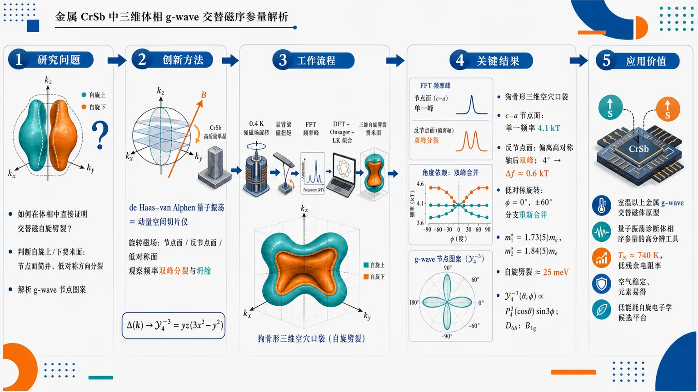
研究问题如何在金属 CrSb 的体相中直接证明并三维解析交替磁自旋劈裂序参量？核心是判断自旋上、下费米面是否沿特定动量方向简并、沿低对称方向分裂，并确认其节点面是否构成 g-wave 型角向图案。创新方法用体敏感 de Haas–van Alphen 量子振荡作为“动量空间切片仪”：旋转磁场穿过节点面、反节点面和低对称倾斜平面，观察单一频率何处分裂成双峰、何处重新合并，从而把不可见的交换劈裂 Δ(k) 映射成三维 g-wave 节点图；Aha 点是用量子振荡频率分裂/坍缩直接画出 𝒴₄⁻³ = yz(3x² − y²) 型磁序参量。工作流程输入高质量 CrSb 单晶，在 0.4 K 下施加强磁场并旋转方向；悬臂梁磁扭矩记录量子振荡波形；FFT 提取频率峰，节点方向出现单峰，反节点和低对称方向出现双峰；结合 DFT 费米面模拟、Onsager 关系和 Lifshitz–Kosevich 有效质量拟合；最终输出 dogbone 三维空穴口袋的自旋劈裂费米面、节点面位置和 g-wave 序参量对称性。关键结果CrSb 主费米面是近似狗骨形三维空穴口袋；在 c–a 节点面内只有 4.1 kT 单一频率，在 c–ab 反节点面稍偏离高对称轴后单峰迅速裂成双峰，4° 旋转即可产生约 0.6 kT 频率差；低对称旋转中双分支在 φ = 0°、±60° 附近重新合并；有效质量 m₁* = 1.73(5)mₑ、m₂* = 1.84(5)mₑ，且 m₁*/m₂* = 0.94 ± 0.04 ≈ √(f₁/f₂) = 0.945；估算费米能级自旋劈裂约 25 meV；序参量符合 𝒴₄⁻³(θ,φ) ∝ P₄³(cosθ)sin3φ，属于 D₆h 点群 B₁g 表示。应用价值该研究把 CrSb 确立为清晰的室温以上金属 g-wave 交替磁体原型，并证明量子振荡可作为诊断金属交替磁体体相序参量的高分辨工具；CrSb 具有约 740 K 磁有序温度、低残余电阻率、空气稳定和元素易得等优势，可作为低能耗自旋电子学与非常规磁性器件的候选平台。第一部分：核心概览（Overview）
CrSb 被确立为一种室温金属 g-wave 交替磁体（altermagnet）：其自旋上、下费米面在体相中发生动量依赖的非相对论交换劈裂，且劈裂序参量服从实球谐函数 𝒴₄⁻³ = yz(3x² − y²) 的对称性。核心突破在于利用体敏感三维量子振荡谱学直接追踪 CrSb 费米面在不同磁场方向下的自旋劈裂、节点面与反节点面，实现了非常规磁序参量的三维映射。该工作将量子振荡确立为诊断金属交替磁体体相序参量的高分辨工具，并使 CrSb 成为迄今最清晰的 g-wave 金属交替磁体原型材料之一。
---
第二部分：结构化快速回顾
《3D bulk-resolved g-wave altermagnetic order parameter in CrSb》（None，）
背景
交替磁体兼具反铁磁体的零净磁化与铁磁体式动量依赖自旋劈裂。CrSb 具有高达约 740 K 的磁有序温度、金属性和 NiAs 型六方结构，是重要候选材料。此前 RuO₂、KV₂Se₂O 等体系的表面实验与体相实验存在矛盾，凸显体相探测的必要性。
方法
采用de Haas–van Alphen 量子振荡和悬臂梁磁扭矩测量，在 0.4 K 下旋转磁场穿过 CrSb 布里渊区的节点面、反节点面和低对称倾斜平面；结合 DFT 模拟、FFT 频谱、Lifshitz–Kosevich 有效质量分析，重构自旋劈裂费米面。
结果
CrSb 的主费米面为近似狗骨形三维空穴口袋，在节点方向出现单一量子振荡频率，在反节点和低对称方向分裂为两条频率分支。典型频率包括 4.1 kT、3.6 kT、3.41 kT、3.82 kT；有效质量为 1.73(5) mₑ 与 1.84(5) mₑ；估算费米能级自旋劈裂约 25 meV。
讨论
自旋劈裂的节点结构包含三个方位角节点面 φ = 0°、60°、120° 和一个极角节点面 θ = 90°，与 𝒴₄⁻³(θ,φ) ∝ P₄³(cosθ) sin3φ 完全一致，对应 D₆h 点群的 B₁g 不可约表示。
局限
复杂的低频 web-like 费米面在 ≲2 kT 区域产生复杂角度依赖，使其自旋劈裂不如高频 dogbone 口袋清晰；实验主要聚焦于 ≳3 kT 的 dogbone 口袋。提供内容未包含完整样品数量、所有误差来源、完整 DFT 参数和统计显著性检验。
结论
CrSb 的体相电子结构呈现清晰的 g-wave 交替磁序参量，量子振荡可直接解析非常规金属磁体的三维序参量对称性。CrSb 兼具高有序温度、低残余电阻率、空气稳定性和元素可得性，是低能耗自旋电子学的重要候选平台。
---
第三部分：逐章节冷凝解析（Section-by-Section Condensing）
3D bulk-resolved g-wave altermagnetic order parameter in CrSb
Electronic order parameters define broken symmetries
电子相的本质由序参量刻画，磁性与超导均可通过自发对称性破缺来分类。传统例子包括铁磁体的均匀磁化和常规超导体的各向同性能隙。非常规超导中的节点能隙概念被推广到非常规磁体与交替磁体中，其中费米面附近自旋上、下能带不再简并。核心表述为：*"Electronic phases of matter, such as magnetism and superconductivity, are defined and distinguished by their order parameters quantifying the spontaneous symmetry breaking underlying each phase."* 以及 *"Unconventional superconductors often have a nodal gap function, where the gap changes sign at nodes on the Fermi surface."*
Quantum oscillations provide bulk 3D order-parameter mapping
磁量子振荡被用作体敏感、高分辨率、三维映射工具，直接解析非常规磁体的序参量。相比表面敏感的 ARPES，量子振荡反映体相费米面极值截面积，适合确认候选交替磁体的本征性质。关键声明为：*"Here we demonstrate that magnetic quantum oscillation measurements can provide a high resolution, bulk-sensitive, 3D mapping of the order parameter in an unconventional magnet."*
CrSb shows symmetry-reduced spin-split Fermi sheets
通过旋转磁场穿过 CrSb 布里渊区的高对称与低对称方向，发现每个自旋劈裂费米面在离开节点方向后对称性降低。实验解析的交换劈裂服从 𝒴₄⁻³ = zy(3x² − y²)，等价于氢原子的 g 轨道角动量对称性。原文证据为：*"By rotating a magnetic field through high- and low-symmetry directions of the CrSb Brillouin zone, we show that this material’s altermagnetic band structure leads to a reduction of symmetry for each spin-split Fermi sheet away from nodal orientations."* 以及 *"the exchange splitting between up and down spins follows the profile of the 𝒴₄⁻³ = zy(3x² − y²) real spherical harmonic – analogous to a g-orbital of the hydrogen atom."*
CrSb is positioned as a prototypical g-wave metallic altermagnet
g-wave 序参量在非常规超导中通常难以直接分辨，而 CrSb 中的磁性序参量可通过量子振荡准粒子谱精确映射，从而成为金属交替磁体的原型体系。关键结论为：*"our work demonstrates that the order parameter symmetry of unconventional magnets can be precisely mapped via quantum-oscillatory quasiparticle spectroscopy, establishing CrSb as a prototypical g-wave metallic altermagnet."*
Altermagnetism combines antiferromagnetic compensation with ferromagnetic-like spin splitting
交替磁体与反铁磁体一样具有交替自旋排列，但其自旋子晶格由旋转对称性连接，而非单纯平移或反演。这导致 Kramers 自旋简并解除和动量依赖非相对论自旋劈裂。核心定义为：*"Like antiferromagnets, altermagnets possess alternating up and down spin orientations from site to site."* 以及 *"the distinction is that in an altermagnet the spin sublattices are connected by rotational symmetries rather than just translation (or inversion)."* 进一步结果是：*"This leads to the lifting of Kramers spin degeneracy and a momentum-dependent non-relativistic spin-splitting of the electronic band structures."*
Metallic room-temperature altermagnets are technologically important but experimentally delicate
金属交替磁体若有远高于室温的有序温度，将利于电子输运和器件应用。CrSb、RuO₂、KV₂Se₂O 等曾被提出为候选体系，但 RuO₂ 与 KV₂Se₂O 的表面与体相结果出现冲突，因此体敏感实验证据非常关键。原文指出：*"The realisation of a metallic altermagnet, with an ordering temperature far above 300 K, would be particularly desirable for efficient electronic transport in technological device settings."* 并强调：*"These cautionary tales motivate bulk-sensitive studies of candidate altermagnets, in order to firmly establish their intrinsic magnetic properties."*
---
Nodal magnetic order parameters
Unconventional magnetic order parameters are defined by exchange splitting
非常规磁体的序参量被定义为同一波矢处自旋上、下电子态的能量差：Δ(k) = E(k,↑) − E(k,↓)。该定义把超导能隙的节点结构类比推广到磁交换劈裂。原文定义为：*"Let us define the order parameter for an unconventional magnet as the exchange splitting (energy difference) between up- and down-spin states at a given wavevector, Δ(k)=E(k,↑)−E(k,↓)."*
Spin-split Fermi sheets are separated by Δ(k)/(ℏvF)
交换劈裂在费米面上表现为自旋上、下费米片之间的动量间隔，近似为 k⊥ ≃ Δ(k)/(ℏvF)，其中 vF = ∂E/(ℏ∂k)。这使量子振荡能够通过面积差反推出交换劈裂。原文给出：*"This produces spin-split Fermi sheets separated by the (perpendicular) wavevector k⊥ ≃ Δ(k)/(ℏvF), where vF = ∂E/(ℏ∂k) is the Fermi velocity."*
Ferromagnets are analogous to s-wave BCS superconductors
铁磁体具有近似各向同性的自旋劈裂，可类比常规 s-wave BCS 超导体；非常规磁体则类比 p/d/f/g-wave 超导，具有节点面与符号变化。原文表述为：*"a ferromagnet is analogous to a BCS superconductor – its nonzero magnetisation splits the Fermi surface into unequal majority and minority spin species, characterised by an isotropic energy gap between them."*
p-, d-, f-, and g-wave magnetic orders have increasing numbers of nodal planes
非常规磁序的角向对称性决定节点面数目：p/d/f/g-wave 分别对应 1/2/3/4 个高对称节点面；在节点面上自旋特征交换，交换劈裂为零或受对称性强制简并。关键句为：*"for an unconventional magnet of p/d/f/g-wave symmetry, the Fermi surface will possess 1/2/3/4 highly symmetric nodal planes at which up-character swaps to down, and vice versa."*
CrSb crystal symmetry enforces screw-rotation-connected spin sublattices
CrSb 属于六方 P6₃/mmc NiAs 型结构，Cr 原子沿 c 轴堆叠，Sb 原子形成三角棱柱式间隙排列；约 740 K 以下，Cr 磁矩沿 c 轴交替排列。Sb 的三角排列要求用 6₃ 螺旋旋转将自旋上 Cr 位点映射到自旋下 Cr 位点。原文细节为：*"CrSb crystallises in the hexagonal P6₃/mmc NiAs-type structure"*，*"Below an ordering temperature of around 740 K... the chromium sites possess alternating magnetic moments oriented along the c-axis"*，以及 *"The trigonal arrangement of antimony necessarily requires a 6₃ screw rotation to map a spin-up chromium site to its spin-down counterpart."*
CrSb preserves a composite nonsymmorphic time-reversal symmetry
CrSb 破坏纯时间反演与原胞平移对称性，但保留由非点式空间操作与时间反演组合而成的复合对称性。这一结构使其满足交替磁体条件 Δ(Gk) = −Δ(k)。原文证据为：*"while CrSb breaks both pure time-reversal and primitive lattice-translation symmetries, it preserves a combined symmetry pairing this non-symmorphic spatial operation with time reversal."* 以及 *"CrSb is a metallic altermagnet in which Δ(Gk)=−Δ(k), where G is this composite operation."*
---
Quantum oscillation measurements
Quantum oscillations reveal nodal planes through frequency degeneracy
量子振荡可识别非常规磁体的节点面，因为当磁场位于节点面内时，自旋上、下费米面轨道可通过镜面对称互相映射，包围相同面积，因此每个费米口袋只产生一个量子振荡频率。原文解释为：*"Aligning a magnetic field within a nodal plane therefore produces QO orbits for up- and down-spin Fermi sheets that are different, but can be mapped onto each other by a mirror operation about the nodal plane, and which therefore enclose the same area."* 结果是：*"This leads to a single QO frequency per Fermi pocket for fields in nodal planes."*
Off-nodal orientations produce two quantum-oscillation frequencies
磁场离开节点面后，自旋上、下费米面不再由对称操作联系，通常包围不同截面积，产生两个不同 QO 频率。这是交替磁自旋劈裂的“烟枪”信号。原文表述为：*"for fields oriented away from nodal planes, the up- and down-spin Fermi sheets are not related by any symmetry operation, and therefore typically enclose different areas, leading to two distinct QO frequencies."* 并称其为：*"an expected smoking-gun signature of altermagnetic spin-splitting."*
CrSb has specific nodal and antinodal rotation geometries
角度定义为：方位角 φ 位于六方基面，从 a 到 ab；极角 θ 从 c 指向 ab 基面。对于六方 CrSb，a 与 b 等价；c–a 是高对称节点面，c–ab 是反节点面，其中自旋简并只在 c 与 ab 方向受对称性强制。原文为：*"The azimuthal angle φ is defined as the inclination from a to ab in the hexagonal basal plane; the polar angle θ is from c towards the basal ab plane."* 以及 *"The c−a plane is a highly symmetric nodal plane in which Kramers degeneracy is enforced by symmetry, while c−ab is antinodal, in which spin degeneracy is only symmetry-enforced at c and ab."*
g-wave splitting predicts 60° azimuthal and 90° polar nodal periodicities
CrSb 的 g-wave 劈裂预期在基面 a–ab 旋转中每 δφ = 60° 出现节点，在 c–ab 平面旋转中每 δθ = 90° 出现节点。原文明确给出：*"In CrSb, g-wave splitting should result in nodal planes every δφ=60° for rotations in the a−ab plane, and every δθ=90° rotating through the c−ab plane."*
The primary Fermi pocket is a closed dogbone-like 3D hole pocket
实验与图示中的主费米面为封闭三维椭球状、类似狗骨的空穴口袋。其节点面在自旋上、下片之间作为对称强制简并面。原文描述为：*"This sheet is a closed ellipsoid-like pocket of hole character, shaped like a dogbone."*
Nodal c–a measurements show a single 4.1 kT frequency
在 0.4 K 下，用悬臂梁磁扭矩测量背景扣除后的振荡扭矩 Δτ。当 H ∥ a，即 θ = 90°，φ = 0°，以及在 c–a 节点面内轻微偏转到 θ = 88°，φ = 0° 时，FFT 均显示单一频率峰 4.1 kT。原文细节为：*"The blue waveform was measured for H∥a at θ=90°, φ=0°"*，*"the orange data collected a small rotation away in the c−a plane to θ=88°, φ=0°"*，以及 *"the corresponding fast Fourier transform (FFT) spectra... exhibit a singular frequency peak at 4.1 kT."*
---
Tracking Δ(k) = E(k,↑) − E(k,↓)
Antinodal c–ab rotation reveals spin-split beat patterns
在反节点 c–ab 平面，H ∥ ab（θ = 90°，φ = 90°）时仍为单频 3.6 kT；向 c 方向仅旋转 3° 后，波形出现明显拍频，FFT 中解析出两个峰，对应自旋劈裂的非简并费米面。原文证据为：*"The green curve... was obtained for H∥ab (i.e. θ=90°, φ=90°), with a monofrequency profile of 3.6 kT."* 以及 *"Upon a small θ rotation of 3° towards c, a distinct beat pattern emerges... with two peaks clearly resolved in the frequency spectra."*
A 4° rotation produces 0.6 kT splitting
在靠近 ab 方向的细致角度扫描中，θ 每次递增 1°，单一 3.6 kT 轴向峰迅速分裂为两条分支；到 4° 旋转时两峰相隔 0.6 kT。原文写道：*"Incrementing θ in 1° steps through the c−ab plane, we find that the singular on-axis peak of 3.6 kT clearly splits into two distinct frequency branches, which by 4° of rotation are separated by 0.6 kT."*
Quantum-oscillation frequencies directly measure Fermi-surface areas
QO 频率与垂直磁场方向的费米面极值截面积 𝒜⊥ 成正比，因此频率劈裂可直接解释为自旋上、下费米面横截面积不同。原文指出：*"QO frequencies are directly proportional to the Fermi surface cross-sectional area 𝒜⊥ normal to H."*
DFT reproduces nodal and antinodal frequency patterns
DFT 模拟与实验频谱对比显示：dogbone 口袋在 H ∥ a 时为 4.1 kT，在 H ∥ ab 时为 3.6 kT；另有复杂 web-like 电子型费米片，在低频 ≲2 kT 区域产生复杂角度依赖。原文细节为：*"The dogbone pocket exhibits QO frequencies of 4.1 kT for H∥a and 3.6 kT for H∥ab."* 以及 *"The web sheet produces a very complicated dependence of QO frequency on angle in the low frequency range ≲2 kT."*
The dogbone pocket is the cleanest probe of altermagnetic splitting
由于 web 口袋几何复杂，离开节点面后虽也会发生自旋劈裂，但难以解析；高频 ≳3 kT dogbone 轨道远离 web 背景，因此成为主要分析对象。原文说明：*"Away from nodal planes, the web is also split into up and down sheets, but its geometrical complexity makes this more difficult to resolve than for the dogbone."* 以及 *"We therefore predominantly focus on the dogbone... which produces QO orbits with frequencies ≳3 kT, well above those from the web."*
Antinodal symmetry is reduced from 90° to 180°
在节点平面中，自旋上、下频率角度轨迹每 90° 重复；在反节点平面中，单个自旋劈裂分支失去镜面对称性，周期降低为 180°，实验与模拟一致。原文为：*"whereas in the nodal plane both spin-up and spin-down frequency vs angle traces are expected to repeat every 90°, in the antinodal plane this reduces to every 180° – exactly as observed experimentally."*
Low-symmetry tilted-plane rotation confirms 60° nodal recurrence
为追踪远离节点面的自旋劈裂，实验采用相对样品架倾斜 14° 的低对称旋转平面。磁场方向与晶体坐标满足 cosθ = sin(14°)sinα 和 tanφ = cos(14°)tanα。原文给出：*"We experimentally performed this by first rotating the sample platform 14° orthogonally to the axis of the solenoid before loading it into the magnet."* 以及 *"cos(θ)=sin(14°)sin(α) and tan(φ)=cos(14°)tan(α)."*
Low-symmetry data match DFT and collapse at φ = 0°, ±60°
在低对称弧线上，除了节点面外自旋劈裂显著；在 φ = 0° 与 φ = ±60° 附近两支频率重新合并，符合 g-wave 节点面每 60° 出现的预期。原文证据为：*"The correspondence between experimental observation... and theoretical prediction... is very good."* 以及 *"Upon incrementing α, this then splits into two distinct branches, which, within resolution, come back together again close to φ=±60° as the next nodal plane is crossed, as expected for Δ(k) possessing g-wave symmetry."*
---
Altermagnetic scaling of m↑*/m↓* = √(f↑/f↓)
Temperature-dependent amplitudes yield two spin-split effective masses
在低对称旋转平面 α = 22°，对应晶体坐标 θ = 84.8°，φ = 21.4°，测得两个清晰频率峰：f₁ = 3.41 kT 与 f₂ = 3.82 kT。通过 Lifshitz–Kosevich 温度阻尼拟合得到有效回旋质量 m₁* = 1.73(5)mₑ 与 m₂* = 1.84(5)mₑ。原文为：*"Two peaks are clearly resolved, with f₁ = 3.41 kT and f₂ = 3.82 kT."* 以及 *"Fitting the temperature-dependent oscillatory damping to Lifshitz-Kosevich theory yields effective masses m₁* = 1.73(5)me and m₂* = 1.84(5)me."*
Mass and frequency ratios validate common parent Fermi sheet
如果两个 QO 分支是同一母费米面的自旋劈裂子分支，它们应共享相同质量重整化和费米速度轮廓，因此满足 m₁*/m₂* = √(f₁/f₂)。实验得到 m₁*/m₂* = 0.94 ± 0.04，与 √(f₁/f₂) = 0.945 高度一致。原文关键证据为：*"For two QO frequency branches that are spin-split daughters of the same mother sheet, the daughters are expected to share the same mass renormalisation factors and Fermi velocity profile."* 以及 *"This is indeed what we observe: m₁*/m₂* = 0.94 ± 0.04 ≃ √(f₁/f₂) = 0.945."*
The inferred Fermi-level spin splitting is about 25 meV
由频率差 δf = f₂ − f₁ = 0.41 kT，结合 Onsager 关系和平均有效质量 m* ≃ 2.03mₑ，估算该磁场方向下费米能级自旋劈裂 Δ ≈ 25 meV。原文写道：*"The maximum spin-splitting can likewise be estimated from the frequency difference δf=f₂−f₁=0.41 kT"*，并给出结果：*"With the observed average effective mass m* ≃ 2.03me, we thereby estimate a spin-splitting at the Fermi level of Δ ≈ 25 meV for this field orientation."*
Background torque retains crystal symmetry even when QO branches lose mirror symmetry
原始扭矩背景在高对称方向整体挠曲较小，主要由振荡磁化贡献；即使反节点平面中的自旋分支频率角度轨迹失去镜面对称性，背景扭矩仍体现晶体结构的高对称性。原文为：*"Close to high-symmetry, the overall cantilever deflection is small, hence τ is dominated by the oscillatory component of magnetisation."* 以及 *"Although the QO frequency profiles for these two planes are markedly different... the background torque profile still exhibits the higher symmetry representative of the crystal structure."*
---
g-wave magnetic order parameter
Four nodal planes determine the magnetic order-parameter symmetry
综合三个旋转平面，CrSb 主费米口袋的自旋劈裂频率演化确定了四类节点面：三个对所有 θ 有效的方位角节点面 φ = 0°、60°、120°，以及一个对所有 φ 有效的极角节点面 θ = 90°。原文总结为：*"we identify four nodal planes in total: three defined for all θ at φ=0°, 60°, 120°, and one for all φ at θ=90°."*
The order parameter follows 𝒴₄⁻³ and belongs to B₁g of D₆h
CrSb 的非常规磁序参量 Δ(θ,φ) 与实球谐函数 𝒴₄⁻³(θ,φ) ∝ P₄³(cosθ) sin3φ 对称性一致，并属于 CrSb D₆h 点群的 B₁g 不可约表示。原文为：*"We find that Δ(θ,φ) obeys the symmetries of 𝒴₄⁻³(θ,φ) ∝ P₄³(cosθ) sin3φ"*，以及 *"This harmonic transforms as the B₁g irreducible representation of the D₆h point group of CrSb."*
Cartesian and spherical forms expose the g-wave node structure
该实球谐函数可写为笛卡尔形式 yz(3x² − y²)，或球坐标形式 r⁴ sin³θ cosθ sin(3φ)。其节点位于 θ = 0°、90° 和 φ = 0°、60°、120°，与实验确定的 Δ(θ,φ) 节点一致。原文给出：*"𝒴₄⁻³(θ,φ) can be expressed in Cartesian form as yz(3x²−y²) or equivalently in spherical polars as r⁴ sin³(θ) cos(θ) sin(3φ)."* 以及 *"This function has nodes when θ=0°, 90° and φ=0°, 60°, 120°, just as Δ(θ,φ) does."*
Quantum oscillations are established as diagnostics of unconventional metallic magnetism
量子振荡对自旋劈裂能带极其敏感，可直接确定非常规金属磁体的序参量对称性。原文指出：*"Our study thereby demonstrates the sensitivity of QO measurements to spin-split band structures, positioning such measurements as an ideally suited diagnostic tool for ascertaining the order parameter symmetry of unconventional metallic magnets."*
Nodal planes produce spin-degenerate mirror-symmetric quasiparticle orbits
当磁场位于节点面时，Δ(k) 为零，自旋轨道镜面对称且 QO 频率简并；当磁场穿过低对称弧线时，Δ(k) 通常很大并可解析，经过节点面时重新坍缩为零。原文总结为：*"For magnetic fields applied in highly symmetric nodal planes, Δ(k) is always zero – whereas, rotating through arcs of low symmetry Δ(k) is generally large and well-resolvable, collapsing back to zero upon crossing through a nodal plane."* 以及 *"For fields applied in nodal planes, quasiparticle orbits are spin-degenerate and mirror-symmetric."*
Antinodal loss of mirror symmetry is the hallmark of altermagnetic order
反节点平面中，单个自旋费米面轨道失去镜面对称性，导致 QO 频率-角度轨迹分裂，这是交替磁有序的标志。原文表述为：*"By contrast, in antinodal planes this mirror symmetry is lost, leading to spin-split QO frequency versus angle traces – providing a hallmark signature of altermagnetic ordering."*
CrSb has strong application-relevant materials properties
CrSb 晶体质量高，残余电阻率最低达到 2 μΩ cm；材料对空气和湿气相对不敏感，可高纯合成；交替磁有序温度很高；Cr 与 Sb 元素相对丰富易得。这些条件使其成为低能耗自旋电子学候选材料。原文为：*"our optimised growth procedure has produced high-quality crystals with residual resistivities as low as 2 μΩ cm."* 以及 *"Given that CrSb is relatively insensitive to air and moisture, it can be synthesised to high purity, the altermagnetic ordering temperature is very high, and both chromium and antimony are relatively abundant easily-sourced elements..."*
---
第四部分：深度理解与语言支持（Understanding & Nuance）
1. 术语解析
Altermagnetism（交替磁性）
不是普通反铁磁，也不是弱铁磁。关键在于自旋上、下子晶格由旋转对称性而非单纯平移/反演联系，因此虽然净磁化为零，却可以产生类似铁磁体的动量依赖自旋劈裂。微妙点：交替磁体的“spin splitting”通常是非相对论起源，不依赖 Rashba 型自旋轨道耦合。
Kramers spin degeneracy（Kramers 自旋简并）
通常由时间反演对称性保证：无磁场、半整数自旋体系中，k 与 −k 态成对简并。交替磁体中纯时间反演被破坏，某些方向仍因复合对称性保持简并，另一些方向则发生劈裂。文中的重点不是所有 k 点都劈裂，而是存在受对称性保护的节点面。
Nodal plane（节点面）
指序参量 Δ(k) 因对称性为零或自旋上、下轨道面积相等的高对称平面。与非常规超导的节点相似，但这里不是超导能隙为零，而是交换劈裂为零或量子振荡频率简并。
Antinodal plane（反节点面）
与节点面相对，代表序参量通常达到较大值、对称性不再强制简并的方向。CrSb 的 c–ab 平面就是反节点面；在那里，稍微偏离高对称轴后 QO 单峰迅速分裂成两峰。
Real spherical harmonic 𝒴₄⁻³（实球谐函数 𝒴₄⁻³）
球谐函数描述角向对称性。这里不是说电子真的处于氢原子 g 轨道，而是说自旋交换劈裂在动量空间中的角分布与 g 轨道型函数 yz(3x²−y²) 具有相同节点结构和符号变化。
---
2. 疑难查证
为什么量子振荡能看见交替磁序参量？
量子振荡频率满足 Onsager 关系：频率正比于垂直磁场方向的费米面极值截面积。若自旋上、下费米面完全简并，只有一个频率；若交替磁交换劈裂使两者面积不同，就会出现两个频率。旋转磁场相当于从不同方向“切”费米面，逐步扫描自旋劈裂的角向分布。节点面内两个自旋轨道由镜面对称相关，面积相同；低对称方向失去这种关系，面积不同，频率分裂。
为什么频率分裂不是简单 Zeeman 劈裂？
Zeeman 劈裂由外磁场直接导致，通常随磁场大小变化；这里关注的是零场磁序导致的内禀动量依赖交换劈裂，由晶体和磁结构对称性规定。关键证据是频率分裂对角度具有严格节点结构：在 φ = 0°、60°、120° 和 θ = 90° 等对称方向坍缩，而在低对称方向显著出现。这种角向符号与节点结构指向交替磁序参量，而非普通 Zeeman 效应。
为什么 g-wave 有四个节点面？
“g-wave”对应角动量量子数 ℓ = 4 的角向结构，较 p/d/f-wave 更高阶。CrSb 中的序参量近似 r⁴ sin³θ cosθ sin3φ。其中 cosθ = 0 给出 θ = 90° 节点；sin3φ = 0 给出每 60° 出现一次的方位角节点。结合晶体对称性后，实验有效识别为三个独立竖直节点面和一个水平节点面。
为什么有效质量比例能证明两个频率来自同一个母费米面？
若两个峰来自两个完全不同能带，它们的有效质量与频率无必然简单关系。若它们是同一费米面被交替磁劈裂出的自旋上、下“子面”，两者几何形状和费米速度轮廓相近，只是截面积略有差别，因此 m*/√f 应近似相同。实验中 m₁*/m₂* = 0.94 ± 0.04 与 √(f₁/f₂) = 0.945 一致，强烈支持“同一母面自旋劈裂”的解释。
---
第五部分：创新评估与关联（Synthesis & Novelty）
1. 创新性判断
从表面证据推进到体相三维证据
过去 2–5 年中，交替磁体研究大量依赖 ARPES、磁光、输运或理论预测。MnTe 的实验进展已显示 Kramers 简并解除，RuO₂、KV₂Se₂O 等体系则暴露出表面态、表面终止层与体相磁性不一致的问题。CrSb 的这项研究直接使用体敏感量子振荡，规避了表面 Rashba 态或表面交替磁性带来的误判风险。
首次以量子振荡三维映射 g-wave 交替磁序参量
此前工作多聚焦能带是否自旋劈裂，较少直接解析完整的序参量角向对称性。该研究不仅证明 CrSb 有自旋劈裂，还精确确定节点结构和实球谐函数形式 𝒴₄⁻³，把交替磁体从“是否存在”的判据推进到“序参量是什么”的层次。
将非常规超导的节点序参量思想转化为金属磁体诊断框架
非常规超导中直接测定节点能隙长期困难；这里通过 QO 频率是否分裂、何处坍缩，建立了非常规磁体序参量的可操作实验判据。这个思想创新在于把 p/d/f/g-wave 节点分类和费米面自旋劈裂统一起来。
解决 CrSb 体相交替磁性确认问题
CrSb 此前已有表面敏感光电子实验提示 g-wave 大劈裂，但体相证据不足。该研究通过 0.4 K 高分辨 QO、三类旋转几何、DFT 对照、有效质量比例和约 25 meV 劈裂估计，构成相互支撑的证据链，确认 CrSb 是体相金属交替磁体。
提出适用于其他金属交替磁候选物的通用方法
核心方法不依赖 CrSb 特有表面条件，而依赖金属体系的高质量晶体和可观测量子振荡。只要候选材料具有清晰费米面与足够长准粒子寿命，同样可以通过角分辨 QO 判断其节点面、反节点面和序参量不可约表示。CrSb 因残余电阻率低至 2 μΩ cm、磁有序温度约 740 K、空气稳定且元素易得，成为后续自旋电子学和非常规磁性研究的标杆平台。
-
13
📊 含图深析
📄 摘要：讨论含 ligand 位移的 Keffer 式对称海森堡交换积分，指出其除影响 Dzyaloshinskii-Moriya 相互作用外，也可能修正对称交换常数，从而进入 Landau-Lifshitz-Gilbert 方程并改变自旋波色散。
💡 亮点：把键中心偏移对称地引入海森堡交换常数，进而改写 LLG 和自旋波色散。对精细建模磁超交换很有用。
📖 展开分析 + 配图
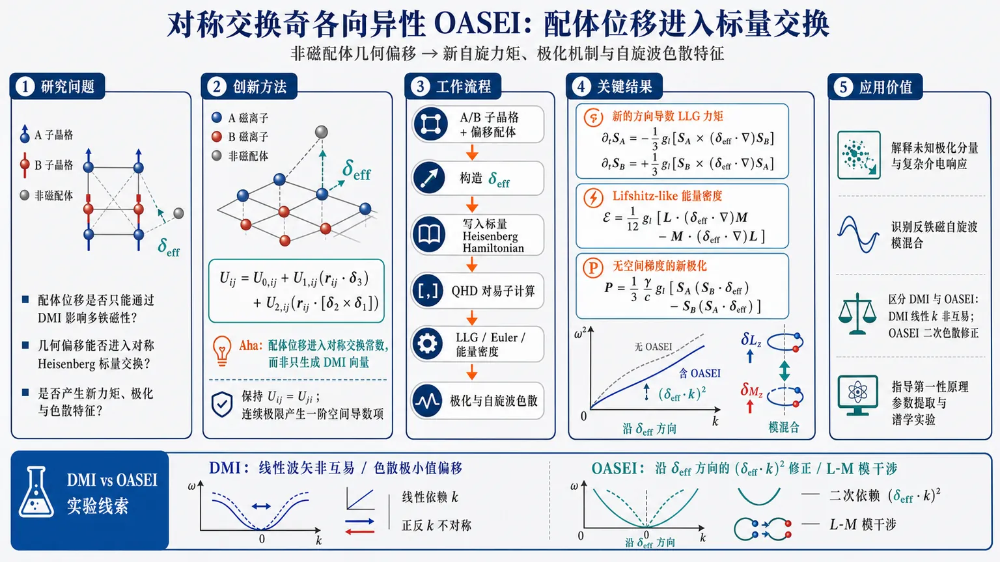
研究问题非磁配体位移是否只能通过 Dzyaloshinskii–Moriya 反对称交换影响多铁磁性？论文追问：配体几何偏移能否进入对称 Heisenberg 标量交换积分，并在反铁磁材料中产生新的自旋力矩、极化机制和自旋波色散特征。创新方法提出 Keffer-like 对称交换奇各向异性 OASEI：把交换积分写成 Uᵢⱼ = U₀,ᵢⱼ + U₁,ᵢⱼ(rᵢⱼ·δ₃) + U₂,ᵢⱼ(rᵢⱼ·[δ₂×δ₁])。Aha 点是：配体位移不再只生成 DMI 向量，而是进入对称 Heisenberg 交换常数；由于 rᵢⱼ 与 A/B 子晶格配体位移同时反号，交换积分仍保持 Uᵢⱼ = Uⱼᵢ，却在连续极限中产生一阶空间导数项。工作流程从反铁磁 A/B 子晶格与偏移配体几何出发，构造含 δ₃ 或 [δ₁×δ₂] 的有效位移 δₑff；将其写入标量 Heisenberg Hamiltonian；用量子流体动力学方法计算 Hamiltonian 对自旋算符的对易子；推导 LLG 中的方向导数力矩、Euler 方程力场、宏观能量密度；再把力矩改写为有效自旋流散度，得到多铁电极化；最后与 XYZ 反铁磁模型、DMI 项结合，分析共线和 cycloidal 自旋序下的自旋波色散变化。关键结果得到新的 LLG 力矩：∂ₜS_A = −(1/3)gₗ[S_A×(δₑff·∇)S_B]，∂ₜS_B = +(1/3)gₗ[S_B×(δₑff·∇)S_A]；得到 Lifshitz-like 能量密度 ℰ = (1/12)gₗ[L·(δₑff·∇)M − M·(δₑff·∇)L]；得到无空间梯度的新极化 P = (1/3)(γ/c)gₗ[S_A(S_B·δₑff) − S_B(S_A·δₑff)]。自旋波方面，OASEI 不像 DMI 给出线性 k 偏移，而是在频率平方中产生 (δₑff·k)² 型修正，并混合 δL_z 与 δM_z 两个反铁磁模。应用价值为多铁材料中的未知极化分量、反铁磁自旋波模混合和复杂介电响应提供新的微观解释；给出区分 DMI 与对称交换奇各向异性的实验线索：DMI 表现为线性波矢非互易或色散极小值偏移，OASEI 表现为沿配体有效位移方向的二次色散修正和 L/M 模干涉。该理论可指导反铁磁多铁材料的第一性原理参数提取、非弹性中子散射、自旋波谱和电磁振子实验分析。第一部分：核心概览
提出一种Keffer-like 的对称 Heisenberg 交换积分奇各向异性：配体位移不仅可进入 Dzyaloshinskii–Moriya 相互作用，也可进入对称交换常数。该项在连续极限中产生含一阶空间导数的能量密度、Landau–Lifshitz–Gilbert 自旋力矩、有效自旋流与新的多铁电极化结构，并改变反铁磁自旋波色散。其地位在于把通常归于反对称交换的配体几何效应扩展到对称交换通道。
---
第二部分：结构化快速回顾
《Keffer-like form of the symmetric Heisenberg exchange integral: Contribution to the Landau--Lifshitz--Gilbert equation and spin wave dispersion dependence》（None，）
背景
多铁性材料中的磁电效应需要微观机制解释。已有机制包括spin-current model、Dzyaloshinskii–Moriya interaction、p–d hybridization等。Keffer 形式中 DMI 常数满足 D ∼ r₁₂ × δ，说明非磁配体位移可决定自旋相互作用的几何结构。
方法
从含标量交换积分的 Heisenberg Hamiltonian 出发，将交换积分推广为
Uᵢⱼ = U₀,ᵢⱼ + U₁,ᵢⱼ(rᵢⱼ·δ₃) + U₂,ᵢⱼ(rᵢⱼ·[δ₂×δ₁])。
使用多粒子量子流体动力学方法推导自旋力矩、Euler 动量方程中的力场、宏观能量密度与有效自旋流。
结果
新相互作用产生 LLG 方程中的一阶导数力矩：
∂ₜS_A = −(1/3)g₍ₗ₎[S_A × (δₑff·∇)S_B]，
∂ₜS_B = +(1/3)g₍ₗ₎[S_B × (δₑff·∇)S_A]。
能量密度为
ℰ = (1/12)g₍ₗ₎[L·(δₑff·∇)M − M·(δₑff·∇)L]。
极化为
P = (1/3)(γ/c)g₍ₗ₎[S_A(S_B·δₑff) − S_B(S_A·δₑff)]。
讨论
该相互作用只适用于反铁磁或亚铁磁材料，因其需要 A/B 子晶格配体位移的反号性质。其结构类似 DMI 的 Keffer 几何起源，但属于对称 Heisenberg 通道，并能在 spin-current model 中给出新的极化来源。
局限
推导主要为理论构造；未给出具体材料的第一性原理数值、实验拟合参数或统计检验。系数 U₁, U₂, g₍ₗ₎ 需要由非共线平衡态、实验色散或材料计算估计。
结论
配体位移可导致对称交换积分的奇各向异性 OASEI，从而引入一阶导数能量项、新自旋力矩、新有效自旋流与新多铁电极化机制，并与 DMI、XYZ 模型和反铁磁自旋波动力学发生耦合。
---
第三部分：逐章节冷凝解析
Abstract
Keffer geometry is extended from antisymmetric to symmetric exchange
核心命题是：symmetric Heisenberg exchange interaction 与 antisymmetric Dzyaloshinskii–Moriya interaction 都可视为由磁离子经非磁离子超交换形成的有效自旋—自旋张量势的一部分。原文明确给出背景：*"The symmetric Heisenberg exchange interaction and antisymmetric Dzyaloshinskii-Moriya interaction are parts of the tensor potential describing effective spin-spin interaction caused by the superexchange interaction of magnetic ions via nonmagnetic ion."* 关键创新是把 ligand shift 引入对称交换常数，而不仅限于 DMI 的 Keffer 向量常数。
The Heisenberg constant is decomposed into at least two contributions
交换常数至少含一个常规项与一个配体位移相关项。常规项产生无导数或二阶导数的标准能量密度；新项产生含一阶空间导数的能量密度。原文直接表述为：*"the constant of the Heisenberg interaction is composed minimum of two terms"*，并进一步说明：*"additional term gives a term in the energy density containing one spatial derivative of the spin density."*
New torque and modified spin-wave dispersions follow from the odd anisotropy
新相互作用给出 LLG 方程中的新贡献，并可能支持非共线平衡自旋序。原文强调：*"Corresponding contribution in the Landau–Lifshitz–Gilbert equation is found"*，以及 *"Possibility of the noncollinear equilibrium order of spin under influence of new spin torque is discussed."* 对反铁磁体系，分别考虑共线序与cycloidal order下的自旋波正常模色散修正：*"Modification of the spin wave (normal modes) dispersion dependencies in the antiferromagnetic materials is found for the collinear order and for the cycloidal order of spins."*
Effective spin current links the interaction to multiferroic polarization
新相互作用不仅改变磁动力学，也通过 spin-current model 进入电极化机制。摘要明确给出：*"Effective spin current is derived and applied for the spin-current model of the polarization origin in multiferroics."*
---
I Introduction
Magnetoelectric mechanisms motivate the microscopic extension
21 世纪以来，多铁性材料因较高相变温度与潜在应用推动磁电效应研究。原文开篇指出：*"Beginning of the XXI century demonstrated the growth of the interest to the magnetoelectric phenomenon in the relation to the appearance of the multiferroic materials with the relatively large temperature of the phase transition."* 理论背景覆盖 Fiebig 2005、Nagaosa 2008、Tokura 2014、Dong 2015、Mostovoy 2024 等综述。
Spin-current model serves as the conceptual bridge
Katsura–Nagaosa–Balatsky 模型中，电偶极矩正比于自旋叉乘，即 dᵢⱼ ∼ [rᵢⱼ × [Sᵢ × Sⱼ]]。原文概括为：*"the electric dipole moment is proportional to the vector product of spins."* 该模型最初解释“non-collinear spins”极化机制，之后被扩展到至少两种极化机制：*"it can be applied at least to two regimes."*
Symmetric exchange can generate spin current relevant to polarization
Heisenberg 对称交换相关的 magnon spin current 可进入 spin-current model。原文给出关键逻辑：*"The magnon spin current associated with the Heisenberg symmetric exchange interaction can be applied in the spin-current model to describe this mechanism."* 其推论是：若若干相互作用共同形成非共线自旋序，对称交换可进一步负责电极化形成。
DMI with Keffer constants explains scalar-product-type polarization in previous work
已有扩展表明，若使用 Keffer 形式的 DMI 微观常数，电偶极矩正比于自旋标量积也可纳入 spin-current model。原文写道：*"the electric dipole moment proportional to the scalar product of spins can be described within the spin-current model"*，条件是使用 *"the spin-current of magnons related to the Dzyaloshinskii-Moriya interaction with the microscopic Dzyaloshinskii constants chosen in the Keffer form."*
The main target is odd anisotropy of symmetric exchange interaction
核心目标被明确定义为 odd anisotropy of the symmetric exchange interaction, OASEI。原文直接给出：*"Main goal of this paper is the suggestion of novel form of the spin-spin interaction related to the odd anisotropy of the symmetric exchange interaction (OASEI)."* 这种奇形式来自交换积分对磁离子间距投影的依赖：*"Presented odd form of the anisotropy is related to the dependence of the exchange integral on the projection of the interparticle distance between magnetic ions."*
Keffer-like inspiration comes from D ∼ r₁₂ × δ
DMI 的 Keffer 形式写作 D ∼ r₁₂ × δ，其中 δ 为配体偏离磁离子连线或局域电荷质心的位置，r₁₂ 为磁离子间矢量。原文引用：*"this form symmetric exchange integral is inspired by the Keffer form of the Dzyaloshinskii constant D, where D ∼ r12 × δ."*
OASEI is restricted to antiferromagnetic materials
DMI 常数有四类形式；其中两类可存在于铁磁和反铁磁材料，两类仅存在于反铁磁材料。新提出的 OASEI 仅适用于反铁磁材料。原文非常明确：*"Suggested in this paper the odd anisotropy of the symmetric exchange interaction can exist in antiferromagnetic materials only."*
OASEI and Keffer DMI both produce first-derivative continuum terms
新相互作用与 Keffer DMI 在微观 Hamiltonian 中都与 r₁₂ 成正比，因此连续化后能量密度与自旋力矩含一阶空间导数。原文说明：*"Both the Dzyaloshinskii-Moriya interaction with the microscopic Dzyaloshinskii constants chosen in the Keffer form and the symmetric anisotropic exchange interaction with the odd anisotropy have microscopic Hamiltonian proportional to the interparticle distance of the magnetic ions r12."* 结果是：*"It leads to the energy density and spin-torque depending on the first derivative on the space coordinate."*
Spin-wave consequences differ from DMI
DMI 对色散的贡献依赖波矢投影，导致频率极小值偏离零波矢。OASEI 的贡献则进入特征频率平方，表现为波矢投影平方项。原文对比为：*"The Dzyaloshinskii-Moriya interaction gives contribution depending on the projection of the wave vector"*，而 *"the OASEI gives contribution in the dispersion dependence proportional to the square of characteristic frequency, so it gives contribution proportional to the square of the projection of the wave vector."*
OASEI complicates dielectric response by mixing δL_z and δM_z
反铁磁材料中，通常两条色散分支可分别视为 δL_z 与 δM_z 动力学；OASEI 会导致二者干涉。原文指出：*"The OASEI leads to interference of δLz and δMz. Hence, it leads to more complex dielectric response of the multiferroics."*
---
II Keffer-like form of the exchange integral in symmetric Heisenberg Hamiltonian
The scalar Heisenberg coefficient is generalized while preserving Uᵢⱼ = Uⱼᵢ
起点是标准标量交换 Hamiltonian：
Ĥ = −(1/2)∑ᵢ,ⱼ,ⱼ≠ᵢ Uᵢⱼ(Ŝᵢ·Ŝⱼ)。
原文写作：*"We start our analysis with the presentation of Heisenberg Hamiltonian with the scalar coefficient."* 基本约束是交换积分对指标交换保持对称：*"Obviously this construction includes the requirement of the symmetry of the coefficient Uij = Uji."*
The central exchange integral contains conventional and odd-anisotropic parts
对反铁磁多铁材料，交换积分被写成
Uᵢⱼ = U₀,ᵢⱼ + U₁,ᵢⱼ(rᵢⱼ·δ₃,ᵢⱼ−AB) + U₂,ᵢⱼ(rᵢⱼ·[δ₂,ᵢⱼ−AB × δ₁])。
原文给出定义：*"We suggest the following structure for the scalar coefficient (exchange integral) for the antiferromagnetic multiferroic materials"*，并说明 U₀,ᵢⱼ 是普通交换积分：*"where U0,ij is the usual exchange integral."*
Odd anisotropy is encoded by partial ligand shifts with antisymmetric sublattice behavior
三类部分配体位移满足：δ₁ 为常量，δ₂,ji−BA = −δ₂,ij−AB，δ₃,ji−BA = −δ₃,ij−AB。原文给出：*"They includes the partial ligand shifts δ1, δ2,ij-AB, and δ3,ij-AB which have the following properties: δ1 is a constant, δ2,ji-BA = −δ2,ij-AB, and δ3,ji-BA = −δ3,ij-AB."* 这些反号性质确保 Uᵢⱼ = Uⱼᵢ：*"Described properties allows to ensure the fundamental property of symmetry of the exchange integral."*
Equation (2) is explicitly declared the conceptual core
该交换积分形式是整篇工作的主要概念基础。原文直接写道：*"Equation (2) is the major concept of this paper."* 后续全部宏观模型、自旋力矩、能量密度、极化与集体激发都由该式推导。
The proposed anisotropy differs from conventional symmetric anisotropic exchange tensors
传统对称各向异性交换通常写成 JᵢⱼαβSᵢ^αSⱼ^β，被称为 symmetric anisotropic exchange，且常被视为小于 on-site anisotropy。原文指出：*"The anisotropy of exchange interaction as the tensor structure of generalized exchange integral Jijαβ Siα Sjβ is considered... where authors refer to it as the symmetric anisotropic exchange."* 新机制不同之处在于交换积分作为磁离子间距函数具有奇依赖：*"we consider the anisotropy related to the functional dependence of the exchange integral as a function of the interparticle distance."*
---
II.1 Heisenberg constant with combination of two ligand shifts
Two-shift mechanism parallels one Keffer-type DMI geometry
第一种 OASEI 对应材料中存在 DMI 能量密度
ℰ = −2g₍₀ζ₁)δ₂,AB[S_A × S_B]。
原文指出：*"First, we consider the odd anisotropy of the symmetric exchange, which can appear in the materials, where the Dzyaloshinskii-Moriya interaction exists in form of energy density ℰ = −2g(0ζ1)δ2,AB[SA × SB]."* 这说明该机制与特定 DMI 几何构型共享配体位移配置。
The exchange integral uses δ₁ and δ₂ through a vector product
该项显式包含两个部分配体位移：
J₂,ᵢⱼ = U₂,ᵢⱼ(rᵢⱼ·[δ₁ × δ₂,ᵢⱼ−AB])。
原文说明：*"This exchange integral explicitly contains two partial ligand shifts δ1 and δ2,AB."*
Nonzero contribution requires [δ₁ × δ₂] parallel to rᵢⱼ
几何条件是 [δ₁ × δ₂,ᵢⱼ−AB] 平行于磁离子相对距离 rᵢⱼ。原文写道：*"The vector product of the partial ligand shifts [δ1 × δ2,ij-AB] is parallel to the relative distance of the magnetic ions rij."* 因此内积非零：*"It gives possible nonzero additional part of the exchange integral J2,ij."*
Exchange symmetry remains intact
该机制仍满足 J₂,ᵢⱼ = J₂,ⱼᵢ。原文给出：*"We also obtain J2,ij = J2,ji as it is described above."*
---
II.2 Heisenberg constant with the ligand shift parallel to the relative distance
Single-shift mechanism uses δ₃ parallel to the magnetic-ion bond
第二种 OASEI 由单一部分配体位移 δ₃,ᵢⱼ−AB 给出：
J₁,ᵢⱼ = U₁,ᵢⱼ(rᵢⱼ·δ₃,ᵢⱼ−AB)。
原文定义为：*"Another form of the odd anisotropy of the symmetric exchange can be related to the single partial ligand shift δ3,ij-AB."*
The geometry requires δ₃ in addition to δ₁
图 2 展示 δ₃ 与 δ₁ 同时存在，其中 δ₃ 平行于 r_AB。原文说明：*"Required partial shift δ3,ij-AB exists in addition to δ1, both of them are demonstrated in Fig. (2)."*
---
II.3 Combined contribution of the ligand shifts
Both microscopic mechanisms are unified by an effective ligand shift
两类机制可统一写为
Uᵢⱼ = lᵢⱼ δₑff,ᵢⱼ−AB^β rᵢⱼ^β。
原文写道：*"We can present the potential under consideration in a form including both mechanisms."*
δₑff represents either δ₃ or [δ₁ × δ₂]
有效位移定义为 δₑff = δ₃ 或 δₑff = [δ₁ × δ₂]；耦合函数 lᵢⱼ 对应 U₁,ᵢⱼ 或 U₂,ᵢⱼ。原文表述：*"δeff,ij-AB = δ3,ij-AB or δeff,ij-AB = [δ1 × δ2,ij-AB], correspondingly."* 该统一形式为后续宏观推导提供紧凑符号。
---
III Spin torque
Quantum hydrodynamic method gives the torque directly from the Hamiltonian commutator
自旋演化由多体波函数与 Hamiltonian 对自旋算符的对易子给出：
∂ₜS_A = (i/ℏ)∫dR∑ᵢ∈Aδ(r−rᵢ)Ψ†[Ĥ,Ŝᵢ]Ψ。
原文写道：*"We apply the quantum hydrodynamic method for the derivation of the spin evolution equation."*
The OASEI torque for sublattice A contains a directional derivative along δₑff
A 子晶格自旋力矩为
∂ₜS_A = −(1/3)g₍ₗ₎[S_A × (δₑff·∇)S_B]，
其中 g₍ₗ₎ ≡ ∫r²l(r)d³r。原文给出：*"Straightforward calculations lead to the following partial contribution of the suggested interaction in the Landau–Lifshitz–Gilbert equation for subspecies A."*
The B-sublattice torque has the opposite sign structure
B 子晶格为
∂ₜS_B = +(1/3)g₍ₗ₎[S_B × (δₑff·∇)S_A]。
原文写作：*"and, similarly for subspecies B."* 这种符号差异与 A/B 子晶格反铁磁结构及配体位移反号性质一致。
In L and M variables the torque couples staggered and net magnetization channels
定义 L = S_A − S_B、M = S_A + S_B 后，新相互作用给出
∂ₜL = (1/6)g₍ₗ₎[M×(δₑff·∇)M] − [L×(δₑff·∇)L]，
∂ₜM = (1/6)g₍ₗ₎[L×(δₑff·∇)M] − [M×(δₑff·∇)L]。
原文说明：*"It also allows to make transition to the antiferromagnetic vectors L... and M..."*
需要注意，原始排版中写成 L = S_A − S_A、M = S_A + S_A，结合全文上下文应为 S_A − S_B 与 S_A + S_B。
---
IV Force field in the Euler momentum balance equation
The force field is derived because Euler momentum balance underlies the spin-current model
Euler 方程中的力场有助于理解自旋与极化的静态和动态性质。原文指出：*"The Euler equation plays an important role in the derivation of the spin-current model."* 动量密度定义为 m j_A = mn v_A，其中 m 为离子质量、n 为浓度、v 为速度场。
Zeroth-order expansion vanishes after angular integration and integration by parts
零阶展开出现相互作用常数
∫(δαβl(r)+(r^αr^β/r)dl/dr)d³r，角平均后为
δαβ∫(l(r)+(r/3)dl/dr)d³r。
原文给出消失结论：*"Further integration by part in the second term shows that all interaction constant is equal to zero."*
The first nonzero force field appears at second order in relative distance
A 子晶格力场为
F_A = m∂ₜj_A = −(1/3)g₍ₗ₎S_A^γ(δₑff·∇)∇S_B^γ。
原文写道：*"Nonzero value of the force field appears in the second order expansion on the small relative distance."*
The B-sublattice force has the opposite sign
B 子晶格力场为
F_B = m∂ₜj_B = +(1/3)g₍ₗ₎S_B^γ(δₑff·∇)∇S_A^γ。
原文说明：*"Similarly, we derive the force field for the second subspecies B."*
---
V Energy density
The energy density is derived for comparison with standard magnetic models
尽管自旋方程与力场已由 Hamiltonian 直接获得，显式能量密度仍有必要，因为磁性材料研究通常以能量密度表述相互作用。原文写道：*"we need explicit form of the energy density for comprehensive comparison with other known contributions in the model of the magnetically ordered materials."*
The microscopic definition uses the A-sublattice local energy density
A 子晶格能量密度定义为
ℰ_A = −(1/2)∫dR∑ᵢ∈A,ⱼ∈Bδ(r−rᵢ)Ψ†Uᵢⱼ(Ŝᵢ·Ŝⱼ)Ψ。
原文引入为：*"we present the definition of the macroscopic energy density in terms of the microscopic parameters."*
The first nonzero continuum term appears at first order in relative distance
与力场不同，能量密度的一阶相对距离展开即非零。原文明确：*"Non-zero value of the energy density appears in the first order expansion on the relative distance."*
Partial energy densities have opposite signs for A and B
A 子晶格：
ℰ_A = (1/6)g₍ₗ₎[S_A·(δₑff·∇)S_B]。
B 子晶格：
ℰ_B = −(1/6)g₍ₗ₎[S_B·(δₑff·∇)S_A]。
原文分别写道：*"we find the partial energy density for species 'A'"* 与 *"Similarly, we obtain the partial energy density for species 'B'."*
The total energy density has a Lifshitz-invariant-like L–M structure
合并后
ℰ = (1/12)g₍ₗ₎L·(δₑff·∇)M − M·(δₑff·∇)L。
原文给出：*"These partial energy densities can be combined in the full energy density... represented in terms of the antiferromagnetic vectors L... and M."*
该形式类似 Lifshitz invariant：两个序参量之间的一阶导数反对称组合，但其来源是对称 Heisenberg 交换积分的奇各向异性，而非传统 DMI。
---
VI Spin-current model
Spin-current model connects antisymmetric spin current to electric polarization
Katsura 模型中，非共线自旋导致电偶极矩 dᵢⱼ ∼ [rᵢⱼ × [Sᵢ × Sⱼ]]，宏观上对应 P^μ ∼ εμαβJαβ。原文说明：*"Relation between the electric polarization of spin origin and the spin current is point out in Ref. Katsura PRL 05."*
Quantum hydrodynamic derivations broaden the spin-current model
后续工作表明 spin-current model 可由量子流体动力学推导，不只是一种现象学假设。原文写道：*"the spin current model can be derived purely in terms of the quantum hydrodynamic model."*
Different interactions generate different polarization regimes through different spin currents
Heisenberg 交换的有效 magnon spin current 给出“non-collinear spins”极化；Keffer DMI 相关 spin current 给出“collinear spins”极化。原文对比：*"the effective spin current of magnons... gives the polarization for the regime of 'non-collinear spins'"*，而 *"the part of spin current of magnons described by the Dzyaloshinskii-Moriya interaction... gives the polarization for regime of 'collinear spins'."*
Not all torques generate polarization
只有能写成有效自旋流散度且含反对称部分的力矩才能产生极化。原文强调：*"the torques caused by some interactions cannot be presented as the divergence of the effective spin current or this spin current tensor can be symmetric, so they do not give any contribution in the polarization formation."*
---
VI.1 Contribution of novel interaction in the polarization formation via the spin-current model
The complete effective spin current follows from extracting a divergence from the total torque
总自旋流为
J_Σαβ = J_Aαβ+J_Bαβ = −(1/3)εαμνg₍ₗₑff)δₑff^β S_A^μS_B^ν。
原文说明：*"It can be considered as the result of the extraction of the divergence from the complete spin torque Tα: Tα = ∂βJΣαβ."*
The resulting polarization has no spatial derivatives
极化表达式为
P = (1/3)(γ/c)g₍ₗ₎[S_A(S_B·δₑff) − S_B(S_A·δₑff)]。
原文指出其与 Mostovoy 形式有相似性但无空间导数：*"which shows some similarity to the structure suggested in Mostovoy PRL 06, but here we have no space derivatives of the spin density."*
The polarization measures deviation of spin projections along the effective ligand direction
(S_A·δₑff) 与 (S_B·δₑff) 是局域自旋在有效配体方向上的投影。组合
S_A(S_B·δₑff) − S_B(S_A·δₑff)
表示固定位置处两个子晶格自旋投影的偏差。原文解释：*"we can call (SA · δeff) as the local spin projection on the effective ligand direction."*
The microscopic electric dipole moment has a triple-product structure
与宏观极化对应的微观电偶极矩为
d̂ᵢⱼ = (1/6)(γ/c)rᵢⱼ²l(rᵢⱼ)[δₑff,ᵢⱼ × [Ŝᵢ × Ŝⱼ]]。
原文引入为：*"we need to present the electric dipole moment leading to the macroscopic polarization (20)."*
The mechanism is only distantly similar to p–d hybridization
该极化与 spin-dependent p–d hybridization 有结构上的远似，但 Tokura 综述中相关项含磁离子相对距离，宏观化后产生空间导数。原文写道：*"Polarization (20) shows some distant similarity with the spin dependent p–d hybridization mechanism."*
---
VI.2 Comparison with known form of polarization
Known continuum polarization contains spin-density gradients
经典形式为
P ∼ (S·∇)S − S(∇·S)。
原文列出：*"Equation (20) following from the suggested interaction has some similarity in structure with polarization P ∼ (S · ∇)S − S(∇ · S)."*
The standard gradient form originates from symmetric isotropic exchange spin current
该形式可由对称各向同性 Heisenberg 交换的 magnon spin current 得到。原文说明：*"polarization (22) can be found using the spin current of magnons given by the symmetric isotropic exchange interaction."*
The new polarization originates from symmetric anisotropic exchange instead
新式 P = (1/3)(γ/c)g₍ₗ₎[S_A(S_B·δₑff) − S_B(S_A·δₑff)] 来源于对称各向异性交换。原文明确区分：*"While polarization (20) follows from the symmetric anisotropic exchange interaction."*
---
VII Energy density and spin torque for antiferromagnetic materials in XYZ model
The XYZ model supplies the baseline interactions for spin-wave analysis
后续集体激发计算需要同时包含常规交换、各向异性和新 OASEI。原文说明：*"Before we consider the collective excitations following the model developed above we describe other interactions included in our calculations."*
The microscopic Hamiltonian separates isotropic exchange and z-axis anisotropy
XYZ Hamiltonian 为
Ĥ = −(1/2)∑ₙ∈A,ₖ∈B(UₙₖxxŜₙ^xŜₖ^x + UₙₖyyŜₙ^yŜₖ^y + UₙₖzzŜₙ^zŜₖ^z)，
并重写为
−(1/2)∑(Uₙₖ(Ŝₙ·Ŝₖ₎₊κ̃ₙₖŜₙ^zŜₖ^z)。
原文给出：*"Mainly we consider the XYZ model for uniaxial crystal."*
The model assumes Uxx=Uyy=U and Uzz=U+κ̃
横向交换等同，纵向包含额外各向异性：Uₙₖxx=Uₙₖyy=Uₙₖ，Uₙₖzz=Uₙₖ+κ̃ₙₖ。原文写作：*"where Unk = Unkxx = Unkyy, and Unkzz = Unk + κ̃nk."*
---
VII.1 Energy density in XYZ model
The full continuum energy contains local and Laplacian exchange-anisotropy terms
A 子晶格能量密度包含 AA 与 AB 相互作用、各向同性项与 z 方向各向异性项，以及二阶梯度项：
g₀,u,AA(S_A·S_A)、κ₀,AA(S_A^zS_A^z)、g₂,u,AA(S_A·△S_A)、κ₂,AA(S_A^z△S_A^z)，并有对应 AB 项。原文给出：*"After required simplification we obtain the energy density associated with one subspecies A."*
B-subsystem energy follows by A ↔ B exchange
原文写作：*"Expression for the second subspecies can be found from (24) as ℰB = ℰA(A ↔ B)."* 总能量密度为 ℰ = ℰ_A + ℰ_B。
Under U_AB = −U_AA = −U_BB ≡ −U, only L appears in the simplified energy
常用假设为
U_AB = −U_AA = −U_BB ≡ −U。
原文明确：*"If we apply the common assumption for the relation between the exchange integrals between subspecies UAB = −UAA = −UBB ≡ −U."* 于是简化总能量只含 L：
ℰ = −(1/2)g₀,u(L·L) −(1/2)κ₀(L^zL^z) −(1/12)g₂,u(L·△L) −(1/12)κ₂(L^z△L^z)。
The exchange stiffness is recovered in familiar gradient form
定义 A ≡ g₂,u/6 后，交换能
Eₑₓ = −(1/2)A∫(L·△L)d³r = (1/2)A∫(∂^βL·∂^βL)d³r。
原文说明：*"so this term can be presented in more familiar form."*
---
VII.2 Spin torque in XYZ model
Spin dynamics uses a more general exchange hierarchy than the simplified energy case
能量密度简化采用 U_AB = −U_AA = −U_BB，但动力学进一步允许 U_AA = U_BB ≠ |U_AB|。原文指出：*"But further analysis we make for more general case of UAA = UBB ≠ |UAB|."*
Two exchange combinations U₊ and U₋ organize the torque coefficients
定义
U₊ = (U_AA + U_BB + 2|U_AB|)/4，
U₋ = (U_AA + U_BB − 2|U_AB|)/4。
原文说明：*"Described combined exchange integrals U+ and U− lead to two sets of the coefficients in the spin evolution equations."*
The L equation contains exchange, anisotropy, Laplacian, and z-anisotropic Laplacian torques
∂ₜL 包含
−g₀u[L×M]、κ₊[M×L_z e_z]、κ₋[L×M_z e_z]、A₊[M×△L]、A₋[L×△M]、(1/6)κ₂₊[M×△L_z e_z]、(1/6)κ₂₋[L×△M_z e_z]。
原文完整列出方程，并说明后续会将其与 OASEI 力矩结合：*"We apply this set of symmetric Heisenberg Hamiltonian based the Landau–Lifshitz–Gilbert equations in combination with the spin torque following from the suggested interaction."*
The M equation describes anisotropy-driven and gradient-driven net magnetization dynamics
∂ₜM 包含
κ₊[L×L_z e_z]、κ₋[M×M_z e_z]、A₊[L×△L]、A₋[M×△M]、(1/6)κ₂₊[L×△L_z e_z]、(1/6)κ₂₋[M×△M_z e_z]。
该结构使新 OASEI 可与常规反铁磁模耦合，尤其影响 δL_z 与 δM_z 分支。
---
VIII Dzyaloshinskii-Moriya interaction
Only a specific Keffer-like part of DMI is retained
DMI 不作完整讨论，仅保留与配体位移 δ₂,ij−AB 成正比的一类 Dzyaloshinskii 常数：
Dᵢⱼ,(δ) = ζ₁(rᵢⱼ₎δ₂,ij−AB。
原文写道：*"we consider a part of the Dzyaloshinskii-Moriya interaction with the Dzyaloshinskii constant of the following form."*
This DMI part yields a standard local cross-product energy density
对应能量密度为
ℰ = −2g₍₀ζ₁)δ₂,AB[S_A × S_B]。
原文说明该形式为：*"which leads to the well-known form of the energy density."*
它与 II.1 中两位移 OASEI 共享几何背景，但属于反对称交换通道。
DMI is used as a comparator and possible coexistence interaction
DMI 的作用是为 OASEI 提供参照：二者都可由配体位移几何产生，但 DMI 贡献通常线性依赖波矢投影并可移动色散极小值；OASEI 贡献进入特征频率平方并产生波矢投影平方型修正。Introduction 中相关原文为：*"The Dzyaloshinskii-Moriya interaction gives contribution depending on the projection of the wave vector"*，而 OASEI 为 *"contribution proportional to the square of the projection of the wave vector."*
---
IX Contribution of the novel interaction in the dispersion dependence of the spin waves
原始正文缺失导致无法逐式还原 IX 节推导
已给出的 Introduction 与 Abstract 确认 IX 节目标为计算 OASEI 对反铁磁自旋波正常模色散的贡献。原文目录句为：*"In Sec. IX contribution of the novel interaction in the dispersion dependence of the spin waves is calculated."*
Collinear and cycloidal equilibrium orders are both included
摘要明确给出 IX 节覆盖两类背景态：*"Modification of the spin wave (normal modes) dispersion dependencies in the antiferromagnetic materials is found for the collinear order and for the cycloidal order of spins."* 因此色散计算至少分为共线反铁磁序与旋摆/摆线 cycloidal 序两种情形。
Expected qualitative dispersion effect is quadratic in wave-vector projection
已提供 Introduction 给出关键定性结果：DMI 导致线性波矢投影项并使最小频率偏离零波矢；OASEI 进入频率平方并贡献 (δₑff·k)² 型修正。原文为：*"the OASEI gives contribution in the dispersion dependence proportional to the square of characteristic frequency, so it gives contribution proportional to the square of the projection of the wave vector."*
OASEI mixes δL_z and δM_z branches
普通反铁磁体系中两支色散可视为 δL_z 与 δM_z 独立动力学；OASEI 使二者耦合。原文为：*"Both the collinear equilibrium order and the cycloidal equilibrium order in antiferromagnetic materials shows the independence of two branches of the dispersion dependence"*，但随后指出：*"The OASEI leads to interference of δLz and δMz."*
---
X Brief summary of obtained results
原始正文缺失导致无法逐句解析 X 节
目录显示 X 节为总结：*"In Sec. X a brief summary of obtained results is presented."*
可确认的总结性结果包括四项
第一，提出 symmetric Heisenberg exchange integral 的 Keffer-like 奇各向异性。第二，推导含 (δₑff·∇) 的 LLG 力矩。第三，给出能量密度 ℰ = (1/12)g₍ₗ₎[L·(δₑff·∇)M − M·(δₑff·∇)L]。第四，得到新 spin-current 极化
P = (1/3)(γ/c)g₍ₗ₎[S_A(S_B·δₑff) − S_B(S_A·δₑff)]。这些均由已提供正文和摘要支持。
---
第四部分：深度理解与语言支持
1. 术语解析
Odd anisotropy of the symmetric exchange interaction, OASEI
“odd” 指交换积分对磁离子间距矢量投影 rᵢⱼ·δₑff 呈奇函数型依赖；当交换 i ↔ j 时，rᵢⱼ 与部分配体位移同时反号，使整体交换积分仍满足 Uᵢⱼ = Uⱼᵢ。它不同于普通偶函数型交换各向异性，如 J(|z|, √(x²+y²))，后者通常产生二阶空间导数项。
Keffer form
Keffer 形式通常指 DMI 常数的几何表达 D ∼ r₁₂ × δ，强调 DMI 由磁离子连线与配体偏移共同决定。这里的 “Keffer-like” 不是说对称交换常数也变成叉乘向量，而是说同样把配体位移几何纳入相互作用常数。
Ligand shift / partial ligand shift
ligand shift 是非磁离子，如氧离子，相对局域电荷中心或磁离子连线的偏移。文中拆成 δ₁、δ₂、δ₃ 三种“partial”位移，分别用于构造不同几何机制：δ₃ 平行磁离子连线；δ₂ 可与 δ₁ 叉乘形成平行于 rᵢⱼ 的有效矢量。
Spin-current model
这里不是电子输运意义上的真实电荷流，而是由自旋相互作用力矩重写为有效自旋流散度后得到的张量 Jαβ。其反对称部分可通过 P^μ = (γ/c)εμαβJαβ 产生电极化。
Cycloidal order
cycloidal order 是自旋在空间中沿某一传播方向周期性旋转，且旋转平面包含传播方向；常见于多铁材料。它与螺旋 helical order 的区别在于旋转平面和传播矢量的相对取向不同，因而可诱发不同方向的电极化。
---
2. 疑难查证
为什么对称 Heisenberg 交换能产生类似 DMI 的一阶导数项？
通常 Heisenberg 交换 U(r)(Sᵢ·Sⱼ₎ 中，U(r) 是偶函数，连续展开时一阶项因空间反演或角平均抵消，保留的是 S·△S 或 (∇S)² 这类二阶导数项。这里交换积分含 rᵢⱼ·δₑff。由于 rᵢⱼ 本身是一阶小量，配合 S_B(r+rᵢⱼ) 的 Taylor 展开，一阶导数项不再被对称性消去，最终出现 S_A·(δₑff·∇)S_B。关键不是 Hamiltonian 的自旋部分反对称，而是交换积分的空间几何依赖具有“奇”结构。
为什么这种 OASEI 只适用于反铁磁材料？
若只有一种等价磁子晶格，交换 i ↔ j 时很难让奇的 rᵢⱼ 因子保持标量交换积分对称。反铁磁材料有 A/B 子晶格，配体位移可定义为 δₑff,ji−BA = −δₑff,ij−AB。于是 rⱼᵢ = −rᵢⱼ 与 δₑff,ji−BA = −δₑff,ij−AB 同时反号，内积 r·δₑff 保持不变，从而满足 Uᵢⱼ = Uⱼᵢ。这就是“奇各向异性”与交换积分对称性并存的数学条件。
为什么新极化式没有空间导数，却仍来自含一阶导数的力矩？
力矩可写成 T^α = ∂_βJαβ。一阶导数出现在力矩中，是因为对有效自旋流 Jαβ 求散度；但自旋流本身可以只含局域自旋乘积与 δₑff，即
J_Σαβ = −(1/3)εαμνg₍ₗ₎δₑff^βS_A^μS_B^ν。
代入极化关系 P^μ = (γ/c)εμαβJαβ 后，空间导数已被“积分回”自旋流结构中，因此极化是局域形式。
δL_z 与 δM_z 的“interference”意味着什么？
反铁磁小振幅动力学常可分解为 staggered magnetization L 与 net magnetization M 的两个独立模，尤其 z 方向扰动 δL_z 和 δM_z 可形成两条独立色散分支。OASEI 的能量密度含 L·(δₑff·∇)M − M·(δₑff·∇)L，天然把 L 与 M 的空间变化交叉耦合。在线性化方程中，这会产生非对角项，使原本独立的 δL_z 与 δM_z 模混合，从而改变介电响应与电磁振子谱线。
---
第五部分：创新评估与关联
1. 创新性判断
新颖性一：把 Keffer 配体位移机制从 DMI 推广到对称 Heisenberg 交换
近年关于多铁电极化、DMI、spin-current model 的工作多集中于反对称交换或传统对称交换自旋流。该工作提出：配体位移不仅决定 Dzyaloshinskii vector，也可进入标量 Heisenberg exchange integral，形成 Uᵢⱼ = U₀ + U₁(r·δ₃)+U₂(r·[δ₂×δ₁])。这解决了此前模型中“配体几何效应主要归属 DMI”的局限。
新颖性二：提出对称交换的一阶导数 Lifshitz-like 能量项
传统对称交换在连续极限中通常给出 无导数项或二阶导数/交换刚度项；一阶导数项通常与 DMI 或 Lifshitz invariant 相关。这里从对称 Heisenberg Hamiltonian 的奇各向异性交换积分推得
ℰ = (1/12)g₍ₗ₎[L·(δₑff·∇)M − M·(δₑff·∇)L]，为一阶导数项提供了新的微观来源。
新颖性三：给出新的 LLG 自旋力矩通道
新力矩
∂ₜS_A = −(1/3)g₍ₗ₎[S_A×(δₑff·∇)S_B]
不同于常规交换力矩、DMI 力矩和单离子各向异性力矩。它能驱动或稳定非共线平衡结构，并在反铁磁动力学中混合 L 与 M 模。
新颖性四：提出新的 spin-current 极化形式
通过有效自旋流得到无梯度极化
P = (1/3)(γ/c)g₍ₗ₎[S_A(S_B·δₑff) − S_B(S_A·δₑff)]。
该形式不同于 Katsura 的叉乘型极化、Mostovoy/Baryakhtar 的梯度型极化，也不同于传统 p–d hybridization 的局域单自旋方向依赖机制。它为多铁材料中尚未归类的极化分量提供候选解释。
新颖性五：预言不同于 DMI 的自旋波色散修正
DMI 常导致线性 k 非互易项或频率极小值偏移；OASEI 对色散的主效应进入频率平方，并给出 (δₑff·k)² 型贡献，同时混合 δL_z 与 δM_z。这为实验上区分 DMI 与对称交换奇各向异性提供了可观测路径：观察色散是否表现为线性非互易偏移，还是二次投影修正与模混合。
总体评价
理论创新强，核心价值在于提出一个新的微观相互作用类别并系统推导其宏观后果。主要未解决部分是材料实现与参数量级：U₁、U₂、g₍ₗ₎、δₑff 尚需第一性原理计算、非弹性中子散射、自旋波谱或电磁振子实验验证。
-
14
📊 含图深析
📄 摘要：在方格晶格经典海森堡磁电模型中，用蒙特卡罗模拟研究磁场与电场共同作用下的斯格明子相，分析不同场强、温度和耦合参数对拓扑自旋纹理稳定区间的影响，并刻画电场对其生成与调控的作用。
💡 亮点：电场和磁场共同决定方格磁电体中的斯格明子稳定区。为可电控拓扑自旋纹理提供了参数图景。
📖 展开分析 + 配图
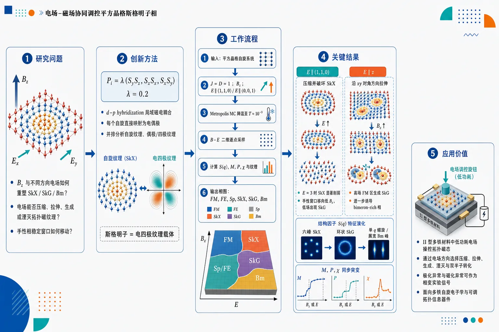
研究问题在平方晶格经典 Heisenberg–Dzyaloshinskii–Moriya 模型中，外加磁场 Bz 与不同方向电场如何共同重塑斯格明子相：电场能否压缩、拉伸、湮灭或生成 SkX、SkG、双半子等拓扑磁纹理，并改变手性相稳定窗口。创新方法将 d–p hybridization 局域磁电耦合写入经典自旋哈密顿量，用 Pi=λ(SySz,SzSx,SxSy) 把每个自旋直接映射为电偶极；同时扫描 B–E 二维相图，并把自旋纹理与电偶极/电四极纹理并排分析，揭示“斯格明子=电四极纹理载体”的可视化机制。工作流程输入平方晶格自旋系统、J=D=1、λ=0.2、磁场 Bz 与两类电场 E∥(1,1,0)、E∥(0,0,1)；通过 Metropolis 蒙特卡洛从高温降至 T≈10⁻³，并在 B–E 平面逐点采样；计算自旋纹理、偶极纹理、结构因子、磁化 M、极化 P、标量手性 χ；输出 FM、FE、Sp、SkX、SkG、Bm 等相区边界和相互转化路径。关键结果面内电场 E∥(1,1,0) 会压缩并破坏 SkX，约 E≈3 时显著削弱斯格明子晶格，同时把手性窗口推向更低 Bz，使低磁场下可出现 SkG；面外电场 E∥z 使斯格明子沿 xy 对角方向拉长，在高磁场原本铁磁区生成 SkG，并进一步诱导 bimeron-rich 相；相边界处磁化、极化和手性同步突变，结构因子从六峰 SkX 转为环状 SkG、单 q 螺旋或展宽双半子峰。应用价值为 II 型多铁材料中用电场低功耗操控拓扑磁态提供微观图像：可通过改变电场方向选择性实现斯格明子晶格压缩、拉伸、生成、湮灭和双半子转化；极化异常与磁化异常可作为实验识别 SkX、SkG、Bm 相变的信号，面向多铁自旋电子学和可调拓扑信息器件。第一部分：核心概览 (Overview)
该研究通过经典蒙特卡洛模拟系统刻画平方晶格铁磁 Heisenberg–Dzyaloshinskii–Moriya 模型中，磁场 (B_z) 与两种方向电场 (mathbf Eparallel(1,1,0))、(mathbf Eparallel(0,0,1)) 对斯格明子相的协同调控。核心贡献在于给出完整低温 ((B,E)) 相图，揭示电场不仅能压缩、拉伸、湮灭斯格明子晶格，还能把螺旋相、斯格明子气、双半子富集相相互转化。研究把自旋纹理与由 d–p hybridization 诱导的电偶极/四极纹理并行分析，提供了理解 II 型多铁材料中电场控制拓扑磁态的微观框架。
---
第二部分：结构化快速回顾
《Interplay of electric and magnetic fields in skyrmion phases of the classical Heisenberg model on a square lattice》（None，）
背景
磁性斯格明子是由 Dzyaloshinskii–Moriya interaction, DMI 等机制稳定的拓扑自旋纹理，具备低功耗自旋电子学潜力。传统电流操控存在欧姆热限制；磁电材料尤其是 type-II multiferroics 中，电极化由磁序诱导，提供了电场低耗操控磁纹理的可能。
方法
采用平方晶格经典 Heisenberg 模型，包含铁磁交换 (J=1)、DMI (D=1)、磁场 (B_z)、电场 (mathbf E)，以及由 d–p hybridization 给出的局域极化
[
mathbf Pᵢ₌łambda(Sᵢ^ySᵢ^z,Sᵢ^zSᵢ^x,Sᵢ^xSᵢ^y),quad łambda=0.2.
]
使用 Metropolis 蒙特卡洛，主系统 (L=48)，周期边界，降温至 (Tapprox10⁻³)，并用 (L=60,72) 检查有限尺寸效应。
结果
识别出 FM、FE、Sp、SkX、SkG、Bm 等相。面内电场 (mathbf Eparallel(1,1,0)) 倾向于压缩并破坏 SkX，但也能把手性区域推向更低 (B_z)。面外电场 (mathbf Eparallel z) 使斯格明子沿 (xy) 方向拉伸，并促进 bimeron-rich 相。磁化、极化和手性在相边界同步变化。
讨论
电场调控并非简单改变能量尺度，而是通过局域磁电耦合重塑斯格明子内部结构。斯格明子携带的电四极纹理使自旋拓扑与电偶极空间一一关联；因此，极化响应可作为多铁斯格明子相变的实验信号。
局限
模型为经典自旋、二维平方晶格、固定 (J=D=1)、固定 (łambda=0.2)，未纳入量子涨落、各向异性、真实材料晶格细节、长程偶极相互作用或实时动力学。相边界依赖 (D/J)，绝对数值不能直接等同于具体材料。
结论
交叉电磁场能系统性调控拓扑磁纹理：面内电场偏向破坏 SkX，面外电场偏向拉伸并诱导双半子；温度进一步产生 SkG、bimeron-rich 与手性无序中间态。自旋—电偶极双空间分析是理解多铁斯格明子相变的关键。
---
第三部分：逐章节冷凝解析 (Section-by-Section Condensing)
Abstract
- Magnetoelectric control of skyrmion phases
研究对象是带 DMI 和 磁电耦合 的平方晶格铁磁 Heisenberg 模型，目标是解析磁场与电场对斯格明子相的联合影响。摘要明确指出，磁性斯格明子因拓扑稳定性和低耗器件潜力而重要：*"Magnetic skyrmions are topologically stable spin textures that can be stabilized by Dzyaloshinskii–Moriya interaction and manipulated by external fields, making them promising for low-dissipation spintronic applications."* 方法为经典蒙特卡洛：*"Here we investigate, using classical Monte Carlo simulations, the combined effects of magnetic and electric fields on skyrmion phases in a ferromagnetic Heisenberg model on the square lattice with Dzyaloshinskii–Moriya interaction and magnetoelectric coupling via the d-p hybridization mechanism."*
- Full phase taxonomy under crossed fields
可辨识相包括 ferromagnetic, ferroelectric, spiral, skyrmion crystal, skyrmion gas, bimeron，并通过自旋纹理、偶极纹理、结构因子、磁化、极化、标量手性共同判定：*"We analyze spin and dipolar textures, structure factors, magnetization, polarization, and scalar chirality for different field orientations and strengths, identifying ferromagnetic, ferroelectric, spiral, skyrmion crystal, skyrmion gas, and bimeron phases, as well as the field-driven transitions between them."*
- Electric-field reshaping of chiral stability windows
电场显著改变手性相稳定区，不只是微扰变形；具体表现为斯格明子形变、转化为双半子、磁场手性窗口位移：*"We show that electric fields strongly reshape the stability region and internal structure of chiral phases, inducing skyrmion deformation, transmutation into bimerons, and shifts of the chiral window in magnetic field."*
- Localized magnetoelectric entities as microscopic mediators
局域磁电实体，尤其是带电四极纹理的斯格明子，是电场操控拓扑磁态的关键中介：*"Our results highlight the role of localized magnetoelectric entities, such as skyrmions carrying electric quadrupolar textures, in mediating electric-field control of topological magnetic states, providing a microscopic framework relevant to multiferroic skyrmion-host materials."*
---
I Introduction
- Historical and technological context of magnetic skyrmions
斯格明子理论预言可追溯至上世纪，首个实验观测出现在 itinerant ferromagnet MnSi；其小尺寸和稳定性推动信息存储与处理研究。原文给出背景：*"Magnetic skyrmions were theoretically predicted in the past century [1, 2] and first observed in the itinerant ferromagnet MnSi [3, 4]."* 技术动机为：*"Due to their stability and small size, skyrmions are serious candidates for use in information storage and processing [12, 13, 14, 15, 16, 17, 18]."*
- Multiple stabilization mechanisms beyond DMI
典型稳定机制为 Dzyaloshinskii–Moriya interaction 加外磁场，但其他机制也可稳定斯格明子，包括磁挫折、各向异性耦合、RKKY、偶极相互作用。对应原文：*"These topologically nontrivial spin textures are typically stabilized by the Dzyaloshinskii-Moriya interaction (DMI) [29, 30] in the presence of an external magnetic field."* 同时：*"alternative stabilization mechanisms have also been identified, including magnetic frustration [31, 32, 33], anisotropic couplings [34, 35, 36], Ruderman-Kittel-Kasuya-Yosida (RKKY) [37], and dipolar [38] interactions."*
- Motivation for electric-field control in multiferroics
金属体系中自旋转移力矩可用超低电流操控斯格明子，但欧姆热是主要限制；磁电材料提供低耗电场路径。原文指出：*"Skyrmions can be manipulated in metallic systems by ultralow current densities via spin-transfer torque [39, 40, 41, 42, 43, 44], although Ohmic heating remains a major limitation for spintronic applications."* 因此：*"This has motivated increasing interest in magnetoelectric (ME) materials, particularly type-II multiferroics, where the electric polarization is induced by the magnetic order itself."*
- Three microscopic mechanisms of magnetoelectric coupling
文中区分三类磁电耦合机制。第一，spin-current mechanism：
[
mathbf Pproptosumᵢⱼmathbf eᵢⱼ×(mathbf Sᵢ×mathbf Sⱼ₎
]
原文：*"In noncollinear magnets, the spin-current mechanism generates a polarization of the form (ěcPproptosumᵢⱼěceᵢⱼ×(ěcSᵢ×ěcSⱼ))."*
第二，symmetric exchange striction：(mathbf Sᵢḑotmathbf Sⱼ)，可在共线态诱导铁电性：*"symmetric exchange striction can induce ferroelectricity through terms proportional to (ěcSᵢḑotěcSⱼ), allowing polarization even in collinear states."*
第三，局域 spin-dependent d–p hybridization：*"A third mechanism, particularly relevant in multiferroic insulators, is the spin-dependent d–p hybridization between transition-metal and ligand ions."*
- Local d–p hybridization as the chosen mechanism
与前两种依赖相邻自旋关联的机制不同，d–p hybridization 是局域机制，其偶极取决于单个自旋相对键方向的取向：
[
mathbf pᵢⱼpropto(mathbf eᵢⱼḑotmathbf Sᵢ₎²mathbf eᵢⱼ.
]
原文强调局域性：*"Unlike the previous two, this mechanism is essentially local, with the induced dipole depending on the orientation of each spin relative to the bond direction."* 适用材料包括 CuFeO(₂)、CuCrO(₂)、Ba(₂)CoGe(₂)O(₇)、Cu(₂)OSeO(₃)。
- Skyrmions carry electric dipolar or quadrupolar moments
关键先验实验/理论动机来自 Cu(₂)OSeO(₃) 中斯格明子携带局域电多极矩。原文：*"Seki et al. [66] showed that skyrmions in Cu2OSeO3 carry localized electric dipolar or quadrupolar moments, enabling their manipulation by external electric fields."* 这些多极矩并非独立自由度，而由自旋纹理决定：*"These multipolar moments are not independent degrees of freedom, but are fully determined by the underlying spin texture through the magnetoelectric coupling."*
- Novel systematic mapping of combined ((B,E)) phase diagrams
相对于固定磁场或固定电场的既有工作，核心推进是系统绘制两种电场方向下的联合 ((B,E)) 相图。原文直接界定差异：*"In contrast to previous studies that focused on fixed magnetic or electric fields, here we provide a systematic mapping of the combined (B,E) phase diagrams for two distinct electric-field orientations."* 由此揭示电场不仅抑制或形变 SkX，还可诱导 Sk、SkG、Bm 相互转化：*"This approach reveals how electric fields not only suppress or deform skyrmion lattices, but also induce controlled transformations between skyrmion, skyrmion-gas, and bimeron-rich phases across extended regions of parameter space."*
---
II Model and methods
- Hamiltonian with exchange, DMI, magnetoelectric coupling, and Zeeman field
模型为平方晶格上的经典 Heisenberg 自旋，哈密顿量为
[
mathcal H=-Jsumłₐₙgₗₑ ᵢ,ⱼåₙgₗₑmathbf Sᵢḑotmathbf Sⱼ
+Dsumłₐₙgₗₑ ᵢ,ⱼåₙgₗₑδhatmathbf rḑot(mathbf Sᵢ×mathbf Sⱼ₎
-mathbf Eḑotsumᵢmathbf Pᵢ
-B_zsumᵢSᵢ^z.
]
原文：*"We considered here a system composed of classical Heisenberg magnetic moments, in a square under uniform magnetic ((B_z)) and electric ((ěcE)) fields, given by the Hamiltonian."* 自旋为单位矢量：*"the spin variables are unimodular classical vectors, (|ěcSᵢ|=1)."* 近邻耦合与原胞矢量为：*"nearest neighbors (NN) coupling and the primitive translation vectors are (ěce₁=(1,0)) and (ěce₂=(0,1))."*
- Effective polarization from spin-dependent metal–ligand hybridization
局域极化由 d–p hybridization 约化为自旋分量二次型：
[
mathbf Pᵢ₌łambda(Sᵢ^ySᵢ^z,Sᵢ^zSᵢ^x,Sᵢ^xSᵢ^y).
]
原文：*"we considered here the spin-dependent metal–ligand hybridization mechanism, which has been shown to describe the magnetoelectric response in chiral magnetic insulators such as Cu2OSeO3."* 具体公式来自对键方向平均与晶格对称性：*"Upon averaging over the bond directions (eᵢⱼ) and considering the symmetry of the lattice, this expression reduces to an effective quadratic form in the spin components."* 参数固定为 (łambda=0.2)：*"where (łambda) (set as 0.2 in this work) is the magnetoelectric coupling constant."*
- Energy-scale convention and physical implication of the ME term
设定 (J=1)，使 (E) 与 (łambda) 无量纲，磁电强度由 (łambdamathbf E) 控制：*"Setting (J=1) fixes the energy scale, so that both (ěcE) and (łambda) are dimensionless and the ME coupling is governed by (łambdaěcE)."* 电场偏好混合自旋分量，从而促进非共线纹理：*"the electric field favors configurations with mixed spin components, promoting noncollinear textures that can gain energy through the ME coupling."*
- Monte Carlo protocol and statistical sampling
采用 Metropolis MC，主模拟尺寸 (N=L²)、(L=48)，周期边界；降温率 (Tₙ₊₁=0.9Tₙ)，从 (T=2) 到 (Tapprox10⁻³)。原文给出精确采样量：*"At each temperature, up to (10⁵) Monte Carlo steps (MCS) were used for thermalization, followed by (2×10⁵) MCS for measurements."* 每组参数独立运行 10 次，相变附近 20 次：*"we performed 10 independent runs for each set of parameters, increasing this number to 20 in regions close to phase transitions."*
- Hysteresis-like electric-field sweeps and finite-size checks
低温固定 (Tapprox10⁻³) 下，从 (E=0) 扫到最大值再扫回，用于检验相稳定性：*"complementary simulations were carried out at fixed low temperature ((Tapprox10⁻³)), sweeping the electric field from (E=0) to a maximum value and back, in order to assess the stability of the observed phases."* 有限尺寸检查使用 (L=60,72)，每个选点 5 次独立模拟：*"we also performed 5 independent simulations for larger system sizes ((L=60) and (L=72)) at selected points of the phase diagram, confirming that the main features remain qualitatively unchanged."*
- Structure factor as the ordering diagnostic
横向结构因子
[
Sₚₑᵣₚ₍ₘₐₜₕbf q)=frac1Nłeftłangle
łeft|sumⱼSⱼ^xeⁱmathbf qḑotmathbf rⱼi̊ght|²⁺
łeft|sumⱼSⱼ^yeⁱmathbf qḑotmathbf rⱼi̊ght|²
i̊ghtångle
]
用于识别 Bragg 峰和相类型。原文：*"We have calculated the perpendicular (to z) component of the static spin structure factor in the reciprocal lattice ((ěcSₚₑᵣₚ(ěcq))) to identify the Bragg peaks that characterize the different spin-textures."*
- Scalar chirality as discrete topological charge
标量手性定义为
[
ḩi=łeftłanglefrac14πsumΔ_₁,Δ_₂
mathbf Sᵢḑot(mathbf Sⱼ×mathbf Sₖ₎ᵢ̊ghtångle.
]
平方晶格每个 plaquette 分解为两个三角形，采用一致逆时针顺序：*"On the square lattice, each plaquette is decomposed into two triangles, and a consistent counterclockwise ordering of the spins is adopted."* 在固定 (J,D,B_z>0) 符号下，斯格明子手性为正，电场不改变其符号：*"In the parameter regime explored here (fixed signs of (J), (D), and (B_z>0)), the skyrmion chirality is positive, and the electric field is not expected to alter it, as the magnetoelectric term is quadratic in the spin components."* 每个斯格明子近似携带 (Qapprox1)：*"each skyrmion carries an approximately quantized charge (Qapprox1), so that the total charge is proportional to their number."*
- Baseline (E=0) phase sequence on square lattice
固定 (J=D=1)；(D=1) 已知可稳定斯格明子：*"Throughout this work we set (J=1), which fixes the energy scale, and (D=1), known to stabilize skyrmions."* (E=0)、低温 (T=0.0009) 下：
- (B_z=0.2)：spiral phase, Sp，单 (q) 双峰结构因子；原文：*"for magnetic field (B_z=0.2), the helical or spiral phase (Sp) is observed, characterized by its two peaks structure factor, known as single-q."*
- (B_z=0.5)：SkX，三 (q) 六峰；*"for (B_z=0.5), the skyrmion crystal phase (SkX) emerges. Its structure factor, known as triple-q, displays six peaks."*
- (B_z=0.9)：FM，横向结构因子近零；*"for (B_z=0.9), the ferromagnetic (FM) phase is reached, where spins align along the magnetic field direction and (ěcSₚₑᵣₚ(ěcq)approxěc0)."*
- Thermally stabilized bimeron and skyrmion gas near phase boundaries
有限温度在 Sp–SkX 间打开中间区，稳定 meron 激发并形成 bimeron phase：*"at any finite temperature, a gap opens at the Sp–SkX phase transition, in which excitations (merons) are stabilized, partially disrupting the spiral order and giving rise to the bimeron (Bm) phase, or 'elongated skyrmions'."* SkX–FM 过渡附近热涨落稳定 skyrmion gas：*"A similar argument applies to the SkX–FM transition, where thermal fluctuations stabilizes a skyrmion gas (SkG) phase, whose structure factor exhibits a ring-like pattern due to the absence of a preferred orientation."*
---
III Low-temperature behaviour
- Scope of low-temperature analysis
低温部分分两层：先给两种电场方向的 ((B,E)) 相图、代表性自旋/偶极纹理和结构因子，再分析固定一个场、扫描另一个场时的序参量变化。原文：*"Subsection A presents and discusses the most relevant aspects of the phase diagrams for the two electric field directions, together with representative spin and dipole moment textures and their corresponding structure factors."* 以及：*"Subsection B focuses on the thermodynamic variables as functions of one of the fields, while fixing the other at characteristic values."*
---
III.1 Phase diagrams in ((B,E))
III.1.1 (ěcEparallel(1,1,0))
- Competing alignment tendencies of (B_z) and in-plane electric field
在 (Tapprox10⁻³)、(Eₓ₌E_y=Eₓy)、(E_z=0) 下绘制 (M_z,ḩi,Pₓy)。低 (Eₓy)、高 (B_z) 为 FM；高 (Eₓy)、低 (B_z) 时自旋趋向 ((1/2,1/2,1/sqrt2))，形成 FE 相。原文：*"At low (Eₓy) and high (B_z), the system is ferromagnetic (FM)."* 以及：*"at high (Eₓy) and low (B_z), the spins align in the ((1/2,1/2,1/sqrt2)) direction."* 该方向最小化单自旋磁电能 (happrox-(S^yS^z+S^xS^z)Eₓy)：*"This direction maximizes the polarization component parallel to the electric field, giving rise to a ferroelectric (FE) phase."*
- In-plane electric field destroys SkX near (Eₓyapprox3)
在零电场已存在斯格明子的中间磁场区域，增大 (Eₓy) 至约 3 会破坏斯格明子，但中间存在连续形变。原文：*"In the intermediate region, where skyrmions are present at zero electric field, applying (Eₓyapprox3) destroys the skyrmions, although intermediate deformations appear."*
- SkX to SkG evolution at (B_z=0.4)
(B_z=0.4) 下，(Eₓy=0.6) 时 SkX 的 triple-(q) 特征清晰；(Eₓy=2.0) 时晶格开始分离；(Eₓy=2.4) 时完全弥散为 SkG，背景自旋趋于平行并形成中心峰。原文：*"The triple-q structure of the SkX phase, well defined at (Eₓy=0.6), exhibits a central peak ... accompanied by secondary maxima."* 随后：*"At (Eₓy=2.0), the lattice begins to separate. At (Eₓy=2.4), the dispersion is complete and the central peak sharpens, corresponding to a SkG phase with a parallel-spin background."*
- Chiral region shifts to lower magnetic fields under in-plane electric field
(Eₓyapprox3) 会把手性区域推向更低 (B_z)，意味着电场可在更低磁场稳定斯格明子。原文：*"the competition between the fields also shifts the chiral region to lower magnetic fields for (Eₓyapprox3)."* 在 (B_z=0.2) 下，(Eₓy=2.8) 使螺旋相失稳并出现 skyrmion–bimeron 混合态；(Eₓy=3.2) 达到斯格明子数最大并形成 SkG；(Eₓyge3.8) 斯格明子减少并转向平行自旋相：*"At (B_z=0.2), increasing (Eₓy) up to 2.8 destabilizes the spiral phase, leading to a mixed state of skyrmions and bimerons."*；*"The number of skyrmions increases up to a maximum at (Eₓy=3.2), where a skyrmion gas forms."*；*"For (Eₓy≥3.8), the number of skyrmions decreases, giving way to the parallel-spin phase."*
- Electric-field tunability as an experimentally relevant mechanism
该低场稳定机制直接指向多铁体系中电场操控斯格明子相的实验可行性。原文：*"This result is particularly significant, as it demonstrates how the application of an electric field can effectively tune the chiral region, enabling the stabilization of skyrmions at lower magnetic fields."*
- Single-skyrmion deformation at (B_z=0.5)
孤立斯格明子在 (B_z=0.5)、(Eₓy=0,1,2) 下逐步解体。区域 B 自旋随 (Eₓy) 增大向 (xy) 平面倾斜；区域 A 向 (z) 方向倾斜；(Eₓy=2) 时区域 B 开始与背景融合。原文：*"The electric field competes with the magnetic field and DMI, progressively disassembling the skyrmion."*；*"Spins in region B tilt toward the xy-plane as (Eₓy) increases, while those in region A tilt toward the z direction."*；*"At (Eₓy=2), the region B starts merging with the background."*
- Quadrupolar interpretation of deformation
斯格明子—四极矩对应关系使形变可在偶极空间中直观看到：区域 B 中四极区域变大但强度减小，因为 (P_z) 分量减弱；区域 A 中 (P_z>0) 区域缩小。原文：*"the skyrmion–quadrupole relationship allows us to interpret this deformation more directly in dipolar-moment space."* 以及：*"in region B the quadrupole increases in size but decreases in intensity as the (P_z) component diminishes, while in region A the area with (P_z>0) is reduced."*
- Finite-size robustness for in-plane field case
(L=48,60,72) 的对比显示主要相图特征稳定。示例为 (Eₓy=0.6)、(B_z=0.4)，低温相为 SkX，具体热容和手性在三种尺寸下行为一致。原文：*"The results indicate that the main features of the phase diagram remain largely unchanged as the system size increases."*；*"The thermodynamic observables displayed (specific heat and chirality) exhibit a consistent behavior for (L=48,60,72)."*；*"These findings suggest that the observed phases and transitions are not dominated by finite-size effects."*
---
III.1.2 (ěcEparallel(0,0,1))
- Out-of-plane electric field favors (xy)-plane spin alignment at large (E_z)
在 (Tapprox10⁻³)、(Eₓ₌E_y=0) 下，高 (B_z)、低 (E_z) 为 FM；低 (B_z)、高 (E_z) 时自旋趋向 ((1/sqrt2,1/sqrt2,0))，极化 (mathbf P=(0,0,1))。原文：*"At high (B_z) and low (E_z), the system is ferromagnetic (FM)."*；*"at low (B_z) and high (E_z), the spins align along ((1/sqrt2,1/sqrt2,0)) with (ěcP=(0,0,1))."* 该极限适用于 (E_zgg B_z,|J|,D)：*"minimizing the Hamiltonian when (E_zgg B_z, |J|, D)."*
- Strong (E_z) destroys the chiral region, with lower critical (E_z) at lower (B_z)
手性区域可被足够强的面外电场破坏，且低磁场下临界 (E_z) 更小。原文：*"The chiral region is destroyed by sufficiently strong electric fields, with the critical (E_z) decreasing at lower (B_z)."* 例如 (B_z=0.5) 下，(E_z=0.5) 的 SkX 在 (E_z=1.5) 转变为单 (q) 螺旋相：*"the SkX phase observed at (B_z=0.5), (E_z=0.5) ... evolves into a spiral phase with a single-q structure at (E_z=1.5)."*
- Out-of-plane electric field creates chiral textures in otherwise ferromagnetic high-field region
在 (B_zapprox0.8) 附近，(E=0) 基态为 FM；增大 (E_z) 后，手性相扩展到该高场区域。原文：*"In this region, the ground state at (E=0) is ferromagnetic; however, upon increasing (E_z), chiral phases extend into this field range."* 这说明电场能在本来共线的区域稳定非共线纹理：*"the application of an electric field stabilizes noncollinear textures in a parameter region that would otherwise be collinear."*
- SkG to bimeron-rich to spiral sequence at (B_z=0.775)
(B_z=0.775) 时，(E_zapprox2) 形成 SkG，斯格明子拉长并部分排列；结构因子为带峰的展宽环。(E_zapprox3) 进一步拉伸和不对称，进入 bimeron-rich 相；更大 (E_z) 下螺旋态主导并伴随宽 FM 区域。原文：*"for (B_z=0.775) and (E_zapprox2) we obtain a SkG phase in which skyrmions elongate and partially align."*；*"The corresponding (ěcSₚₑᵣₚ(ěcq)) shows a broadened ring with pronounced peaks, typical of elongated skyrmions."*；*"For (E_zapprox3), further elongation and asymmetry lead to a bimeron-rich (Bm) phase."*；*"At even larger (E_z), spiral states dominate, with wide ferromagnetic regions favored by the high (B_z)."*
- Electric-field creation, annihilation, and deformation of skyrmions
面外电场不仅破坏 SkX，还能在高磁场区域生成 SkG 与 Bm 结构。原文总结为：*"this result provides evidence of electric manipulation of magnetic structures, enabling the creation, annihilation, and deformation of skyrmions in new regions of magnetic field."*
- Skyrmion elongation and dipole redistribution under (E_z)
(B_z=0.5)、(E_z=0,0.8,1.4) 下，斯格明子优先沿 (xy) 方向拉长。偶极空间更清楚显示该过程：区域 A 和 B 的 (P_z) 随 (E_z) 增大而增强；沿 (xy) 对角线、具有负 (P_z) 的偶极向 (xy) 平面旋转。原文：*"skyrmions elongate preferentially along the xy direction."*；*"the z-component of the dipoles in regions A and B increases with (E_z) due to magnetoelectric coupling, while dipoles with negative (P_z), located along the xy-diagonal (outside A and B), rotate toward the xy-plane."*
- Quadrupole space explains SkX–Bm–Sp and SkG–Bm–Sp transitions
偶极矩重分布和斯格明子—四极关系共同解释相变路径：*"This redistribution of dipolar moments, together with the skyrmion–quadrupole relationship, provides a clear interpretation of the skyrmion elongation and the previously described SkX–Bm–Sp and SkG–Bm–Sp phase transitions."*
- Finite-size robustness for out-of-plane field case
(L=48,60,72) 的同条件模拟显示整体行为稳定。示例为 (E_z=2.0)、(B_z=0.65)，低温为 SkX，热容和手性三尺寸一致。原文：*"The comparison shows that the overall behavior remains stable as the system size is increased."*；*"Specific heat and chirality display a consistent evolution for the three system sizes."*；*"This indicates that the observed phase behavior and transition features are not significantly affected by finite-size effects."*
---
III.2 ME effects in the order parameters
- Order parameters used to expose magnetoelectric coupling
低温下扫描单一场变量，观测 标量手性 (ḩi)、极化 (P_z)、(Pₓy)、磁化 (M_z)、(Mₓy)。定义为：*"we analyzed the scalar chirality defined in Eq. (4), the polarization components (P_z) and (Pₓyequiv(Pₓ₊P_y)/sqrt2), and the magnetization components (M_z) and (Mₓyequiv(Mₓ₊M_y)/sqrt2)."*
- Fixed (Eₓy=0.6): chiral window bounded by (Bc₁approx0.22) and (Bc₂approx0.75)
(T=0.0009)、(Eₓy=0.6) 下，手性曲线标定 SkX/SkG 区域；进入 SkX 的临界场约 (Bc₁approx0.22)，斯格明子完全消失约 (Bc₂approx0.75)。原文：*"Two clear phase boundaries are observed: (Bc₁approx0.22), marking the onset of the SkX phase, and (Bc₂approx0.75), where skyrmions vanish completely."*
- Finite (Mₓy) as a signature of skyrmion deformation
在手性区，电场破坏对称性，使 (Mₓy) 变为小但非零。更反直觉的是，随 (B_z) 增大，斯格明子数量减少、背景更沿 (z) 对齐，但 (Mₓy) 反而增大，暗示剩余斯格明子继续形变。原文：*"These skyrmions are deformed ... reflected in (Mₓy), which acquires a small but finite value in the chiral region due to symmetry breaking."*；*"while the number of skyrmions decreases as (B_z) increases ... and yet (Mₓy) grows."*；*"This suggests that the remaining skyrmions continue to deform under stronger (B_z)."*
- Polarization and magnetization change together at phase boundaries
(M_z) 随 (B_z) 增大，并在 (Bc₁,Bc₂) 附近斜率变陡；(P_z) 在螺旋相为负，到 (Bc₁) 附近变小；(Pₓy) 与 (Mₓy) 趋势相似。原文：*"As expected, (M_z) increases with (B_z), with steeper slopes at (Bc₁) and (Bc₂)."*；*"(P_z) is negative in the spiral phase ... and becomes very small at (Bc₁)."*；*"(Pₓy) follows a similar trend to (Mₓy), providing an additional indicator of ME coupling."* 实验关联为：*"there are concomitant changes in P and M at both phase boundaries, as is typically observed in type II multiferroics."*
- Fixed (B_z=0.4): increasing (Eₓy) rotates background and reduces skyrmion density
(B_z=0.4) 下随 (Eₓy) 增大，(M_z) 穿过手性区并渐近 (1/sqrt2)；(Pₓy) 与 (Mₓy) 均增长，纹理表现为 FM 背景旋转与斯格明子密度降低。原文：*"Here, (M_z) increases across the chiral region and approaches asymptotically (1/sqrt2)."*；*"Both (Pₓy) and (Mₓy) grow with (Eₓy), manifesting in spin textures as a rotation of the ferromagnetic background, concomitant with a reduction in skyrmion density."*
- Fixed (E_z=0.6): helix–SkL transition and (M_z)–(|P_z|) crossover
(E_z=0.6) 下 (M_z) 基本随 (B_z) 线性增长，但 helix–SkL 过渡处突增。原文：*"For fixed (E_z=0.6), (M_z) grows nearly linearly with (B_z), except for an abrupt increase at the helix–SkL transition."* 文中给出 (B_zapprox3.4) 处 (M_z) 与 (|P_z|) 交叉，但该数值与前述 (B_zsim0.3-0.8) 相图范围明显不协调，可能为标注或排版误差；原文为：*"at (B_zapprox3.4), a crossover between (M_z) and (|P_z|) occurs."* 物理解释是螺旋态偏好 (|P_z|>0)，而斯格明子/四极纹理使 (P_z) 更平衡：*"This crossover reflects the replacement of spiral states, which favor (|P_z|>0), by skyrmions and quadrupoles, whose dipolar distribution balances (P_z)."*
- Fixed (B_z=0.6): (E_z) enhances polarization and suppresses magnetic alignment at SkG–spiral transition
随 (E_z) 增加，SkG–螺旋转变时手性下降，(M_z) 降低而 (|P_z|) 增强。原文：*"Similar behavior is observed at fixed (B_z=0.6) as a function of (E_z): (M_z) decreases at the SkG–spiral transition (marked by a drop in chirality), while (|P_z|) increases."* 解释为：*"Increasing the magnetic field (B_z) promotes a more ferromagnetic background and balances the electric components, whereas increasing the electric field (E_z) enhances (P_z) and compensates the magnetic components of the system."*
---
IV Thermal fluctuation effects
- Thermal stability as a practical skyrmion advantage
斯格明子可在接近交换能 (J) 的温度存活，是自旋电子学潜力的重要来源。原文：*"Skyrmions in magnetic materials can persist at temperatures as high as (J), which is one of the key features making them promising for spintronic applications."*
- Thermodynamic observables tracked versus temperature
温度扫描包含 (M_z,Mₓy,P_z,Pₓy,Cᵥ,ḩi) 及偶极纹理。原文：*"we present the most relevant results for the thermodynamic variables (magnetization ((M_z) and (Mₓy)), polarization ((P_z) and (Pₓy)), specific heat ((Cᵥ)), and chirality ((X_M)) as functions of temperature, while also discussing the associated dipolar textures."*
- Case (Eₓy=0.2, B_z=0.2): paramagnet to spiral with isolated skyrmion through bimeron-like regimes
在 (Tapprox1)，所有变量趋零，进入顺磁相：*"At (Tapprox1), where all variables vanish, the system reaches the paramagnetic phase."* 低温 (Tłl1) 时出现低手性相，对应螺旋态中含一个孤立斯格明子：*"At (Tłl1), a low-chirality phase emerges, corresponding to a spiral state with an isolated skyrmion."* 冷却中出现两个热涨落诱导的中间手性区：(Tapprox0.5) 为扭曲弯曲 bimeron-like 结构，(Tapprox0.25) 沿某一晶格对角线排列但仍有热扰动：*"At (Tapprox0.5), distorted and curved bimeron-like structures emerge, while at (Tapprox0.25), these textures tend to align along one of the diagonal directions of the lattice."*
- Specific heat and (P_z) diagnose thermal crossovers
这些结构变化伴随 (P_z) 突降和 (Cᵥ) 双峰。原文：*"These structural changes are reflected in the polarization (P_z), which decreases abruptly, and in the specific heat (Cᵥ), which exhibits two peaks associated with these crossovers."*
- Diagonal-orientation cancellation of (P_z) above (T_capprox0.32)
热涨落形成沿两条对角线平均等权延展的手性结构；((1,1)) 方向结构给正 (P_z)，((-1,1)) 方向给负 (P_z)，净值相互抵消。原文：*"Thermal fluctuations induce the formation of elongated chiral structures which, on average, extend equally along both diagonal directions of the lattice above a characteristic temperature (T_capprox0.32)."*；*"Since (P_z) is positive for structures oriented along ((1,1)) and negative for those along ((-1,1)), its net value cancels out."* 因此 (P_z) 成为该转变的有效指标：*"behaving as an effective indicator of this transition."*
- Case (E_z=3.2, B_z=0.8): cooling into SkG with chirality maxima at intermediate temperatures
从顺磁相冷却至 SkG；中间温度下斯格明子数量、大小和形状波动，例如 (T=0.1001)。原文：*"For (E_z=3.2) and (B_z=0.8), the cooling process proceeds from the paramagnetic phase to a skyrmion gas (SkG)."*；*"At intermediate temperatures, the number of skyrmions fluctuates slightly, and their size and shape vary (e.g., at (T=0.1001))."* 另一中间态包含更多小型变形斯格明子，对应手性最大：*"Another intermediate state emerges, characterized by small deformed skyrmions in larger numbers than at low temperatures, corresponding to a maximum in chirality."*
- High-temperature chiral disorder and metastability at low temperature
更高温时 SkG 熔化为手性无序相，并在 (Tapprox0.6) 附近手性最大，纹理包含更小手性结构。原文：*"At higher temperatures, the skyrmion gas melts into a chiral disordered phase, reaching a maximum in the chirality at (Tapprox0.6), where the spin textures exhibit smaller chiral structures."* 低温手性误差条较大，被归因于独立运行中的亚稳态：*"At low temperatures, the chirality exhibits noticeable error bars, which can be attributed to the presence of metastable configurations in some independent runs."*
---
V CONCLUSIONS AND FUTURE PERSPECTIVES
- Crossed fields generate rich magnetoelectric textures
交叉磁场与电场在带 DMI 和 d–p 磁电耦合的经典铁磁平方晶格模型中产生多种拓扑与多铁纹理。原文概括：*"We have studied the effects of crossed magnetic and electric fields on skyrmion phases in a classical ferromagnetic Heisenberg model on the square lattice, including Dzyaloshinskii-Moriya interaction and a magnetoelectric coupling via the d-p hybridization mechanism."*；*"Our results show that the combined action of electric and magnetic fields generates a rich variety of magnetoelectric textures."*
- Field-orientation dependence: in-plane shrinkage versus out-of-plane elongation
面内电场倾向于收缩并破坏 SkX；面外电场拉伸单个斯格明子并促进双半子。原文：*"In-plane electric fields tend to shrink and destabilize the skyrmion lattice, while out-of-plane fields elongate individual skyrmions and favor the emergence of bimerons."*
- Magnetization and polarization jointly identify chiral multiferroic phases
磁电响应同时体现在磁化和极化上，可为实验识别手性相与多铁相提供路径。原文：*"The magnetoelectric response, captured through both polarization and magnetization, reflects the intertwined symmetry and topology of the underlying spin and electric textures, offering a potential experimental pathway to identify the different chiral and multiferroic phases."*
- Thermal pathways include bimeron-rich and skyrmion-fluid regimes
温度升高时出现复杂路径，包括 bimeron-rich 和 skyrmion-fluid 中间态，且磁化、极化、手性都有清晰信号。原文：*"As it increases, the system follows complex phase pathways that include intermediate bimeron-rich and skyrmion-fluid regimes."*；*"These transitions leave clear signatures in the magnetization, polarization, and chirality curves."*
- Skyrmion–electric-quadrupole interplay as the central outcome
核心物理图像是斯格明子与电四极矩的紧密对应。相较已有 Cu(₂)OSeO(₃) 相关研究，本研究扩展到磁场下 (M) 和 (P) 的联动行为，并显示与 II 型多铁类似响应。原文：*"A central outcome of this work is the key role played by the interplay between skyrmions and electric quadrupoles."*；*"Although these have been partially studied in [66], here we expand the analysis to include the effects of a magnetic field in the M and P behaviours showing a similar response as in other Type II MFs."*
- Dual-space perspective as a deeper framework
同时在自旋空间和偶极空间观察，可把形变、双半子形成、相边界编码在磁变量与电变量中。原文：*"Examining the system simultaneously in the spin and dipolar spaces reveals how skyrmion deformations, bimeron formation, and phase boundaries are encoded in both magnetic and electric variables."*；*"This dual-space perspective provides a deeper understanding of magnetoelectric phenomena and underscores the importance of quadrupolar moments in mediating the coupling between spin textures and external fields."*
- Future directions and material relevance
后续方向包括量子效应、各向异性、时变电场下实时动力学，以及 Cu(₂)OSeO(₃)、GaV(₄)S(₈) 等材料特异模拟。原文：*"Future studies could explore quantum effects, anisotropic interactions, and real-time dynamics under time-dependent electric fields, as well as material-specific simulations for compounds such as Cu2OSeO3 and GaV4S8."*
---
VI ACKNOWLEDGMENTS
- Scientific discussions and funding sources
研究受到 J. S. White 讨论启发，D. Rosales 参与早期阶段；经费来自 CONICET、UNLP、SECyT UNLP 和 Agencia I+D+i。原文：*"The authors thank J.S. White for discussions that motivated the present study and D. Rosales for his collaboration in the early stages of this work."* 资助信息为：*"This work was partially supported by CONICET (No. PIP 1146) and UNLP (No. PID X926), Argentina."*
---
第四部分：深度理解与语言支持 (Understanding & Nuance)
1. 术语解析
- Skyrmion crystal, SkX
指斯格明子以周期阵列排列的相，结构因子典型为 triple-(q) 六峰。与“skyrmion gas”不同，SkX 有长程或准长程空间有序。语境中 (B_z=0.5,E=0) 或 (B_z=0.4,Eₓy=0.6) 均出现 SkX。
- Skyrmion gas, SkG
指斯格明子仍存在，但没有固定晶格取向或周期排列，结构因子表现为环状或展宽环。英文 *gas* 强调“稀疏、流体化、取向无序”，并非热力学理想气体。文中 SkG 常出现在 SkX 被电场或温度部分破坏后。
- Bimeron / elongated skyrmions
Bimeron 可理解为由两个 meron 组合形成的拓扑结构，形态上像被拉长的斯格明子。文中直接称为 *“elongated skyrmions”*。它常出现在螺旋相与 SkX 之间，或强 (E_z) 拉伸 SkG 后。
- d–p hybridization mechanism
指过渡金属 (d) 轨道与配体 (p) 轨道的自旋依赖杂化诱导局域电偶极。关键差别是它是局域机制，极化由单个自旋方向的二次组合决定，而不是相邻自旋叉乘或点乘决定。
- Chiral window
指外场参数空间中具有非零拓扑手性、存在 SkX/SkG/Bm 等手性纹理的区域。文中“shifts of the chiral window in magnetic field”表示电场能把可稳定斯格明子的磁场范围整体推移，例如 (Eₓyapprox3) 时手性区域移向较低 (B_z)。
2. 疑难查证
- 为什么电场能改变磁性斯格明子，而不是只改变电极化？
哈密顿量含有 (-mathbf Eḑotsumᵢmathbf Pᵢ)，而 (mathbf Pᵢ₌łambda(Sᵢ^ySᵢ^z,Sᵢ^zSᵢ^x,Sᵢ^xSᵢ^y))。因此电场直接选择某些自旋分量组合，使某些自旋方向获得电能优势。例如 (mathbf Eparallel(1,1,0)) 时能量偏好 (S^yS^z+S^xS^z) 大的构型；(mathbf Eparallel z) 时偏好 (S^xS^y) 大的构型。由于 DMI 和交换相互作用同时约束相邻自旋，电场不会简单把所有自旋拉到一个方向，而是与 DMI、Zeeman 能竞争，从而产生 SkX、SkG、Bm、Sp 等复杂纹理。
- 为什么斯格明子会携带电四极纹理？
d–p 机制下每个自旋方向决定一个局域电偶极。斯格明子内部自旋从核心到边缘连续旋转，因此对应的偶极也形成空间纹理。由于斯格明子具有近似旋转对称性，偶极分布常不是单一净偶极，而呈现正负区域成对排列的四极结构。电场作用于这些偶极/四极分布时，会选择性放大或压缩某些区域，导致斯格明子被拉长、压缩或解体。
- 为什么手性 (ḩi) 可以近似计数斯格明子数？
标量手性离散地测量相邻三个自旋张成的固角，总和近似等于拓扑荷。一个完整斯格明子通常对应 (Qapprox1)，因此总 (ḩi) 与斯格明子数量成正比。不过在强形变、bimeron-rich 或热无序状态中，拓扑荷可能不再严格整数，所以 (ḩi) 更适合当作“总手性强度”而非精确粒子数。
- 为什么结构因子能区分 Sp、SkX、SkG 和 Bm？
Sp 是单一传播矢量调制，故为 single-(q) 双峰；SkX 可视为三个螺旋波叠加，故为 triple-(q) 六峰；SkG 取向无序，波矢模长近似固定但方向分散，形成环；Bm/elongated skyrmions 有偏好的拉伸方向，常呈 double-(q) 或带方向性的展宽峰。
---
第五部分：创新评估与关联 (Synthesis & Novelty)
1. 创新性判断
- 从单场研究推进到二维 ((B,E)) 系统相图
近年多铁斯格明子研究常关注固定磁场下电场响应、固定电场下磁场诱导相变，或单个材料中的特定现象。该研究的新颖性在于对两种电场方向系统扫描 (B_z) 与 (E)，给出完整低温相图，并追踪 FM、FE、Sp、SkX、SkG、Bm 的边界和转化路径。
- 明确区分面内与面外电场的拓扑效应
(mathbf Eparallel(1,1,0)) 与 (mathbf Eparallel z) 产生不同物理后果：面内电场倾向于压缩和破坏 SkX，同时把手性窗口移向低磁场；面外电场倾向于拉伸斯格明子并诱导 bimeron-rich 相。这种方向依赖性为电场选择性操控拓扑磁纹理提供了可检验预测。
- 把斯格明子变形与电四极纹理直接关联
过去对斯格明子电偶极/四极矩已有讨论，特别是 Cu(₂)OSeO(₃) 中的多极矩。该研究进一步把每个相变、每种形变和每个序参量变化都放入“自旋空间—偶极空间”双重图像中解释，说明极化不是附属观测量，而是拓扑纹理重构的等价表征。
- 揭示电场可在原本非手性区域生成手性纹理
(B_zapprox0.8) 附近，零电场为 FM；增大 (E_z) 后可出现 SkG、Bm、Sp。这解决了一个重要问题：电场不仅能湮灭斯格明子，也能在合适磁场范围中创建或扩展手性相。
- 建立 II 型多铁实验可观测量连接
相边界处 (M) 与 (P) 同步变化，类似 II 型多铁材料中的磁电相变信号。该研究为实验上通过极化异常、磁化异常和结构因子共同识别 SkX/SkG/Bm 提供了具体判据。
- 仍待解决的问题
当前结论基于经典二维模型和固定 (J=D=1,łambda=0.2)。真实材料可能包含立方/极性晶格、各向异性、长程偶极相互作用、缺陷、量子涨落与动力学阻尼。后续材料特异模拟和时变电场动力学将决定这些相图特征能否直接转化为低功耗器件方案。
-
15
📊 含图深析
📄 摘要：从非空间全局对称性 S 出发，将交替磁分类推广到所有无反演晶体，系统分析产生交替磁性的必要对称条件，并给出磁性壁纸群和空间群中的完整目录及非对称交替磁体清单。
💡 亮点：把交替磁分类推广到全部无反演晶体，并给出系统目录。对筛选新交替磁材料和理解对称约束非常直接。
📖 展开分析 + 配图
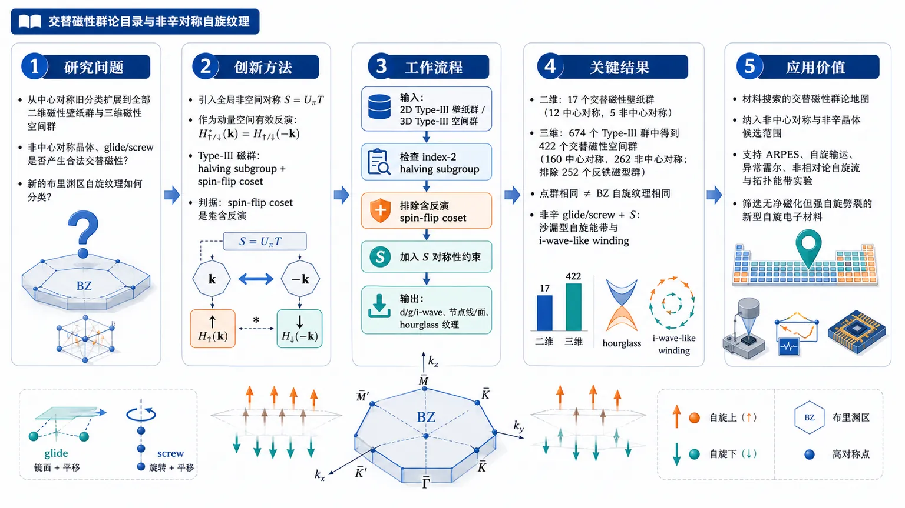
研究问题如何把常规共线交替磁性从以中心对称磁点群为主的旧分类，扩展到全部二维磁性壁纸群和三维磁性空间群；并回答非中心对称晶体、非辛对称 glide/screw 是否能产生合法交替磁性及新的布里渊区自旋纹理。创新方法引入非空间全局对称性 S=UπT（spinless time-reversal symmetry）作为“动量空间中的有效反演”：它让每个自旋块满足 H↑/↓*(k)=H↑/↓(-k)，在缺少晶体反演时仍保持相反动量同自旋态。再用 Type-III 磁群的 halving subgroup 与 spin-flip coset 构造目录，并以“spin-flip coset 是否含反演”为核心判据区分交替磁体与普通反铁磁。工作流程输入全部二维 Type-III 磁性壁纸群与三维 Type-III 磁性空间群；先检查是否存在 index-2 halving subgroup 以保证一半操作保自旋、一半操作翻自旋，实现零净磁化；再排除 spin-flip coset 含反演而导致全布里渊区自旋简并的群；随后加入 S 对称性约束相反动量同自旋态；最后在 primitive-cell BZ 中生成 d/g/i-wave 低能类型、节点线/节点面位置以及非辛 hourglass 自旋能带纹理。关键结果二维得到 17 个交替磁性壁纸群，其中 12 个中心对称、5 个非中心对称；三维从 674 个 Type-III 磁性空间群中排除 252 个反铁磁型群，得到 422 个交替磁性空间群，其中 160 个中心对称、262 个非中心对称。研究还发现点群相同不保证 BZ 自旋纹理相同；非辛 glide/screw 与 S 复合可强制 same-spin 与 opposite-spin 简并之间的沙漏型连接，并产生超出传统六类 d/g/i-wave 的 i-wave-like spin winding。应用价值提供一张可用于材料搜索的交替磁性“群论地图”，把大量非中心对称与非辛晶体纳入候选范围；为 ARPES、自旋输运、异常霍尔效应、非相对论自旋流和拓扑能带实验提供可视化的 BZ 自旋纹理判据；同时为寻找无净磁化但有强自旋劈裂、沙漏能带和新型自旋电子学响应的材料建立系统筛选规则。第一部分：核心概览（Overview）
该研究将常规共线交替磁性从以往偏重中心对称点群的分类，系统扩展到全部二维磁性壁纸群与三维磁性空间群，核心工具是非空间全局对称性 S（spinless time-reversal symmetry）。分类得到 17 个二维交替磁性壁纸群与 422 个三维交替磁性空间群，其中大量为非中心对称体系。进一步揭示非辛对称性可产生超出传统六类 d/g/i-wave 的交替磁性布里渊区自旋纹理，如hourglass dispersion 与 i-wave-like spin winding，显著扩展交替磁性材料与能带拓扑的对称性版图。
---
第二部分：结构化快速回顾
《Catalog of Altermagnetism in Magnetic Wallpaper/Space Groups and Nonsymmorphic Altermagnets》（None，）
背景
交替磁性被视为除铁磁与反铁磁之外的第三类基本共线磁相，兼具零净磁化与动量依赖自旋劈裂。既有分类主要停留在磁点群层面，并以中心对称体系为主，难以覆盖非中心对称晶体与非辛对称诱导的新型布里渊区自旋纹理。
方法
以五条常规定义为筛选标准：动量依赖自旋劈裂、无自旋混合、共线磁化、补偿磁序、相反动量同自旋态。通过引入非空间全局对称性 S = UπT，将每个自旋块约束为具有自旋less 时间反演对称性，再从 Type-III 磁性壁纸群/空间群出发，用halving subgroup 与 spin-flip coset 构造交替磁性群。
结果
二维中识别出 17 个 altermagnetic wallpaper groups（AWGs），其中 12 个中心对称、5 个非中心对称；三维中从 674 个 Type-III magnetic space groups 中排除 252 个反铁磁型群，得到 422 个 altermagnetic space groups（ASGs），其中 160 个中心对称、262 个非中心对称。每个群被归入既有六种 d/g/i-wave 类型之一，同时指出低能波型描述不一定覆盖整个布里渊区。
讨论
S 对称性在两个层面起核心作用：一是使非中心对称体系仍满足相反动量同自旋态；二是与glide mirror 或 screw axis 等非辛操作复合，产生 same-spin degeneracy 与 opposite-spin degeneracy 的相容性关系，从而强制出现 hourglass dispersions。
局限
分析限定于无 SOC 的常规共线交替磁性；明确排除 SOC 主导的自旋混合情形、非共线交替磁性，以及违反相反动量同自旋条件的 p-wave magnetic counterpart。三维具体目录、完整表格与后续模型细节未在给定文本中完整呈现。
结论
交替磁性分类需要从点群提升到壁纸群/空间群，并必须显式纳入非中心对称性与非辛对称性。spinless time-reversal symmetry S 使非中心对称交替磁体成为常规交替磁性的一部分，而非辛对称性则产生超越六波型分类的新型交替磁性能带结构。
---
第三部分：逐章节冷凝解析（Section-by-Section Condensing）
Abstract
Spinless time-reversal symmetry replaces inversion for non-centrosymmetric altermagnets
核心理论推进在于引入非空间全局对称性 S，即 spinless time-reversal symmetry，用来在非中心对称晶体中维持相反动量处相同自旋态的等价性。关键表述为 *"we employ a non-spatial global symmetry S, the spinless time-reversal symmetry, which effectively replaces inversion symmetry in preserving the spin-state equivalence"*。这意味着传统上依赖反演对称性维持的条件，被一个不属于空间群操作的全局对称性替代，从而把常规交替磁性扩展到所有可能的非中心对称晶体。
Complete catalog across all 2D wallpaper and 3D space groups
分类结果具有明确计数：二维中得到 17 个 altermagnetic wallpaper groups，其中 12 个 centrosymmetric、5 个 non-centrosymmetric；三维中得到 422 个 altermagnetic space groups，其中 160 个 centrosymmetric、262 个 non-centrosymmetric。摘要给出精确数字：*"identifying 17 altermagnetic wallpaper groups (12 centrosymmetric and 5 non-centrosymmetric) and 422 altermagnetic space groups (160 centrosymmetric and 262 non-centrosymmetric)"*。该计数将交替磁性从候选材料层面提升为完整群论目录。
Six-wave taxonomy is retained but not globally sufficient
每个交替磁性壁纸群与空间群被分配到文献中的六种波型：二维 d/g/i-wave 与三维 d/g/i-wave。但摘要强调这种低能分类不一定能覆盖整个布里渊区：*"the low-energy wave-type description does not necessarily extend throughout the full BZ"*。原因是自旋简并节点线与节点面可以脱离高对称平面：*"the spin-degenerate nodal lines and planes can be unpinned from the high-symmetry planes"*。因此，Γ 点附近的球谐展开与全 BZ 自旋纹理之间存在重要差异。
Nonsymmorphic symmetries generate hourglass altermagnetic band structures
非辛对称性带来的新现象是 hourglass dispersions。其机制是两个由对称性保护的简并流形之间的相容性关系：*"hourglass dispersions, which arise from the compatibility relations between two symmetry-protected degenerate manifolds: same-spin and opposite-spin degeneracies"*。这里的关键不只是存在 glide/screw，而是 same-spin degeneracy 与常规交替磁性的 opposite-spin degeneracy 在布里渊区边界或高对称线/面上发生强制连接。
Nonsymmorphic altermagnetism exceeds the six established wave types
摘要明确指出非辛对称可实现超出六波型的交替磁性能带结构：*"nonsymmorphic symmetries are essential for realizing altermagnetic band structures beyond the six established wave types"*。代表性结果包括四方 BZ 中的 i-wave-like spin winding：*"such as an i-wave-like spin winding in a tetragonal BZ"*。这点是最具新意的部分，因为传统 i-wave 通常与特定高阶旋转/晶系关联，而这里由非辛对称重塑 BZ 纹理。
---
1 Introduction
Altermagnetism is positioned as a third fundamental collinear magnetic phase
交替磁性被定义为区别于铁磁与反铁磁的第三类基本共线磁相。原句为 *"Altermagnetism has been recognized as a third fundamental collinear magnetic phase, distinct from traditional ferromagnetism and antiferromagnetism"*。区别在于：铁磁具有有限净磁化；传统反铁磁通过时间反演结合反演或平移保持自旋简并；交替磁体则具有补偿磁序但在非 TRIM 动量处发生自旋劈裂。
Compensated order coexists with nonrelativistic spin splitting
交替磁体的核心物理特征是零净磁化与自旋简并解除同时存在。关键表述为 *"Despite the zero net magnetization, the spin degeneracy is lifted away from the time-reversal-invariant momenta"*。在无 SOC 条件下，这产生非相对论动量依赖自旋劈裂：*"nonrelativistic momentum-dependent spin-splitting in the Brillouin zone (BZ) in the absence of spin-orbit coupling (SOC)"*。因此，交替磁性的自旋劈裂不是 Rashba/Dresselhaus 型 SOC 效应，而是磁序与晶体对称性共同导致。
Altermagnets enable multiple transport and topological responses
交替磁性能带结构被连接到异常霍尔效应、非相对论自旋流、热输运、自旋劈裂力矩和拓扑能带响应。文中列举为 *"anomalous Hall effect, nonrelativistic spin current, thermal transport, spin-splitting torque phenomena, and topological band responses"*。这些效应依赖 spin-splitting electronic structure，而不需要铁磁体那样的宏观净磁化，因此具有自旋电子学应用潜力。
Existing minimal models covered all centrosymmetric space groups but not the full non-centrosymmetric landscape
已有工作已经为所有中心对称空间群建立最小模型：*"minimal models have been developed for all centrosymmetric space groups"*。这提供了中心对称体系的理论框架，但尚未形成覆盖非中心对称晶体、二维壁纸群、三维磁空间群与非辛效应的统一目录。
Superconducting extensions broaden the relevance of altermagnetism
交替磁性与超导的耦合被关联到多个前沿现象：拓扑超导、Andreev 反射、二极管效应、有限动量 Cooper 配对和 Josephson 效应。原句列出 *"topological superconductivity, Andreev reflection, diode effects, finite-momentum Cooper pairing and Josephson effects"*。这说明交替磁性不仅是磁性分类问题，也影响配对对称性、界面输运与非互易超导响应。
Conventional collinear definition excludes p-wave magnetic counterparts
研究范围明确限定为无 SOC 的常规共线交替磁性，排除近期提出的 odd-parity p-wave magnetic counterpart。原文强调 *"throughout this work, however, we restrict ourselves to the conventional collinear definition of altermagnetism in the absence of SOC"*。p-wave counterpart 的关键差异是 *"necessarily violates the identical-spin-at-opposite-momenta condition"*，因此不属于此处的常规分类。
Six fundamental wave types organize momentum-dependent spin splitting
既有点群分类将交替磁性组织为六种基本波型：二维 d-, g-, i-wave 与三维 d-, g-, i-wave。文中表述为 *"six fundamental wave types — 2D d-, g-, i-wave and 3D d-, g-, i-wave"*。这些波型对应不同角向谐波结构与 BZ 自旋分区数，是低能有效哈密顿量描述的核心语言。
Known material examples are mainly centrosymmetric altermagnets
已提出或观测的中心对称交替磁材料包括 RuO₂、MnF₂、FeSb₂、MnTe、CrSb、KV₂Se₂O。原文列举 *"including the rutile metals RuO2 (2D d-wave), MnF2 (2D d-wave), FeSb2 (2D d-wave), MnTe (3D g-wave), CrSb (3D g-wave), and KV2Se2O"*。另有 AI 自动发现方法预测 50 个额外中心对称候选：*"an AI-driven automated discovery approach has further predicted 50 additional centrosymmetric candidates"*。
Prior database screening already hinted at non-centrosymmetric spin-split antiferromagnets
MAGNDATA 大规模第一性原理筛选识别约 60 个自旋劈裂共线反铁磁体，覆盖中心对称与非中心对称结构：*"identified about sixty spin-split collinear antiferromagnets, encompassing both centrosymmetric and non-centrosymmetric structures"*。另一个磁空间群调查列出 160 个中心对称与 262 个非中心对称动量依赖自旋劈裂群：*"comprising 160 centrosymmetric and 262 non-centrosymmetric groups"*。这些数字与后文 422 ASGs 完全对应，但当前研究进一步给出对称机制、波型归类与 BZ 自旋纹理。
Two refinements beyond point-group classification define the study
两项系统推进：第一，面向所有二维磁性壁纸群和三维磁性空间群给出穷尽目录；第二，在primitive-cell BZ 中区分同一磁点群下可能不同的自旋纹理。原句为 *"this manuscript makes two systematic refinements that go beyond the prior point-group treatment"*。这意味着点群相同并不保证 BZ 自旋纹理相同，平移与非辛操作会改变节点线位置和自旋分布。
Primitive-cell BZ classification reveals distinctions invisible at point-group level
同一交替磁性点群下的不同壁纸群可能具有定性不同的自旋简并节点线。例如 P4′m′m 与 P4′mm′：*"the pair P4′m′m and P4′mm′ at the wallpaper-group level, whose spin-degenerate nodal lines lie along the kx/ky axes and along the BZ diagonals, respectively"*。这说明必须在壁纸群/空间群层面而非单纯点群层面判断实验可见的动量空间自旋纹理。
S symmetry makes non-centrosymmetric altermagnets equivalent to centrosymmetric counterparts in momentum space
非中心对称交替磁体中的 S 起到反演类似作用：*"S therefore plays the role that inversion symmetry plays in centrosymmetric altermagnets"*。它能够在缺少晶体反演时保持相反动量自旋态相同：*"preserving identical spin states at opposite momenta even when crystal inversion is absent"*。因此，非中心对称交替磁体在动量空间中可与中心对称对应物拥有同样的六类 d/g/i-wave 劈裂。
Nonsymmorphic symmetries produce a genuinely new altermagnetic BZ class
非辛操作与 S 复合后产生新型交替磁性 BZ。核心机制为：对 glide mirror 或 screw axis (tildeg)，反幺正复合 (tildegS) 强制 same-spin degeneracy，同时常规交替磁性提供 opposite-spin degeneracy nodes。原句为 *"the interplay between the same-spin degeneracy enforced by the composite antiunitary symmetry (tildegS) and the opposite-spin degeneracy nodes from the conventional altermagnetism can lead to symmetry-enforced hourglass dispersions"*。典型例子包括 P4′gm′、P4′bm′、P4₂′2₁2′：*"with P4′gm′ and its 3D extension P4′bm′ and P4₂′2₁2′ as prototypical examples"*。
---
2 Altermagnetism Catalog Preliminary
Five conditions define conventional altermagnetism
常规交替磁性的筛选标准包括五项：动量依赖自旋劈裂、无自旋混合、共线磁化、补偿磁序、相反动量同自旋态。原文逐条列出 *"Momentum-dependent spin splitting"*, *"Absence of spin mixing"*, *"Collinear magnetization"*, *"Compensated magnetic order"*, *"Identical spin at opposite momenta"*。其中第 5 条只适用于常规情况：*"This applies only to the conventional cases"*。
Spin-up and spin-down sectors decouple in the SOC-free collinear limit
在无 SOC 且共线磁化条件下，自由费米子哈密顿量可写为自旋块对角形式：
[
H=
beginpmatrix
Hₚ̆arrow&0
0&H_downarrow
endpmatrix.
]
原文为 *"the free-fermion Hamiltonian can be block-diagonalized into decoupled spin-up and spin-down sectors"*。这使交替磁性的判据可转化为两个自旋块在晶体对称操作下如何互换。
Spin sectors are exchanged by either time reversal or spin π rotation
自旋翻转可由两类物理操作实现：时间反演 (T=σ_ymathcal K)，或垂直于 z 方向的自旋空间 (π) 旋转。原文表述为 *"This spin exchange can be represented by two physically distinct operations: A. time-reversal, (T=σ_ymathcal K) ... B. a (π)-rotation in spin space"*。后续固定 (U_π=σₓ)：*"we fix the angle (θ=0) and define (U_π=σₓ)"*。
The catalog is explicitly SOC-free and spin-group based
晶体操作在无 SOC 时不作用于自旋，两个自旋块只能通过 (T) 与 (U_π) 互换。关键句为 *"with SOC neglected (Condition 2), every crystalline operation acts trivially on spin"*。因此，目录中的磁壁纸群和磁空间群是 SOC-free spin-group sense 下的交替磁性：*"altermagnetic in this SOC-free (spin-group) sense"*。同一个磁群若考虑 SOC，可对应完全不同的磁序。
SOC can reinterpret the same magnetic point group as ferromagnetic
二维磁点群 (2m′m′) 在考虑 SOC 时可描述出平面铁磁体。原文说明 *"with SOC, the two-dimensional magnetic point group (2m′m′) describes a ferromagnet with the magnetic moment pointing out of the plane"*。原因是二重旋转保持磁矩，而两个自旋ful 镜面对磁矩取反，必须与时间反演复合：*"the moment is preserved by the twofold rotation but reversed by the two spinful mirrors"*。这凸显了无 SOC 近似在该分类中的基础地位。
---
2.1 Spinless time reversal symmetry
S = UπT emerges from equivalence of two spin-flipping operations
假设 (T) 与 (U_π) 对哈密顿量产生相同的自旋翻转效果，则出现全局对称性 (S=U_π T)。原文为 *"Consequently, a global symmetry emerges: (SHS⁻¹=H), where (S=U_π T)"*。由于 (U_π) 与 (T) 都翻转自旋，两者复合后不再交换自旋块，而是在每个自旋块内部表现为时间反演。
Each spin block is constrained to be real under spinless time reversal
由 (S) 对称性得到 (Hₚ̆ₐᵣᵣₒw/dₒwₙₐᵣᵣₒw*=Hₚ̆ₐᵣᵣₒw/dₒwₙₐᵣᵣₒw)。原文为 *"this implies (Hₚ̆ₐᵣᵣₒw/dₒwₙₐᵣᵣₒw*=Hₚ̆ₐᵣᵣₒw/dₒwₙₐᵣᵣₒw)"*。动量空间形式为
[
Hₚ̆arrow^*(mathbf k)=Hₚ̆arrow(-mathbf k),quad
H_downarrow^*(mathbf k)=H_downarrow(-mathbf k).
]
这就是所谓 spinless time-reversal symmetry：*"which we term spinless time-reversal symmetry"*。
S enforces identical spin states at opposite momenta
该对称性保证常规交替磁性的第 5 条，即相反动量具有相同自旋态。原文指出 *"This symmetry constraint ensures that the Hamiltonian satisfies Condition 5"*。其物理含义是每个自旋扇区磁通为零：*"physically means vanishing magnetic flux for each spin sector (zero phase in the Peierls substitution)"*，等价于实空间哈密顿量矩阵元为实数：*"each entry of the Hamiltonian in real space is real"*。
S enables non-centrosymmetric altermagnetism and nonsymmorphic altermagnetism
S 被明确视为非中心对称交替磁性与非辛交替磁性出现的核心。原句为 *"plays a pivotal role in realizing non-centrosymmetric altermagnets and the emergence of nonsymmorphic altermagnetism"*。这使得即使缺少空间反演，仍可通过非空间对称满足动量反演下的自旋态等价。
The work expands point-group classifications to wallpaper and space groups
已有点群分类主要基于具备反演的 Laue groups：*"primarily based on Laue groups, which inherently possess inversion symmetry"*。此处扩展包括二维磁点群、壁纸群、三维空间群及非中心对称情形：*"incorporating 2D magnetic point groups and extending the classification from point groups to wallpaper and space groups"*。
---
2.2 Collinear spin wallpaper/space group
Conventional altermagnetism belongs strictly to collinear spin groups
自旋壁纸群/空间群分为 collinear、coplanar、non-coplanar 三类，常规交替磁性严格属于共线类。原文为 *"The conventional definition of altermagnetism falls strictly within the collinear category"*。这排除了非共面和一般非共线磁结构。
Collinear spin groups use independent spin and spatial operations
共线群的基本操作写作 ([X|R|mathbf v])，其中 (X=E) 表示不翻转自旋，(X=U_π) 表示自旋翻转；空间部分 ([R|mathbf v]) 包括旋转和平移。原文定义 *"the first and second slots of ([łdots|łdots]) indicate spin operation and spatial operation, respectively"*。磁结构为 (S_z(mathbf r))，只沿 (± z) 方向：*"oriented solely along the (± z)-direction"*。
The sign α encodes spin preservation or spin reversal
式 (4) 中 (α=1) 对应 (X=E)，(α=-1) 对应 (X=U_π)。原文为 *"the parameter (α) can be either 1 if (X=E) or -1 if (X=U_π)"*。因此，空间操作是否连接同自旋或反自旋子晶格，由其是否与 (U_π) 复合决定。
Invariant magnetic structures define collinear spin wallpaper or space groups
若操作满足 ([X|R|mathbf v]S_z(mathbf r)=S_z(mathbf r))，则该操作属于磁结构的对称群。原文为 *"A magnetic structure is considered invariant under a spin-space group symmetry if the operation satisfies..."*。所有这类带/不带自旋翻转的晶体对称元构成共线自旋壁纸群或空间群：*"forms a collinear spin wallpaper (or space) group"*。
---
2.3 Type-III magnetic wallpaper/space group
Spin groups are mapped to magnetic groups using S symmetry
磁群中唯一非空间操作是时间反演 (T)。借助 (S=U_π T)，可以把 (T) 与 (U_π) 的作用等价起来。原文为 *"we invoke the equivalence between the time-reversal operation T and the spin rotation (U_π), allowing us to map magnetic wallpaper/space groups onto collinear spin wallpaper/space groups"*。
Type-II groups are excluded because time reversal is unbroken
自旋壁纸/空间群描述局域磁有序态，时间反演已破缺，因此对应 Type-I、Type-III、Type-IV 磁群，排除 Type-II。原文为 *"Type-II groups preserve time-reversal symmetry and are excluded"*。这符合交替磁性必须是磁有序态的要求。
Type-I groups describe ferromagnetism and are ruled out
Type-I 群对应所有自旋同向排列的铁磁性，不能实现补偿磁序。原文为 *"Type-I groups describe ferromagnetism with spins aligned in a single direction and are therefore ruled out"*。这直接违反交替磁性第 4 条 zero net magnetization。
Type-IV groups enforce spin degeneracy and correspond to conventional antiferromagnetism
Type-IV 群包含自旋翻转与半平移复合的 (Tₐ)，其动量空间形式含 (e⁻ⁱk_τ) 相位：
[
Tₐ₌
beginpmatrix
0&e⁻ⁱk_τ
1&0
endpmatrixmathcal K.
]
原文为 *"Type-IV groups must include a composite operation (Tₐ) involving a spin-flip (U_π) combined with a fractional translation"*。结合 (S) 对称性会强制
[
Hₚ̆arrow(mathbf k)=H_downarrow(mathbf k),
]
即全 BZ 自旋简并。原句为 *"imposes the constraint (Hₚ̆arrow(mathbf k)=H_downarrow(mathbf k)) in violation of Condition 1"*。因此 Type-IV 属于传统反铁磁：*"characteristic of conventional antiferromagnetism rather than altermagnetism"*。
Only Type-III magnetic wallpaper and space groups can host conventional altermagnetism
在排除 Type-I、Type-II、Type-IV 后，只剩 Type-III 可承载交替磁性。原文结论为 *"Therefore, only Type-III groups can host altermagnetism"*。后续所有候选均采用 Opechowski-Guccione notation 标记：*"employing the Opechowski-Guccione notation to label all possible candidates"*。
---
2.4 Altermagnetic point group
Type-III spin flips are coupled to crystalline operations rather than translations
Type-III 磁群中自旋翻转总是与晶体点操作耦合，而不是本质依赖空间平移。原文为 *"the spin-flipping operation is always coupled with crystalline operations, independent of spatial translations"*。因此可先把壁纸群或空间群投影到点群，再恢复平移对称。
Altermagnetic point groups are defined through halving subgroup structure
交替磁性点群结构为
[
mathbf M=[E|mathbf H]+[U_π|mathbf Rsetminus mathbf H],
]
其中 (mathbf H) 是 (mathbf R) 的 index-2 halving subgroup。原文为 *"(mathbf H) is a subgroup of index 2 in (mathbf R), and the complement (mathbf Rsetminusmathbf H) represents the unique nontrivial coset"*。这是一种严格的群论二分：一半操作保留自旋，一半操作翻转自旋。
Halving subgroup guarantees compensated magnetic order
由于 (mathbf H) 与 (mathbf Rsetminusmathbf H) 元素数相同，保留自旋与翻转自旋操作数量相同。原文为 *"exactly half of the operations in (mathbf R) preserve the spin ... while the other half ... flip it"*。这保证零净磁化：*"This halving structure guarantees zero net magnetization (Condition 4)"*。
The remaining nontrivial check is avoiding spin degeneracy
有了块对角哈密顿量与 (S) 对称性后，第 2、3、5 条自动满足；筛选重点变为是否满足补偿磁序以及是否避免全局自旋简并。原文概括为 *"we have to look for halving subgroups (mathbf H) satisfying Condition 4 and check whether (mathbf Rsetminusmathbf H) avoids spin degeneracy (Condition 1)"*。
The simple APG m′ illustrates spin-flip coset construction
例子 (m′) 表示为 ([E|E]+[Uₘₐₜₕbf ₙ_₀(π)|m])，其中 prime 表示自旋反转。原文为 *"The APG (m′) is denoted as ([E|E]+[Ubₒₗdₛyₘbₒₗ ₙ_₀(π)|m]), where the prime symbol indicates spin-reversal operation"*。这说明带撇号的空间操作并非单纯镜面，而是镜面与自旋翻转复合。
---
2.5 Counting altermagnetism in the type-III magnetic space groups
Type-III structure automatically satisfies compensated magnetic order
Type-III 磁空间群形式为 ([E|mathbf H]+[U_π|mathbf Gsetminusmathbf H])，其中 (mathbf H) 是母空间群 (mathbf G) 的 index-2 子群。原文为 *"the halving structure emerges naturally, the compensated magnetic order (Condition 4) is automatic"*。因此三维计数只需进一步检查是否存在强制自旋简并。
Condition 1 fails exactly when inversion lies in the spin-flip coset
若 spin-flip coset 中含有点群部分为反演 (P) 的操作，则 ([U_π|P]) 与 (S) 结合，会在同一动量处关联上下自旋，强制全 BZ 简并。原句为 *"It fails precisely when the coset contains an operation whose point-group part is the spatial inversion P"*。对应约束为
[
Eₚ̆arrow(mathbf k)=E_downarrow(mathbf k)
]
全 BZ 成立：*"enforces (Eₚ̆arrow(mathbf k)=E_downarrow(mathbf k)) throughout the BZ"*。
Inversion in halving subgroup or absence of inversion permits altermagnetism
判据非常清晰：若反演属于自旋翻转 coset，则是常规反铁磁；若反演在 halving subgroup 中，或母空间群根本无反演，则是交替磁体。原文为 *"an altermagnet otherwise, i.e., when the inversion belongs to the halving subgroup (mathbf H) or is absent from (mathbf G) altogether"*。
The 3D count is 422 altermagnetic groups out of 674 Type-III magnetic space groups
在 674 个 Type-III magnetic space groups 中，有 252 个 coset 含反演，属于常规反铁磁；剩余 674 − 252 = 422 为交替磁性空间群。原文精确给出 *"Among the 674 type-III magnetic space groups, we count 252 whose coset contains the inversion"*，以及 *"The remaining (674-252=422) type-III magnetic space groups are altermagnetic"*。
Point-group construction recovers the count and adds BZ spin textures
直接逐一检查 674 个群不现实，且仅计数无法给出 BZ 自旋分布。原文指出 *"checking 674 magnetic space groups one by one is impractical, and the count alone reveals nothing about the spin distribution in the BZ"*。因此采用从点群到空间群的构造路线，既复现 422，又得到每个群的动量空间自旋纹理：*"yields the momentum-space spin texture of each group"*。
---
3 Catalog of 2D altermagnetic wallpaper groups
Seventeen 2D altermagnetic wallpaper groups are identified
二维分类覆盖十个二维点群的磁扩展，最终得到 17 个 distinct AWGs，其中 12 个中心对称、5 个非中心对称。原文为 *"Our analysis identifies 17 distinct AWGs, comprising 12 centrosymmetric and 5 non-centrosymmetric groups"*。这一数字恰好等于普通非磁壁纸群总数，但含义完全不同：这里是满足交替磁性条件的 Type-III 磁壁纸群。
2D crystal point groups are generated by rotations and mirrors
二维点群共有十个，记为 (mathbf Cₙ) 与 (mathbf Cₙᵥ)，其中 (n=1,2,3,4,6)。原文为 *"Two-dimensional crystal symmetries are classified into ten distinct point groups, denoted as (mathbf Cₙ) and (mathbf Cₙᵥ) (where (n=1,2,3,4,6))"*。循环群由 (Cₙ) 生成，二面体群由 (M) 与 (Cₙ) 生成：*"(łangle Cₙångle) generates the cyclic groups ... while (łangle M,Cₙångle) generates the dihedral groups"*。
There are 11 Type-III magnetic point groups and 26 Type-III magnetic wallpaper groups in 2D
加入共线磁序后，二维晶格产生 11 个 Type-III magnetic point groups 与 26 个 Type-III magnetic wallpaper groups。原文为 *"incorporating collinear magnetic order into the 2D lattice gives rise to 11 type-III magnetic point groups and 26 type-III magnetic wallpaper groups"*。但并非所有 Type-III 群都满足交替磁性，因此需要进一步筛选。
Two screening criteria determine 2D altermagnetism
二维筛选只需关注两点：补偿共线磁序与动量依赖自旋劈裂。原文为 *"it suffices to examine two conditions to determine altermagnetism: compensated collinear magnetic order (Condition 4) and momentum-dependent spin splitting (Condition 1)"*。前者要求存在 halving subgroup 连接同自旋子晶格；后者要求避免由 (C₂zT) 导致的全局自旋简并。
Point groups lacking halving subgroups cannot host altermagnetism
若点群不存在 index-2 halving subgroup，就无法把操作均分为保自旋与翻自旋两类，因而不能实现补偿交替磁序。原文为 *"Point groups of altermagnetic systems must include a halving subgroup (mathbf H) that connects the same-spin sublattice"*。例子是 (mathbf C₃)：*"a halving group does not exist in the group (mathbf C₃)"*，其几何结构导致同自旋连接的挫败：*"due to inherent geometric frustration in the spin arrangement"*。
C2zT symmetry must be broken to avoid antiferromagnetic degeneracy
若相反自旋子晶格被 (C₂z) 连接，则 (C₂zT) 强制 Kramers 简并，使每个动量处自旋简并。原文为 *"The combined symmetry (C₂zT), involving inversion and time reversal, enforces Kramers degeneracy"*。因此当点群含反演时，反演必须属于 halving subgroup，而不能属于 spin-flip coset：*"the inversion operation must reside within the halving subgroup ... rather than in the coset"*。
Only mirrors and C4z rotations may appear in the spin-flip coset
评估 (M, C₂z, C₃z, C₄z, C₆z) 五类生成元后，只有镜面 (M) 与四重旋转 (C₄z) 可出现在 spin-flip coset 中连接反自旋子晶格。原文为 *"only mirror symmetry M and (C₄z) rotational symmetry are permitted in the coset (mathbf Rsetminusmathbf H)"*。因此 (C₂z, C₃z, C₆z) 若存在，必须属于 (mathbf H)：*"when (Cₙz) rotational symmetries ((n=2,3,6)) are preserved, they must belong to the halving subgroup"*。
Six 2D point groups can support altermagnetic order
不兼容交替磁性的点群包括 (mathbf C₁,mathbf C₃)（无 halving subgroup）和 (mathbf C₂,mathbf C₆)（含 (C₂zT) 导致反铁磁简并）。可支持交替磁性的六个点群为 (mathbf C₁ₕ,mathbf C₂ᵥ,mathbf C₃ᵥ,mathbf C₄,mathbf C₄ᵥ,mathbf C₆ᵥ)。原文为 *"the remaining six point groups ... contain halving subgroups that satisfy the symmetry criteria for altermagnetic order"*。
Seven 2D altermagnetic point groups arise because C4v has two valid halving subgroups
六个可行点群产生 7 个 APGs，因为 (mathbf C₄ᵥ) 有两个合格 halving subgroups：(mathbf C₄) 与 (mathbf C₂ᵥ)。原文为 *"the point group (mathbf C₄ᵥ) contains two distinct halving subgroups, (mathbf C₄) and (mathbf C₂ᵥ)"*。选择 (mathbf C₄) 得到 (4m′m′)，选择 (mathbf C₂ᵥ) 得到 (4′m′m)：*"Selecting (mathbf C₄) ... yields the APG (4m′m′), while selecting (mathbf C₂ᵥ) leads to (4′m′m)"*。
Table 1 gives the full 2D APG-to-AWG mapping
表 1 中的 AWGs 包括：
- (m′)：P1m′1, P1g′1, C1m′1
- (2m′m′)：P2m′m′, P2m′g′, P2g′g′, C2m′m′
- (4′)：P4′
- (4m′m′)：P4m′m′, P4′mm′
- (4′m′m)：P4′m′m, P4g′m′, P4′gm′, P4′g′m
- (3m′)：P3m′1, P31m′
- (6m′m′)：P6m′m′
原文说明 *"these APGs give rise to 17 distinct AWGs ... as shown in Table 1"*，并指出非中心对称群以红色突出：*"Non-centrosymmetric groups are highlighted in red"*。
Non-centrosymmetric APGs become momentum-space equivalent to centrosymmetric counterparts through S
非中心对称 APGs (m′) 与 (3m′) 可通过 (widetilde2=E,S) 扩展成与 (2m′m′)、(6m′m′) 同构的动量空间对称结构：
[
m′×widetilde2o̧ng2m′m′,quad
3m′×widetilde2o̧ng6m′m′.
]
原文为 *"This equivalence in momentum space is expressed as..."*。这里 (S) 是有效反演，不是国际符号中的普通二重旋转：*"(widetilde2=E,S) denotes the group generated by the effective inversion S, distinct from the standard twofold rotation 2"*。
S and C2z are equivalent in momentum space but distinct in real space
对于已含 (C₂z) 的 APGs，加入 (S) 不再增加新的动量约束，因为二者都使 (mathbf k→-mathbf k)。原文为 *"for APGs already possessing (C₂z) rotational symmetry, the inclusion of S imposes no additional constraints"*。但二者在实空间根本不同：*"while (C₂z) and S share this momentum-space equivalence, they remain fundamentally distinct symmetries in real space"*。
2D spin textures are classified as d-, g-, and i-wave near Γ
二维低能自旋劈裂可用实球谐函数展开。文中给出：
[
Δ Edpropto[k²Y₂²⁺mathcal O(k⁴Y₄⁴⁾]σ_z,
]
[
Δ Egpropto[k⁴Y₄⁴⁺mathcal O(k⁸Y₈⁸⁾]σ_z,
]
[
Δ Eᵢpropto[k⁶Y₆⁶⁺mathcal O(k¹²Y₁₂¹²)]σ_z.
]
原文说明 *"the existing literature categorizes these configurations into three primary types: d-wave, g-wave, and i-wave"*。二维中 (2ell) 等于交替自旋扇区数，也等于自旋简并节点线数：*"the parameter (2ell) corresponds directly to the number of alternating spin-polarized sectors, which equals the number of spin-degenerate nodal lines"*。
Generator-based construction builds the full BZ spin texture
二维自旋纹理通过三步构造：识别生成元、从不可约 BZ 楔区设定初始自旋、施加自旋翻转镜面与旋转生成完整图案。原文为 *"we establish the following three-step analysis"*。代表 AWGs 为 P2m′m′、P4m′m′、P6m′m′，生成元包括 (M_y′) 与 (Cₙz)：*"for the groups P2m′m′, P4m′m′, and P6m′m′, the generators (M_y′) and (Cₙz) are given"*。图 2 中绿色线为镜面对称保护的自旋简并节点线：*"Green lines indicate spin-degenerate nodal lines protected by mirror symmetries"*。
Available section 3 text ends during spin-texture construction
给定内容在第二步 “Construct Spin Texture” 的描述中断，最后可见表述为 *"The generator (M_y′) maps this region to an adjacent sector with spin do"*。因此后续二维完整 AWG 图谱、非辛二维案例、三维目录与具体空间群表格未能从给定文本中逐项提取。
---
第四部分：深度理解与语言支持（Understanding & Nuance）
1. 术语解析
Altermagnetism
Altermagnetism 不是普通反铁磁的同义词。其关键是补偿磁序与动量依赖自旋劈裂并存。普通反铁磁常由 (PT) 或半平移时间反演保护全 BZ 自旋简并；交替磁体则通过某些晶体操作交换自旋扇区，使不同动量区域呈现交替自旋极化。语境中的定义是 *"compensated magnetic order and lifted spin degeneracy"*。
Spinless time-reversal symmetry
Spinless time-reversal symmetry 指 (S=U_π T) 在每个自旋块内部表现为时间反演，但不再翻转自旋标签。它与真正电子时间反演 (T) 不同：(T) 会交换 spin-up 与 spin-down，而 (S) 使 (Hₚ̆arrow^*(mathbf k)=Hₚ̆arrow(-mathbf k))。微妙点在于它是非空间全局对称性，却在动量空间中起到类似反演的作用。
Halving subgroup
Halving subgroup 是母点群/空间群的 index-2 子群，元素数刚好为母群一半。它保留自旋；剩余 coset 翻转自旋。该术语不是简单“子群”，而是磁补偿条件的群论实现：一半操作连接同自旋，一半操作连接反自旋，从而保证零净磁化。
Spin-flip coset
Spin-flip coset 是 (mathbf Rsetminusmathbf H) 或 (mathbf Gsetminusmathbf H)，其中每个空间操作都与 (U_π) 或等效时间反演标记复合。微妙点在于：若 coset 中含反演 (P)，则交替磁性失败，因为 ([U_π|P]) 与 (S) 会强制同一 (mathbf k) 的上下自旋简并。
Nonsymmorphic symmetry
Nonsymmorphic symmetry 指 glide mirror、screw axis 等“点操作 + 分数平移”的空间对称。点群分类会丢失分数平移相位，因此看不见它导致的 BZ 边界简并、hourglass 连接和节点面/节点线。语境中的关键是：非辛对称不只是增加候选群，而是生成超出六波型分类的新型交替磁性自旋纹理。
---
2. 疑难查证：复杂概念解释
为什么 S 可以替代反演，但又不是反演？
反演 (P) 是实空间操作：(mathbf r→-mathbf r)，动量空间表现为 (mathbf k→-mathbf k)。
(S=U_π T) 不是空间操作：(T) 反转动量并翻转自旋，(U_π) 再翻转一次自旋，因此最终效果是动量反转但自旋标签不变。所以在动量空间中，(S) 与反演都能把 (mathbf k) 映到 (-mathbf k)，并维持同自旋态等价；但在实空间中，(S) 不移动原子坐标，也不属于普通晶体空间群。
直观理解：
- 反演像“把晶体倒过来”；
- (S) 像“对每个自旋块施加一个无自旋时间反演”；
- 两者在 BZ 中都能把右边的 (mathbf k) 点对应到左边的 (-mathbf k) 点，但物理来源完全不同。
为什么 coset 中有反演会变成普通反铁磁？
交替磁性要求同一动量 (mathbf k) 处 spin-up 与 spin-down 能量一般不同。
若 spin-flip coset 中含 ([U_π|P])，它把某个 (mathbf k) 的 spin-up 映到 (-mathbf k) 的 spin-down。
再结合 (S)，(S) 把 (-mathbf k) 的同一自旋映回 (mathbf k)。两步合成后，上下自旋在同一 (mathbf k) 被强制等能：
[
Eₚ̆arrow(mathbf k)=E_downarrow(mathbf k).
]
这就是全 BZ 自旋简并，违反交替磁性的动量依赖自旋劈裂条件。
为什么点群分类不足以描述交替磁性？
点群只记录旋转、镜面、反演等方向性操作，不记录平移相位。
但壁纸群/空间群包含实际晶胞选择、原胞 BZ、glide/screw 的分数平移。两个群可投影到同一点群，却在 BZ 中有不同节点线位置。例子是 P4′m′m 与 P4′mm′：一个节点线沿 (kₓ/k_y) 轴，另一个沿 BZ 对角线。
因此，材料实验中 ARPES 或输运看到的是空间群级别 BZ 自旋纹理，不只是点群波型标签。
hourglass dispersion 为什么是非辛交替磁性的核心新现象？
hourglass 色散需要两端简并态的配对方式不同。
在非辛交替磁体中，一类简并来自 (tilde gS) 强制的 same-spin degeneracy，另一类来自常规交替磁性的 opposite-spin degeneracy。沿高对称线或面移动时，能带必须从一种配对方式切换到另一种配对方式，于是中间不可避免地产生“沙漏颈部”交叉。
这类交叉不是普通 d/g/i-wave 角向节点的简单延伸，而是由非辛相位、反幺正对称与自旋交换结构共同强制。
---
第五部分：创新评估与关联（Synthesis & Novelty）
1. 创新性判断
从中心对称点群分类扩展到全壁纸群/空间群目录
过去 2–5 年的交替磁性分类主要集中在磁点群、Laue groups 或中心对称空间群最小模型。该研究把分类对象提升为：
- 全部二维磁性壁纸群；
- 全部三维磁性空间群；
- 中心对称与非中心对称体系；
- primitive-cell BZ 中的具体自旋纹理。
新颖性不只是“列更多群”，而是解决了点群分类无法回答的问题：同一点群下不同壁纸/空间群的 BZ 节点线、节点面与自旋纹理是否相同？
用 S 对称性统一解释非中心对称常规交替磁性
非中心对称交替磁体此前在材料筛选中已出现，但理论上容易被误解为缺少反演就不能满足相反动量同自旋条件。该研究用 spinless time-reversal symmetry (S) 给出统一解释：非中心对称体系可通过非空间对称保持
[
Hₚ̆ₐᵣᵣₒw/dₒwₙₐᵣᵣₒw^*(mathbf k)=Hₚ̆ₐᵣᵣₒw/dₒwₙₐᵣᵣₒw(-mathbf k),
]
从而实现常规交替磁性。由此，262 个非中心对称三维 ASGs 被纳入常规交替磁性目录。
给出 422 个三维 ASGs 的简洁群论判据
对 674 个 Type-III magnetic space groups 的筛选被压缩为一个关键条件：spin-flip coset 是否含反演。
- 含反演：252 个，普通反铁磁；
- 不含反演或反演在 halving subgroup：422 个，交替磁体。
这比逐群枚举更具理论穿透力，揭示了交替磁性与传统反铁磁简并的本质分界。
指出六波型低能分类不能完整描述全 BZ
传统 d/g/i-wave 分类适合 Γ 点附近的低能角向展开，但该研究强调节点线/节点面可脱离高对称平面，且原胞 BZ 中可能出现不同全局纹理。该点解决了一个重要盲区：同一低能波型并不唯一决定全 BZ 自旋分布。
发现非辛交替磁性超越六波型分类
最具创新性的部分是把 nonsymmorphic symmetry 引入交替磁性分类，并指出 glide/screw 与 (S) 复合可产生 hourglass dispersion、节点线/节点面以及四方 BZ 中 i-wave-like spin winding。这不是传统六波型的重新命名，而是由分数平移相位导致的新型强制能带连接。典型群 P4′gm′、P4′bm′、P4₂′2₁2′ 构成后续材料搜索与模型构造的重要目标。
相对于近期工作的突破点
已有工作包括：
- 中心对称空间群最小模型；
- MAGNDATA 自旋劈裂反铁磁筛选；
- Pnma 非辛个例中的四重简并与 anomalous Hall 效应；
- BiFeO₃、CaMnO₃ 等 Pnma perovskite 的 conventional d-wave splitting。
该研究的突破在于把这些零散观察统一为系统群论结构，并进一步指出：非辛对称不仅能增强或保护已知 d-wave 交替磁性，还能产生常规六波型之外的新 BZ 自旋拓扑结构。
-
16
📄 摘要：在含 Kanamori-Hubbard 相互作用的 BHZ 模型中，用实空间 DMRG 研究量子自旋霍尔绝缘体的平滑边界重构，发现离散粒子数转变会诱导自旋极化边缘态，且重构主要表现为轨道选择性。
💡 亮点：QSH 边缘在相互作用下可发生离散重构并转为自旋极化，且具轨道选择性。提示拓扑边界并非总是刚性不变。
📖 展开分析 + 配图
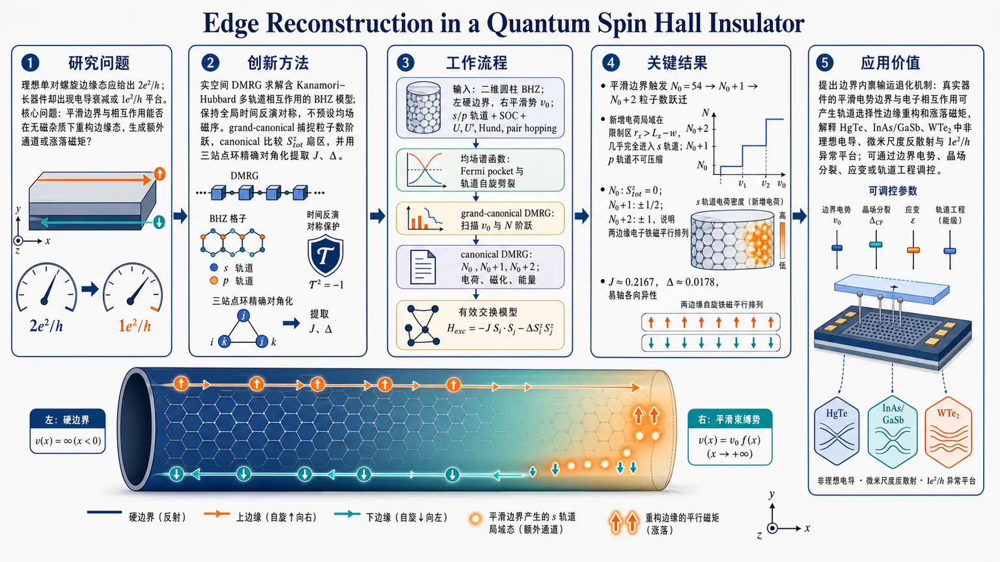
研究问题量子自旋霍尔绝缘体的理想单对螺旋边缘态本应给出 2e²/h 量子化输运，但实验中长器件常出现电导衰减或 1e²/h 平台；核心问题是：平滑边界与电子相互作用是否会在不显式加入磁杂质的情况下，重构边缘电子态、生成额外边缘通道或涨落磁矩，从而削弱时间反演保护的螺旋输运。创新方法Aha 点是用实空间 DMRG 直接求解含 Kanamori–Hubbard 多轨道相互作用的 BHZ 量子自旋霍尔模型，在保持全局时间反演对称性的前提下观察边缘重构，而不是预设均场磁序；通过 grand-canonical DMRG 捕捉粒子数阶跃，通过 canonical DMRG 比较不同 Sᶻₜₒₜ 自旋扇区，再用三站点环精确对角化提取有效铁磁交换 J≃0.2167、各向异性 Δ≃0.0178，形成“边界软化→s 轨道电荷积累→铁磁交换→边缘磁矩”的闭环机制。工作流程输入为二维圆柱几何 BHZ 模型：y 方向周期、x 方向左硬边界、右侧线性平滑限制势，加入 s/p 双轨道、 spin-orbit 混合、Kanamori–Hubbard 相互作用 U、U′、Hund 交换和 pair hopping；先用均场谱函数观察边缘 Fermi pocket 与轨道自旋劈裂，再用 grand-canonical DMRG 随限制势斜率 v₀ 降低扫描总粒子数平台与跃迁，随后在 N₀、N₀+1、N₀+2 固定粒子数扇区做 canonical DMRG，输出轨道分辨电荷密度、实空间磁化分布和自旋扇区能量，最后用有效交换哈密顿量解释边缘两自旋的铁磁排列。关键结果随着右边界限制势变平滑，系统出现离散粒子数跃迁 N₀=54 → N₀+1 → N₀+2，标志边缘重构启动；新增电荷主要局域在限制区域 rₓ>Lₓ−w，且几乎完全进入 s 轨道，p 轨道基本不可压缩；N₀ 基态为 Sᶻₜₒₜ₌₀，N₀+1 为 Sᶻₜₒₜ₌±1/2 双重态，N₀+2 基态落在 Sᶻₜₒₜ₌±1 而非 Sᶻₜₒₜ₌₀，说明两个新增边缘电子发生铁磁平行排列；有效模型 Hₑₓc=−J Sᵢ·Sⱼ−ΔSᶻᵢSᶻⱼ 给出有限铁磁交换 J≃0.2167 和易轴各向异性 Δ≃0.0178。应用价值该研究提供一种边界内禀的输运退化机制：即使无外加磁杂质，真实器件中的平滑电势边界和电子相互作用也能产生轨道选择性边缘重构与涨落磁矩，为 HgTe、InAs/GaSb、WTe₂ 等 QSH 器件中非理想电导、微米尺度反散射和 1e²/h 异常平台提供微观解释；同时指出可通过边界电势、晶场分裂、应变或轨道工程调控边缘重构，帮助设计更稳定的拓扑量子输运器件。第一部分：核心概览 (Overview)
该研究用实空间 DMRG 对含 Kanamori–Hubbard 相互作用的多轨道 BHZ 量子自旋霍尔绝缘体进行受控多体计算，揭示平滑边界可诱导离散粒子数跃迁、s 轨道选择性边缘重构与交换驱动的边缘自旋极化。核心贡献在于超越均场磁序偏置，给出保持全局时间反演对称性的微观机制，解释实验中螺旋边缘输运偏离量子化的可能来源。
---
第二部分：结构化快速回顾
《Edge Reconstruction in a Quantum Spin Hall Insulator》（None，）
背景
量子自旋霍尔绝缘体的单对螺旋边缘态在时间反演对称性保护下应抑制非磁性反散射，但 HgTe、InAs/GaSb、WTe₂ 等体系中长器件常出现电导偏离 2e²/h，甚至出现 1e²/h 平台。边界电势、相互作用和额外边缘通道可能导致 edge reconstruction，从而破坏理想弹道输运。
方法
采用二维圆柱几何下的实空间 BHZ 模型，加入 Kanamori–Hubbard 多轨道相互作用与右边界线性平滑限制势。结合均场谱函数、grand-canonical DMRG 与 canonical DMRG，研究粒子数跃迁、轨道分辨电荷密度、实空间磁化与自旋能级结构。
结果
边缘重构表现为随限制势斜率 v₀ 降低而出现的离散粒子数跃迁：N₀ = 54 → N₀+1 → N₀+2。新增电荷主要局域在限制区域，并几乎完全进入 s 轨道。在 N₀+2 扇区，基态位于 Sᶻₜₒₜ = ±1，而非 Sᶻₜₒₜ = 0，显示两个新增边缘电子发生铁磁排列。
讨论
有效交换哈密顿量为 Hₑₓc = −J Sᵢ·Sⱼ − Δ SᶻᵢSᶻⱼ，其中 J ≃ 0.2167、Δ ≃ 0.0178，说明边缘自旋极化由有限各向异性铁磁交换稳定。该机制把拓扑带反转、边界软化、轨道选择性电荷积累和边缘磁矩联系起来。
局限
计算集中在有限尺寸准一维圆柱，主要结果来自 12×3、w=4 的系统。有限体系中可观察到自旋极化能量偏好，但在真实长边界中更可能表现为涨落磁矩，而非稳定长程铁磁序。
结论
平滑边界和相互作用可在 QSH 边缘产生 轨道选择性重构与涨落磁矩，为时间反演保护螺旋边缘态的退相干和反散射提供微观解释。
---
第三部分：逐章节冷凝解析 (Section-by-Section Condensing)
Abstract
- Interaction-driven edge reconstruction is resolved with many-body DMRG
研究对象是由 Bernevig–Hughes–Zhang 模型描述的量子自旋霍尔绝缘体，并显式加入 Kanamori–Hubbard interactions；方法是实空间 density matrix renormalization group，同时覆盖 grand-canonical 与 canonical ensembles。核心设定可由原文概括为 *"We study interaction-driven edge reconstruction in a quantum spin Hall insulator described by the Bernevig-Hughes-Zhang model with Kanamori–Hubbard interactions using the real-space density matrix renormalization group method in both the grand-canonical and canonical ensembles."*
- Smooth edge produces discrete particle-number transitions and spin-polarized edge states
在二维圆柱且存在 smooth edge 的几何中，边缘重构不是连续弱扰动，而表现为离散粒子数跃迁，并最终形成由交换相互作用稳定的自旋极化边缘态。关键表述为 *"For a two-dimensional cylinder with a smooth edge, we identify discrete particle-number transitions that lead to a spin-polarized edge state stabilized by an emergent ferromagnetic exchange interaction."*
- Orbital selectivity is concentrated in the s channel
边缘重构具有明确的 orbital-selective 性质，主要发生在 s-orbital channel，而非 p 轨道平均参与。原文直接给出 *"The reconstruction is orbital-selective, occurring predominantly in the s-orbital channel."*
- Fluctuating edge moments can compromise helical protection
边缘处出现的微观磁矩机制可能削弱时间反演对称性对螺旋边缘态的保护，导致反散射通道。证据性表述为 *"Our results reveal a microscopic mechanism for emergent fluctuating moments at the edge that could compromise the topological protection of helical edge states by time reversal symmetry."*
---
Introduction
- QSH protection originates from helical Kramers edge modes
QSH 理论起点是 Kane–Mele 对石墨烯类体系的预测：时间反演保护的反向传播 helical edge modes 对非磁性反散射免疫。原文表述为 *"counter-propagating or helical edge modes that are immune to non-magnetic backscattering"*。BHZ 模型进一步将该思想落实到 HgTe/CdTe 量子阱，倒置能带产生无能隙边缘态与理想电导 G = 2e²/h，即 *"an inverted band structure gives rise to gapless helical edges and a quantized conductance of G = 2e²/h in the absence of magnetic fields"*。
- Experiments show robust short-device quantization but long-device anomalies
König 等在 HgTe/(Hg,Cd)Te 微米尺度器件中观察到低温 2e²/h 平台，原文为 *"observing a robust 2e²/h plateau at low temperatures in HgTe/(Hg,Cd)Te devices of micrometer length scales"*。随后更长器件中出现电导衰减，尺度小至数微米，甚至出现 1e²/h 平台；原文指出 *"conductance decaying over distances as small as a few microns"*，并且 *"reporting an unexpectedly robust plateau emerging at 1e²/h"*。
- QSH phenomenology extends across several material platforms
QSH 行为不仅限于 HgTe，还覆盖 InAs/GaSb heterostructures、monolayer WTe₂、bismuthene on SiC 和 Moiré materials。对应原文为 *"QSH behavior has been observed in InAs/GaSb heterostructures, monolayer WTe₂, and bismuthene on SiC, and Moiré materials"*。
- Existing explanations for nonideal conductance are diverse but incomplete
已有机制包括核自旋动态极化、电磁噪声、Rashba 自旋轨道耦合与相互作用、磁性杂质、非磁性杂质与电子 puddles。原文列举为 *"dynamical polarization of nuclear spins coupled to helical states"*, *"incoherent electromagnetic noise"*, *"Rashba spin-orbit coupling combined with interaction mediated effects"*, *"scattering from magnetic impurities"*, 以及 *"scattering from non-magnetic impurities or electron puddles"*。
- Edge reconstruction offers a boundary-intrinsic mechanism
更近的解释强调边界附近电荷密度自身重构，即额外局域低能模或额外一维边缘通道在螺旋边缘附近产生。原文定义为 *"the reconstruction of the charge density near the boundary itself"*，并具体指出 *"additional localized low-energy modes or extra one-dimensional edge channels may emerge proximate to the helical edge due to electrostatics, confinement, or interactions."*
- Multiple edge channels weaken simple Kramers-pair protection
先前均场 QSH 边缘重构理论显示，一旦出现多个通道，时间反演只保护每个 Kramers 对内部结构，却不禁止不同 Kramers 对之间的散射。关键句为 *"once multiple channels exist, time reversal symmetry only protects each Kramers pair individually but does not forbid scattering between different pairs."*
- Enhanced edge density of states can produce local ferromagnetic moments
边缘态密度增强可触发局域磁矩形成甚至铁磁性，从而直接破坏时间反演对称性。原文指出 *"enhanced edge density of states can even trigger local moment formation (ferromagnetism), breaking time reversal symmetry outright."*
- The unresolved gap is a fully interacting real-space account
既有工作多为均场框架或有效模型，缺乏完全相互作用的实空间理解。原文明确指出 *"a fully interacting real-space understanding of the effects of edge reconstruction is still lacking"*，同时 DMRG 在理想化 BHZ 模型拓扑相研究中已建立有效性，但 *"its application to mesoscopic systems with reconstructed edges remains largely unexplored."*
- Controlled microscopic DMRG avoids mean-field magnetic bias
研究创新在于将 DMRG 用于完全相互作用、多轨道 BHZ 模型，以保持全局时间反演对称性的方式处理真实介观边界。原文强调 *"move beyond the limitations of previous mean-field and effective model approaches by applying DMRG to a fully interacting, multi-orbital BHZ model"*，并称其为 *"a controlled microscopic treatment of realistic mesoscopic boundaries that preserves global time-reversal symmetry."*
- Main conceptual outcome links bulk topology to mesoscopic backscattering
边界涨落磁矩的生成机制把体拓扑性质与实验中破坏弹道输运的介观反散射机制连接起来。原文为 *"establish a microscopic link between the topological properties of the bulk and the mesoscopic backscattering mechanisms that compromise ballistic transport in experimental devices."*
---
Model
- Geometry combines a hard left edge and smooth right confinement
系统为二维圆柱，y 方向周期边界，x 方向混合边界：左边开边界，右边有平滑限制势。原文给出 *"a two-dimensional cylinder with periodic boundary conditions along y and mixed boundaries along x: open on the left edge and with smooth potential confinement on the right."*
- Full Hamiltonian contains BHZ kinetic terms, Kanamori interactions, and boundary potential
总哈密顿量为
H = H₀ + Hᵢₙₜ + Σᵣ V(rₓ)nᵣ。
原文说明 *"H₀ is the real-space non-interacting BHZ model, Hᵢₙₜ is the multi-orbital Kanamori-Hubbard interaction, and V(rₓ) captures the geometric details of the boundary"*。该势打破左右镜面对称，但保持全局时间反演：*"This explicitly breaks the mirror (left-right) symmetry but does not impact the global time-reversal symmetry."*
- BHZ topological criterion is set by m/2B
非相互作用 BHZ 部分包含在位能、最近邻跃迁和自旋轨道耦合。拓扑相条件为 0 < |m/(2B)| < 2，平庸相条件为 |m/(2B)| > 2。原文为 *"0<|m/2B|<2 corresponding to the topological phase and |m/2B|>2 the trivial phase."*
- Spin-orbit coupling mixes s and p orbitals with spin-dependent matrices
自旋轨道项通过 D^x_σ = (−1)^σ(iτˣ) 与 D^y_σ = −iτʸ 混合不同轨道。原文为 *"the third captures spin-orbit coupling with mixing matrices (D^x_σ)=(-1)^σ(iτ^x) and (D^y_σ)=(-iτ^y)"*。轨道为 α,β = s,p，自旋为 σ = ↑,↓。
- Kanamori–Hubbard interaction includes intraorbital U, interorbital U′, Hund exchange, and pair hopping
相互作用项含 U Σ nα↑nα↓、(U′ − J_H/2)nₛ nₚ、−2J_H Sₛ·Sₚ 与 J_H(Pₛ†Pₚ₊ₕ.c.)。其中 U′ = U − 2J_H。原文说明 *"where U′=U−2J_H, Sᵣ,α is the spin operator, and Pᵣ,α=cᵣ,α,↑cᵣ,α,↓ the pair-annihilation operator."*
- Fixed microscopic parameters place the bulk in a paramagnetic topological insulator
长度单位取晶格常数 a，能量单位取能隙 m；固定参数为 A = 0.3, B = 0.5, U = 1.0, J_H = 0.25。原文明确为 *"working in a fixed parameter regime: A=0.3, B=0.5, U=1.0 and J_H=0.25"*，并指出 *"This corresponds to the paramagnetic topological insulator phase."*
- Smooth boundary potential has ionic and confinement components
右边界势为分段函数：在 0 ≤ rₓ ≤ Lₓ−w 区域取 −μ₀ + εₕ δᵣₓ,Lₓ−w，在 Lₓ−w < rₓ ≤ Lₓ−1 区域线性增长 v₀(rₓ−Lₓ+w)。其中 μ₀=(3U−5J_H)/2 保持体电中性。原文为 *"μ₀=(3U−5J_H)/2 ensures charge neutrality in the bulk, v₀ is the slope of the confinement potential"*。
- εₕ prevents artificial charge accumulation at the softened helical edge
附加项 εₕ 作用在右螺旋边缘，用于避免软化限制势带来的额外电荷堆积。原文解释为 *"The additional additive term εₕ, acting at the right helical edge, prevents the accumulation of extra charge due to a softening of the confinement potential."* 其数值选择标准是使左右螺旋边缘相似，例如 *"no splitting of the Dirac point in Fig. 2, same particle number."*
---
Mean-field results
- Mean-field spectral functions diagnose orbital and spin character
均场计算用于补充 DMRG，评估圆柱绕行方向动量 k_y 的轨道与自旋分辨单粒子谱函数。原文为 *"We evaluate the orbital and spin-resolved spectral function for momentum k_y around the cylinder."*
- Onset of reconstruction occurs near v₀ = 1.9 in a 36×36 cylinder
图 2 的均场体系为 36×36 cylinder，限制宽度 w = 6，限制势斜率 v₀ = 1.90，εₕ = 0.3。图注给出 *"self-consistent mean-field calculations on a 36 × 36 cylinder with confining width w = 6, confining potential slope v₀ = 1.90, and εₕ = 0.3."*
- Fermi pocket at the Brillouin-zone edge signals edge reconstruction
边缘重构起点由布里渊区边缘出现 Fermi pocket 标志。原文为 *"at the onset of edge reconstruction for v₀=1.9, signaled by the appearance of a fermi pocket at the Brillouin zone edge"*。
- Spin splitting appears only in the s-orbital bands
自旋劈裂只在 s 轨道能带出现，p 轨道能带基本不受影响。原文为 *"a spin splitting emerges exclusively in the s-orbital bands, while the p-orbital bands remain mostly unaffected."* 这直接展示 orbital-selective nature of edge reconstruction。
- Earlier mean-field studies missed orbital selectivity
以往研究已报告重构相关自旋劈裂，但因缺乏轨道分辨信息，没有识别其 s-channel confinement。原文指出 *"Although spin splitting associated with edge reconstruction has been previously reported, its orbital character, specifically its confinement to the s-channel, was missed due to a lack of orbital information."*
- Crystal-field splitting controls which orbital reconstructs
轨道选择性来自 BHZ 在位能项：s 轨道能量 −m，p 轨道能量 +m。原文说明 *"the onsite energy term in Eq. (2), which assigns onsite energies −m and +m to s-orbital and p-orbital occupations"*。若将晶场项变为 m → −m，可得到 p 轨道重构：*"one can obtain reconstruction for orbital-p by changing the crystal-field term m→−m."*
---
DMRG results
- Grand-canonical and canonical DMRG play complementary roles
准一维圆柱尺寸为 Lₓ×3。grand-canonical DMRG 用于随 v₀ 降低识别边缘重构粒子数跃迁；canonical DMRG 用于在相邻粒子数扇区精确确定基态与实空间自旋/轨道性质。原文为 *"working in both the canonical and grand-canonical ensembles to investigate the microscopic nature of edge reconstruction."*
- Numerical precision is controlled by large bond-state counts and truncation thresholds
grand-canonical DMRG 保留最多 2000 个 DMRG states；canonical DMRG 保留最多 13000 个 states；最大截断误差为 10⁻⁵。原文为 *"We considered up to 2000 DMRG states in the grand-canonical and up to 13000 states in the canonical ensemble calculations, imposing a maximum truncation error of 10⁻⁵."*
- Main DMRG system is 12×3 with w = 4 and εₕ = 0.4
主结果采用 12×3 cylinder，限制宽度 w = 4，εₕ = 0.4。原文为 *"The results presented here correspond to 12×3 cylinders with confining width w=4 and εₕ₌₀.4."* 尺寸选择理由是边缘解耦与体相清晰：*"This system size is sufficient to decouple the edges while maintaining a well-defined bulk."*
- Half-filled plateau contains N₀ = 54 particles
对 12×3、w=4 系统，有效体/硬壁区域粒子数半填充为
N₀ = (9·3·2·2)/2 = 54，其中因子来自 2 spins 与 2 orbitals per site。原文给出 *"N₀=(9·3·2·2)/2=54 particles (2 spins, 2 orbitals per site)."*
- Reducing v₀ causes discrete particle-number jumps
当 v₀ 从无穷大降低，系统从硬壁 regime 进入 reconstructed regime。最初 ⟨N⟩ = N₀ 形成宽平台；进一步降低 v₀ 后出现粒子数锐跃迁。原文为 *"As v₀ decreases from infinity, the system transitions from the hard-wall regime to the reconstructed regime"*，并指出 *"we observe a sharp jump in particle number, signaling the onset of edge reconstruction."*
- First and second jumps correspond to N₀+1 and N₀+2 sectors
第一次跃迁进入 N₀+1 扇区，第二次跃迁进入 N₀+2 扇区，两粒子主要积累在重构区域。原文为 *"This first jump corresponds to the N₀+1 particle sector"*，以及 *"Further reduction of the confining potential induces another discrete jump in ⟨N⟩, yielding the N₀+2 sector."*
- Canonical DMRG uses v₀ = 1.53, 1.40, and 1.33 for N₀, N₀+1, and N₀+2
三个粒子数扇区的 canonical 计算对应 v₀ = 1.53、1.40、1.33。原文为 *"canonical DMRG analysis to determine ground state properties for N₀, N₀+1, and N₀+2 corresponding to v₀=1.53, 1.40, and 1.33 respectively."*
- Spin quantum numbers identify a reconstructed magnetic edge
N₀ 基态最低能在 Sᶻₜₒₜ = 0；N₀+1 最低能在 Sᶻₜₒₜ = ±1/2 双重简并；N₀+2 基态位于 Sᶻₜₒₜ = ±1，而 Sᶻₜₒₜ = 0 能量更高。原文为 *"For N₀ particles, the minimum occurs at Szₜₒₜ=0"*, *"For N₀+1 particles, the lowest energy states are doubly-degenerate between the Szₜₒₜ=±1/2 sectors"*, 以及 *"for N₀+2 electrons, the ground states lie in the Szₜₒₜ=±1 sectors, with the Szₜₒₜ=0 state appearing at higher energy."*
- N₀+2 spin polarization implies ferromagnetic alignment of added edge particles
两个新增边缘局域粒子倾向平行自旋排列。原文解释为 *"indicating a spin polarized edge with non-zero magnetic moment"*，并进一步指出 *"This energetic preference supports an emergent ferromagnetic alignment of the two added edge-localized particles."*
- Added charge is spatially localized in the confinement region
实空间电荷差通过 y 平均轨道分辨密度
⟨nᵣₓ,α⟩ = (1/L_y)Σᵣ_y⟨nᵣ,α⟩
分析。单个新增电子局域在 rₓ > Lₓ−w 的限制区域。原文为 *"when adding a single electron to the system, it is localized in the confinement region rₓ>Lₓ−w."*
- Second added electron leaks partly to the helical edge
N₀+2 基态的新增电荷不仅在重构区，也有部分泄漏到螺旋边缘。原文为 *"With the addition of a second electron, the N₀+2 ground state now demonstrates some leakage of density onto the helical edge."*
- Charge reconstruction is almost entirely s orbital
无论 N₀+1 还是 N₀+2，过量电荷几乎完全进入 s-channel，p-channel 贡献可忽略。原文为 *"the excess density appears almost entirely in the orbital-s channel, with negligible contributions to the orbital-p channel."* 这与均场谱分析一致：*"confirming the orbital-selective nature of edge reconstruction, consistent with our mean-field spectral analysis in Fig. 2."*
- Half-filled state has zero total and local magnetization
在 N₀ 半填充、Sᶻₜₒₜ₌₀ 状态下，总磁化与局域磁化均为零。原文为 *"For N₀ particles (half-filing) the total and local magnetization are zero."*
- N₀+1 produces an s-channel local moment and p-channel helical response
进入 N₀+1 后，新增电子在限制区域主要于 s-channel 产生局域磁矩；同时右螺旋边缘出现 p-channel 磁响应，左螺旋边缘也有伴随响应。原文为 *"the additional electron causes a local moment in the confinement region mostly in the s-channel"*，并指出 *"we also observe an interaction induced increase in the p-channel moment directly on the right helical edge with a concomitant response on the left helical edge."*
- N₀+2 enhances correlated moments on reconstructed and helical edges
在 N₀+2、Sᶻₜₒₜ₌₊₁ 中，限制区域与螺旋边缘的局域磁矩进一步增强，显示重构边缘磁矩与螺旋边缘磁矩耦合。原文为 *"shows a further enhancement of correlated local moments in the confinement region and helical edges"*，并解释为 *"indicative of a coupling between magnetic moments on the reconstructed and on the helical edge."*
- Real-space magnetization supports exchange-driven edge magnetism
两个边缘局域电子的铁磁排列构成交换驱动边缘磁性的实空间证据。原文总结为 *"the observed ferromagnetic alignment of the two added edge-localized electrons provides real-space evidence of an exchange driven edge magnetism associated with edge reconstruction."*
---
Emergent Spin Hamiltonian
- Two localized spin-1/2 particles admit an effective exchange model
DMRG 与单 rung 两粒子精确对角化共同导出 N₀+2 重构区域中两个 spin-1/2 粒子的有效交换哈密顿量。原文为 *"allow us to infer an effective exchange Hamiltonian between the two spin-1/2 particles localized in the reconstructed region for N₀+2."*
- Exact diagonalization gives a sizable singlet-triplet splitting
精确对角化得到单态-三重态劈裂 ΔE = 0.2167，显著大于自旋交换各向异性 ΔEₐ = 0.0089。原文为 *"From ED, we find a singlet-triplet splitting ΔE=0.2167 which is considerably larger than the spin exchange anisotropy ΔEₐ₌₀.0089."*
- Effective Hamiltonian contains isotropic ferromagnetic exchange and easy-axis anisotropy
有效模型为
Hₑₓc = −J(Sᵢ·Sⱼ) − ΔSᶻᵢSᶻⱼ。
第一项描述单态-三重态劈裂，第二项描述三重态内部 Sᶻ=0 与 Sᶻ=±1 分量的各向异性。原文为 *"the first term describes the magnitude of a singlet-triplet splitting, and the second term describes the anisotropy between the components of the triplet state with S^z=0 and S^z=±1."*
- Extracted exchange constants are J ≃ 0.2167 and Δ ≃ 0.0178
对 12×3 圆柱，J = ΔE ≃ 0.2167，Δ = 2ΔEₐ ≃ 0.0178。原文为 *"This simple picture yields J=ΔE≃0.2167 and for our 12×3 cylinder, Δ=2ΔEₐ≃0.0178."*
- Finite anisotropic ferromagnetic coupling stabilizes spin-polarized edge configuration
非零 J 与 Δ 表明重构边缘自旋极化不是数值偶然，而由有限各向异性铁磁耦合稳定。原文为 *"indicating a finite anisotropic ferromagnetic coupling that stabilizes a spin-polarized edge configuration."*
---
Discussion
- Boundary softening alone can drive orbital-selective magnetic reconstruction
样品边界软化由 spin-independent electrostatic potential 实现，却能驱动相互作用诱导的 orbital-selective spectral reconstruction。原文为 *"sample boundary softening through a spin-independent electrostatic potential drives an interaction-induced, orbital-selective spectral reconstruction."*
- s channel is compressible and spin-split; p channel remains mostly incompressible
s-channel 主要接纳新增电荷并出现自旋劈裂；p-channel 基本不可压缩。原文为 *"the s-channel predominantly admits charges and exhibits spin splitting, while the p-channel remains mostly incompressible."*
- Orbital selectivity is tunable through crystal-field splitting and strain
轨道选择性与 crystal-field splitting 直接相关，因此通过应变调节可能实现 p-orbital polarized edge reconstruction。原文为 *"The orbital selectivity is tied to the crystal-field splitting and thus a p-orbital polarized edge reconstruction could be realized via strain tuning."*
- Mechanism generalizes beyond s-p BHZ systems
该机制关联拓扑带反转，可推广到 p-d 或 d-f 轨道特征的体系。原文为 *"This mechanism is tied to the topological band inversion and can be readily applied to systems with p-d or d-f orbital character."*
- Particle-number plateaus and jumps provide a generic diagnostic
grand-canonical 系综中的总粒子数平台与跃迁可作为边缘重构的通用信号；canonical 的 N₀, N₀+1, N₀+2 计算把电荷跃迁与实空间自旋密度直接连接。原文为 *"Plateaus followed by jumps in the total particle number in the grand canonical ensemble signal generic edge reconstruction"*，以及 *"canonical calculations at N₀, N₀+1, N₀+2 linking the charge steps to real-space spin densities."*
- Energy differences between spin sectors diagnose ferromagnetic exchange
不同 total spin sectors 的能量差可用于诊断有限铁磁交换耦合，并解释重构边缘的基态自旋极化。原文为 *"diagnose the presence of a finite ferromagnetic exchange coupling from the energy differences between different total spin sectors"*，并指出这解释 *"the observed ground-state spin polarization at the reconstructed edge even though the Hamiltonian preserves time-reversal symmetry."*
- Finite-system spin polarization does not imply stable thermodynamic ferromagnetism
从 Luttinger liquid 视角，铁磁倾向可由自旋刚度变号产生，高阶梯度项稳定场论并导致非常规动力学标度。原文为 *"a ferromagnetic tendency can arise when the spin stiffness ... changes sign, with a higher-gradient term stabilizing the field theory and yielding unconventional dynamical scaling."*
- Lieb–Mattis theorem restricts true ferromagnetism in one-dimensional single-subband systems
单占据子带且相互作用短于粒子间距时，Lieb–Mattis theorem 禁止真正铁磁性。原文为 *"the Lieb–Mattis theorem forbids true ferromagnetism for a single occupied sub-band with interactions shorter than the interparticle spacing."*
- Long-range Coulomb interactions compete via Wigner crystallization
在长程 Coulomb 相互作用极限，铁磁态会与 Wigner crystallization 竞争。原文为 *"in the opposite limit of long-range Coulomb forces a ferromagnetic state competes with Wigner crystallization."*
- Real mesoscopic devices should show fluctuating edge moments
当代实验介观器件中更可能出现 fluctuating edge moments，而非稳定长程铁磁序。原文为 *"mesocopic devices in the current era of experiments should exhibit fluctuating edge moments rather than stable long-range ferromagnetism."* 这些涨落磁矩会影响弹道输运保护：*"with implications for the protection of ballistic transport."*
---
Code and Data Availability
- DMRG simulations use ITensor and DMRG++
数值计算使用 ITensor 与 DMRG++。原文为 *"We employ ITensor and DMRG++ for DMRG simulations."*
- Data, code, and scripts are publicly available
支撑结果的数据、代码和分析脚本在线公开。原文为 *"All data, code, and analysis scripts that support the findings of this study are available online."*
---
Acknowledgements
- Funding sources cover DOE, DFG, and Quantum Science Center support
R. S. 与 A. D. 获得美国能源部基础能源科学办公室支持，项目号 DE-SC0022311；B. R. 获德国研究基金会 RO 2247/16-1 支持；G. A. 获美国能源部国家量子信息科学研究中心 Quantum Science Center 支持。原文包括 *"under Award No. DE-SC0022311"*, *"under grant RO 2247/16-1"*, 以及 *"National Quantum Information Science Research Centers, Quantum Science Center."*
---
End Matter — Exact diagonalization of a three site ring
- Three-site ring isolates the origin of the N₀+2 spin splitting
均场与 DMRG 都显示当限制区域占据超过一个粒子时出现自旋劈裂，尤其 N₀+2 中新增电荷局域于右螺旋边缘邻近 rung。原文为 *"Both our mean-field and DMRG calculations indicate that a spin splitting emerges when more than one particle occupies the confined region (N₀+2)"*，并指出 *"they become localized at the rung adjacent to the right-helical edge."*
- Reduced model confines two particles to a three-site ring with two orbitals per site
为量化单态-三重态能隙，精确可解模型将两个粒子限制在沿 y 方向的三站点环中，每站点有两个轨道。原文为 *"we consider an exactly solvable system in which two particles are confined entirely to a three site ring with two orbitals per site."*
- Ring Hamiltonian decomposes into s, p, and sp sectors
约化哈密顿量为 Hᵣᵢₙg = Hₛ + Hₚ + Hₛₚ。原文为 *"The reduced Hamiltonian along the y direction is Hᵣᵢₙg=Hₛ₊Hₚ₊Hₛₚ."* 其中 H_α 包含轨道内跃迁 B、在位能 m 与 Hubbard U；Hₛₚ 包含 A/2 轨道混合、轨道间 U′−J_H/2、Hund 交换 −2J_H Sₛ·Sₚ 与 pair hopping。
- Uniform confinement potential is omitted because it only shifts energy
环模型省略 v₀ Σ n，因其只是均匀化学势，可吸收进能量零点。原文为 *"We have omitted the confinement potential v₀∑ n ... acts as a uniform chemical potential that can be absorbed as an energy offset."*
- Interactions lift noninteracting degeneracy and stabilize a triplet ground state
表 1 显示相互作用存在时最低三态均为 Sₜₒₜ = 1，能量 −3.04242；接下来的 singlet 态 Sₜₒₜ = 0 能量为 −2.82576，单态-三重态差约 0.21666。非相互作用 U=U′=J_H=0 时最低六态能量均约 −3.04467，包含 singlet 与 triplet 简并。原文概括为 *"in the non-interacting case the ground state is six-fold degenerate, containing both singlet and triplet states at the same energy"*，以及 *"Interactions lift this degeneracy and stabilize a spin triplet ground-state."*
- ED numbers match the effective exchange scale
表 1 的相互作用能级给出 triplet 基态 −3.04242 与最低 singlet −2.82576，对应 ΔE ≈ 0.2167，正是有效自旋哈密顿量中 J ≃ 0.2167 的来源。表注说明 *"Energy eigenvalues for the lowest six eigenstates of the three site ring and their total spin quantum number (Sₜₒₜ₎."*
---
第四部分：深度理解与语言支持 (Understanding & Nuance)
1. 术语解析
- Edge reconstruction
字面是“边缘重构”，在此不是原子结构重排，而是边界附近低能电子态与电荷密度重新组织。语境中指平滑限制势和相互作用导致额外低能一维通道或局域态在螺旋边缘附近出现。关键差别：它不是普通边缘态本身，而是原本单通道螺旋边缘之外新增的边缘自由度。
- Helical edge states
“螺旋边缘态”指自旋与传播方向锁定的边缘通道：一个自旋方向向右传播，时间反演伙伴向左传播。单个 Kramers 对在非磁性扰动下禁止弹性反散射；但多个 Kramers 对出现后，不同对之间的散射不再被简单禁止。
- Orbital-selective
“轨道选择性”强调重构主要发生在某一轨道自由度，而非所有轨道均匀参与。此处新增电荷和自旋劈裂集中在 s-orbital channel，p-orbital channel 基本不可压缩。微妙点在于“选择性”不是由外加自旋依赖势造成，而是由晶场能级 −m/+m 与相互作用共同决定。
- Grand-canonical vs canonical DMRG
Grand-canonical DMRG 允许粒子数变化，用来观察 ⟨N⟩ 随 v₀ 的平台和跃迁；canonical DMRG 固定粒子数和自旋量子数，用来比较不同 Sᶻₜₒₜ 扇区的基态能量。前者定位“什么时候重构”，后者回答“重构后是什么自旋/轨道状态”。
- Emergent ferromagnetic exchange interaction
“涌现铁磁交换”不是哈密顿量中直接写入的一条简单边缘铁磁项，而是多轨道相互作用、Hund 耦合、轨道混合和边界局域化共同投影到低能边缘两粒子子空间后形成的有效相互作用。其量化结果为 J ≃ 0.2167、Δ ≃ 0.0178。
2. 疑难查证
- 为什么时间反演对称的哈密顿量还能出现自旋极化边缘？
全局哈密顿量保持时间反演，因此严格意义上有限系统不会选择唯一磁化方向；Sᶻₜₒₜ₌₊₁ 与 Sᶻₜₒₜ₌−1 是时间反演伙伴，能量简并。所谓自旋极化边缘指基态所在的自旋多重态具有非零总自旋分量，且在固定 Sᶻₜₒₜ 扇区中显示局域磁化。它不等同于在无限体系中自发打破时间反演形成稳定铁磁长程序，而更接近介观尺度上的低能磁矩双重态或涨落磁矩。
- 为什么 N₀+2 比 N₀+1 更能说明铁磁交换？
N₀+1 只有一个新增电子，出现 Sᶻₜₒₜ₌±1/2 主要说明有一个未成对局域自旋。N₀+2 有两个新增电子，若相互作用偏反铁磁或成对填充，通常期望 S=0 更低；实际最低态是 Sᶻₜₒₜ₌±1，说明两个自旋倾向平行排列。因此 N₀+2 的自旋扇区能量顺序直接暴露铁磁交换。
- 为什么边缘重构集中在 s 轨道？
BHZ 在位能项给 s 与 p 轨道相反晶场能量：s: −m，p: +m。在给定参数下，平滑边界降低局部填充代价时，较低能的 s 通道先变得可压缩，新增电荷优先进入 s 通道。把晶场符号变为 m→−m 会反转轨道优先级，使 p 重构成为可能。
- 为什么额外边缘通道会削弱拓扑保护？
单个螺旋 Kramers 对中，时间反演禁止非磁性单粒子后向散射，因为右行态的直接反向伙伴是其 Kramers 伴随态。但若边界重构产生额外 Kramers 对或局域磁矩，电子可以在不同边缘通道之间散射；时间反演只保护每个 Kramers 对的内部正交性，不禁止跨对散射。若局域磁矩涨落进一步参与，自旋翻转散射会产生有效退相干和反散射。
---
第五部分：创新评估与关联 (Synthesis & Novelty)
1. 创新性判断
- 从均场边缘重构走向受控多体实空间机制
过去 2–5 年内，QSH 输运异常研究常集中在 Rashba 相互作用、puddles、杂质、噪声、核自旋或有效一维模型；边缘重构研究也多依赖均场或低能模型。该工作的新颖性在于使用 DMRG 直接处理含 Kanamori–Hubbard 相互作用的多轨道 BHZ 实空间晶格模型，在保持全局时间反演对称性的前提下解析边缘重构，避免均场预设磁性破缺。
- 明确给出“粒子数跃迁 → 轨道选择性电荷积累 → 铁磁交换 → 边缘磁矩”的微观链条
以往解释常指出额外通道会允许反散射，或局域磁矩会破坏保护，但缺少从边界势形状出发的量化多体路径。该研究用 grand-canonical DMRG 识别 N₀=54 → N₀+1 → N₀+2 离散跃迁，用 canonical DMRG 确定 Sᶻₜₒₜ₌₀, ±1/2, ±1 的基态序列，再用 ED 提取 J≃0.2167 与 Δ≃0.0178，完成了机制闭环。
- 发现并验证 s 轨道选择性，补足先前均场研究盲点
先前均场工作已见到边缘重构伴随自旋劈裂，但未解析轨道成分。该研究证明重构和自旋劈裂主要发生于 s-orbital channel，而 p-channel 基本不可压缩，并将其归因于 BHZ 晶场项 −m/+m。这为通过应变或晶场工程调节边缘重构提供了新的可控旋钮。
- 解决“时间反演保护为何在真实器件中失效”的边界内禀版本
与外来磁杂质或噪声机制不同，该机制不需要预先引入显式磁性杂质：边界平滑和电子相互作用本身即可产生涨落磁矩。它解释了为什么长 QSH 器件中电导可在微米尺度衰减，即使材料总体仍处于拓扑绝缘相。
- 把有限尺寸磁化与热力学限制区分开，避免过度声称长程铁磁
创新不只是提出“边缘铁磁”，而是更审慎地指出介观器件中预期为 fluctuating edge moments，因为一维 Lieb–Mattis 限制和 Wigner 结晶竞争会抑制简单长程铁磁。这种表述比传统均场磁序图像更符合低维多体物理。
-
17
📊 含图深析
📄 摘要：实验研究 FeRh/MgO(001) 中激光生成的 GHz 表面声波包在反铁磁-铁磁相变上下两侧的传播行为，比较其频谱、衰减和与磁相相关的耦合差异，揭示相变前后磁声传播性质的显著变化。
💡 亮点：FeRh 在 AFM-FM 相变两侧对 GHz 表面声波的传播响应明显不同。说明相变可被声学波包读出并用于磁声器件设计。
📖 展开分析 + 配图
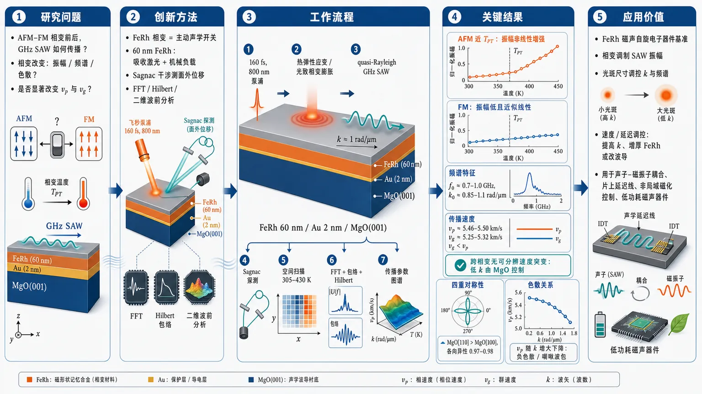
研究问题FeRh/MgO(001) 薄膜在反铁磁 AFM 与铁磁 FM 相变前后，激光产生的 GHz 表面声波包如何传播？重点追问：FeRh 的 AFM–FM 一阶相变究竟是改变声波的振幅、频谱和色散，还是会显著改变相速度与群速度。创新方法把 FeRh 相变作为“主动声学开关”来研究：60 nm FeRh 薄膜既吸收飞秒激光产生 SAW，又作为 MgO 衬底上的机械负载调制传播。通过 Sagnac 干涉测量面外位移，结合空间扫描、FFT、Hilbert 变换和二维波前分析，同时提取振幅、波矢、相速度、群速度、四重各向异性和色散关系。Aha 点在于明确区分：相变强烈增强声源振幅，但低波矢传播速度主要由 MgO 衬底控制。工作流程输入为 160 fs、800 nm 激光脉冲照射 60 nm FeRh/2 nm Au/MgO(001) 样品；泵浦光在 FeRh 中产生热弹性应变或触发 AFM→FM 光致相变晶格膨胀，形成 quasi-Rayleigh GHz SAW；探针光用 Sagnac 干涉仪记录表面法向位移；在不同温度 305–430 K、不同泵浦流量和不同空间位置扫描波包；再用 FFT 提取 k≈1 rad/μm 谱峰，用包络和振荡峰追踪 vg 与 vp，用 Hilbert 变换重构 vp(k) 色散，最终输出相变前后 SAW 的完整传播参数图谱。关键结果低于相变温度时，SAW 振幅随泵浦流量非线性增强，并且温度越接近 TPT 振幅越大；高于 TPT 的 FM 相中，振幅显著降低且近似线性。中心频率约 0.7–1.0 GHz，中心波矢约 0.85–1.1 rad/μm，由泵浦光斑尺寸决定而非相变动力学。相速度约 5.46–5.50 km/s，群速度约 5.25–5.32 km/s，始终 vg < vp，说明存在薄膜加载导致的负色散。跨 AFM–FM 相变没有可分辨的速度突变，表明低 k 传播主要由 MgO 衬底支配。二维波前呈四重对称，MgO[110] 方向速度高于 MgO[100]，相速度各向异性比约 0.97–0.98；vp 随 k 增大而下降，形成啁啾声波包。应用价值为 FeRh 基磁声自旋电子器件提供低波矢 GHz 脉冲 SAW 的实验基准。该研究给出清晰设计规则：利用 FeRh 相变可高效调制 SAW 振幅；改变泵浦光斑尺寸可调控波矢和频谱；若要显著调控传播速度或延迟，需要提高 k、增加 FeRh 厚度或改变声学波导结构。其结果可用于声子–磁振子耦合、片上声学延迟线、非局域磁化控制和低功耗磁声器件设计。第一部分：核心概览（Overview）
激光产生的 GHz 表面声波（SAWs） 在 Fe₄₉Rh₅₁/MgO(001) 中被系统表征，覆盖 AFM 相低温区 与 FM 相高温区。核心贡献在于同时量化 振幅、谱成分、波矢、相速度、群速度、面内各向异性与色散关系，并将其与 FeRh 的 反铁磁–铁磁一阶相变联系起来。结果显示，相变显著调控 SAW 激发效率，但约 1 GHz、k≈1 rad/μm 的传播速度主要由 MgO 衬底支配，FeRh 薄膜主要贡献可测色散与弱各向异性修正。该工作为 FeRh 基磁声自旋电子器件设计提供了低波矢、脉冲 SAW 的关键实验基准。
---
第二部分：结构化快速回顾
《Propagation of laser-generated GHz surface acoustic wavepackets in FeRh/MgO(001) below and above the antiferromagnetic-ferromagnetic phase transition》（None，）
背景
FeRh 在略高于室温处发生 AFM–FM 一阶相变，伴随晶格膨胀、弹性性质变化与电阻变化。SAW–magnon 磁弹耦合可用于低功耗自旋电子器件，但 FeRh/MgO 中激光产生 GHz 脉冲 SAW 的 色散、速度、谱结构和各向异性仍缺乏完整实验刻画。
方法
使用 60 nm Fe₄₉Rh₅₁ / 2 nm Au / MgO(001) 外延薄膜；采用 160 fs、800 nm Ti:Sa 激光，泵浦倍频后激发 SAW，Sagnac 干涉仪探测面外位移。温度设为 305、320、330、340、430 K，泵浦流量最高 30 mJ/cm²。通过空间扫描、FFT、Hilbert 变换和二维波前分析提取 SAW 参数。
结果
低于相变温度时，SAW 振幅随泵浦流量非线性增强，并随初始温度升高而增强；高于相变温度时振幅显著降低且近似线性。中心波矢约 k≈1 rad/μm，中心频率约 0.7–1.0 GHz。相速度约 5.46–5.50 km/s，群速度约 5.25–5.32 km/s，且 vg < vp。速度跨相变无突变。
讨论
SAW 波矢主要由 泵浦光斑尺寸决定，而非相变动力学。速度主要由 MgO 衬底控制；FeRh 薄膜导致色散和弱各向异性。相速度沿 MgO[110] 高于 MgO[100]，相速度各向异性比约 0.975。相速度随波矢增大而降低，形成啁啾脉冲。
局限
可访问波矢范围限于 0.4–2 rad/μm；较高 k 区域无法由当前光斑条件获得。激光重复频率导致稳态加热，使光学提取的相变阈值与实际薄膜全厚度相变条件存在偏差。实验传播距离约 75 μm，不足以分辨理论预测的 AFM/FM 相速度差异 <0.6%。
结论
FeRh/MgO 中激光产生的 GHz quasi-Rayleigh SAW 可由相变机制显著增强激发振幅，但其低 k 传播速度主要由 MgO 决定；FeRh 的弹性性质通过机械负载引入可测色散和各向异性。该体系适合作为 可温度/光流量调谐的磁声平台。
---
第三部分：逐章节冷凝解析（Section-by-Section Condensing）
Abstract
Magnetoacoustic motivation
磁声器件依赖声波与磁振子之间的强耦合，目标是实现低能耗自旋电子学功能。摘要明确将研究定位于 SAW–magnon coupling 器件基础参数测量，称 *"Magnetoacoustic devices that harness the strong coupling between acoustic waves and magnons have emerged as a promising platform for energy-efficient spintronics."* 这一定位说明，声学波传播参数不是单纯弹性学问题，而是决定磁声耦合效率、相干性和器件可设计性的核心输入。
Laser-generated pulsed SAWs as broadband on-chip excitations
激光产生的脉冲 SAW具有三个关键优势：GHz 宽带频谱、无需光刻图形化、表面局域传播。摘要使用 *"offering broadband frequency content up to the gigahertz (GHz) range, remote excitation without lithographic patterning, and surface localization for efficient on-chip integration"* 概括其器件价值。这里的 remote excitation 指光泵浦可在远离功能区处产生声波，避免电极或叉指换能器引入的几何限制。
FeRh film as both transducer and mechanical load
Fe₄₉Rh₅₁ 薄膜同时承担两种角色：吸收光产生声波的 opto-acoustic transducer，以及改变 SAW 传播的 mechanical load。摘要中给出直接表述：*"A thin film of the near-equiatomic FeRh alloy serves both as an opto-acoustic transducer and as a mechanical load that modulates SAW propagation."* 这意味着 FeRh 不仅决定激发强度，还通过薄膜/衬底复合结构改变色散与各向异性。
Phase transition as an active acoustic tuning knob
FeRh 的 AFM–FM 相变略高于室温，并伴随弹性性质突变，从而可以用 样品温度与 激光流量调控 SAW。摘要明确指出：*"The antiferromagnetic to ferromagnetic phase transition in FeRh, occurring slightly above room temperature, is accompanied by abrupt changes in its elastic properties, enabling controlled modification of the SAW excitation efficiency and dispersion characteristics by tuning the sample temperature and laser fluence."* 这里的创新点在于利用磁结构相变作为声波发生与传播参数的主动调节机制。
Measured SAW parameters
实验使用 160 fs 激光泵浦与 时间分辨 Sagnac 干涉检测，提取的参数包括振幅、谱、相速度、群速度及面内各向异性。摘要给出：*"Using 160 fs laser pulses for excitation and time-resolved Sagnac interferometry for detection, the key SAW parameters are evaluated, including amplitude, spectral content, phase and group velocities, and their in-plane anisotropy."* 这些参数共同决定 GHz 声波包能否与磁振子实现相干耦合。
Dispersion as the central phonon–magnon coupling parameter
研究特别强调 色散关系及其各向异性，因为它们控制声子与磁振子的动量/频率匹配。摘要表述为：*"Particular emphasis is placed on the dispersion relation and its anisotropy, which govern the coherent interaction between phonons and magnons and are determined primarily by the FeRh film."* 这一区别很重要：速度绝对值主要受 MgO 控制，但色散特征更敏感于 FeRh 薄膜机械负载。
---
1 Introduction
FeRh phase transition combines magnetism, lattice expansion, and transport changes
近等原子比 FeRh 的核心物性是略高于室温的 AFM 到 FM 一阶相变。文中给出相变温区为 360–390 K，并说明伴随 Rh 磁矩出现、1% 等结构膨胀、电阻变化：*"This transition, occurring at 360-390 K in high-quality Fe49Rh51 thin films, is accompanied by the occurrence of a Rh magnetic moment, 1 % isostructural expansion of its cubic lattice, and electrical resistivity change."* 这些耦合响应使 FeRh 同时适合磁、热、电、声多物理场控制。
MgO(001) is the baseline substrate for high-quality FeRh
FeRh 可在 MgO、Al₂O₃、SrTiO₃、LaAlO₃、KTaO₃ 等衬底上外延，但 MgO(001) 提供优异晶体质量。原文称 *"among which MgO(001) results in FeRh films with exceptional crystalline quality making the FeRh/MgO(001) system a basic choice for both fundamental and device applications."* 这解释了为什么声波传播研究选取 FeRh/MgO，而非其他衬底组合。
FeRh phase transition can be externally manipulated
FeRh 相变可通过 温度、磁场、超快激光脉冲调控。原文表述为：*"The ability to manipulate the phase transition by temperature, magnetic field, or ultrashort laser pulses further enhances the versatility of this material system."* 对 SAW 激发而言，这意味着声学源项可通过热态与光致相变深度主动改变。
SAWs enable non-local magnetization control
SAWs 可传播数百微米，并通过 magnetoelastic coupling 高效激发和操控自旋波。引言指出：*"SAWs easily propagate over hundreds of microns, offer exceptional efficiency in generating and manipulating spin waves via magnetoelastic coupling, and enable non-local magnetic control without the need for complex on-chip wiring."* 这里的 non-local magnetic control 是声波器件相对于局部电流驱动的优势。
Coherent phonon–magnon interaction supports advanced functions
声子–磁振子的相干相互作用可产生 非互易声传输、自旋波激发、确定性磁化翻转等功能。原文列举：*"The coherent interaction between phonons and magnons enables a range of functionalities, including nonreciprocal acoustic transport, spin-wave excitation, and even deterministic magnetization switching."* 这些功能都要求已知声波频率、波矢、相速度和色散。
Optical SAW generation avoids lithographic transducers
飞秒激光聚焦在样品表面可产生 GHz 短脉冲 SAW。原文强调：*"short pulses of GHz SAWs can be generated optically by focusing femtosecond laser pulses onto the sample surface."* 激光方案还具备 *"broadband frequency content, complex wavefronts, and the possibility of remote excitation without lithographic patterning"*，适合研究未图形化薄膜的本征声学响应。
FeRh/MgO provides a phase-transition-tunable SAW platform
FeRh 相变导致弹性与热性质突变，因此可用温度或泵浦流量调节激光产生 SAW。引言写道：*"the abrupt change in elastic and thermal properties accompanying the phase transition offers a unique opportunity to actively modulate properties of the laser-generated SAWs by temperature or laser fluence."* 这正是研究从单纯 SAW 表征推进到相变调控声学的关键。
Previous work left dispersion and velocity incomplete
已有研究测量了 FeRh/MgO 中电激发连续波 SAW 或热 SAW 在相变附近的速度、衰减变化，也证明了激光产生 SAW 的振幅可调；但 色散、速度、谱仍未完整。原文指出：*"however, information on how the phase transition affects the main SAW properties – dispersion, velocities, and spectrum – remains incomplete."* 该空缺直接定义了实验目标。
Different SAW parameters map onto different device functions
振幅、谱、相速度、群速度和色散分别影响不同器件指标。原文指出：*"The spectral content of the SAW pulse defines the length or duration of the pulse which is important for clear separation of distinct pulses, as well as information encoding capabilities."* 同时，*"Phase velocity is important for coherent acoustic control and group velocity is important for acoustical delays."* 因而该研究不是只测速度，而是建立完整声波包参数集。
BLS studies access higher wavevectors than laser generation
近期 BLS 测量 FeRh/MgO 色散可达较大波矢，文中称 BLS *"is sensitive to relatively large wave vectors k >=5 rad/μm."* 但普通激光激发难以达到这些波矢，需要 *"plasmonic resonance, superlattices or ultraviolet light."* 当前研究填补的是常规光激发可达的低 k、GHz 脉冲 SAW 区域。
Experimental scope covers temperature and fluence across the transition
研究系统改变 初始温度与 泵浦流量，覆盖 AFM–FM 相变上下。引言给出目标：*"By systematically varying the initial sample temperature and pump laser fluence, we probe the SAW-related response both below and above the AFM–FM transition temperature."* 测量对象包括 *"amplitudes, spectral content, anisotropies of phase and group velocities, and the dispersion relations."*
---
2 Methods
2.1 Sample
Sample stack and thickness
样品为 60 nm Fe₄₉Rh₅₁ 薄膜，顶部覆盖 2 nm Au，衬底为单晶 MgO(001)。原文给出：*"We used an epitaxial Fe49Rh51 thin film with a thickness of 60 nm, capped by a 2 nm Au layer."* Au 盖层可能用于抗氧化与光学表面稳定，但声学负载主导层仍为 FeRh。
Growth method and interface roughness
FeRh 通过 molecular beam epitaxy 生长，XRR 测得界面极平整：*"root-mean-square roughness values of <0.3 nm for the MgO/FeRh and FeRh/Au interfaces, and 0.7 nm for the Au/air interface."* 低粗糙度保证 SAW 散射较小，也使薄膜/衬底弹性边界条件更接近理想界面。
Crystal structure and epitaxial relationship
FeRh 采用 CsCl 型立方结构，外延关系为 FeRh[001] ∥ MgO[001] 和 FeRh[100] ∥ MgO[110]。原文写道：*"The FeRh layer adopts a cubic CsCl-type crystal structure, with an epitaxial relationship of FeRh[001] ∥ MgO[001] and FeRh[100] ∥ MgO[110]."* 这意味着 FeRh 晶格相对 MgO 面内旋转 45°，会影响复合结构的各向异性。
Room-temperature lattice parameters and strain
室温晶格参数为 a = 2.980 Å 面内、c = 2.992 Å 面外；相对于体相 a_bulk = 2.991 Å，面内应变 −0.37%，面外应变 +0.03%。原文给出：*"At room temperature, the lattice parameters were determined to be a=2.980 Å (in-plane) and c=2.992 Å (out-of-plane), indicating a slight tetragonal distortion arising from epitaxial strain."* 这种轻微四方畸变会影响弹性张量与声波色散。
Single-crystalline film quality
面内 XRD φ 扫描确认薄膜为单晶：*"The FeRh film grew in a monocrystalline form, as confirmed by in-plane X-ray diffraction φ-scan measurements."* 单晶性质对观察四重对称 SAW 各向异性至关重要；多晶薄膜会平均掉面内方向依赖。
AFM–FM transition temperature and hysteresis
VSM 在 μ₀H = 100 mT 面内磁场下测量磁化随温度变化，磁场沿 FeRh[110] ∥ MgO[100]。相变温度为 TPT = 367 K，热滞后宽度 21 K。原文写道：*"The AFM-FM transition temperature was determined to be TPT =367 K, with a thermal hysteresis width of 21 K."* 100 mT 选择超过 FM 相饱和场 25 mT：*"This field magnitude was selected to exceed the saturation field of 25 mT in the FM phase."*
---
2.2 Experiment
Sagnac interferometry detects out-of-plane surface displacement
实验采用 Sagnac 干涉仪，通过探测探针光与参考光的相位差测量表面法向位移 u(z=0)。原文说明：*"One of the interferometer mirrors is formed by the sample surface, enabling the detection of out-of-plane surface displacement u along the surface normal via measurement of the phase shift φ between the probe and reference pulses."* 这使 quasi-Rayleigh 波可被有效探测。
Measured phase and reflectivity channels
相位信号与反射率信号分别来自复反射率变化的虚部和实部。文中给出：*"This phase shift is detected as φ = Im[(ΔR(t)-ΔR(t-ΔT))/R], where ΔT =500 ps denotes the time delay between the probe and the reference beams."* 反射率变化为 *"ΔR/R = Re[(ΔR(t)+ΔR(t-ΔT))/R]."* 双通道设计允许区分位移主导信号和热/光学反射率变化。
Photoelastic contribution is negligible at 800 nm
相位信号中包含 photoelastic effect 与表面位移两部分，但 FeRh 在 800 nm 无明显光谱特征，因此光弹贡献预计较小。原文写道：*"The photoelastic contribution is expected to be negligible compared to u(z=0), as FeRh exhibits no spectral features at the probe wavelength of 800 nm."* 因此相位信号可主要解释为表面面外位移。
Love waves are not detected
该技术对 quasi-Rayleigh waves 敏感，但对 Love waves 不敏感，因为 Love 波没有表面法向位移。原文明确：*"This technique allows detection of quasi-Rayleigh waves but is not sensitive to Love waves, as the latter have no displacement along the surface normal."* 因此测量到的主要 SAW 类型受检测几何选择。
Laser source parameters
光源为 Ti:Sa Coherent MIRA 900，输出 160 fs、中心波长 800 nm、重复频率 75.5 MHz，脉冲间隔 13 ns。原文给出：*"producing 160 fs pulses at a central wavelength of 800 nm and a repetition rate of ν=75.5 MHz, corresponding to a temporal spacing of 1/ν=13 ns between consecutive pulses."* 高重复率带来后文讨论的稳态加热效应。
Pump beam configuration
泵浦光经 548 kHz 电光调制、BBO 倍频后进入 NA=0.65、×40 物镜，聚焦成 FWHM≈1.3 μm 圆斑。原文描述：*"The first serves as the pump beam, which is modulated at 548 kHz using an electro-optic modulator, frequency-doubled in a beta-barium borate (BBO) crystal."* 光斑尺寸成为限制生成波矢的主要因素。
Probe and reference beam configuration
探测路径经机械延迟线，时间分辨率约 0.2 ps；探针和参考光在干涉仪内分束，二者到达样品的时间差为 ΔT = 500 ps。原文写道：*"The second beam path is directed through a mechanical delay line producing the time delay τ with resolution of ∼0.2 ps."* 以及 *"Both of them travel identical optical paths, but arrive on the sample surface with a time delay ΔT=500 ps."*
Spatial scanning resolution
探针和参考光经 4f 系统与可移动透镜扫描，聚焦为 FWHM≈2 μm，相对泵浦位置的空间扫描分辨率优于 1 μm。原文写道：*"By translating the lens using a motorized stage, the probe and reference beams can be scanned across the sample surface relative to the pump beam with a spatial resolution better than 1 μm."* 这使得波包空间形状和波矢谱可以直接提取。
Multiple pump pulses are visible because of pulse train repetition
由于重复频率为 75.5 MHz，固定探测脉冲可记录来自前序泵浦脉冲的响应；例如 τ=3 ns 时，等效延迟为 3、16、29 ns。原文给出：*"For example, for τ=3 ns, the time delay values are t=3, 16 and 29 ns."* 这使单次空间扫描可同时观察不同传播时间的波包。
Detection channels correspond to phase and amplitude
反射光在干涉仪中重新合束并由两个探测器读取，差分和求和分别对应相位与反射率变化。原文写道：*"either the difference or the sum of the detector channels is recorded, providing signals proportional to the imaginary part (phase φ) and the real part (amplitude, ΔR/R) of reflectivity change."* 后续 SAW 分析主要依赖相位通道。
Temperature control and magnetic field condition
样品安装在电阻加热器上，温度稳定性 1 K；所有测量均无外加磁场。原文写道：*"The sample is mounted on a resistive heater, enabling thermally induced phase transition in FeRh with a temperature stability of 1 K."* 以及 *"All measurements were performed in the absence of an externally applied magnetic field."*
---
3 Results
Temperature and fluence range
实验初始温度为 305、320、330、340、430 K。其中 430 K > TPT，其余低于 TPT。原文写道：*"Experiments were carried out at initial sample temperatures T0 =305, 320, 330, 340 and 430 K."* 泵浦流量最高 30 mJ/cm²，受损伤阈值限制：*"The pump laser fluence W was varied up to a maximum of 30 mJ/cm² limited by the onset of laser-induced damage to the film."*
Hysteresis coexistence region is experimentally inaccessible
热滞回相共存区不可测，因为激光脉冲列的第一发脉冲会永久改变该温度区间内 FeRh 相态。原文指出：*"The temperatures lying inside the AFM-FM phase coexistence range in the thermal hysteresis were not accessible, as both excitation and detection utilized laser pulse trains, and the first laser pulse would have permanently altered the FeRh phase within this temperature interval."* 这是理解温度采样点缺口的重要限制。
SAWs are generated in FeRh, not MgO
泵浦光由 FeRh 吸收产生 SAW；AFM 相在泵浦波长的光穿透深度为 19 nm，小于 FeRh 厚度 60 nm；MgO 在泵浦和探测波长均透明。原文写道：*"SAWs are generated within the FeRh film following absorption of the pump laser pulse."* 以及 *"The optical penetration depth at the pump wavelength is 19 nm in the antiferromagnetic (AFM) phase, which is less than the film thickness of h=60 nm."*
Reflectivity transients identify phase-transition threshold and saturation fluence
在每个低于 TPT 的温度，先于 x=y=0 测量 ΔR(t)/R 随流量变化，以确定光致相变的阈值 WT 和饱和流量 WS。原文写道：*"The goal of this procedure is to find the threshold WT and saturation WS fluences of the photoinduced phase transition at the temperatures used, which govern the SAW generation mechanisms."* 这一步将光学相变动力学和声波激发机制连接起来。
Phase-transition reflectivity component is isolated by subthreshold subtraction
相变相关反射率分量 ΔRPT/R 通过减去 0.2 mJ/cm² 低于阈值信号及热背景获得。原文说明：*"To isolate the component associated with the photoinduced phase transition ΔRPT/R, the signal obtained at a subthreshold fluence of 0.2 mJ/cm² (<WT) was scaled and subtracted from the data."* 该处理避免将普通热反射率变化误判为相变信号。
Three fluence regimes define generation mechanisms
在 W < WT，无相变，SAW 仅由 thermoelasticity 产生；在 WT < W < WS，发生部分相变，形成混合相；在 W > WS，探测体积内 FeRh 全部转为 FM。原文写道：*"This dependence exhibits three distinct linear regimes bounded by the threshold fluence WT and the saturation fluence WS."* 以及 *"For W<WT, no phase transition is induced, and the sole mechanism of SAW generation is thermoelasticity."*
Above-threshold SAW generation includes lattice expansion from phase transition
阈值以上，SAW 由热弹性与相变相关晶格膨胀共同驱动，相变贡献在 W=WS 达最大。原文写道：*"For fluences above the threshold, the SAW generation is governed by both thermoelasticity and phase-transition-related lattice expansion, the latter reaching its maximal potency at W=WS."* 这解释了低温 AFM 区振幅非线性增强。
No photoinduced phase transition above TPT
在 T0 > TPT，光致相变不能触发，ΔRPT = 0。原文直接说明：*"For T0 > TPT, photoinduced phase transition cannot be triggered, and ΔRPT=0."* 因而 430 K 的 SAW 激发主要为热弹性机制，且振幅较低。
Spatial phase scans show propagating SAW wave packets
确定 WT 与 WS 后，在固定 t=3 ns 进行 x、y 空间扫描，获得相位 φ 的波包。原文写道：*"we measured the phase shift φ between the probe and reference beams as a function of the spatial coordinates x and y of the probe pulse on the sample surface, with the time delay fixed at t=3 ns."* x 方向定义为 x ∥ [100]MgO，y 方向为 y ∥ [010]MgO。
Measured SAWs propagate in unperturbed material
在 t=3 ns 时，SAW 已离开泵浦区域，因此传播区仍处于初始温度 T0 的未扰动态。原文指出：*"at a time delay of 3 ns, the SAW pulse has already propagated away from the pump-excited area around x=0 where φ is nonzero."* 因而速度、色散测量反映的是未被局部光热扰动改变的样品。
Additional wave packets arise from previous pump pulses
在 x = ±80 μm 和 ±160 μm 处的额外波包来自前序泵浦脉冲，对应传播时间 16 ns 和 29 ns。原文写道：*"Additional wave packets observed at x=±80 μm and ±160 μm originate from preceding pump pulses within the laser pulse train, corresponding to propagation times of 16 and 29 ns, respectively."* 这为群速度和色散重构提供多传播距离信息。
Observed waves are quasi-Rayleigh SAWs
观测到的波包被识别为 quasi-Rayleigh SAW pulses。其速度约 5480 m/s，接近裸 MgO(001) 沿 [100] 的 Rayleigh 波速度 5500 m/s。原文写道：*"Their propagation velocity ∼5480 km/s, which will be discussed in detail below, closely matches the Rayleigh wave velocity in bare MgO(001) along the [100] direction (5500 m/s)."* 这里单位应理解为约 5480 m/s，与后文 5.48 km/s 一致。
Low-frequency velocity is substrate dominated
当声学波长远大于 60 nm FeRh 厚度时，SAW 速度主要由衬底决定。原文指出：*"at relatively low frequencies the SAW velocity is predominantly governed by the substrate, since the acoustic wavelength is large compared to the 60 nm FeRh film thickness."* 这是后续“跨相变速度无突变”的物理基础。
2D maps reveal distorted circular wavefronts with fourfold symmetry
二维相位图在 305 K、330 K、430 K 与 t=3 ns、13 ns 条件下获得；SAW 表现为畸变圆形波前，畸变源于 MgO(001) 四重对称性。原文写道：*"In all two-dimensional maps, the SAW pulse appears as a distorted circular wavefront, with the distortion arising from the fourfold symmetry of the underlying MgO(001) substrate."*
Signal amplitude is strongly reduced in FM phase
在 T0=430 K > TPT 时，信号振幅明显降低。原文写道：*"A pronounced reduction in signal amplitude is observed at T0=430 K (>TPT), consistent with previous observations."* 这与高温 FM 相下缺少光致 AFM–FM 相变驱动项相一致。
A weaker faster wave is surface-skimming longitudinal acoustic wave
二维图中还可见较弱、更快传播的波，归因于 surface-skimming longitudinal acoustic wave，但不是严格表面波且振幅较低，因此不继续分析。原文写道：*"This feature is attributed to a surface-skimming longitudinal acoustic wave and will not be considered further, as it does not constitute a true surface wave and exhibits comparatively low amplitude."*
---
4 Discussion
4.1 Amplitudes and wavenumbers
SAW amplitude extraction uses upper and lower envelopes
SAW 振幅 φmax(W,T0) 从 x 扫描中提取，定义为上下包络幅度的平均。原文写道：*"The SAW amplitude was determined by averaging the magnitudes of the upper and lower envelopes."* 三个传播延迟 t=3、16、29 ns 的流量和温度依赖一致，因此重点讨论 t=3 ns。
Below TPT, amplitude rises nonlinearly with fluence and monotonically with temperature
低于相变温度时，SAW 振幅随泵浦流量非线性上升；固定流量下，温度越接近 TPT，振幅越大。原文写道：*"for T0<TPT, the amplitude exhibits a nonlinear increase with increasing fluence and, for a fixed fluence, rises monotonically with T0<TPT."* 这是相变驱动晶格膨胀叠加热弹性源项的直接表现。
Above TPT, fluence dependence becomes linear and amplitude decreases
当 T0 > TPT，振幅随流量近似线性且整体显著降低。原文指出：*"When T0 exceeds TPT, the fluence dependence becomes linear and the overall amplitude is substantially reduced."* 由于高温 FM 相中不能再通过 AFM–FM 相变产生额外晶格膨胀，声源退化为热弹性。
Inflection points in amplitude correspond to phase-transition saturation
低于 TPT 时，振幅–流量曲线中的拐点 Wi 与光致相变特征流量相关，最终被归因于 饱和流量 WS。原文写道：*"These inflections are associated with the characteristics of the photoinduced phase transition in FeRh, specifically threshold or saturation fluences."* 并进一步总结：*"we conclude that the observed inflection points correspond to saturation fluences, albeit derived from SAW amplitude rather than from the pump-induced reflectivity change."*
Threshold fluence decreases linearly with temperature
WT(T0) 随温度升高而线性下降，因为离 TPT 越近，所需激光能量越少。原文写道：*"The linear decrease in WT with increasing temperature is explained by the reduction of the laser energy required to induce the phase transition as T0 gets closer to TPT."* 这符合一阶相变热驱动图像。
Saturation fluence nonlinearity reflects cumulative heating
WS(T0) 的非线性温度依赖来自高重复频率激光系统造成的累积加热，以及探针/参考光额外贡献约 2 mJ/cm² 流量。原文指出：*"The nonlinear temperature dependence of WS is attributable to cumulative heating effects arising from the high repetition rate of the laser system, combined with the fact that the probe and reference beams together contribute an additional fluence of approximately ∼2 mJ/cm²."*
WT and WS extrapolate to zero below nominal TPT because of steady-state heating
WT(T0) 与 WS(T0) 外推到零的温度为 342 K，低于磁测得的 TPT=367 K，表明实验中存在稳态加热。原文写道：*"Both WT(T0) and WS(T0) extrapolate to zero at T0=342 K, a temperature notably lower than TPT=367 K, further indicating the presence of steady-state heating during the experiment."*
SAW-derived saturation fluence exceeds optical saturation fluence
由 SAW 振幅得到的饱和流量大于光学反射率得到的 WS，因为 SAW 对整个 60 nm FeRh 厚度敏感，而光学反射率更偏向近表面吸收层。原文写道：*"Such SAW-determined saturation fluence exceeds the optically obtained WS as it samples the entire FeRh film thickness."* 进一步解释为：*"the laser-generated SAW is larger than the 60 nm FeRh film, and its slow generation allows the heat diffusion to redistribute laser energy across the full film thickness."*
Wavevectors are extracted by FFT of spatial scans
SAW 波矢通过对空间扫描 φ(x) 沿 x 方向做 FFT 得到，即提取 kx。原文写道：*"SAW wavevectors were extracted via fast Fourier transform (FFT) of the spatial scans."* 中心波矢约为 kx = 1 rad/μm：*"The central wavenumber of the generated SAWs in these experiments is kx=1 rad/μm."*
Generated wavenumbers are set by pump spot size
影响频谱的因素包括泵浦光斑尺寸和产生机制，但在当前实验中波矢由 1.3 μm FWHM 泵浦光斑决定。原文明确：*"Therefore, the laser generated SAW wavenumbers are defined by the pump laser spot size."* 对比先前更小光斑产生更高 k 的结果：*"The smaller pump size has led to generation of SAWs with larger k."*
Thermoelastic and phase-transition time scales would allow higher k than observed
热弹性机制受温升速率限制，但可支持远高于当前观测的波矢；相变晶格转变时间约 100 ps，对应 SAW 波矢约 11.5 rad/μm，也远高于观测值。原文写道：*"The phase transition mechanism has a timescale of the lattice transformation around 100 ps, and the corresponding SAW wavenumber of 11.5 rad/μm also lays far beyond the observed ones."* 因此 k≈1 rad/μm 并非机制时间尺度限制。
Wavevectors are independent of pump fluence
FFT 分析显示波矢不随流量变化，说明相变机制激活只改变振幅，不改变生成 SAW 的波矢谱。原文总结：*"the wavevectors exhibit no dependence on pump fluence, indicating that the SAW spectrum is governed by the laser spot size and is independent on the activation of the phase-transition mechanism of SAW generation."*
Frequency decreases during propagation due to frequency-dependent attenuation
传播过程中频率略下降，符合高频成分衰减更快的 picosecond acoustics 常见现象。原文写道：*"a slight decrease in frequency is observed upon SAW propagation, consistent with frequency-dependent attenuation."* 谱分布 FWHM 约 1.2 rad/μm，且不随温度和流量变化：*"The FWHMs of the spectral distributions ... were found to be independent of both temperature and fluence, with a value of approximately 1.2 rad/μm."*
---
4.2 Phase and group velocities and their anisotropy
Group and phase velocities are extracted from different waveform features
群速度 vg 通过追踪包络最大值获得，相速度 vp 通过追踪振荡信号的前沿最大值获得。原文写道：*"Group velocities were determined by tracking the temporal evolution of the envelope maxima, while phase velocities were obtained by tracking the leading maxima of the oscillatory φ signal."* 这一区分对应波包能量传播与相位传播。
Velocities do not depend on pump fluence
由于 SAW 在未被泵浦扰动的区域传播，速度不随泵浦流量变化。原文指出：*"Since SAWs propagate through regions of the sample unaffected by the pump pulse, no dependence of velocity on pump fluence W is found."* 这排除了局部激光加热对传播速度提取的主导影响。
Along MgO[100], group velocity is about 5280 m/s and phase velocity about 5480 m/s
沿 MgO[100] 方向，由 t=3、16、29 ns 信号比较得到 vg≈5280 m/s、vp≈5480 m/s。原文给出：*"The resulting group velocities vg∼5280 m/s and phase velocities vp∼5480 m/s are presented ... as a function of the sample temperature."* 这些值与裸 MgO Rayleigh 波速度相近。
Central phonon frequency is about 1 GHz
利用 f = kvp / 2π，得到 SAW 脉冲中声子频率约 1 GHz。原文写道：*"The extracted phase velocities allow us to calculate the frequencies of acoustic phonons in the SAW pulse using the relation f=kvp/2π, the values of f∼1 GHz."* 表 1 中中心频率为 0.74–0.97 GHz。
Group velocity is lower than phase velocity because of film loading
所有温度下 vg < vp，符合薄膜机械加载衬底体系中 SAW 的预期。原文写道：*"For all temperatures, the relation vg<vp holds, which is expected for SAWs in a system where a thin film mechanically loads a substrate."* 负色散导致群速度低于相速度。
No abrupt velocity change across AFM–FM transition
相速度和群速度几乎不随温度变化，跨相变无突变，说明 MgO 衬底主导低 k SAW 速度。原文写道：*"The phase and group velocities show negligible temperature dependence."* 并指出：*"No abrupt change in velocity is observed across the phase transition, pointing at the dominant role of the MgO substrate in governing SAW velocities."*
The kh parameter controls film influence
SAW 参数取决于波矢 k、频率和薄膜厚度 h 的组合 kh，决定 FeRh 薄膜对 SAW 的影响程度。原文写道：*"The obtained SAW parameters depend strongly on the combination of wavenumber (frequency) and FeRh film thickness, kh, defining the degree to which the FeRh film affects the SAW propagation."* 当前 k≈1 rad/μm、h=60 nm，kh≈0.06，薄膜影响有限但可测。
Earlier smaller pump spot generated higher-k, higher-frequency SAWs
同一样品先前研究因泵浦光斑更小，产生 k≈3.5 rad/μm、中心频率 3.1 GHz 的 SAW，得到相速度 5.4 km/s、群速度尤其较低 4.3 km/s。原文写道：*"we found slightly different values for phase (5.4 km/s) and especially group (4.3 km/s) velocities ... resulting in higher k∼3.5 rad/μm."* 这证明色散随 k 增强。
2D maps reveal fourfold anisotropy
二维相位图用于分析速度面内各向异性，覆盖 t=3 ns、13 ns 和 T0=305、330、430 K。原文写道：*"A clear fourfold symmetry, evident in the spatial maps in Figure 4, is confirmed by the azimuthal angle φ dependence of both phase and group velocities."* 四重对称性来自 MgO(001) 立方晶体。
Velocity is lower along MgO[100] and higher along MgO[110]
SAW 速度沿 MgO[100] 较低，沿 MgO[110] 较高；相速度比约 0.975，群速度比约 0.985。原文给出：*"SAW velocities are lower along the MgO[100] direction and higher along the MgO[110] direction, with a ratio of approximately 0.975 for the phase velocity and 0.985 for the group velocity."*
FeRh film weakly modifies bare MgO anisotropy
裸 MgO(001) 的 Rayleigh SAW 比值为 0.966，FeRh/MgO 中约 0.975，说明 60 nm FeRh 对约 1 GHz SAW 速度各向异性有小但可辨影响。原文写道：*"For reference, the corresponding ratio for Rayleigh SAWs propagating on a bare MgO(001) substrate is 0.966, indicating that the presence of the 60 nm FeRh film exerts a discernible, but small, influence on the velocity anisotropy at acoustic frequencies near 1 GHz."*
---
4.3 Dispersion and its anisotropy
Bare Rayleigh SAWs are nondispersive; observed dispersion comes from FeRh film
裸衬底上的 Rayleigh SAW 本征上无色散，因此 FeRh/MgO 中的色散来自薄膜机械加载。原文写道：*"Rayleigh SAWs propagating on a bare substrate are inherently nondispersive, consequently, any observed dispersion is attributable to the presence of the FeRh film and is characteristic of the FeRh/MgO(001) heterostructure."*
Accessible dispersion range is k = 0.4–2 rad/μm
实验可提取的色散范围由 SAW 脉冲谱决定，为 0.4–2 rad/μm。原文指出：*"Here we evaluate the SAW dispersion within the accessible wavenumber range of k=0.4-2 rad/μm, determined by the spectral content of our SAW pulses."* 该范围低于 BLS 通常访问的 k≥5 rad/μm。
Dispersion appears as chirped pulse shape
声学色散导致 啁啾波包，即波包内频率随空间或时间变化。原文写道：*"Acoustic dispersion, i.e. the dependence of phase velocity on wavenumber, manifests as a chirped pulse shape, characterized by a spatial or temporal variation of the phonon frequency within the pulse."* 因此波包形状本身编码色散信息。
2D FFT is avoided because of noise and alignment sensitivity
常规方法可用二维 FFT 提取色散，但对噪声和对准误差很敏感。原文写道：*"While the dispersion of laser-generated SAWs is typically extracted using two-dimensional FFT analysis, this direct approach is highly sensitive to noise and alignment inaccuracies."* 因此采用基于 Hilbert 变换的重构方法。
Hilbert-transform method reconstructs phase velocity dispersion
色散重构方法假设介质近似各向同性，因相速度各向异性比接近 1。流程为：分别对 t=3 ns 与 t=16 ns 的信号做 FFT，提取 Fourier 域振荡相位，再通过 Hilbert 变换获得解析信号并相位相减。原文写道：*"a Hilbert transform was applied to obtain the analytic signal to extract its argument and modulus."* 并说明：*"the arguments of the analytic signals for t=3 ns and t=16 ns were subtracted from each other, enabling extraction of the phase velocity dispersion vp(k)."*
Dispersion is evaluated along MgO[100] and MgO[110]
该方法应用于二维图，分别考虑 MgO[100] 与 MgO[110] 两个主晶向。原文写道：*"This method was applied to the two-dimensional maps shown in Figure 4, considering the two principal crystallographic directions MgO[100] and MgO[110]."* 同时确认色散与泵浦流量无关：*"Additionally, we ensured that the dispersions are independent of W."*
Low-k nonlinearities below 0.6 rad/μm are reconstruction artifacts
部分数据在 k < 0.6 rad/μm 的非线性不是物理色散，而是方法伪影。原文解释：*"The nonlinearities of vp(k) at k<0.6 rad/μm present for some data are an artifact inherent to the reconstruction procedure."* 成因是信号分段和有限窗口大小：*"arising from the segmentation of the original signal into individual pulses and the finite window size."*
Phase velocity decreases with increasing k
所有色散曲线均显示 vp 随 k 增大而下降，对应负色散和啁啾波包。原文写道：*"For all signals present in Figure 7(a), the phase velocity decreases with increasing wavenumber k, accounting for the chirped pulse shapes."* 更高频成分位于脉冲尾部：*"where higher-frequency components trail in the pulse tail."*
No clear phase dependence of extracted dispersion
提取的色散未显示对 FeRh AFM/FM 相的清晰依赖。原文指出：*"The extracted dispersions do not show a clear dependence on the phase of the FeRh film."* 这与理论预测 AFM/FM 速度差 <0.6% 且实验传播距离有限相一致。
MgO[110] velocities exceed MgO[100] velocities
沿 MgO[110] 的速度高于 MgO[100]，与二维速度各向异性和裸 MgO 已知性质一致。原文写道：*"Velocities along the MgO[110] direction are clearly higher than along MgO[100], in agreement with Figure 6(b) and the known anisotropy of bare MgO(001)."* 色散斜率沿 [110] 略高：*"The slope dvp/dk is slightly higher for the wavevectors along MgO[110]."*
Numerical model solves anisotropic elastic wave equations
数值计算通过求解弹性波传播方程，并考虑薄膜和衬底的各向异性。原文写道：*"Numerical calculations of SAW dispersion in the FeRh/MgO system were performed by solving the elastic wave propagation equation while accounting for the anisotropy of both the film and the substrate."* 使用 MgO 已知弹性张量和近期报道的 FeRh 薄膜弹性张量：*"we used the known elastic tensor of MgO and a recently reported elastic tensor for a thin FeRh film."*
Calculated dispersions agree within 5% and reproduce anisotropy
计算相速度色散与实验提取结果差异低于 5%，并成功复现晶向依赖。原文写道：*"The calculated phase velocity dispersions agree reasonably well with those extracted from the measured data with differences below 5 % and successfully capture the dependence of vp on the crystallographic direction."*
Calculated anisotropy ratios match experiment
在中心波矢 k=1 rad/μm，计算得到 AFM 相 vp[100]/vp[110] = 0.975，FM 相 = 0.970，与实验约 0.975 一致。原文给出：*"At the central wavenumber k=1 rad/μm, the anisotropy ratios obtained from the calculations are vp[100]/vp[110]=0.975 for the AFM phase and 0.970 for the FM phase."*
Calculated AFM–FM velocity difference is experimentally unresolved
计算预测 AFM 相相速度高于 FM 相，但差异 <0.6%，对实验中约 75 μm 的传播距离不可分辨。原文写道：*"The calculations predict a higher phase velocity in the AFM phase of FeRh compared to the FM phase, however, this difference is smaller than 0.6 % making it indescribable for the experimental 75 μm travel distances."* 这里 “indescribable” 语义上应理解为不可分辨或不可检测。
5% velocity discrepancy may arise from interface and epitaxial stress
实验与计算约 5% 的速度差可能来自 FeRh/MgO 界面效应和外延应力，后者会随 FeRh 相变变化。原文写道：*"The 5 % discrepancy in values of vp may originate from the FeRh/MgO interface, which can affect velocity dispersion, and is related to epitaxial stresses, which vary upon the phase transition in FeRh."*
---
4.4 Summary of SAW parameters
Measured parameter table covers k = 0.4–2 rad/μm
表 1 汇总了 60 nm Fe₄₉Rh₅₁/MgO(001) 中激光产生 SAW 的关键参数，波矢范围 0.4–2 rad/μm。原文写道：*"A summary of the SAW parameters evaluated in this work is provided in Table 1."* 表题进一步限定：*"as extracted from the experimental data in a wavevector range 0.4-2 rad/μm."*
Phase velocity is nearly temperature independent
沿主要扫描方向提取的前沿振荡相速度为：305 K：5.47 ± 0.09 km/s；320 K：5.46 ± 0.10 km/s；330 K：5.46 ± 0.07 km/s；340 K：5.48 ± 0.10 km/s；430 K：5.50 ± 0.11 km/s。表中条目为 *"Phase velocity of the leading oscillation, vp [km/s]"*，这些数值说明跨 AFM–FM 相变无可测突变。
Group velocity remains around 5.25–5.32 km/s
群速度为：305 K：5.32 ± 0.03 km/s；320 K：5.28 ± 0.10 km/s；330 K：5.27 ± 0.04 km/s；340 K：5.28 ± 0.06 km/s；430 K：5.25 ± 0.10 km/s。表中条目为 *"Group velocity, vg [km/s]"*。整体满足 vg < vp，反映薄膜负载引起的负色散。
Central frequencies lie in the sub-GHz to 1 GHz range
中心频率分别为：305 K：0.89 GHz；320 K：0.97 GHz；330 K：0.83 GHz；340 K：0.94 GHz；430 K：0.74 GHz。表中条目为 *"Central frequency, f [GHz]"*。这些数值与摘要中 GHz range 以及正文 f∼1 GHz 相一致。
Central wavevectors cluster near 1 rad/μm
中心波矢分别为：305 K：1.0 rad/μm；320 K：1.1 rad/μm；330 K：0.9 rad/μm；340 K：1.1 rad/μm；430 K：0.85 rad/μm。表中条目为 *"Central wavevector, k [rad/μm]"*。这印证 FFT 分析结论，即波矢由泵浦光斑尺寸决定。
Dispersion slopes are negative and direction dependent
沿 [100] 的色散斜率为：305 K：−0.21 μm²/rad/ns；330 K：−0.25 μm²/rad/ns；430 K：−0.23 μm²/rad/ns。沿 [110] 的斜率为：305 K：−0.29 μm²/rad/ns；330 K：−0.27 μm²/rad/ns；430 K：−0.31 μm²/rad/ns。表中条目为 *"Velocity dispersion slope along [100] dvp/dk"* 与 *"Velocity dispersion slope along [110] dvp/dk"*。负值说明 vp 随 k 增大下降，且 [110] 方向负斜率绝对值略大。
Phase velocity anisotropy is about 0.97–0.98
相速度面内各向异性比 vp[100]/vp[110] 为：305 K：0.972；330 K：0.976；430 K：0.969。表中条目为 *"In-plane anisotropy of phase velocity, vp[100]/vp[110]"*。该比值接近但高于裸 MgO 的 0.966，说明 FeRh 薄膜对各向异性有弱修正。
---
第四部分：深度理解与语言支持（Understanding & Nuance）
1. 术语解析
Quasi-Rayleigh wave
Quasi-Rayleigh wave 指在薄膜/衬底复合结构中类似 Rayleigh 波的表面声波。理想 Rayleigh 波存在于半无限均匀弹性体表面，位移包含纵向和法向分量，并随深度指数衰减。FeRh/MgO 是分层结构，表面模式受薄膜加载、界面条件和各向异性影响，不再是理想 Rayleigh 波，因此称 quasi-Rayleigh。语境中该词强调：探测到的是具有表面法向位移、可被 Sagnac 干涉探测的模式，而非 Love 波或体波。
Mechanical load
Mechanical load 在这里不是“外加载荷”，而是薄膜覆盖在衬底上后对 SAW 传播产生的惯性与弹性边界效应。FeRh 薄膜厚度只有 60 nm，但其密度、弹性常数和相变引起的弹性变化会改变 SAW 的有效相速度、群速度和色散。低 k 时 MgO 主导速度；随着 k 或 kh 增大，声波能量更集中于近表面，FeRh 的机械负载影响增强。
Dispersion relation
Dispersion relation 指频率 ω 或相速度 vp 与波矢 k 的关系。对裸半无限衬底 Rayleigh 波，vp 近似不随 k 变，是非色散；对薄膜/衬底结构，vp(k) 变化导致波包不同频率成分以不同速度传播。语境中，色散关系是声子–磁振子相干耦合的核心，因为磁振子也有自己的频率–波矢关系，只有满足频率和动量匹配才会强耦合。
Chirped pulse shape
Chirped pulse shape 指脉冲内部频率随时间或空间位置变化。这里由于 vp 随 k 增大而下降，高 k、高频成分传播较慢，因此在波包尾部出现。该术语来自光学和声学中的“啁啾”，并不表示频率被主动调制，而是色散传播后自然形成的频率排序。
Surface-skimming longitudinal acoustic wave
Surface-skimming longitudinal acoustic wave 是一种沿表面附近传播的纵向体波，不是真正被表面束缚的 SAW。它速度更快、振幅较弱，并非 Rayleigh 型表面模式。语境中将其排除，是因为研究目标是表面局域、可用于磁声器件耦合的 SAW，而非弱表面掠过体波。
---
2. 疑难查证
为什么 FeRh 相变显著改变 SAW 振幅，却几乎不改变速度？
关键在于 激发机制 和 传播机制 分属不同物理量。
泵浦光首先被 FeRh 吸收。低于 TPT 时，足够强的激光可触发 AFM→FM 光致相变，FeRh 发生约 1% 晶格膨胀，这相当于一个额外的、快速的应变源。因此 SAW 振幅会随相变参与程度显著增强，并在 WT 到 WS 之间出现非线性。
但传播速度由整个声学模式的能量分布决定。当前中心波矢约 1 rad/μm，对应波长约 2π/k≈6.3 μm，远大于 60 nm FeRh 厚度。声波的位移场深入 MgO 衬底，FeRh 只是很薄的表面负载。因此速度主要由 MgO 的弹性常数和密度决定。FeRh 相变确实会改变弹性常数，但薄膜占模式能量比例太小，导致速度变化低于实验分辨率。
简化图像：FeRh 像一个很薄但会“用力敲击”的表层锤子，决定敲击强度；MgO 像一大块厚基底，决定波跑多快。
为什么波矢由泵浦光斑尺寸决定，而不是由 160 fs 脉冲宽度决定？
飞秒脉冲确实提供极宽的时间频谱，但 SAW 的面内波矢由空间傅里叶成分决定。泵浦光斑直径约 1.3 μm FWHM，空间上越宽，其可提供的面内 k 分量越窄；只有光斑边缘产生的应力梯度能够有效辐射相应 k 的表面波。
相变机制时间尺度约 100 ps，对应可支持 11.5 rad/μm 的波矢；热弹性机制也可支持更高 k。可是实验观测中心 k 只有 ≈1 rad/μm，说明时间响应不是瓶颈，空间光斑才是瓶颈。若用更小光斑、等离激元结构、超晶格或紫外光，可进入更高 k 区域。
为什么 vg < vp 能证明存在薄膜加载色散？
若 Rayleigh 波在理想均匀半无限介质中传播，频率与波矢近似线性：ω = vp k，且 vp 不随 k 变化，此时群速度 vg = dω/dk = vp。
在 FeRh/MgO 中，vp 随 k 增大而下降，即 负色散。由于 ω(k)=k·vp(k)，群速度为：
vg = dω/dk = vp + k·dvp/dk
当 dvp/dk < 0 时，第二项为负，因此 vg < vp。实验中 vp≈5.48 km/s，vg≈5.28 km/s，正符合薄膜负载引起的负色散。
为什么 MgO[110] 比 MgO[100] 更快？
MgO 是立方晶体，但立方晶体在不同晶向上的弹性响应仍可不同。SAW 速度取决于传播方向上的有效弹性刚度和表面边界条件。MgO(001) 面内具有四重对称性，因此 [100]、[010] 等价，[110]、[1-10] 等价，但 [100] 与 [110] 不必等价。实验观测 vp[100]/vp[110]≈0.975，说明 [110] 方向速度约高 2.5%。
FeRh 薄膜相对 MgO 面内旋转 45°，会轻微改变复合结构各向异性，使裸 MgO 的 0.966 调整到 FeRh/MgO 的约 0.975。
---
第五部分：创新评估与关联（Synthesis & Novelty）
1. 创新性判断
低波矢、激光产生脉冲 SAW 的完整参数集
近年 FeRh/MgO 的 SAW 研究包括电激发连续波 SAW、热 SAW、BLS 高频/高 k 声学色散，以及 SAW 诱导相变或磁性调控。已有 BLS 工作主要覆盖 k ≥ 5 rad/μm；电学 SAW 更偏向固定频率连续波。该研究集中在普通飞秒激光直接产生的 k≈1 rad/μm、f≈1 GHz 脉冲 SAW，并同时给出 振幅、波矢谱、相速度、群速度、各向异性、色散斜率。这类完整实验参数集此前不足。
把相变调控从“振幅”扩展到“传播色散和各向异性”
先前已经证明 FeRh 相变可调控激光产生 SAW 振幅；未充分解决的问题是相变是否也显著改变 速度、频谱、色散关系与各向异性。结果显示：相变强烈改变激发效率，但在当前低 k 下速度和色散相变依赖不明显，传播主要由 MgO 决定。这一结论对器件设计很关键：若需要调幅，温度/流量调控有效；若需要调速或调延迟，必须进入更高 k、更厚 FeRh 或不同衬底/波导设计。
建立了 FeRh/MgO 低 k 色散的实验–计算对应
色散曲线在 0.4–2 rad/μm 范围内通过 Hilbert 变换方法重构，并与考虑 FeRh 和 MgO 各向异性的弹性波计算比较。计算与实验差异 <5%，并复现 vp[100]/vp[110]≈0.975。这为未来设计声子–磁振子匹配条件提供了可用基准，而不仅是定性观察波包传播。
明确区分“相变增强声源”和“衬底支配传播”
一个容易混淆的问题是：FeRh 相变伴随弹性突变，是否必然导致 SAW 速度突变？结果给出清晰答案：在 h=60 nm、k≈1 rad/μm 条件下，FeRh 对模式能量的占比小，MgO 控制速度；相变主要通过晶格膨胀增强声源。该区分解决了前人工作中“相变调声”概念的模糊性。
为磁声自旋电子器件给出可操作设计规则
器件相关结论可以归纳为三条：
- 调 SAW 振幅：利用低于 TPT 的光致 AFM–FM 相变，泵浦流量超过 WT 后可显著增强。
- 调 SAW 频谱/波矢：主要改变泵浦光斑尺寸，而非单纯提高流量。
- 增强 FeRh 对传播的影响：需要提高 k、增加 kh、改变薄膜厚度或采用更强局域的激发结构。
这些规则直接服务于 FeRh 基 magnetoacoustic spintronics、声控相变、声子–磁振子相干耦合与片上延迟线设计。
-
18
📊 含图深析
📄 摘要：基于第一性原理晶格动力学和对称模分析，发现铁电铋单层的极化翻转可沿面内旋转路径进行，能垒比直接反转低 4 倍以上，可自然解释分子动力学中出现的涡旋式畴纹理。
💡 亮点：Bi 单层的极化翻转可走旋转路径，能垒比直接反转低四倍以上。为二维铁电的低耗开关和畴工程提供了清晰机制。
📖 展开分析 + 配图
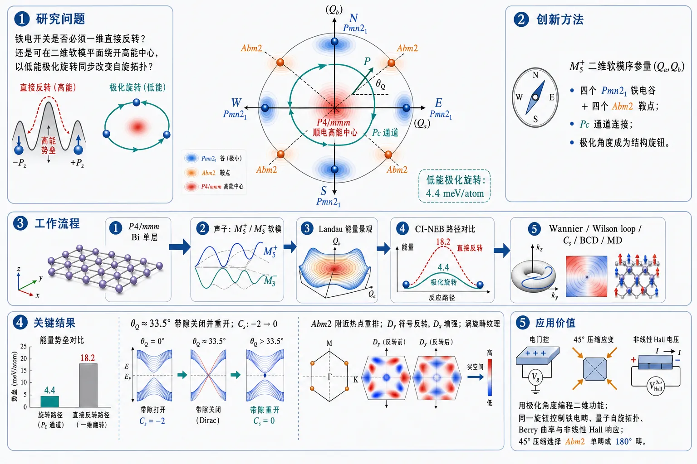
研究问题二维单元素铁电 Bi 单层的极化开关是否必须沿一维双阱路径直接反转、穿过高能顺电结构，还是可以在二维软模序参量平面中绕开高能中心，通过低能极化旋转完成切换，并同步改变电子自旋拓扑？创新方法将 Bi 单层的铁电开关重新描述为 M₅⁺ 二维软模序参量 ((Qₐ,Q_b)) 的角度旋转：四个 Pmn2₁ 铁电谷像指南针四向极小值，四个 Abm2 鞍点位于 45° 方向，Pc 低对称通道连接其间；极化不再需要幅值归零，而是在能量环形谷中旋转，从而以 4.4 meV/atom 的低势垒触发 Cs = −2 到 0 的自旋拓扑转变。工作流程从高对称 P4/mmm Bi 单层出发，先用声子计算识别 M₅⁺ 双重简并软模和 M₃⁻ 软模；再用对称性适配模与 Landau 序参量构建 ((Qₐ,Q_b)) 二维能量景观，定位 Pmn2₁ 极小值、Abm2 鞍点和 Pc 通道；随后用 CI-NEB 比较直接反转与旋转路径势垒；最后结合 Wannier、Wilson loop、自旋 Chern 数、Berry 曲率偶极和分子动力学，追踪极化旋转过程中的带隙关闭、拓扑变化、涡旋畴和非线性 Hall 响应。关键结果旋转路径势垒仅 4.4 meV/atom，远低于直接 Pmn2₁ → Pmna → Pmn2₁ 反转路径的 18.2 meV/atom；极化从 Pmn2₁ 向 Abm2 旋转时，直接带隙在 (θ_Q approx 33.5ⁱ̧rc) 关闭并重开，自旋 Chern 数由 Cs = −2 变为 Cs = 0；Abm2 附近 Berry 曲率热点增强并重排，BCD 出现 Dy 符号反转和显著 Dx 分量；MD 中的涡旋状畴纹理可由二维序参量能量景观自然解释。应用价值该研究提供一种用极化角度而非单纯极化正负来编程二维材料功能的设计原则：在 Bi 单层中，同一结构旋钮可同时控制铁电畴、量子自旋拓扑、Berry 曲率和非线性 Hall 响应；45° 方向单轴压缩还能选择 Abm2 单畴或 180° 畴，为电控、力控拓扑器件和非线性输运器件提供可视化、低能耗、可推广的材料机制。第一部分：核心概览 (Overview)
该研究将单元素二维铁电 Bi 单层 的极化翻转机制从传统“一维双阱直接反转”改写为 二维软模序参量空间中的极化旋转。通过第一性原理晶格动力学、对称性适配模分析、CI-NEB、Wilson loop 与分子动力学，确定 Pmn2₁ 铁电基态、Abm2 鞍点和 Pc 低能通道共同构成多维能量景观。旋转路径势垒仅 4.4 meV/atom，显著低于直接反转的 18.2 meV/atom，并可驱动自旋陈数 Cs = −2 → 0 的拓扑转变。该工作把二维铁电开关、软模旋转、自旋拓扑和非线性 Hall 响应统一到同一结构自由度下，具有机制性和设计原则意义。
---
第二部分：结构化快速回顾
《Polarization Rotation Drives a Spin-Topological Transition in Ferroelectric Bismuth Monolayer》（None，）
背景
二维铁电 Bi 单层是首个实验实现的 单元素二维铁电体，兼具强 自旋轨道耦合 SOC、面内极化、Berry 几何响应和潜在量子自旋 Hall 拓扑。核心未解问题是其极化翻转是否必须经过高对称顺电相，还是存在更低能的多维低对称路径。
方法
采用 DFT/VASP/PBEsol/PAW、Phonopy 有限位移声子计算、ISOTROPY 对称性适配模分析、Landau 型不变量、CI-NEB 最小能量路径、Wannier90/WannierTools、Wilson loop、自旋 Chern 数和大尺度 MD 模拟。
结果
高对称 P4/mmm 相存在 M₅⁺ 双重简并软模 和 M₃⁻ 非简并软模。M₅⁺ 的二维序参量 ((Qₐ,Q_b)) 产生四个等价 Pmn2₁ 极小值和四个 Abm2 鞍点。极化可通过 90° 旋转 完成低势垒切换，势垒 4.4 meV/atom，比直接经 Pmna 的 18.2 meV/atom 低四倍以上。旋转过程中带隙在 (θ_Q approx 33.5ⁱ̧rc) 附近关闭并重开，自旋 Chern 数由 −2 变为 0。
讨论
极化旋转不仅解释 MD 中的 vortexlike domain textures，还同步重构能带、Berry 曲率和 Berry curvature dipole, BCD，使非线性 Hall 响应可随极化方向调控。沿与 Pmn2₁ 极化方向成 45° 的单轴压缩应变可选择 Abm2 畴取向。
局限
关键数值依赖计算框架和补充材料细节；正文未给出完整 Landau 系数、Wannier 参数、MD 超胞尺寸、时间步长、温度扫描范围和实验验证。拓扑转变、BCD 增强和应变可控性仍主要停留在理论预测。
结论
Bi 单层是一个 多维软模铁电体。极化旋转是其微观开关机制，也是调控自旋拓扑、Berry 几何、畴结构和非线性输运的统一自由度。该机制可能扩展至其他 VA 族和 IV–VI 二维单层。
---
第三部分：逐章节冷凝解析 (Section-by-Section Condensing)
Abstract
- Polarization rotation replaces direct reversal
Bi 单层的极化翻转机制不是传统的直接反转，而是此前被忽略的 面内极化旋转路径。关键证据是摘要中直接指出：*"we identify a previously overlooked rotational pathway for in-plane polarization switching."* 该路径使二维铁电开关从单一极化幅值反转转向 二维序参量角度自由度 的演化。
- The rotational barrier is more than four times lower
旋转路径的能垒远低于直接翻转路径，摘要给出定性比例：*"Its energy barrier is more than four times lower than that of direct reversal"*。正文定量为 4.4 meV/atom 对比 18.2 meV/atom，说明低温或较弱外场下更可能发生旋转式切换。
- Vortexlike textures gain a microscopic explanation
MD 中观察到的涡旋状畴结构被解释为二维软模能量景观的动力学结果。摘要表述为：*"naturally explaining the vortexlike domain textures observed in molecular dynamics simulations."* 这意味着局域极化方向可以在 ((Qₐ,Q_b)) 平面内连续或准连续变化，而非只能在两个反向态之间跳变。
- Spin topology changes during polarization rotation
极化旋转同步触发 自旋拓扑相变，摘要给出核心拓扑指标：*"changing the spin Chern number from Cs = −2 to 0."* 这表明结构序参量角度不仅控制铁电态，还控制量子自旋 Hall 相关拓扑性质。
- Directional strain provides mechanical programmability
单轴应变可选择极化方向并调节拓扑转变，摘要写明：*"Directional uniaxial strain further steers the polarization orientation and tunes the associated topological transition."* 这将电控极化扩展为 电-力耦合拓扑编程。
---
Introduction and motivation
- Two-dimensional ferroelectricity enhances coupled order parameters
二维极限中的铁电性不仅服务器件缩放，还增强极化、晶格、电子结构和界面的耦合。原文表述为：*"reduced dimensionality enhances the coupling among polarization, lattice distortions, electronic structure, and interfaces"*。该背景确立 Bi 单层作为研究 铁电-拓扑耦合 的合理对象。
- Elemental group-VA monolayers are unconventional ferroelectrics
VA 族单元素单层的铁电性不同于传统离子晶体中阳离子/阴离子相对位移。原文指出：*"Unlike conventional ferroelectrics, where polar order typically originates from relative displacements between chemically distinct cation and anion sublattices, puckered As, Sb, and Bi monolayers were predicted to become polar through spontaneous lattice buckling."* Bi 的极化来自 晶格起伏、对称性降低、孤对电子与电荷重排，不是常规异种亚晶格位移。
- Bismuth monolayer is experimentally realized as a single-element ferroelectric
实验上已实现的 Bi 单层黑磷型 Pmn2₁ 相具有面内铁电性。关键引述为：*"Bismuth monolayer is the experimentally realized representative of this family: its black-phosphorus-type (Pmn21) phase hosts in-plane ferroelectricity arising from charge redistribution, symmetry-lowering lattice distortion, and active lone-pair electrons."* 这使研究对象具有实际材料基础，而非纯假想结构。
- Bi monolayer combines ferroelectricity with strong SOC
Bi 元素的强 SOC 使其天然接近拓扑物理平台。原文写道：*"A second key feature that makes monolayer Bi especially compelling is its strong spin-orbit coupling (SOC)."* 这种 SOC 背景支持 量子自旋 Hall、自旋 Chern 数、Berry 曲率、非线性 Hall 等响应。
- Prior work identified responses but not switching mechanism
既有研究已涉及 Berry 曲率偶极、持久自旋纹理、光诱导相和双层滑移拓扑，但 微观极化开关路径 未解。原文明确提出：*"Despite these advances, the microscopic mechanism of polarization switching in monolayer Bi remains elusive."* 这构成主要科学空缺。
- The central question is one-dimensional reversal versus multidimensional rotation
常规图像假设极化经高对称顺电相直接反转，但 Bi 单层存在多个低能竞争结构。原文问题表述非常清晰：*"does polarization reversal in monolayer Bi occur through a direct high-symmetry path, or through a multidimensional low-symmetry pathway with a much lower energy barrier?"* 该问题同时关系到畴涡旋、低能开关和拓扑调控。
---
Computational methods
- DFT framework and lattice dynamics
第一性原理采用 VASP，声子谱用 Phonopy 有限位移法。原文写明：*"All first-principles calculations were carried out within density functional theory (DFT) using the Vienna Ab initio Simulation Package (VASP), and phonon spectra were obtained by the finite-displacement method as implemented in Phonopy."*
- Exchange-correlation and pseudopotential choices
赝势和泛函采用 PAW + PBEsol。原文给出：*"The projector augmented-wave (PAW) method was adopted together with the PBEsol exchange–correlation functional."* PBEsol 常用于改善固体晶格常数和结构能量面精度，适合软模和相变势垒计算。
- Switching barriers from CI-NEB
最小能量路径由 climbing-image nudged elastic band, CI-NEB 得到。原文写道：*"Minimum-energy switching pathways were determined using the climbing-image nudged elastic band (CI-NEB) method."* 该方法用于比较 直接反转路径 与 旋转路径 的真实势垒。
- Symmetry-adapted modes and Landau invariants
对称性适配模和 Landau 不变量通过 ISOTROPY 构建。原文说明：*"Symmetry-adapted mode analysis and the construction of Landau-type invariants were performed with ISOTROPY."* 这使结构相变路径能够以 不可约表示和序参量方向 分类。
- Topological and Berry-geometric calculations
拓扑性质、Berry 曲率和 BCD 基于 Wannier 紧束缚哈密顿量计算。原文写道：*"Topological and Berry-geometric properties, including Wilson loops, Berry curvature, and BCD, were evaluated from Wannier-based tight-binding Hamiltonians using Wannier90 and WannierTools."*
---
Soft-mode origin of the multidimensional energy landscape in Bi monolayer
- P4/mmm parent phase has three M-point instabilities
高对称 P4/mmm 母相在 M 点存在三个不稳定声子分支：一个 双重简并 M₅⁺ 和一个 非简并 M₃⁻。原文给出：*"the phonon spectrum contains three unstable branches at the M point: a doubly degenerate M5+ mode and a nondegenerate M3− mode."* 这奠定多维软模能量景观的声子起源。
- M₃⁻ produces antipolar out-of-plane distortion and P4/nmm
M₃⁻ 模对应 Bi 原子的反极性面外位移，使对称性降至 P4/nmm。原文写道：*"The M3− instability consists of antipolar out-of-plane Bi displacements and lowers the symmetry to P4/nmm."* 它不是直接产生面内铁电极化的主序参量，但与 M₅⁺ 耦合后影响低能结构。
- M₅⁺ is a two-component in-plane antipolar order parameter
M₅⁺ 是 Bi 原子的面内反极性位移，形成二维结构序参量。原文指出：*"The M5+ mode, in contrast, is an in-plane antipolar displacement of Bi atoms and therefore forms a two-component structural order parameter."* 这正是极化旋转机制的数学基础。
- Different M₅⁺ order-parameter directions generate different subgroups
M₅⁺ 沿不同方向凝聚会产生 Pmna、P2/c、Cmma 等子群。原文列出：*"Condensing this mode along different order-parameter directions generates the Pmna, P2/c, and Cmma subgroups, associated with the P1(a,0), C1(a,b), and P3(a,a) directions, respectively."* 因此不同低能相是同一软模在不同角度方向上的结果。
- Coupling between M₅⁺ and M₃⁻ yields Pmn2₁, Pc, and Abm2
关键低能结构来自 M₅⁺ 与 M₃⁻ 的耦合。原文写道：*"The relevant low-energy structures emerge when the in-plane M5+ distortion couples to the M3− mode."* 该耦合进一步产生 Pmn2₁、Pc、Abm2，其中 Pmn2₁ 是实验铁电相。
- Pmn2₁ is a soft-mode-derived ferroelectric state
实验观测的铁电相被归因于软模凝聚。原文总结为：*"The experimentally observed ferroelectric Pmn21 phase ... is thus naturally understood as a soft-mode-derived state."* 这把实验结构纳入统一的群论-软模图像。
- The switching coordinate is intrinsically two-dimensional
Landau 自由能用 ((Qₐ,Q_b)) 两个 M₅⁺ 分量表示，因此不能压缩成一维双阱。原文强调：*"Because the essential order-parameter is two-dimensional, the switching physics cannot be reduced to a conventional one-dimensional double well."* 这是整篇工作的核心物理转折点。
- Four Pmn2₁ minima and four Abm2 saddle points define a rotational landscape
能量等高线中有四个等价 Pmn2₁ 极小值和四个 Abm2 鞍点。原文写道：*"The four white dots mark symmetry-equivalent Pmn21 minima, corresponding to four ferroelectric states with distinct polarization orientations. The four red crosses denote Abm2 saddle points connecting neighboring Pmn21 variants whose polarization directions differ by 90°."* 这说明相邻铁电态通过 90° 极化旋转 相连。
- Order-parameter angles identify Pmn2₁ and Abm2 states
若 ((Qₐ,Q_b)=Q(o̧sθ_Q,sinθ_Q))，则 Pmn2₁ 出现在 (θ_Q=0ⁱ̧rc,90ⁱ̧rc,180ⁱ̧rc,270ⁱ̧rc)，Abm2 出现在 (θ_Q=45ⁱ̧rc,135ⁱ̧rc,225ⁱ̧rc,315ⁱ̧rc)。原文为：*"the four Pmn21 states occur at θQ = 0°, 90°, 180°, and 270°, whereas the four Abm2 states occur at θQ = 45°, 135°, 225°, and 315°."* 这一角度标定直接展示“旋转开关”的几何结构。
- Pc structures form low-symmetry channels
Pc 结构对应 (Qₐ/Q_b ≠ 0,±1,infty) 的任意低对称路径，形成远离高对称方向的通道。原文写道：*"The low-symmetry Pc structures form the low-energy channels away from the high-symmetry directions, with arbitrary ratios of Qa/Qb."* 因此真实路径不局限于高对称线。
- MD vortexlike textures support the multidimensional landscape
从 P4/nmm 到铁电态的 MD 演化在 0.1 K 下出现瞬态局域涡旋。原文写道：*"During the structural evolution from the P4/nmm reference phase to the ferroelectric state at 0.1 K, the system explores several symmetry-related directions in order-parameter space, forming transient local-vortex textures before finally condensing into the lowest-energy Pmn21 domains."* 这为二维序参量景观提供动力学证据。
- Rotational switching is much lower in energy than direct reversal
CI-NEB 比较显示，直接路径 Pmn2₁ → Pmna → Pmn2₁ 势垒为 18.2 meV/atom，旋转路径 Pmn2₁ → Abm2 势垒仅 4.4 meV/atom。原文定量为：*"The direct ferroelectric–paraelectric–ferroelectric path ... has an energy barrier of 18.2 meV/atom. By contrast, the rotation-mediated path ... has a barrier of only 4.4 meV/atom."* 这确立旋转为主导低能开关机制。
---
Topological transition and gap reconstruction along the rotational switching path
- Polarization rotation reconstructs electronic topology
低势垒旋转路径不仅是结构路径，还重构电子态拓扑。原文开宗明义：*"the low-barrier polarization-rotation pathway is not only a structural switching channel; it also drives a topological reconstruction of the electronic states."* 结构角度成为拓扑相的控制参数。
- Band degeneracy anisotropy rotates with the order parameter
高对称线上的低能带简并从 Pmn2₁ 的 Γ–X 转移到 Abm2 的 Γ–S。原文写道：*"the low-energy band degeneracy shifts from the Γ–X direction in Pmn21 to the Γ–S direction in Abm2."* 同时，近 Γ 的带劈裂各向异性随 ((Qₐ,Q_b)) 旋转，原文为：*"the anisotropy of the band splitting rotates together with the two-component order-parameter."*
- The direct band gap closes near θQ ≈ 33.5°
从 (θ_Q=0ⁱ̧rc) 的 Pmn2₁ 出发，直接带隙连续减小，在 (θ_Q approx 33.5ⁱ̧rc) 附近关闭，再向 (θ_Q=45ⁱ̧rc) 的 Abm2 重新打开。原文给出：*"the direct gap decreases continuously, closes near the intermediate part of the path at θQ ≈ 33.5°, and then reopens toward the Abm2 saddle point at θQ = 45°."* 带隙关闭-重开是拓扑相变的标准信号。
- Spin Chern number changes from −2 to 0
伴随带隙重开，自旋 Chern 数从 Cs = −2 变为 Cs = 0。原文写道：*"This gap closing and reopening is accompanied by a change of the spin Chern number from Cs = −2 to Cs = 0 in the gapped part of the reopened phase."* 这说明旋转诱导的是真正的拓扑转变，而非普通带隙调制。
- Spin Chern number is computed through projected-spin Wilson loops
自旋 Chern 数通过占据子空间中投影自旋算符 (P(k)S_zP(k)) 对角化得到。原文给出：*"The spin Chern number was obtained by diagonalizing the projected spin operator P(k)SzP(k) in the occupied subspace using the spin Wilson-loop formalism."* 在电子带隙和投影自旋谱均开隙时，占据态可分成自旋扇区。
- Pmn2₁ has Cs = −2 consistent with previous studies
Pmn2₁ 的拓扑结果为 Cs = −2，并与既有研究一致。原文写道：*"For Pmn21, this procedure yields Cs = −2, consistent with previous results."* 这验证了计算框架对已知拓扑态的再现能力。
- Projected Sz spin gap collapses near Abm2
投影 (S_z) 自旋谱隙沿旋转路径逐渐减小，并在接近 Abm2 鞍点时坍缩。原文为：*"Along the rotational path, the projected Sz spin gap decreases continuously and collapses only near the Abm2 saddle, where a well-defined spin-sector decomposition is lost."* 这意味着在鞍点附近自旋扇区不再能清晰分离。
- Momentum-space gap maps reveal broad reconstruction
Pmn2₁ 中直接带隙和投影 (S_z) 自旋隙均保持有限；Abm2 中小带隙区域明显位移和重塑。原文写道：*"At the Abm2 saddle point, by contrast, the small-gap regions are strongly shifted and reshaped, and the projected Sz spin gap closes at generic k points."* 极化旋转改变的是整个动量空间低能电子结构，而非单个高对称点。
---
Berry curvature and BCD reconstruction across the rotational switching pathway
- Berry curvature is redistributed across the transition
拓扑重构在 Berry 曲率 中留下直接指纹。原文写道：*"The topological reconstruction described above leaves a direct fingerprint in the Berry geometry of the occupied and low-energy electronic states."* 因此 Berry 几何成为连接拓扑与非线性输运的中间层。
- Pmn2₁ shows compensated Berry curvature contributions
在 Pmn2₁ 中，Berry 曲率分布于多个低能动量区域，正负贡献在动量空间偶极矩中大体抵消。原文为：*"In the Pmn21 phase, the Berry curvature is distributed over several low-energy regions of the Brillouin zone, with positive and negative contributions that largely compensate in the momentum-space dipole moment."*
- Abm2 has localized and enhanced Berry-curvature hot spots
Abm2 鞍点出现更局域、更强的 Berry 曲率热点。原文指出：*"In contrast, the Abm2 saddle exhibits more localized and enhanced Berry-curvature hot spots."* 这与接近拓扑转变时能带间隙变小、SOC 混合增强相一致。
- BCD controls nonlinear Hall response in time-reversal-symmetric noncentrosymmetric systems
Berry curvature dipole 与非线性 Hall 电流直接相关。原文表述为：*"the leading nonlinear Hall current in time-reversal-symmetric but inversion-broken systems is proportional to the Fermi-surface BCD."* Bi 单层保留时间反演但破缺反演，因此适合出现 BCD 驱动的非线性 Hall 效应。
- In two dimensions the BCD vector sets response magnitude and direction
二维体系中 (D=Dₓhatx+D_yhaty) 决定非线性 Hall 响应大小和方向。原文写道：*"For a 2D system, the in-plane BCD vector D = Dx x̂ + Dy ŷ determines both the magnitude and the direction of the symmetry-allowed nonlinear Hall response."*
- Hole-doping window is −0.3 to 0 eV
BCD 计算展示了 −0.3 到 0 eV 的空穴掺杂能区，能量零点设在带隙中点。原文为：*"The energy-dependent BCD components in the hole-doping window from −0.3 to 0 eV are shown ... with E = 0 set to the midgap energy."* 这表明响应针对可通过栅压或化学掺杂调节的费米能级。
- Pmn2₁ response is dominated by Dy
Pmn2₁ 的 BCD 与先前掺杂 Bi 单层研究定性一致，且主要由 (D_y) 主导。原文写道：*"For the ferroelectric Pmn21 phase, we obtain a finite BCD response qualitatively consistent with previous results for doped Bi monolayer ... the response is dominated by Dy."*
- Abm2 reverses dominant Dy and generates sizable Dx
在代表性空穴掺杂 E = −0.3 eV 下，Abm2 的 Berry 曲率重分布导致 BCD 增强和方向重定向，包括主导 (D_y) 的符号反转及显著 (Dₓ) 分量。原文给出：*"this redistribution yields a substantially enhanced BCD magnitude and a pronounced reorientation of D, including a sign reversal of the dominant Dy component and the emergence of a sizable Dx component."*
- Polarization rotation tunes topology and nonlinear transport in one material
极化旋转同时调控低能带隙、自旋拓扑和费米面非线性响应。原文总结为：*"the polarization-rotation pathway reconstructs not only the low-energy gap and spin topology, but also the Berry geometry governing the Fermi-surface nonlinear response."* 这使 Bi 单层成为单材料多功能平台。
---
Strain-driven domain evolution
- Strain is applied 45° away from the Pmn2₁ polarization direction
单轴应变方向选在与 Pmn2₁ 极化方向相差 45° 的面内方向。原文写明：*"we therefore apply uniaxial strain along an in-plane direction 45° away from the Pmn21 polarization direction."* 该几何设计不是简单改变极化幅值，而是直接耦合到 极化旋转角度。
- The loading geometry differs from previous parallel-stress studies
早期研究多沿 Pmn2₁ 极化方向施加应力，此处改为斜向加载。原文指出：*"distinct from earlier studies in which the applied stress was parallel to the polarization direction of Pmn21."* 这一区别使应变成为选择序参量方向的工具。
- Compressive strain drives collective order-parameter reorientation
MD 显示压缩应变可驱动序参量集体重取向，从 Pmn2₁ 转向 Abm2。原文写道：*"compressive strain in this geometry can drive a collective reorientation of the order parameter. Starting from a Pmn21 domain configuration, the polarization rotates under compression and eventually aligns with the Abm2 direction."*
- The transformation is mesoscale, not homogeneous
结构转变不是单胞均匀畸变，而是通过具有不同序参量取向的空间扩展区域重组完成。原文强调：*"This transformation is not a homogeneous unit-cell-level distortion. It proceeds through a mesoscale reorganization involving spatially extended regions with distinct order-parameter orientations."*
- Compression along one direction produces 180° Abm2 domains
沿一个面内方向压缩产生具有相反序参量取向的 Abm2 畴，对应 180° 畴构型。原文为：*"Compression along one in-plane loading direction produces Abm2 domains with opposite order-parameter orientations, corresponding to a 180° domain configuration."*
- Orthogonal compression selects a single-domain Abm2 state
沿正交方向压缩则选择单一 Abm2 取向，形成单畴态。原文写道：*"compression along the orthogonal direction selects a single Abm2 orientation and yields a single-domain state."* 加载方向因此可作为畴结构选择器。
- Mechanical strain controls polarization, topology, and nonlinear Hall response
因为同一极化旋转也驱动自旋拓扑转变和 BCD 重构，单轴压缩应变提供同时调控多自由度的实际手段。原文总结：*"uniaxial compressive strain provides a practical means to control polarization, domain configuration, electronic topology, and nonlinear Hall response in a single material."*
---
Summary and implications
- Bi monolayer is a multidimensional soft-mode ferroelectric
Bi 单层的开关坐标本质上是多维的。原文总结为：*"Bi monolayer as a 2D soft-mode ferroelectric whose switching coordinate is intrinsically multidimensional."* 这区别于传统一维双阱铁电模型。
- Angular degree of freedom is the common control knob
简并序参量的角自由度同时控制铁电性、自旋拓扑和 Berry 几何响应。原文写道：*"the angular degree of freedom of a degenerate order parameter serves as a common control knob for ferroelectricity, spin topology, and Berry-geometric response."*
- Functionalities switch through rotation rather than reversal
拓扑和非线性 Hall 功能可以通过极化旋转开关，而不是通过直接极化反转实现。原文指出：*"This enables topological and nonlinear Hall functionalities to be switched through polarization rotation rather than direct polarization reversal."*
- Mechanical loading selects ferroic valleys
机械加载可在竞争性铁性谷之间选择。原文表述为：*"offers an efficient means to select among competing ferroic valleys by mechanical loading."* 这里的 ferroic valleys 指多个对称相关、能量接近、具有不同极化/序参量方向的低能态。
- The mechanism may extend beyond Bi
补充计算显示其他 VA 族和 IV–VI 单层也有类似 Pmn2₁、Pc、Abm2 分支。原文写道：*"analogous Pmn21, Pc, and Abm2 branches also occur in other elemental group-VA and IV-VI monolayers."* 因而该机制可能成为二维铁电功能材料的对称性设计原则。
- Device relevance spans quantum and nonlinear-response platforms
极化旋转可作为操控拓扑的铁电动力学路径，潜在影响电控和力控量子器件、非线性响应器件。原文结论为：*"with implications for electrically and mechanically programmable quantum and nonlinear-response devices."*
---
第四部分：深度理解与语言支持 (Understanding & Nuance)
1. 术语解析
- Polarization rotation
不是极化矢量简单从 (+P) 翻到 (-P)，而是在二维序参量平面 ((Qₐ,Q_b)) 中改变方向，例如从 (θ_Q=0ⁱ̧rc) 转到 (45ⁱ̧rc) 或 (90ⁱ̧rc)。语境中它对应低能路径，英文 *"polarization rotation"* 强调角度自由度，而非极化幅值过零。
- Direct reversal / collinear reversal
指沿同一直线从一个极化方向反转到相反方向，通常穿过高对称顺电相。这里对应 Pmn2₁ → Pmna → Pmn2₁，势垒 18.2 meV/atom。*"collinear"* 的微妙含义是“同轴线反向”，并不允许中途绕开高能点。
- Spin Chern number
自旋非严格守恒时，普通“上自旋/下自旋 Chern 数”不能直接定义，因此用投影自旋算符 (P(k)S_zP(k)) 在占据态子空间中分解自旋扇区，再用 Wilson loop 得到拓扑绕数。Cs = −2 表示非平庸自旋拓扑相，Cs = 0 表示平庸相。
- Berry curvature dipole (BCD)
Berry 曲率在动量空间的一阶偶极矩，控制无磁场、时间反演对称但反演破缺体系中的二阶非线性 Hall 响应。BCD 不等同于 Berry 曲率总和；即使总 Berry 曲率因时间反演对称积分为零，分布不对称仍可产生非零偶极。
- Soft-mode-derived state
指某个低对称相可由高对称相中的不稳定声子模凝聚而来。这里 Pmn2₁、Pc、Abm2 不是彼此无关的结构，而是 P4/mmm 母相中 M₅⁺ 与 M₃⁻ 软模耦合后的不同序参量方向。
2. 疑难查证
- 为什么 M₅⁺ 是二维序参量会导致低势垒旋转？
一维双阱只有两个谷：(+Q) 和 (-Q)。从一个谷到另一个谷通常必须经过 (Q=0) 的高对称点，因此势垒高。二维序参量 ((Qₐ,Q_b)) 的能量面类似“起伏的圆环”：极化可保持较大幅值，只改变角度 (θ_Q)，绕过中心高能点。Pmn2₁ 是角度 (0ⁱ̧rc,90ⁱ̧rc,dots) 的极小值，Abm2 是 (45ⁱ̧rc,135ⁱ̧rc,dots) 的鞍点；因此 90° 切换只需越过较低鞍点，而不必穿越 Pmna 高对称顺电结构。
- 为什么极化旋转会改变拓扑？
拓扑相由占据能带的全局波函数结构决定。极化旋转改变晶格对称性和 SOC 有效场方向，进而改变能带反转、带隙最小位置和自旋纹理。当直接带隙在 (θ_Q approx 33.5ⁱ̧rc) 关闭时，拓扑不变量允许改变；随后带隙重开，自旋 Chern 数从 −2 变成 0。没有带隙关闭，拓扑数不能连续变化。
- 为什么 Abm2 附近自旋 Chern 数可能不好定义？
自旋 Chern 数需要两个条件：电子带隙开、投影自旋谱隙开。若 (P S_z P) 的谱隙关闭，所谓“自旋上/下扇区”混合严重，不能稳定地区分两个自旋子空间。文中说明投影 (S_z) 自旋隙在 Abm2 附近坍缩，因此 Abm2 鞍点附近的自旋扇区分解失效。
- 为什么 BCD 与拓扑转变相关但不是同一个量？
拓扑不变量是全局整数，BCD 是费米面附近 Berry 曲率分布的不对称矩，通常随费米能级连续变化。拓扑转变附近小带隙和强 SOC 混合会放大 Berry 曲率热点，进而增强或旋转 BCD；但 BCD 不要求体系处于拓扑非平庸相，也不是量子化指标。
---
第五部分：创新评估与关联 (Synthesis & Novelty)
1. 创新性判断
- 从“发现 Bi 单层铁电”推进到“确定微观开关坐标”
2023 年实验确认单元素 Bi 单层铁电性后，核心问题转向其极化如何翻转。该研究把开关机制明确为 M₅⁺ 二维软模序参量的极化旋转，并用 4.4 meV/atom vs 18.2 meV/atom 的 CI-NEB 势垒给出定量判据，解决了“直接经过 Pmna 还是绕道低对称路径”的问题。
- 把 MD 涡旋畴纹理与第一性原理能量景观连接起来
近年 MD 研究观察到 Bi 单层中的涡旋状拓扑畴结构，但微观起源不明确。该研究用二维 ((Qₐ,Q_b)) 软模能量面解释局域序参量为何会形成 vortexlike textures，从现象描述提升为软模机制。
- 提出“极化旋转驱动自旋拓扑转变”的结构-拓扑耦合机制
过去 2–5 年中 Bi 单层相关研究已涉及 Berry 曲率偶极、持久自旋纹理、光激发拓扑相、双层滑移拓扑等；该研究的新意在于把拓扑转变直接绑定到 铁电开关路径本身，并给出 Cs = −2 → 0、(θ_Q approx 33.5ⁱ̧rc) 带隙关闭等具体证据。
- 将非线性 Hall 响应纳入同一个极化旋转框架
既有工作通常单独讨论 BCD 或非线性 Hall 效应。这里显示极化旋转不仅改变拓扑数，还重塑 Berry 曲率热点，使 Dy 符号反转、Dx 显著出现、BCD 幅值增强。这使 BCD 成为铁电旋转路径可编程的输运响应。
- 提出方向性应变作为畴与拓扑状态选择器
过去应变研究多关注沿极化方向调节铁电、压电或畴壁性质。该研究采用与极化成 45° 的单轴压缩，直接耦合到旋转角度，展示同一材料中可通过加载方向选择 180° Abm2 畴 或 单畴 Abm2。这比单纯调节极化强度更具可编程性。
- 形成可推广的对称性设计原则
补充计算指出其他 VA 族和 IV–VI 二维单层 也可能存在类似 Pmn2₁–Pc–Abm2 分支。创新点不只是 Bi 的材料特例，而是：若二维铁电具有简并软模和多分量序参量，其角自由度可作为同时操控铁电、拓扑和 Berry 几何的设计旋钮。
-
19
📊 含图深析
📄 摘要：在 Li 掺杂 NaNbO₃ 中发现一种通过共存极化态热驱动重构来调控铁电性质的几何路径，结合第一性原理和 ⁷Li 固体核磁等手段，揭示极化态之间的可逆重排及其对铁电响应的影响。
💡 亮点：NaNbO₃:Li 的铁电可通过共存极化态的几何重构来调节，而非单纯翻转极化。该机制为复杂氧化物中的多极化态工程提供新路径。
📖 展开分析 + 配图
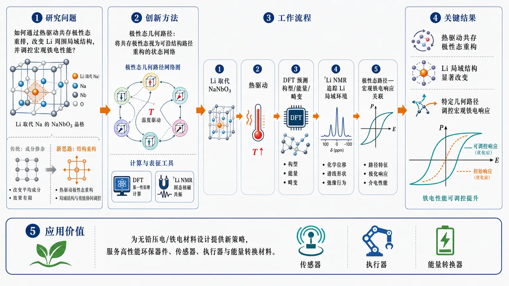
研究问题如何在 Li 取代 NaNbO₃ 无铅铁电体系中，利用热驱动下共存极性态的重新排列与转换，改变 Li 周围局域结构，并进一步调控宏观铁电性能，而不是仅依赖传统成分掺杂调节。创新方法提出“极性态几何路径”调控思路：把多个共存极性态看作可沿特定结构路径重构的状态网络，通过温度驱动极性态重排；结合第一性原理计算与 ⁷Li 固态核磁共振，直接追踪 Li 局域环境变化，并将微观极性态演化与宏观铁电响应连接起来。工作流程以 Li 取代 NaNbO₃ 为输入材料体系，在热驱动条件下诱发共存极性态变化；用第一性原理计算预测不同极性构型、能量关系和局域结构畸变；用 ⁷Li 固态核磁共振观察 Li 局域环境变化；再将极性态重构路径、局域结构演化与宏观铁电性能对应，输出可调控铁电响应的几何路径机制。关键结果发现 Li 取代 NaNbO₃ 中存在热驱动的共存极性态重构；计算和 ⁷Li 核磁共振共同表明，该重构会显著改变 Li 相关局域结构；不同极性态之间并非孤立切换，而是沿特定几何路径演化；该路径能够影响宏观铁电响应，证明结构重构可作为调控铁电性能的新旋钮。应用价值为无铅压电与铁电材料设计提供新的调控策略：通过设计温度响应的极性态重构路径和局域结构演化，实现性能优化；可用于开发环境友好的高性能无铅铁电器件、传感器、执行器和能量转换材料。核心概览
该论文研究 Li 掺杂 NaNbO₃ 中热驱动极性态重构，提出通过几何路径调控铁电性质，属铁电材料与结构调控方向。
方法要点
- 以 Li 掺杂 NaNbO₃ 为研究体系，关注其铁电性质调控机制。
- 利用第一性原理密度泛函计算分析局域结构与极性态关系。
- 结合 ⁷Li 固体核磁共振表征 Li 的局域结构信息。
- 研究热驱动下共存极性态的重构过程及其对铁电性质的影响。
关键结果
- 在 Li 掺杂 NaNbO₃ 中发现了一条通过热驱动共存极性态重构来调控铁电性质的几何路径。
- 揭示了 Li 局域结构与极性态之间存在关联。
- 该机制为铁电性能调节提供了不同于传统成分调控的思路。
- 摘要未详述具体铁电性能提升幅度、相变温度、掺杂浓度或实验参数。
创新性判断
- 可能的新颖点在于：不是单纯依赖成分变化调控铁电性能，而是强调“极性态重构”这一几何路径。
- 将热驱动的共存极性态演化与 Li 局域结构联系起来，可能为理解掺杂诱导铁电行为提供了新的微观机制。
- 第一性原理计算与 ⁷Li 固体核磁共振的结合，有助于从理论和局域实验表征两方面建立结构—极性态关联。
- 但摘要未详述对比对象、性能指标和机制细节，因此其相对已有工作的创新程度仍需全文确认。
-
20
📄 摘要：提出多极磁体中的伪手性声子概念：在八极磁序下，Raman 活性的简并声子双重态可表现出类似手性声子的响应，并与磁序耦合产生异常大的磁响应，拓展了手性声子从偶极磁体到多极磁体的范畴。
💡 亮点：八极磁序也能托出伪手性声子，不必依赖传统偶极磁体。把声子手性和多极磁序耦合起来，拓宽了磁光与声子学设计空间。
📖 展开分析 + 配图
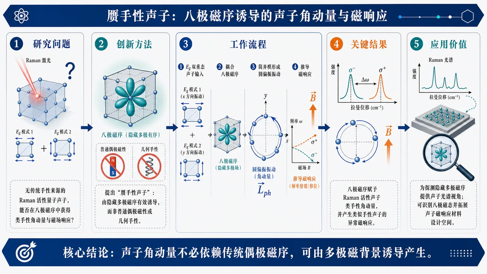
研究问题在多极磁体中，尤其是具有八极磁序的体系里，原本不具备传统手性来源的 Raman 活性量子声子，是否也能获得类似手性声子的角动量与磁场响应。创新方法提出“赝手性声子”概念：把偶极磁体中手性声子的异常磁响应类比推广到八极磁序背景，强调声子的类手性角动量不是来自普通偶极磁性或几何手性，而是由隐藏的多极磁序有效诱导。工作流程以 Raman 活性双重态声子（如 Eg 声子）为输入对象，置入八极磁序背景中；分析声子模式与多极磁序的耦合，判断简并声子是否形成带角动量的圆偏振式振动；进一步推导其是否产生类似手性声子的磁响应，最终定义为赝手性声子。关键结果八极磁序能够赋予 Raman 活性声子类似手性声子的角动量，并使其表现出磁响应；这种效应说明声子角动量不必依赖传统偶极磁序，也可由多极磁背景诱导产生。应用价值为探测隐藏多极磁序提供新的声子光谱视角，可通过 Raman 活性声子的异常角动量或磁响应识别八极磁态，并拓展手性声子、声子磁响应和多极磁性材料研究的设计空间。核心概览
本文提出“赝手性声子”概念，属于磁有序体系中声子磁响应/自旋-晶格耦合方向。论文用 Raman 活性的量子 Eg 双重声子为例，解释八极等多极磁序如何赋予非手性声子类似手性声子的选择性磁响应。
方法要点
- 从多极磁体的非传统磁序出发，构建“赝手性声子”这一概念框架。
- 以 Raman 活性的量子 Eg 双重声子作为代表性案例进行分析。
- 关注 Eg 双重态中如 (dₓ^₂₋y^₂) 等声子模式在八极磁序下的磁响应变化。
- 将普通手性声子的选择性磁响应类比推广到非普通偶极磁体中的声子模式；具体理论模型、计算方法或实验方案摘要未详述。
关键结果
- 八极磁序可以使某些原本不属于普通手性声子的声子模式获得“类似手性声子”的选择性磁响应。
- 这种效应可出现在非传统磁序体系中，即使材料并非普通偶极磁体。
- Raman 活性的 Eg 双重声子可作为展示该效应的典型对象。
- 摘要明确将该现象称为“赝手性声子”，用于解释多极磁体中声子的磁响应。
创新性判断
- 可能的新颖点在于提出“赝手性声子”这一概念，把手性声子的选择性磁响应扩展到多极磁序诱导的情形。
- 相比常规关注偶极磁序或真实角动量/圆偏振声子的研究，本文可能强调八极磁序对非手性 Raman 声子模式的有效手性化作用。
- 其创新性还可能体现在将 (E_g) 双重声子与八极磁序耦合联系起来，用于解释非传统磁体中的异常声子磁响应。
- 不过摘要未详述具体材料、模型推导、实验验证或定量结果，因此上述创新性判断仅基于摘要信息。
-
21
📄 摘要：机器学习材料模型常有两个未被标准验证触及的前提：特征是否真的对应目标物性，以及训练标签是否正确。作者提出模型无关审计流程，将 SHAP、反事实偏依赖分析和 Rashomon 式跨模型验证结合，并用定向 DFT 逐项裁决，应用到自旋霍尔电导问题以检查模型与训练数据的物理一致性。
💡 亮点：把 SHAP、反事实分析和 DFT 组合成材料模型审计链条。对自旋霍尔电导这类数据驱动物性预测尤其实用。
-
22
📄 摘要：把深度学习与Slater-Koster紧束缚形式结合，跨65种元素拟合跃迁与重叠参数，可为由这些元素构成的任意晶体确定性生成哈密顿量，服务于近端硬件上的VQE和VQD能带计算。
💡 亮点：65元素通用Slater-Koster参数化直接服务VQE/VQD能带计算。把DFT+Wannier前处理的一大部分自动化了。
-
23
📄 摘要：将XMCD分析表述为逆问题，利用神经网络直接从完整谱线形重建自旋和轨道角动量，训练数据来自Fe、Co、Ni L2,3边的多体多重态计算，绕开了仅靠积分谱强度的传统和则局限。
💡 亮点：XMCD不再只靠和则积分，而是直接反演自旋和轨道角动量。对多峰形、强关联谱线尤其更灵活。
-
24
📄 摘要：过渡态搜索是解析化学反应机理的关键步骤，但传统算法高度依赖初始猜测、人工经验和化学直觉，且计算开销大。作者提出基于软演员-评论家算法的过渡态搜索模型，用强化学习自动探索反应路径，减少对端点插值和人工设定的依赖。
💡 亮点：用 SAC 强化学习替代人工猜测来找过渡态。若能稳定收敛，将显著降低反应机理计算的入口门槛。
-
25
📄 摘要：针对白米醋易被经济性掺假这一问题，作者比较了近红外、傅里叶变换红外与荧光激发-发射矩阵光谱结合机器学习的检测效果。四个商业品牌被制备为 0% 至 50%（v/v）的人工醋酸掺假样品，并建立了包含光谱预处理与建模的非目标分析流程，用于识别掺假水平。
💡 亮点：用 NIR、FTIR 和 EEM 联合机器学习识别白米醋掺假。方法是食品光谱鉴别的典型非目标检测流程。
-
26
📄 摘要：针对含锥形交叉的非绝热光化学反应，高精度激发态数据生成代价极高，限制了机器学习原子间势用于超快动力学。该文探索如何构建接近多态多参考微扰理论精度的迁移学习势，并系统比较不同训练策略，同时引入波包振荡模型以描述超快光动力学过程。
💡 亮点：把高精度多参考激发态化学与迁移学习势结合，目标是可负担地描述锥形交叉附近动力学。对非绝热模拟和光化学势能面学习都很直接。
-
27
📄 摘要：基于Xia等人的四轨道Wannier哈密顿量，把单点两轨道DMFT与自能重整化RPA结合，用DMFT修正后的粒子-空穴泡替代普通RPA中的G0G0泡，同时保留剩余Slater相互作用，以分析加压La3Ni2O7中的s±配对稳定性。
💡 亮点：DMFT重整化的RPA把La3Ni2O7的配对竞争重新排布。结果指向s±态在压力下更稳。
-
28
📄 摘要：在弹道石墨烯/hBN约瑟夫森结中，先通过Fabry-Pérot振荡和Fraunhofer干涉确认跨狄拉克锥与莫尔迷你带的相干Andreev输运，再展示由分形Hofstadter谱支撑、最高达到6 T的相干Josephson干涉。
💡 亮点：莫尔超晶格让Josephson相干输运顶住更高磁场。6 T下仍能看见干涉，是器件调控的强信号。
-
29
📄 摘要：对铁基超导多层膜在超导射频应用中的表面势垒和表面电阻做解析评估，面向粒子加速器射频谐振腔，并与传统超导多层结构及块体Nb进行比较。
💡 亮点：铁基超导多层膜被放进SRF解析框架。比较焦点是表面势垒和表面电阻。
-
30
📄 摘要：网络安全被视为量子技术的重要应用，但传统协议需要量子与经典处理紧密协同，难以在现代通信网络的模块化架构中扩展。作者提出一种替代策略，把量子干预限制在物理层，用于大都会尺度光纤网络中的威胁检测，从而规避跨层耦合带来的部署复杂度。
💡 亮点：把量子干预限制在物理层做威胁检测，避免量子-经典跨层协调难题。对城域光纤安全部署更现实。
-
31
📄 摘要：提出利用小子系统的约化密度矩阵构造量子核来识别拓扑相，绕开必须测量全局非局域字符串序参量的限制，实现面向有限局域信息的数据高效监督分类。
💡 亮点：只看小子系统也能学拓扑相。量子核把难测的全局序参量压成可实验估计的局域信息。
-
32
📄 摘要：指出相干受控量子探针在末端测量时定义了比传统系统响应理论更大的操作性学习框架，不再局限于由系统自身给出的因果有序嵌套对易子响应。
💡 亮点：量子探针把“能学到什么”扩展到响应理论之外。末端测量提供了更大的多体学习操作空间。
-
33
📄 摘要：构造合成交易模拟器来生成跨多日闭合的稀疏环欺诈样本，提出量子启发的上下文学习原型，同时整合时间与图结构证据，用于动态交易图中的欺诈筛查基准评测。
💡 亮点：稀疏环欺诈需要跨天拼接图证据。这个量子启发原型把时间上下文和关系结构一起学。
-
34
📄 摘要：基于图邻接谱构造非齐次转移矩阵，建立有限方形磁网络中通量输运的定量模型，说明局域配位如何塑造能量景观与输运瓶颈，并预测长时间俘获与突发跃迁并存的双峰动力学。
💡 亮点：有限自旋网络里的通量会被几何瓶颈卡住。模型用邻接谱直接预言俘获-跃迁式双峰动力学。
-
35
📄 摘要：预测单层VO是二维交替磁体半导体，具有共线磁序；通过应变可调其光学响应，并可诱导拓扑相变，说明磁序、光学行为与拓扑性质在该体系中强耦合。
💡 亮点：单层VO把二维交替磁体、可调光学响应和拓扑转变连在一起。应变即可驱动相变，指向自旋光电器件设计。
-
36
📄 摘要：用飞秒激光脉冲释放LiNbO3中的俘获载流子，观察到由载流子屏蔽引起的超快、非热铁电抑制，说明非平衡载流子可在极短时间尺度上重塑极化稳定性。
💡 亮点：飞秒激光把LiNbO3里的俘获载流子唤醒，直接屏蔽并压制铁电性。说明极化可以被非平衡载流子超快改写。
-
37
📄 摘要：成功生长铁轴型磁氧化物SrMn2Ni6Te3O18单晶，并系统测量其磁性、磁电和光学性质；该材料属于AB2C6Te3O18家族，为多场耦合行为提供了清晰的实验平台。
💡 亮点：SrMn2Ni6Te3O18单晶把磁性、磁电和光学响应放到同一材料里表征。对铁轴型氧化物的多场耦合理解更完整。
-
38
📄 摘要：研究气候物理风险、气候转型风险与碳、能源、金属市场之间的分位数时频联动，并从收益、波动、偏度、峰度四类高阶风险构建多层网络。结果表明，不同市场条件下这些风险的溢出路径和网络拓扑会发生显著变化，用于刻画气候风险向大宗商品市场的传导。
💡 亮点：把气候风险与商品市场放进时频分位和高阶矩网络里看传导路径。适合研究风险在碳、能源、金属间的跨市场放大机制。
-
39
📄 摘要：基于第一性原理考察Nd2Fe14B永磁体表面碳残留对局域电子结构与磁性响应的影响，重点分析残留碳引起的表面扰动及其对磁矩、交换作用和磁各向异性的修饰。
💡 亮点：第一性原理把Nd2Fe14B表面碳残留的磁性扰动拆到原子尺度。对永磁体表面污染控制和退磁机理判断更直接。
-
40
📄 摘要：通过准范德华外延实现高质量纤锌矿铁电体的低温生长，核心在于降低外延热预算的同时维持晶体与界面质量，面向可集成铁电薄膜制备。
💡 亮点：准范德华外延把纤锌矿铁电体的生长温度压下来。低热预算下仍保留高质量外延，利于器件集成。
-
41
📄 摘要：量子密钥分发依赖设备可信与精确建模，而设备无关方案又常受实现条件限制。该文讨论非对称网络中的部分设备无关量子密码框架，在保留 Bell 违背认证思想的同时，放宽对设备完全可知性的要求，以适配更复杂的网络拓扑。
💡 亮点：在非对称网络里放宽到部分设备无关的量子密码。目标是在更少设备假设下维持密钥安全认证。
-
42
📄 摘要：针对生成式催化剂发现中常见的slab级表面结构缺少对应母体晶体这一问题，提出层片到体相检索的对比表示学习方法，用于恢复形成能、表面能和晶体学信息等体相相关属性。
💡 亮点：生成催化剂时不只要表面slab，还要能找回父体相。对比学习把表面结构和体相信息重新接上。
-
43
📄 摘要：将大分子组织为具有空间与取向秩序的纳米结构仍是自下而上材料设计的难题。作者围绕折叠体与共聚物组装讨论有序纳米结构与晶体网络的形成，指出现有序列特异性合成多局限于寡聚体，而聚合物级的可编程折叠与疏水塌缩可能提供更可扩展的组装路径。
💡 亮点：把折叠体设计从寡聚体推进到共聚物与晶体网络。核心是利用序列编程和疏水塌缩构造有序结构。
-
44
📄 摘要：针对全双工基站受信道互易性限制、易受多用户同频干扰的问题，作者考察非互易动态超表面天线在基站侧的潜力。系统采用一个环行器连接三路馈口的多馈 DMA，并结合强互耦和 1 比特可编程超表面单元，用多端口网络理论和实验估计的代理参数进行建模与优化。
💡 亮点：用非互易动态超表面打破全双工的互易性束缚。多端口建模把强互耦和可编程单元纳入了设计。
-
45
📄 摘要：作者提出一种逆问题建模方法，通过把数据同化进一个可微分的、基于物理的卷积前向模型来估计简单陆面模型的参数。方程写入 Neural Physics 框架后，可直接用梯度下降优化时变参数，无需手工推导和维护伴随方程，并可用合成或观测数据进行校准。
💡 亮点：把陆面模型写成可微物理卷积后，直接梯度反演参数。省去伴随推导，适合时变参数同化。
-
46
📄 摘要：主动流控制同时包含非线性动力学、部分观测和昂贵仿真，使控制器设计很难直接依赖深度强化学习。作者探索另一种路线：不直接优化神经网络参数，而是借助编码代理学习启发式控制策略，以减少对大量 simulator 交互的依赖，并提升决策可解释性。
💡 亮点：不用端到端网络，而是让编码代理学流控启发式。若有效，会降低主动流控制的样本成本和黑箱性。
-
47
📄 摘要：作者直接审计分布式强化学习代理的风险声明是否真实，避免把学到的完整回报分布视为天然可信。方法用超额 Wasserstein 间隙筛查最优动作间的第一阶随机占优违背，再结合快照重启构造真值，对训练后风险估计进行逐项核查。
💡 亮点：不只看分布式 RL 的风险输出，还审计其风险陈述是否真成立。对安全控制和风险敏感决策很关键。
-
48
📄 摘要：提出一种面向消费级硬件的节俭型混合神经架构搜索框架，把自回归Transformer控制器的全局搜索与人工蜂群算法的局部微调结合起来，并用强化学习训练控制器，在低算力条件下完成网络设计。
💡 亮点：Transformer负责全局搜架构，蜂群算法负责局部精修。把NAS从千GPU日级别拉向更便宜的硬件环境。
-
49
📄 摘要：面向非侵入式 EEG 连续三维运动想象解码，CNN-LSTM 等深度模型虽能捕捉时空动态，但轨迹预测仍存在系统性残差。该文提出两阶段框架，在原始解码器之外加入强化学习模块，对连续运动学轨迹进行残差校正，以提升 3D 轨迹重建精度。
💡 亮点：先做连续 EEG 运动学解码，再用强化学习补偿残差误差。对连续 BCI 的轨迹精度和稳定性更友好。
-
50
📄 摘要：面向车辆和航空等工业设计中的大规模流体仿真，作者针对复杂几何和大网格带来的预测困难，提出多尺度特征增强图神经网络。该方法利用图神经网络对非结构化数据的灵活性，将局部与全局信息融合以提升复杂几何下的流体场预测效率。
💡 亮点：把多尺度特征塞进图神经网络，专门应对复杂几何流体场。对非结构网格预测比普通 GNN 更贴近工程需求。
-
51
📄 摘要：提出一种面向机器学习的实频Green函数、混成函数和自能的紧凑稳定矩表示，用Cayley映射三角矩并显式包含Jacobian，既保持谱权归一化，又把矩序列联系到正的矩阵值谱测度，并可系统构造极点表示。
💡 亮点：Cayley映射矩把实频谱函数压缩成稳定表征，还保住谱权归一化。它为多体谱函数进入机器学习提供了更干净的数据接口。
-
52
📄 摘要：面向参数化非线性守恒律的降阶模型，作者指出现有潜变量动力学普遍缺少预测不确定性，也难以保证守恒律一致性。该工作试图统一两者：在结构保持框架中加入变分神经场，实现可量化置信度的低维动力学近似，并约束预测不偏离原始守恒结构。
💡 亮点：把不确定量化和守恒约束统一到降阶建模中，直接针对非线性守恒律的可信加速。对复杂连续介质模拟与数据同化都更实用。
-
53
📄 摘要：面向流式到来的图结构多模态网页数据，提出UNIT框架，针对语义与结构分离、以及早期知识向后续任务迁移不均两类难题，把大语言模型的语义能力引入图持续学习以增强连续建模。
💡 亮点：把LLM语义能力接入图持续学习，正面处理流式网页图的结构-语义割裂。目标是让图模型在持续更新时不丢通用知识。
-
54
📄 摘要：为解决神经网络执行算法时状态转移不可见的问题，作者提出迹监督的符号神经 CPU。该架构把循环控制、显式操作路由器、固定可微算术逻辑单元、目的地掩码寄存器回写和完整轨迹监督结合起来，并支持匹配的定点回放，使执行过程可追踪、可解释。
💡 亮点：把程序执行拆成可追踪的符号状态转移，而不是只给最终答案。对可解释算法学习和可靠推理很有价值。
-
55
📄 摘要：角分辨光电子能谱和时间分辨 ARPES 常用二阶导数、最大曲率等手工增强方法，但这些方法容易放大噪声并削弱谱线结构。作者提出梯度注意力 U-Net，用于 ARPES/trARPES 数据去噪与重建，目标是在保留谱特征的同时提高可视化和解析能力。
💡 亮点：把 ARPES 里常见的导数增强换成梯度注意力 U-Net。核心收益是降噪重建而不是放大噪声。
-
56
📄 摘要：面对国际人工智能奥赛及各国联赛的兴起，预测型提交与异构评分指标带来了不同于传统编程竞赛的评测需求。作者开发 MLCompete，一个面向机器学习竞赛的网页平台，支持异步、与指标无关的预测文件评测，便于大规模举办和运维多语言机器学习奥赛。
💡 亮点：为机器学习奥赛搭建了通用评测平台，而不是传统代码判题。对预测类竞赛的组织方式更匹配。
-
57
📄 摘要：针对印度东北部数据稀缺山地流域土壤侵蚀空间评估不足的问题，作者以 942 km² 的 Thoubal 河流域为例，结合 RUSLE 与可解释机器学习，分析 2005、2011 和 2017 年侵蚀动态。研究整合 India-WRIS 的土地利用图、30 m Copernicus GLO-30 DEM、NBSS&LUP 土壤图和河网等开源地学数据进行制图与解释。
💡 亮点：用开源遥感与 RUSLE/可解释 ML 画出山地流域土壤侵蚀格局。适合数据贫乏地区的生态风险评估。
-
58
📄 摘要：研究PINN求解线性偏微分方程时的微分神经切线核及其正性问题，聚焦多个微分算子并存时的分析困难，给出刻画该核正性的理论框架。
💡 亮点：把PINN的收敛分析落到微分NTK正性上。对含多算子的线性PDE求解尤其关键。
-
59
📄 摘要：用Ising模型的微观自旋构型训练无监督自编码器，定量分析其在多个空间粗粒化尺度上的学习过程，发现由深度、宽度和学习率控制的两类动力学区间：磁化主导和能量主导。
💡 亮点：自编码器会先学磁化还是能量，取决于超参数。它把Ising中的理论变量以动态方式“长”出来。
-
60
📄 摘要：现有生成模型通常在平坦欧氏空间学习数据分布，而气动数据更接近嵌入高维空间的流形。作者提出 IG-GAN，把生成器表示为由 Bézier 曲面构成的分段光滑流形，通过学习各曲面系数来组合多个几何片段，从而生成更符合内禀几何结构的气动数据。
💡 亮点：用 Bézier 曲面显式编码气动数据的流形结构。对几何约束强的生成任务比普通 GAN 更自然。